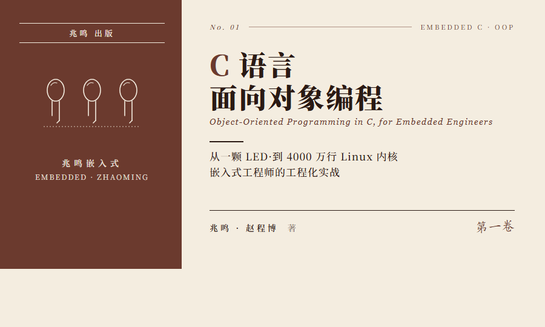
C 语言面向对象编程·嵌入式实战
从一颗 LED 写到 Linux 内核 4000 万行代码。
这本书讲三件事：封装、继承、多态。不讲 C 语法，不讲 100 个外设驱动 API，只讲工业级 C 代码是怎么组织起来的。
学完之后你能看懂 HAL 库源码、Linux 驱动骨架，能用 C 写出和 C++ class 等价的代码，换芯片时只改驱动文件、应用层一行不动。
永久免费在线阅读·MIT License·不出版纸质书。
适合谁
- 学完 C 语法但不知道“工业级代码长什么样“的大二、大三学生
- 写得了 demo 但不会架构的初级嵌入式工程师
- C++ / Java 转嵌入式，想知道 C 怎么手撸 OOP 的人
- 面试准备：把
container_of、函数指针、平台抽象讲到底层原理
不适合的：完全没写过 C 程序的零基础读者。先学 C 语法再来。
这本书的特点
- 不实操也能完全理解：每个
static、每个指针、每个container_of都讲到不开 IDE 也能 follow。有经验的工程师扫读一遍就懂，不用动手 - 三套代码并行：核心代码在 PC、STM32、Linux 用户态都能跑，每章末贴 STM32 HAL 等效片段和 Linux 用户态等效片段
- 真实工业代码做案例：第五部分两章基于工业控制板真实项目
- 代码 100% 跑通：每章配套代码包过
gcc -Wall -Wextra0 警告 - Linux 内核风格：tab 缩进、
struct led而非Led_t，读完看 Linux 内核源码不陌生
全书目录
第一部分 · 封装
- 三个 LED 三份代码 · 第一次面对重复
- 同事改了一行 LED 全乱了 · static 与信息隐藏
- 你用 C 手搓了一个 class · 句柄与操作函数
- 你的全局变量该死了 · 数据三级分类
- HAL 库源码漫游 · 从抽象接口到平台实现
第二部分 · 继承
第三部分 · 多态
第四部分 · 工程威力
- 一个指针指所有 LED · 向上转型
- container_of 的地址魔法 · 向下转型
- 虚函数不实现会怎样 · 纯虚与抽象类
- 换硬件不改应用 · Platform 抽象到底
- 为什么 Linux 一点都不难 · 你已经在写 Linux 风格代码
- 4000 万行一招写完 · 链接自动初始化
- 全书地图回顾 · 一颗 LED 走过的演化路径
第五部分 · 工业实战
附录
- A · 三大开源项目对照（Linux 内核 / Zephyr / GObject）
- B · STM32 完整工程：跑通全书所有抽象
- C · Linux 用户态完整工程：跑通全书所有抽象
- D · 配套代码索引 + 视频清单 + 编译运行指南
配套资源
完整代码：oop-in-c/code/ 目录下，每章一个独立目录。跑代码三步：
cd oop-in-c/code/01-three-leds/pc
make
./demo
无开发板也能学，所有代码都通过 platform.h 抽象 GPIO，PC 上用 printf 模拟。
关注作者
| 平台 | 信息 |
|---|---|
| 公众号 | 兆鸣嵌入式 |
| 个人微信 | zmqrs001 |
| GitHub | github.com/ZhaoChengBo/zhaoming-embedded |
| Gitee | gitee.com/zhao-chengbo/zhaoming_embedded |
| 抖音 | 搜「兆鸣嵌入式」 |
| B 站 | 搜「兆鸣嵌入式」 |
| 视频号 | 搜「兆鸣嵌入式」 |
扫码关注公众号「兆鸣嵌入式」，回复「交流」加入嵌入式技术交流群。后续会持续分享嵌入式架构、工业代码、Linux 内核走读、面试经验等深度内容。
反馈与勘误
发现错误、有改进建议、想贡献一章，到 GitHub Issues 或 Gitee Issues 提一个，附章节、你的理解、你认为的问题。我会回。
读完哪章你觉得讲透了，哪章还差点意思，欢迎写出来。这是迭代下一版的最好材料。
开始阅读：前言
前言
在我待过的项目里，常常看到这样的代码：
三颗 LED 写三份几乎一模一样的函数。加一个新传感器，复制 5 个文件、改 30 个 #define。换一颗芯片像搬家，应用层全部重写，因为驱动层根本不是“驱动层“，是一堆“硬件操作的散装代码“。
不是这些工程师不努力。是没人系统教过 C 代码该怎么组织。
中国市面上的 C 语言书多数在讲语法：指针、数组、结构体怎么用。嵌入式书多数在讲外设：GPIO、UART、I2C 怎么配寄存器。但“几千个外设驱动是怎么用同一个套路写出来的“、“为什么 Linux 内核 4000 万行 C 代码不会塌”，这些问题没人讲。
这本书补这个洞。
为什么从一颗 LED 开始
任何复杂的工业框架，都是同一套机制的放大。
LED 是一个驱动，ADC 也是一个驱动，电机也是一个驱动。它们的代码骨架完全一样。看懂一颗 LED 怎么从 struct + me 指针 一步步演化到 Platform 驱动，就看懂了 Linux 内核所有的字符设备驱动。
不需要 100 个例子。需要一个例子讲透。
这本书的特点
不实操也能完全理解。
读技术书最常见的挫折是“看懂了字面意思但还是不知道为什么这样写“。这本书的写法是：每一段代码改动，都解释“如果不这么改会怎样“。每一个 static、每一个 void *、每一个 container_of 都讲到不开 IDE 也能 follow。
如果你有经验，扫读一遍就懂。如果你刚入行，每段代码盯着看 3 分钟也能跟上。
三套代码并行。
每一章的核心代码（struct + 函数）在 PC、STM32、Linux 用户态三个平台上都能跑。书里的安排是：
- 主体代码用 PC 模拟实现，gcc 一句编译就能看到效果
- 章末贴 STM32 HAL 等效片段，告诉你换到真实硬件长什么样
- 章末贴 Linux 用户态等效片段（sysfs 或 libgpiod），告诉你嵌入式 Linux 端长什么样
完整的 STM32 工程和 Linux 用户态工程见附录 B、附录 C。
真实工业代码做案例。
第五部分两章基于我参与的工业控制板真实项目代码。前面章节铺垫的所有抽象，到了这两章你能看到它们在真实项目里实际长什么样。中国其它嵌入式书几乎都用“LED 闪烁、按键消抖“这种 toy 案例。
代码 100% 跑通。
每一章配套的代码包都过 gcc -Wall -Wextra 0 警告编译，运行 exit 0，输出和章节正文描述一致。
Linux 内核风格代码。
书里的代码统一采用 Linux 内核编码风格：tab 缩进、K&R 大括号、80 列以内、struct led 而非 typedef Led_t。这是世界开源项目最广泛使用的风格。读完这本书你看 Linux 内核源码、Zephyr RTOS 源码不会觉得陌生。
永久免费在线阅读。
这本书不出版纸质版。所有内容在 https://zhaochengbo.github.io/zhaoming-embedded/ 永久免费阅读，仓库在 GitHub 和 Gitee 双 remote，国内国外都能 clone。
这本书和视频的关系
我在 B 站、抖音、视频号都叫「兆鸣嵌入式」。这本书的内容来自我录的「C 语言·一个 LED 讲透面向对象」系列视频。
视频是被动观看，节奏由我控制。书是主动阅读，节奏由你控制。
视频里说 “container_of 就是从成员反推出 struct 起始地址”，3 秒过去你可能没消化。书里这一句你可以盯着看 3 分钟。视频里代码一闪而过，书里你可以一行一行抄。视频发出去就不会再改，书里的代码我会持续修订，每个 commit 都过编译。
书面体相比口播体更深入。视频里因为时长没讲透的细节，书里都会补。
和现有中文嵌入式书的差别
现有的中文嵌入式书大致两类。
一类是野火、正点原子的功能字典型：配套开发板，覆盖完整，对学生友好。短板是 100 万字、20 章外设，章和章之间没有叙事弧线，读完不知道掌握了什么思想。
一类是直接讲 Linux 内核源码，硬核。短板是门槛极高，新人 3 天放弃。
这本书是第三种：从最小的 LED 出发（门槛低），每一章只讲一个概念（聚焦），概念之间有清晰的因果链（叙事弧线），最后落到 Linux 内核风格的 Platform 驱动（够硬核）。
它会比工具书薄得多。但读完之后拿到任何一份工业代码，你能 5 分钟看懂它的骨架。
怎么读
按章顺序读最好。这本书的章节是有积木依赖的：第 11 章的多态需要第 7 到第 10 章铺垫，第 15 章的 Platform 层需要第 12 到第 13 章的转型机制。跳读会失去“为什么是这样设计的“的因果感。
如果就是想速通某个面试题，查附录 D 的索引找对应章。
如果在职工程师只想看“我现在的代码该怎么重构“，直接看第 15 章（换硬件不改应用）和第 16 章（为什么 Linux 一点都不难），再往前补需要的知识。
用 AI 一起读
你手上有 ChatGPT、Claude、Gemini、DeepSeek 这一类 AI 工具，建议边读边用它们。
这本书我尽力写得清楚，但知识本身是一张网，不是一条直线。线性看下去总会有几处你想多问一句“这一段背后还有什么“。把这本书的章节文本（或者具体一段代码）丢给 AI，让它给你扩展、举反例、用你更熟悉的领域类比一遍，比对着纸质书一行行查百度高效得多。
两种用法特别推荐：
- 费曼学习法配 AI：读完一节，把你理解的东西用自己的话讲给 AI 听，让它指出哪里不对、哪里不准确。讲不出来的部分就是你没真懂的部分。这套方法 Richard Feynman 教书时反复用，AI 让它从一对一变成随时可用。
- AI 当陪练，不当百科：问“这段代码为什么这样写“比问“什么是多态“信噪比高得多。具体场景的问题 AI 最擅长，开放式定义题它容易给你一段套话。
我作为作者必须说明：这本书有写得不够透、甚至写错的地方，我自己重读时还在改。AI 同样会犯错，特别是嵌入式、内核、硬件这些训练数据相对稀疏的领域。把书和 AI 一起当工具用，互相校验，比单信任任何一方都稳。
最后一句话留给在职的你：现在不少卖课的把“答疑“当核心服务卖，但作为工程师，你的核心竞争力是自己解决问题的能力。十年前嵌入式工程师靠老工程师传帮带，现在你有 AI 工具，等于多了一个 24 小时在线的同事。这一代把 AI 用透的工程师，会比上一代有显著的产出优势。
怎么动手
有经验的工程师可以完全不跑代码。书里每段代码每行的意图都讲透了，不开 IDE 也能完全理解。扫读一遍就走的话也对得起这本书。
如果你刚入行或者想要更强的体感，跑一次代码会让你印象深刻。特别是第一次看到三颗 LED 共用一份函数被同一行 led_on() 依次点亮的时候。
每章对应一个 oop-in-c/code/<章节名>/ 目录，里面是完整可编译的代码。第 1 章对应 oop-in-c/code/01-three-leds/，目录里 pc/ 子目录是完整可跑的 PC 模拟版，stm32-snippet/ 和 linux-snippet/ 是 STM32、Linux 端的等效片段。
跑代码三步：
cd oop-in-c/code/01-three-leds/pc
make
./demo
Windows 用户装 MinGW 或 MSYS2（搜官方安装包一路 next，勾选“添加到 PATH“），命令行敲 gcc --version 看到版本号即装好。Linux 一句 sudo apt install gcc make。装好后整本书 20 章的代码都按上面三步跑就行。
没有 STM32 开发板能学吗？能。所有代码都通过 platform.h 抽象 GPIO，PC 上用 printf 模拟。等你学到第 15 章 Platform 层，会自己写一个 platform_stm32.c 替换 platform_pc.c，上层代码一行不改。这就是平台抽象的威力。
反馈与勘误
到 GitHub Issues 或 Gitee Issues 提一个 Issue，附上你看的章节、你的理解、你认为的问题。我会回。
读完哪章你觉得讲透了，哪章还差点意思，也欢迎写出来。这是迭代下一版的最好材料。
5 分钟看见你的第一个 OOP LED
学一个新东西，最重要的一刻不是读懂理论，是亲眼看见它能跑。
费曼讲过一句话：被自己说服，才叫理解。读完一段代码觉得“哦原来是这样“，那是被作者说服。亲手编译一次、跑出和书里描述一致的输出，那才是被自己说服。
这一章不解释任何概念，只做一件事：让你在 5 分钟内跑通一段 C 代码，看到屏幕输出三颗 LED 被同一份函数依次点亮。
准备工作
需要的工具只有一个：GCC 编译器。
Windows 用户装 MinGW 或 MSYS2 任选一个（搜官方安装包一路 next，勾选“添加到 PATH“），然后命令行敲 gcc --version 看到版本号即装好。
Linux 用户：sudo apt install gcc make（Debian/Ubuntu）或 sudo yum install gcc make（RHEL/CentOS）。
完全不想装环境也行：每个章节代码包都附带预编译好的 demo.exe，Windows 双击即可看到完整输出。
如果你是有经验的工程师，跑不跑代码都行。这本书的写法是不实操也能完全理解每行代码的意图。
三步跑通
第一步，克隆仓库：
git clone https://github.com/ZhaoChengBo/zhaoming-embedded.git
cd zhaoming-embedded/oop-in-c/code/01-three-leds/pc
国内访问 GitHub 慢可以用 Gitee：
git clone https://gitee.com/zhao-chengbo/zhaoming_embedded.git
cd zhaoming_embedded/oop-in-c/code/01-three-leds/pc
第二步，编译：
make
或者直接用 GCC：
gcc -Wall -Wextra -std=c99 -I../../common -o demo main.c led.c ../../common/platform_pc.c
编译成功，当前目录会多出一个 demo（Linux/Mac）或 demo.exe（Windows）。
第三步，运行：
./demo
看到了什么
屏幕滚出几十行 [GPIO] 和 [LED] 输出。三颗 LED（Pin 13 红、Pin 14 绿、Pin 15 蓝）依次被初始化、点亮、熄灭、调亮度。
打开 main.c，关键的几行是：
struct led red_led;
struct led green_led;
struct led blue_led;
led_init(&red_led, 13);
led_init(&green_led, 14);
led_init(&blue_led, 15);
led_on(&red_led);
led_on(&green_led);
led_on(&blue_led);
led_on() 这个函数在 led.c 里只写了一份，不到 10 行。但它服务了三颗 LED。通过传不同的“挂号单“（&red_led、&green_led、&blue_led），它能服务无限多颗。
这就是封装。
你可能从来没听过这个词，也可能听过但觉得它玄。没关系。下一章从最朴素的“工程师都会的写法“开始（三颗 LED 写三份代码），一步步发现为什么必须演化成你刚才看到的样子。
跑不起来
| 报错 | 解决 |
|---|---|
gcc: command not found | GCC 没装或不在 PATH，按“准备工作“那一节装一遍 |
make: command not found | Windows 上 MinGW 装的是 mingw32-make，改名或建别名 |
fatal error: stdio.h: No such file | GCC 装得不全，重装并选完整开发套件 |
| 中文路径报错 | 把仓库克隆到纯英文路径，如 D:\code\zhaoming |
| 编译过了但运行报错 | Windows 试 ./demo.exe，或加 ./ 前缀 |
还是不行，到 GitHub Issues 或 Gitee Issues 提一个，附系统、GCC 版本、完整报错。
为什么先看见再谈理论
接下来 ch01-ch20 共 20 章（OOP 主体 18 章 + 工业实战 2 章）+ 4 附录，你会一步步推出整个面向对象。但如果你在没看见结果之前先去读一堆抽象概念，会有一种“知道“但不“懂“的错觉。这是大多数中文技术书的通病。
费曼方法的核心是：不被作者说服，要被自己说服。今天这 5 分钟你已经被自己说服一件事：这三个 LED 真的可以一份代码搞定，不是我吹的。后面 18 章 OOP 主体 + 工业实战 2 章只要让你心服口服地说“哦原来是这样推出来的“。
第 1 章 · 三个 LED 三份代码
配套代码：oop-in-c/code/01-three-leds/
1.1 一个真实场景
接手新项目。硬件工程师跟你说：板子上有三个状态指示灯，红灯接 GPIO Pin 13，绿灯接 Pin 14，蓝灯接 Pin 15。红灯指示心跳，绿灯指示运行正常，蓝灯指示有错误。
简单。打开 IDE，5 分钟敲完：
void red_led_on(void) { HAL_GPIO_WritePin(GPIOA, GPIO_PIN_13, GPIO_PIN_SET); }
void red_led_off(void) { HAL_GPIO_WritePin(GPIOA, GPIO_PIN_13, GPIO_PIN_RESET); }
void green_led_on(void) { HAL_GPIO_WritePin(GPIOA, GPIO_PIN_14, GPIO_PIN_SET); }
void green_led_off(void) { HAL_GPIO_WritePin(GPIOA, GPIO_PIN_14, GPIO_PIN_RESET); }
void blue_led_on(void) { HAL_GPIO_WritePin(GPIOA, GPIO_PIN_15, GPIO_PIN_SET); }
void blue_led_off(void) { HAL_GPIO_WritePin(GPIOA, GPIO_PIN_15, GPIO_PIN_RESET); }
提交、编译、烧录、跑通。下班。
到这里看起来一切正常。这段代码也不会被 code review 打回。但工程上的麻烦才刚开始。
1.2 三个月后硬件改版
PM 跟你说：为了 EMC 通过，红灯改接 Pin 7。
简单，改一行：
void red_led_on(void) { HAL_GPIO_WritePin(GPIOA, GPIO_PIN_7, GPIO_PIN_SET); }
void red_led_off(void) { HAL_GPIO_WritePin(GPIOA, GPIO_PIN_7, GPIO_PIN_RESET); }
注意，你改了两个地方。
如果还要支持调亮度，你写过 red_led_set_brightness()，里面也用了 Pin 13，那是第三个地方。如果再加反初始化函数 red_led_deinit()，第四个地方。
你能保证每次都改全？改漏一个，红灯有时候是 Pin 13、有时候是 Pin 7，这个 bug 你能找一下午。
PM 又来了：要再加 5 个 LED 做电量指示。
你打算怎么办？把 red_led_on / red_led_off / ... 复制 5 遍，前缀改成 bat_1_led_ / bat_2_led_ / ...？
那是 8 个 LED 乘以 4 个函数等于 32 个几乎一模一样的函数。每个函数体只有一行不一样：引脚号。
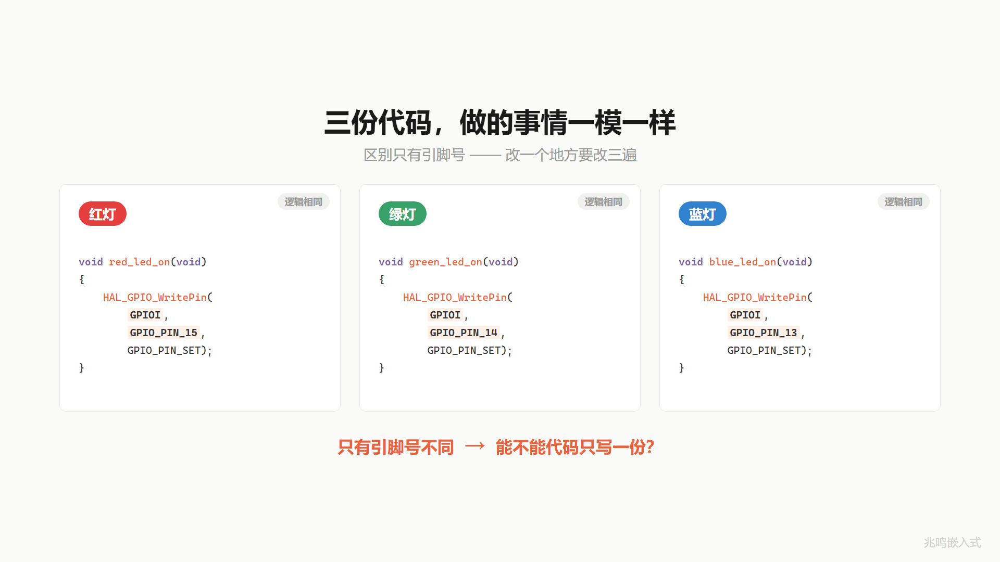
这就是绑死的代码。它能跑，但只能在 PM 不改硬件、不加 LED 的世界里跑。
1.3 把“区别“和“代码“分开
冷静下来问一个问题：这 32 个函数，到底有什么区别？
仔细看，区别只有一个东西：引脚号。
代码的逻辑（对一个 GPIO 写高电平、写低电平）完全一样。
那问题就清楚了：能不能代码只写一份，引脚号另外告诉它？
去医院看过病。前台给你一张挂号单，上面填名字、年龄、挂什么科。每个病人一张单子，单子上的内容不同，单子的格式相同。
医生只有一个，他怎么知道现在给谁看病？你把挂号单递给他，他看的是你单子上的信息。
给 LED 也发挂号单。红灯一张，写着 Pin 13。绿灯一张，写着 Pin 14。蓝灯一张，写着 Pin 15。三张单子，内容不同，格式一样。
医生（led_on 函数）只有一份。你想点哪个 LED，就把哪张单子递给他。
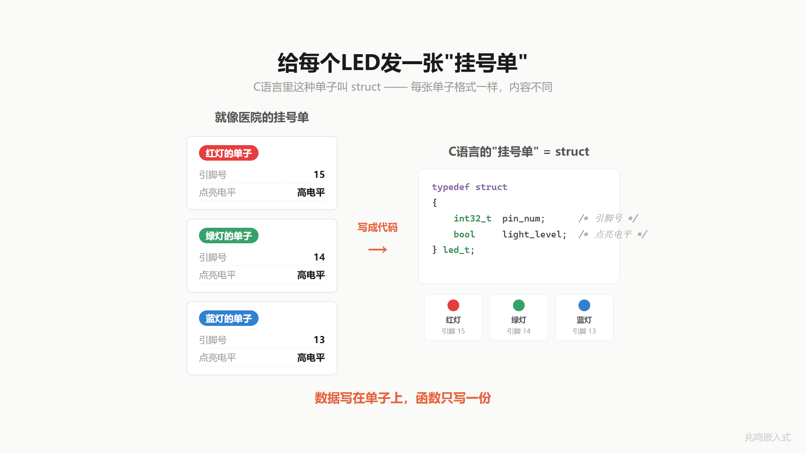
C 语言里这种“把一组相关数据装在一起“的东西叫 struct。给 LED 定义一份挂号单：
struct led {
uint8_t pin; /* GPIO 引脚号 */
uint8_t brightness; /* 当前亮度 0~100 */
bool is_on; /* 当前开关状态 */
};
然后给三颗 LED 各开一张单子：
struct led red_led;
struct led green_led;
struct led blue_led;
每个 struct led 变量，就是一颗 LED 的全部信息。
1.4 函数怎么知道现在是哪张单子
挂号单有了，但函数怎么知道自己在操作哪个 LED？
你递给它。
C 语言里“递“东西给函数，用的是指针。led_on 这样写：
int led_on(struct led *me)
{
if (!me)
return -1;
me->is_on = true;
platform_gpio_write(me->pin, true);
return 0;
}
第一个参数 struct led *me，字面意思就是“我“：我现在操作的是哪张挂号单。
调用的时候：
led_on(&red_led);
led_on(&green_led);
led_on(&blue_led);
& 在 C 里读作“取地址“，物理意义是“这张挂号单放在内存的哪个位置“。现在不需要纠结这个底层，就当它是“递这张单子“。
关于
pin这个参数看到
platform_gpio_write(me->pin, true)你可能会奇怪：真实 STM32 上 GPIO 既有 port (A/B/C/D)、又有 pin no (0-15)，怎么这里只有一个pin？工业代码里
pin是一个编码值，把 port + 引脚号塞进一个整数：#define PIN(port, num) (((port) << 4) | ((num) & 0xF))调用方写
PIN(D, 12)表示 PD12，port 信息藏在 pin 编码里。这样接口签名永远只有一个pin参数。Linux 内核gpio_set_value(unsigned int gpio, ...)是这套做法，工业控制板的platform_pin_write(int32_t pin, int32_t val)也是。第 15 章和附录 B 会把这条工业纪律展开。
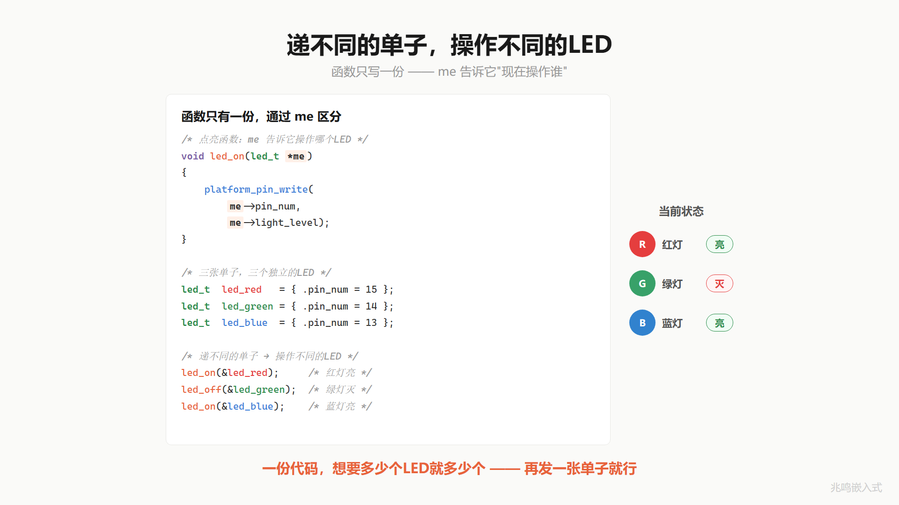
把这个思路推广到所有操作（初始化、开、关、翻转、调亮度），就有了一个完整的 LED 模块。下面是节选自 oop-in-c/code/01-three-leds/pc/led.c：
int led_init(struct led *me, uint8_t pin)
{
if (!me)
return -1;
me->pin = pin;
me->brightness = 0;
me->is_on = false;
platform_gpio_init(pin, GPIO_MODE_OUTPUT);
platform_gpio_write(pin, false);
return 0;
}
int led_on(struct led *me)
{
if (!me)
return -1;
me->is_on = true;
platform_gpio_write(me->pin, true);
return 0;
}
int led_off(struct led *me)
{
if (!me)
return -1;
me->is_on = false;
platform_gpio_write(me->pin, false);
return 0;
}
int led_toggle(struct led *me)
{
if (!me)
return -1;
if (me->is_on)
led_off(me);
else
led_on(me);
return 0;
}
int led_set_brightness(struct led *me, uint8_t brightness)
{
if (!me)
return -1;
if (brightness > 100)
return -2;
me->brightness = brightness;
platform_gpio_write(me->pin, brightness > 0);
me->is_on = (brightness > 0);
return 0;
}
应用层的调用是这样：
struct led red_led, green_led, blue_led;
led_init(&red_led, 13);
led_init(&green_led, 14);
led_init(&blue_led, 15);
led_on(&red_led);
led_on(&green_led);
led_set_brightness(&blue_led, 75);
led_toggle(&green_led);
32 个重复函数砍到 6 个。再加 100 颗 LED，再开 100 张单子就行，函数一行不用加。
1.5 这个东西叫什么
你刚才跟我做的事（把属于同一个东西的数据打包在一起，让函数通过 me 指针知道自己在操作谁），软件工程里有个名字。
它叫封装（Encapsulation）。
你可能听过这个词，觉得很高大上，觉得它和 Java、C++、设计模式之类的东西绑在一起。
但你刚才看见了，它就这么简单。封装不是把代码藏起来，是让同一份逻辑服务不同的数据。
费曼讲过：被自己说服才叫理解。你不是从我这里背了一个定义，是从一个具体痛点（32 个重复函数）出发，自己推出了 struct + me 这个解。这种被自己说服的理解，是背不出来的。
1.6 me 就是 this
如果学过 C++，你会写：
class Led {
public:
void on() { platform_gpio_write(pin_, true); }
void off() { platform_gpio_write(pin_, false); }
private:
uint8_t pin_;
bool is_on_;
};
Led red_led;
red_led.on();
而 C 里写的是：
struct led {
uint8_t pin;
bool is_on;
};
int led_on(struct led *me)
{
platform_gpio_write(me->pin, true);
return 0;
}
struct led red_led;
led_on(&red_led);
这两段代码做的是一模一样的事。
唯一的区别有三处：
- C 里你手动写
struct { ... }，C++ 里编译器帮你做（你写class { ... }） - C 里你手动写
(struct led *me, ...)，C++ 里编译器偷偷加，名字叫this - C 里调用是
led_on(&red_led)，C++ 里是red_led.on()
C++ 只是让编译器帮你干了你刚才手动干的事。底层机器码几乎一模一样。如果你想亲眼验证，把两段代码贴进 Compiler Explorer 这种在线汇编查看工具，差别小到可以忽略。
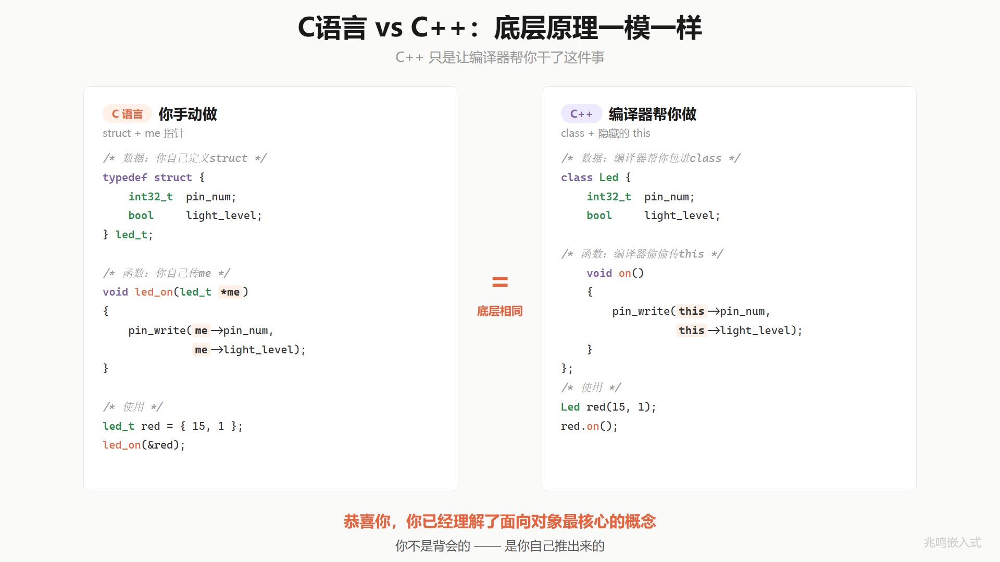
90% 的中国嵌入式工程师用 C 写了 10 年代码，从来不知道自己写的就是 OOP。他们以为 OOP 等于 C++、Java、Python。他们以为封装是高级特性。
事实是：你只要写过 int sum(int *arr, int len)，你就在做封装：你把“一组整数“打包成 int *arr + int len，函数通过指针操作哪一组。
后面 18 章 OOP 主体 + 工业实战 2 章要做的，就是把这件你已经在做的事情，做到工业级。
1.7 视频里没讲透的几个细节
视频 3 分 40 秒讲不完，书里补 6 个工程上你应该知道的点。这一节是“不实操也能完全理解“的核心。
1.7.1 为什么 me 是指针不是值传递
技术上你可以写 int led_on(struct led me) 用值传递。但有两个问题。
第一，值传递会复制整个 struct。struct led 现在小（3 字节左右），将来加上回调函数、ops 表、状态机，100 字节起跳。每次调用都拷贝一份，性能炸了。
第二，值传递改不了原对象。函数内修改 me.is_on = true，外面的 red_led.is_on 还是 false。Bug 找一周。
所以 C 的 me、C++ 的 this、Rust 的 &self 全都是指针/引用，不是值。这是工程上的硬约束，不是风格选择。
1.7.2 为什么第一个参数检查 NULL
每个函数开头都有 if (!me) return -1;。原因是 C 不像 Java 会自动抛 NullPointerException，对 NULL 指针解引用会做什么完全取决于平台。
在 STM32 这种 ARM Cortex-M 上，地址 0 通常是 Flash 起点（向量表），读不会崩。但 Flash 不允许直接写一个字节，me->pin = 13 相当于在地址 0 + offsetof(struct led, pin) 写一个字节，会立即触发总线异常进 HardFault，进入异常处理函数死循环（除非专门配过 MPU 让地址 0 可写）。
在 Linux 用户态上，地址 0 一般是无效页，进程立即收到 SIGSEGV，core dump。
无论哪种情况，都不是你想要的。所以工业代码里所有公开 API 的指针参数都必须做 NULL 检查。这是嵌入式 C 编码规范的硬规则。仓库 coding-standards/ 目录里有一份独立的 7 章 PDF（架构设计 / 设计模式 / Clean Code / 代码风格 / 内存安全 / 硬件交互 / 安全检查清单），第 5 章《内存安全》专门讲指针参数检查纪律。视频里为节奏没强调，书里应该知道：这一行是工程纪律的最小单位。
1.7.3 为什么用 struct led 不用 typedef
你可能见过这种写法：
typedef struct {
uint8_t pin;
bool is_on;
} Led_t;
int led_on(Led_t *me);
书里不这样写。Linus 在 Linux 内核编码风格文档里专门讲过 typedef struct 是反模式，原文大意：
typedef 是用来藏类型的。如果你藏了“这是一个结构体“这件事，读代码的人就不知道能不能在它上面用
&、->、.，也不知道它能不能直接传给sizeof。
Led_t 这个名字告诉你“这是个 LED 类型“，但不告诉你“它是结构体“。struct led 这个名字两件事都告诉你了。Linux 内核 4000 万行 C 代码绝大多数 struct 都不 typedef，包括 struct file、struct device、struct gpio_chip。读这本书你以后看内核源码不会觉得陌生。
唯一例外：函数指针类型适合 typedef（不然 int (*)(struct led *) 写起来太丑），第 9 章 ops 表会用到。
1.7.4 me->pin 这一句汇编层面发生了什么
你写的 C 代码是这样：
me->is_on = true;
platform_gpio_write(me->pin, true);
编译器看到 me->pin 会做两件事：
第一，它知道 me 是 struct led *。
第二，它查 struct led 的定义，找到 pin 字段在结构体里的偏移：pin 是第一个字段，偏移 0；brightness 偏移 1；is_on 偏移 2。
编译出 ARM Cortex-M 汇编大致是这样（简化版）：
LDRB r0, [r4, #0] ; r4 = me, 取偏移 0 的字节, r0 = pin
LDRB r1, [r4, #2] ; 取偏移 2 的字节, r1 = is_on
LDRB 是 “Load Register Byte”，一条指令完成一次内存读。整个 me->pin 在汇编层面就是一次寄存器加常数偏移、然后 load。代价 1 个周期左右。
这就是为什么 OOP 在 C 里可以做到“零开销“。me->pin 不比 red_pin 这种全局变量贵。Bjarne Stroustrup（C++ 之父）有句名言：“不用的特性零成本，用了的特性手写也不会更快。” struct + me 的范式就是这句话最干净的体现。
1.7.5 struct led 的内存布局
书里的 struct led 是这样：
struct led {
uint8_t pin; /* 1 byte */
uint8_t brightness; /* 1 byte */
bool is_on; /* 1 byte */
};
三个字节加起来 3 个字节。sizeof(struct led) 也是 3 字节，因为 uint8_t 和 bool 的对齐都是 1，编译器不需要加 padding。
但如果你给 struct 加一个 uint32_t 字段，故事就变了：
struct led_v2 {
uint8_t pin; /* offset 0, 1 byte */
/* 3 bytes padding here */
uint32_t blink_period; /* offset 4, 4 bytes */
bool is_on; /* offset 8, 1 byte */
/* 3 bytes padding here */
}; /* sizeof = 12, not 6 */
uint32_t 要求 4 字节对齐，所以编译器在 pin 后面塞 3 字节 padding 让 blink_period 落在偏移 4。同样，整个结构体大小要是最大对齐数（4）的倍数，所以末尾再塞 3 字节。
在内存紧张的 MCU 上（比如 RAM 只有 64KB），struct 字段顺序会影响实际占用。把大字段放前面、小字段放后面，padding 最少。
struct led_v2_compact {
uint32_t blink_period; /* offset 0, 4 bytes */
uint8_t pin; /* offset 4, 1 byte */
bool is_on; /* offset 5, 1 byte */
/* 2 bytes padding */
}; /* sizeof = 8 */
这一点你现在不用记，知道 padding 这件事存在就行。第 4 章讲数据归位时会回到这个话题。
1.7.6 platform_gpio_write 调到底，最终是写哪个寄存器
platform_gpio_write(13, true) 在 PC 模拟版里就是 printf 打一行。在 STM32 上是另一回事。
STM32 每个 GPIO 端口有一个 BSRR（Bit Set / Reset Register）。这是一个 32 位寄存器，地址是固定的（GPIOA 的 BSRR 地址在 STM32H7 上是 0x58020018）。寄存器格式：
- 低 16 位：写 1 把对应引脚拉高
- 高 16 位：写 1 把对应引脚拉低
- 写 0 无影响
所以 “把 PA13 拉高” 调到底就是：
*(volatile uint32_t *)0x58020018 = (1U << 13);
一次 32 位 store，把 GPIOA 的 PA13 拉高。BSRR 设计成“写 1 才生效，写 0 无影响“是为了让多任务、多中断同时操作不同引脚时不打架（atomic）。中断半路改一个引脚，主循环改另一个引脚，互不影响。
volatile 关键字是必须的。它告诉编译器：这个地址的内容随时会变（硬件改的），不要缓存到寄存器里。否则编译器优化后可能“我刚才不是写过 0x58020018 了吗，再读还是同一个值，不用真的 load“，结果你以为写了，实际没写。
这个领域叫 MMIO（Memory-Mapped I/O）：把硬件寄存器映射到 CPU 的地址空间，用普通的内存读写指令操作硬件。第 5 章讲 HAL 映射时会展开。
1.8 你现在的 LED 在 STM32 上长什么样
PC 模拟版是 printf 假装操作 GPIO。STM32 真实硬件上长这样（节选自 oop-in-c/code/01-three-leds/stm32-snippet/led_stm32.c）：
#include "led.h"
#include "stm32f4xx_hal.h"
void platform_gpio_init(uint8_t pin, uint8_t mode)
{
GPIO_InitTypeDef cfg = {0};
__HAL_RCC_GPIOA_CLK_ENABLE();
cfg.Pin = (uint16_t)(1U << pin);
cfg.Mode = (mode == GPIO_MODE_OUTPUT) ?
GPIO_MODE_OUTPUT_PP : GPIO_MODE_INPUT;
cfg.Pull = GPIO_NOPULL;
cfg.Speed = GPIO_SPEED_FREQ_LOW;
HAL_GPIO_Init(GPIOA, &cfg);
}
void platform_gpio_write(uint8_t pin, bool value)
{
HAL_GPIO_WritePin(GPIOA, (uint16_t)(1U << pin),
value ? GPIO_PIN_SET : GPIO_PIN_RESET);
}
注意一件事：led.h、led.c、main.c 一字不改。
变化的只有 platform_gpio_* 这一层胶水。这就是平台抽象层最直接的威力。
HAL_GPIO_WritePin 调到底就是 1.7.6 里讲的写 BSRR 寄存器。如果你打开 ST 的 HAL 源码看 stm32h7xx_hal_gpio.c，会看到这一行：
GPIOx->BSRR = (uint32_t)GPIO_Pin; /* SET */
GPIOx->BSRR = (uint32_t)GPIO_Pin << 16; /* RESET */
ST 自己的 HAL 也是封装：把“GPIO 端口“打包成 GPIO_TypeDef（一个 struct，里面是各个寄存器），通过 GPIOx 这个指针参数告诉函数操作哪个端口。GPIOx 就是 me，换了个名字。
关于这里的 platform 层写法：本节用的是“函数式包装“，直接 export 几个独立函数 platform_gpio_init / platform_gpio_write / ...。这是 ch01 阶段的教学简化形态，让你在还没接触虚函数表概念前先看到“换平台只改 platform 这一层“的好处。
真正工业级的 platform 抽象层用的是虚函数表（ops 表）：把所有 platform 操作打包进一个 struct，应用层通过指针访问，可以 runtime 切换平台。1.10 节贴的工业代码 led_base + led_ops 就是这种形态。
第 11 章一步步推出 vptr 之后，会把 platform 层从函数式重构成 ops 表式，和工业代码对齐。
1.9 你现在的 LED 在 Linux 用户态长什么样
嵌入式 Linux 端长这样（节选自 oop-in-c/code/01-three-leds/linux-snippet/led_linux.c）：
#include "led.h"
#include <fcntl.h>
#include <unistd.h>
void platform_gpio_init(uint8_t pin, uint8_t mode)
{
int fd = open("/sys/class/gpio/export", O_WRONLY);
if (fd >= 0) {
dprintf(fd, "%u", (unsigned)pin);
close(fd);
}
char path[64];
snprintf(path, sizeof(path),
"/sys/class/gpio/gpio%u/direction", (unsigned)pin);
fd = open(path, O_WRONLY);
if (fd >= 0) {
const char *dir = (mode == GPIO_MODE_OUTPUT) ? "out" : "in";
write(fd, dir, strlen(dir));
close(fd);
}
}
void platform_gpio_write(uint8_t pin, bool value)
{
char path[64];
snprintf(path, sizeof(path),
"/sys/class/gpio/gpio%u/value", (unsigned)pin);
int fd = open(path, O_WRONLY);
if (fd >= 0) {
write(fd, value ? "1" : "0", 1);
close(fd);
}
}
Linux 把每个 GPIO 暴露成一个文件 /sys/class/gpio/gpio13/value。写 '1' 拉高，写 '0' 拉低。这种“把硬件当文件“的设计叫 sysfs，是 Linux 内核统一暴露驱动状态的标准接口（更现代的方案叫 libgpiod，附录 C 会展开）。
注意：led.h、led.c、main.c 还是一字不改。这次变化的胶水是把 GPIO 操作转成 open / write / close。
如果你是嵌入式 Linux 工程师，看到这个会发现：你已经在写这个抽象了。所有 Linux 驱动的用户态接口都是这个套路，从最基础的 GPIO，到复杂的网卡驱动。第 16 章会讲 Linux 内核态怎么把 sysfs 文件接到底层 GPIO controller。
同 1.8 节，这里 Linux 端的 platform 层也是函数式包装的教学简化版。真正工业级的 platform 抽象用 ops 表（虚函数表），等到第 11 章演化出 vptr 之后会把它改成和 1.10 节工业代码一致的形态。
1.10 工业代码里的 led 长什么样
这一节是工业终态的早期一瞥，给你一张“未来三个月你会写出什么样的代码“的全景图。下面要出现的概念——ops 表、虚函数表指针、不透明指针、前向声明、基类层 dispatch——每一个都是后面 ch09 / ch10 / ch11 / ch13 才会系统展开的。现在不用看懂任何细节，只要扫一眼“代码最终长这样、应用层调用看不到 ops、换硬件不改应用层“就够了。看完本节回到 § 1.1 继续从最朴素的状态走起，等读完 ch13 再回来重读这一节，那时候每一行都会自动通透。
我做的工业控制板项目里，LED 这一块分三个文件：
/* drivers/led/led.h · 公开头文件，应用层 #include 这个 */
struct led_base; /* 前向声明，1.10.1 节解释 */
/* 应用层用的 API */
int led_on(struct led_base *led);
int led_off(struct led_base *led);
int led_toggle(struct led_base *led);
/* drivers/led/led_base.c · 基类实现，所有 LED 子类共用 */
struct led_ops {
int (*on)(struct led_base *me);
int (*off)(struct led_base *me);
int (*toggle)(struct led_base *me);
};
struct led_base {
const struct led_ops *ops; /* 虚函数表指针 */
const char *name; /* 给日志打印用，例如 "red" / "green" */
bool is_on; /* 当前开关状态 */
};
/* 注：base 里没有 pin / pwm_chan / i2c_addr 这种硬件特定字段。
* pin 在 led_gpio 子类里、pwm_chan 在 led_pwm 子类里、i2c_addr 在 led_i2c 子类里。
* 不同硬件方式的 LED 共享 base 接口，硬件细节关在各自子类。
* 第 6 章讲为什么这样分，第 12 章讲子类怎么向上转型回 base。
*/
/* led_on 是封装层：应用层调它，内部 dispatch 到具体子类的 on */
int led_on(struct led_base *led)
{
if (!led || !led->ops || !led->ops->on)
return -1;
led->is_on = true;
return led->ops->on(led);
}
int led_off(struct led_base *led)
{
if (!led || !led->ops || !led->ops->off)
return -1;
led->is_on = false;
return led->ops->off(led);
}
int led_toggle(struct led_base *led)
{
if (!led || !led->ops || !led->ops->toggle)
return -1;
led->is_on = !led->is_on;
return led->ops->toggle(led);
}
/* environment_cfg/environment_export.h · 公开句柄，应用层用它 */
extern struct led_base *green_led;
extern struct led_base *red_led;
应用层调用：
led_on(green_led);
led_off(red_led);
led_toggle(green_led);
应用层看到的就是普通函数调用 led_on(green_led)。它根本不知道下面有 ops 表、有 dispatch、有具体子类（GPIO LED / PWM LED / I²C LED 等）。这种“应用层只见接口、看不见实现“的写法叫封装层，工业代码里所有驱动都做这件事。
1.10.1 前向声明：让头文件只暴露指针，不暴露字段
led.h 第二行 struct led_base; 这一句叫前向声明 (forward declaration)。它告诉编译器：“有这么个类型 struct led_base，但字段先不展开。”
接下来 led.h 里所有用到 struct led_base 的地方都是指针：int led_on(struct led_base *led);。指针的 sizeof 在所有平台都是固定的（32 位机器 4 字节，64 位机器 8 字节），编译器不需要知道它指向的类型有什么字段就能算出指针变量占多少字节。所以前向声明 + 指针，是完全合法的 C 代码，gcc / clang / armcc 都接受。
字段定义放在 led_base.c 里。应用层 #include "led.h" 后，编译器只看到“struct led_base 是某个不完整类型“，永远查不到 ops / name / is_on 字段的位置。这意味着应用层就算想写 green_led->is_on = true 也写不出来：编译器直接报错 dereferencing pointer to incomplete type。状态变更必须走 led_on(green_led) 这种封装函数，没法绕过去。
这种“.h 只暴露指针 + .c 藏字段定义“的写法叫不完整类型 (incomplete type) + 不透明指针 (opaque pointer)。Linux 内核大量用这一招：你能看到 struct file *，但 struct file 的字段定义藏在 fs/internal.h 里，普通驱动看不到；struct device 同理。Zephyr 的设备模型一样。这是工业级 C 库的标准做法，把“接口稳定“和“实现自由“严格分开：.c 里加字段、改字段顺序、重排布局，.h 一行不动，应用层不用重新编译。
代价是应用层不能定义 struct led_base 实例（编译器不知道 sizeof），所以工业代码里实例都在驱动 .c 里 static 分配，应用层只拿到 extern struct led_base *green_led; 这种句柄。
1.10.2 ops 表 + 封装层：让 led_on 一行胶水管所有 LED 子类
你注意到三件事：
struct led_base多了一个字段ops，是一张函数指针表（虚函数表）led_on(led)不是直接操作 GPIO，它内部走led->ops->on(led)这一行 dispatch- 不同子类的 LED（GPIO 拉电平、PWM 调亮度、I²C 发命令）都填一份自己的 ops 表，应用层调
led_on()一行就走到对的实现
第 11 章会从函数指针一步步推导出这套机制，把 led_on() 内部那行 dispatch 讲透：编译器把它编译成什么 ARM 汇编、ops 表存在内存哪、为什么 ops 必须是 struct led_base 第一个字段。
现在你不用看懂细节，只要看出：工业代码里的 led，骨架还是 struct + me，外面套了一层 ops 表（让应用层无视具体硬件）和一层封装函数（让应用层不直接碰函数指针）。这两层都是工程纪律，不是炫技。
1.10.3 一眼看懂工业代码的眼光
这就是这本书要让你形成的眼光。拿到一份陌生的工业代码：
- 看到
struct xxx_base;前向声明，知道这是不完整类型 + 不透明指针 - 看到
xxx_base { const struct xxx_ops *ops; ... };，知道这是 ops 表 / 虚函数表 - 看到
xxx_on(handle)内部走handle->ops->on(handle)，知道这是 dispatch - 看到
extern xxx_base *yyy;，知道是别人创建好的句柄
整套就是 struct + me 的工业放大版。你这一章学的核心，加上第 11 章的 ops 表演化，等于工业项目里所有驱动的骨架。
反过来看，1.8 / 1.9 节给的 STM32 / Linux platform 层用的是函数式（几个 platform_gpio_* 函数独立 export），是教学简化版。工业代码的 platform 层和这里 led_base 一样，都是 ops 表（虚函数表）形式。两者都对，只是抽象程度不同。书里第 11 章之后会把 platform 层从函数式升级成 ops 表式，完成这个对齐。
1.11 跑一遍
cd oop-in-c/code/01-three-leds/pc
make
./demo
输出节选：
========================================
Three LEDs, one set of code.
me pointer decides who to operate.
========================================
--- Init ---
[GPIO] Pin13 init as OUTPUT
[GPIO] Pin13 -> LOW (OFF)
[LED] Pin13 initialized
[GPIO] Pin14 init as OUTPUT
[GPIO] Pin14 -> LOW (OFF)
[LED] Pin14 initialized
...
--- Turn on RED ---
[GPIO] Pin13 -> HIGH (ON)
[LED] Pin13 ON
--- Turn on GREEN ---
[GPIO] Pin14 -> HIGH (ON)
[LED] Pin14 ON
--- Turn on BLUE ---
[GPIO] Pin15 -> HIGH (ON)
[LED] Pin15 ON
led_on 这个函数在 led.c 里只写了一次。但屏幕上 Pin13、Pin14、Pin15 都被点亮了。因为传入的 me 指针不同。
完整输出和源码见 oop-in-c/code/01-three-leds/。
1.12 视频回放
想听口播版的可以看 B 站这一期视频：
视频和书互相补强。视频更直观看口播节奏和挂号单类比的现场感。书里补了视频没讲透的 6 个细节（1.7 节）和 STM32 / Linux / 工业代码的对照（1.8 到 1.10 节）。
下一章
挂号单是敞开的。任何人都能直接 red_led.pin = 999 把它弄坏。你同事顺手改了一个值，所有 LED 全乱了。
怎么把单子锁起来？下一章解决。
第 2 章 · 同事改了一行 LED 全乱了
配套代码：oop-in-c/code/02-static-hiding/
2.1 一个真实场景
第 1 章你给三颗 LED 发了挂号单，代码只写一份，问题解决了。
提交、合并、上线。
一周后同事来找你：你 LED 模块好像有 bug，红灯不亮了。
你去看代码，main.c 里没动过。再翻 git log，发现同事在另一个文件里加了一行：
extern struct led red_led;
/* 我做了点优化，让 pin 直接 = 999 */
red_led.pin = 999;
他不是恶意的。他可能在做硬件适配实验，可能手抖打错变量名，可能临时调试忘了撤回。但效果是确定的：你的红灯被驱动到一个不存在的引脚，从此不亮。
你打开微信想质问他，想了想，默默把聊天框关了。你心想：我的代码明明没问题啊。
对，你的代码确实没问题。问题是别人能碰你的代码。你的 struct 是敞开的，任何人从任何地方都能 red_led.pin = ... 把它改坏。
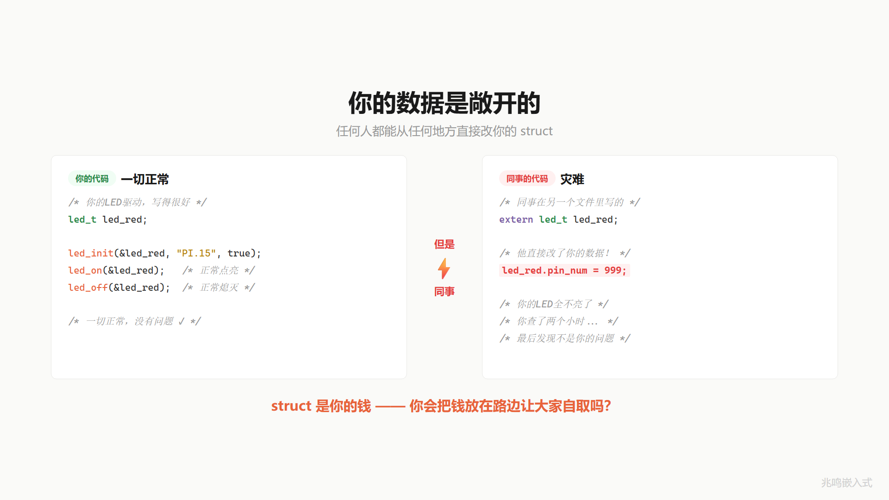
银行不会把客户的钱放在路边让大家自取。柜台是有的，密码是有的，流程是有的。你的 struct 就是钱，函数就是柜台，现在缺一把锁。
2.2 第一把锁 · static
C 语言给你一把锁，叫 static。
去过饭店。前台是给客人用的（点菜、付钱、吃饭），后厨是给厨师用的（备料、炒菜）。客人进后厨只会添乱。所以后厨的门是锁的。
代码也一样。有些函数是给外面用的（开灯、关灯、调亮度），这些是前台。有些函数是你内部用的（更新硬件状态、检查参数合不合法），这些是后厨。
怎么把后厨锁起来？在函数前面加一个词 static。
加了 static，这个函数就只在它所在的 .c 文件里能用。别的 .c 文件想调它，链接器报 undefined reference。门锁上了，找都找不到。
变量也一样。文件作用域的变量加 static，就只在本文件可见。
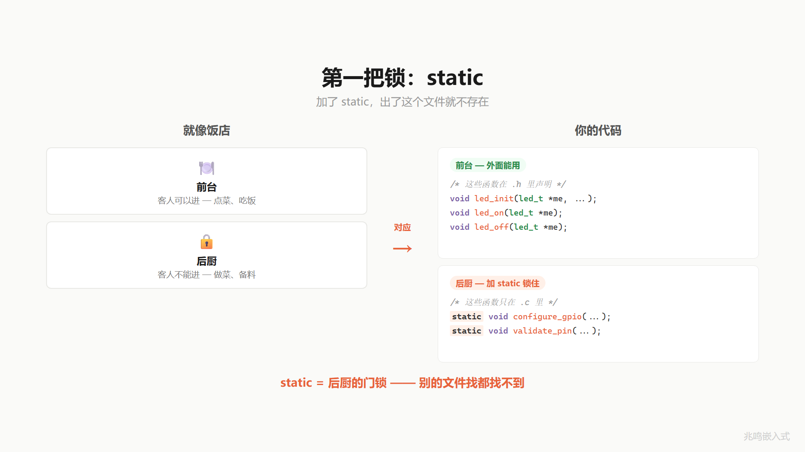
举个例子。led.c 里有两个内部工具函数，一个统一更新硬件状态，一个检查亮度合不合法：
static void update_hardware(struct led *me)
{
platform_gpio_write(me->pin, me->is_on);
}
static bool brightness_valid(uint8_t brightness)
{
return brightness <= 100;
}
前面加 static，这两个函数对 main.c 不存在。main.c 里写 update_hardware(red); 链接器直接报错。后厨锁上了。
2.3 第二把锁 · 头文件 = 菜单
锁后厨只解决一半问题。static 锁住的是函数，但你的 struct 字段 pin / brightness / is_on 还是敞着。同事 red_led.pin = 999 这一行还是能改坏你的数据。
得给客人发一份菜单。菜单上写什么？菜名和价格（也就是函数声明）。菜单上不写什么？配方（也就是字段定义和函数实现）。
你的 .h 文件就是菜单。.c 文件就是配方。
第 1 章 led.h 里写了完整的 struct 定义：
/* ch01 led.h */
struct led {
uint8_t pin;
uint8_t brightness;
bool is_on;
};
#include "led.h" 的任何文件都看得到字段名、字段顺序、字段类型，自然也都能 me->pin = 999 直接改。
ch02 的修复很小：把字段定义从 led.h 搬到 led.c，led.h 里只留一行：
/* ch02 led.h */
struct led;
这行叫前向声明（forward declaration）。它告诉编译器：有这么个类型，但具体长什么样我不告诉你。
字段名一字不动（pin / brightness / is_on），改的只是 visibility。
外部代码：
#include "led.h" /* 只看到 struct led; */
struct led *red = led_create(13);
red->pin = 999; /* 编译报错: invalid use of undefined type */
gcc 在 red->pin 这一行直接拒绝继续：它知道有个 struct led，但不知道里面有没有 pin。这种“看得到指针，看不到字段“的写法叫不透明指针（opaque pointer）。
字段定义只在 led.c 内部：
/* ch02 led.c */
struct led {
uint8_t pin;
uint8_t brightness;
bool is_on;
};
外部要操作 LED，只能走 led.h 暴露的函数：led_create / led_destroy / led_on / led_off / led_set_brightness / led_get_state。这些函数是菜单上写明的菜，外部能点。其他的，菜单上没有，碰不到。
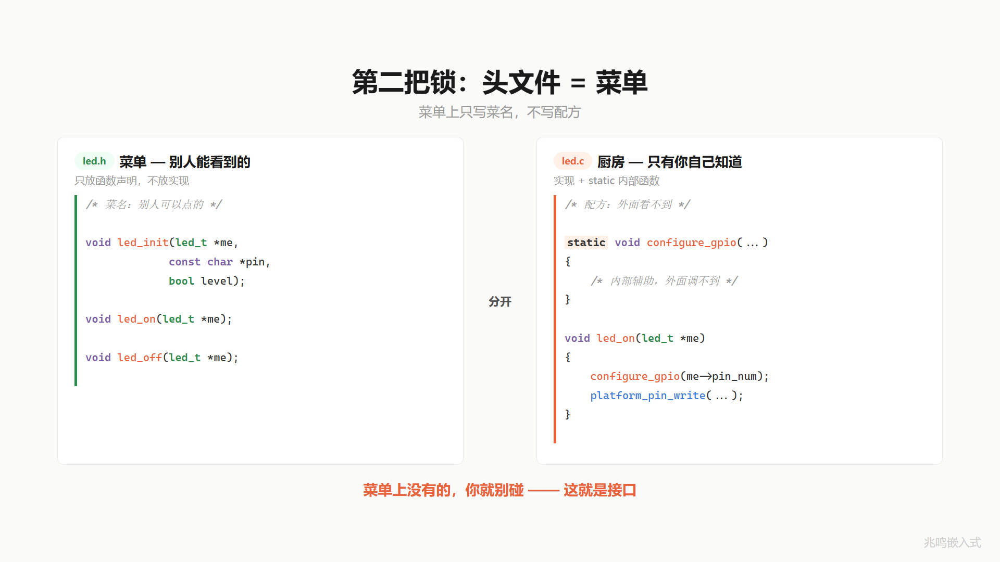
2.4 这个东西叫什么
你刚才跟我做的事，把不该让外面碰的东西藏起来，只通过接口和外界打交道，软件工程里有个名字。
它叫信息隐藏（information hiding）。
David Parnas 1972 年那篇 “On the Criteria To Be Used in Decomposing Systems into Modules” 第一次系统讲清楚这件事。中文叫信息隐藏，也常归到 encapsulation 这个大概念底下。
你不是从我这里背了一个定义，是从一个具体痛点（同事改一行你的 LED 全乱了）出发，自己推出了 static + 不透明指针这套解。这种被自己说服的理解，是背不出来的。
费曼讲过一句话：好的设计不靠人小心，靠机制上不让错误发生。飞机驾驶舱里关键开关都有保护盖，不是飞行员不靠谱，是一个手滑代价太大。你的代码也一样，锁起来不是不信任同事，是不让任何人手滑。
2.5 C 对 C++
如果你写过 C++，你会写：
class Led {
public:
int on();
int off();
int set_brightness(uint8_t b);
private:
uint8_t pin_;
uint8_t brightness_;
bool is_on_;
void update_hardware();
};
而 C 里写的是：
/* led.h */
struct led;
int led_on(struct led *me);
int led_off(struct led *me);
int led_set_brightness(struct led *me, uint8_t b);
/* led.c */
struct led {
uint8_t pin;
uint8_t brightness;
bool is_on;
};
static void update_hardware(struct led *me);
做的是一模一样的事。
C++ 的 private: 等同于 C 的“字段定义只放在 .c“加“工具函数加 static”。public: 等同于“声明放在 .h“。
底层机器码差不多。C++ 的 private 是编译期检查（编译器看到外部碰 pin_ 直接报错），C 的不透明指针也是编译期检查（编译器看到外部碰 me->pin 直接报错）。运行时一行 cost 都没多。
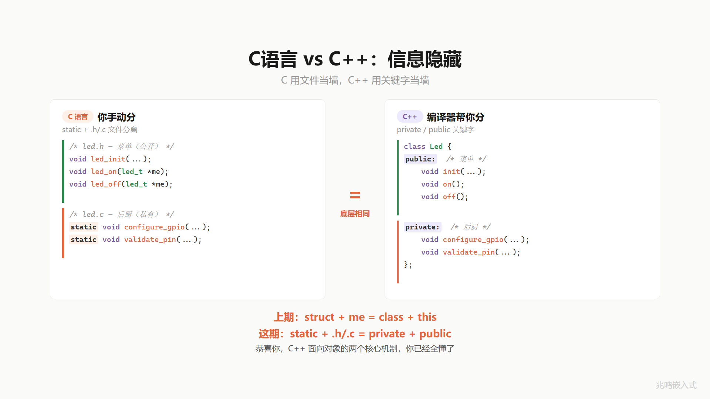
第 1 章的恒等是 struct + me = class + this。
这一章的恒等是 static + .h/.c 分离 = private + public。
两条加起来，C++ 面向对象的两个核心机制（封装和成员函数），你已经全懂了。而且不是背的，是自己用 C 推出来的。
2.6 视频里没讲透的几个细节
2.6.1 不透明指针 vs 暴露字段，反事实推演
技术上你有三种藏字段的强度。
第一种，完全不藏（ch01 的写法）：字段在 .h，外部 me->pin = 999 编译过、链接过、运行也“过“，bug 在生产环境出现。
第二种，约定藏（注释里写“请勿直接修改“）：字段还在 .h，外部能改，靠 review 拦住。review 漏一次就是 bug。
第三种，机制藏（ch02 的写法）：字段在 .c，前向声明在 .h，外部 me->pin = 999 编译就过不去。0 漏网概率。
哪种是工业代码里的主流？看场景：
- 跨二进制库边界用第三种。libc
FILE */ POSIXpthread_t/ Win32HANDLE/ RT-Threadrt_device_t/ Linux 内核struct kobject *这些都是。应用代码和库内部物理分离，中间只能传句柄 - 同一份工程一起编译的应用代码（你做的产品里大部分代码属于这种）几乎全用第二种：字段在
.h公开 +static工具函数 + 命名纪律。GitHub 上 nginx、Redis、LVGL 这一类主流 C 项目，struct 字段都在.h，靠纪律隔离。第 4 章数据归位会把这种工业常态形态展开
第三种的代价是字段隐藏后调用方不能 sizeof，所有对象生命周期得由库自己管（你需要 xxx_create / xxx_destroy 这一对接口）。这在跨二进制库场景值得，因为 ABI 兼容是硬需求。在自家应用代码里，字段 .h 公开 + 直接 struct led red; 用对象本身，工程上更顺手。
工业控制板项目里 eeprom_base_t 是中间形态：
/* eeprom_base.h */
struct eeprom_ops; /* 前向声明 ops 表 */
typedef struct {
struct eeprom_ops *ops; /* 这个字段对应用公开 */
} eeprom_base_t;
struct eeprom_ops 字段（一堆函数指针）私有，但外层 eeprom_base_t 公开能 sizeof。这叫“部分藏“，藏 ops 表的内部接口，不藏外层壳。本书第 9 章会演化到这个形态。
ch02 主体演示的是第三种（完整不透明指针），是为了把“信息隐藏“机制讲透。后面章节大多用第二种 + 直接持有对象的工业常态写法。
2.6.2 为什么 led.h 里 forward decl 要写 struct led;
你可能见过这种写法：
typedef struct led led_t;
效果几乎一样。但 Linux 内核明确反对 typedef struct，理由在第 1 章 1.7.3 节讲过：typedef 把“这是个结构体“这件事藏起来。读 led_t *me 你不知道它能不能 . 或 ->，读 struct led *me 你立刻知道。
本书统一不 typedef struct，包括前向声明。struct led; 这一行同时承担两件事：声明类型存在 + 不暴露字段。
2.6.3 led_create / led_destroy 用 malloc 的取舍
ch01 里 struct led red_led; 是栈上对象，外部能直接定义。ch02 字段藏起来后，外部 struct led red; 编译器立刻报错 storage size of 'red' isn't known。编译器不知道 struct 多大，自然不知道分多少栈。
只能让 led.c 内部分配。最直观的方式是 malloc，外部拿 struct led * 这个指针句柄回去。FILE * / pthread_t / HANDLE / SOCKET 都是这个模式。
malloc 在嵌入式里以前有“堆碎片、确定性、实时性“的争议。这是 1990 年代裸机 8051 / 小 RAM MCU 时代留下的 dogma，不是现代嵌入式现实。FreeRTOS heap_4 / heap_5、RT-Thread 的 mp 和 heap、量产级状态机框架的事件池，都是动态内存机制，工业控制和汽车电子项目里大量在用。MISRA C:2012 amendment 1、DO-178C 都已经允许有约束的动态内存。
真正的工业纪律不是“不用 malloc“，是生命周期管理：
- 配对销毁：每个 alloc 一定有对应的 free 路径
goto cleanup：异常退出分阶段释放（2.6.8 节展开）- 引用计数：共享所有权用
kref_get / kref_put（Linux 内核标准）
只有少数特殊场景才优先用静态预分配：8051 / M0 + 16 KB 这种小 RAM 场景，或者中断热路径每秒几百万次 alloc 的极端情况。这些情况下选 malloc 还是静态分配是工程决策，不是教条。第 4 章数据归位会展示同一组数据怎么按场景选静态实例 / malloc / 对象池。
2.6.4 命名规范决策
led_create / led_destroy 的命名是有考虑的。
不叫 led_new / led_delete：和 C++ 关键字撞，读代码容易误认为 C++。
不叫 led_alloc / led_free：alloc 暗示纯内存分配，create / destroy 暗示构造 / 析构语义。
不叫 led_open / led_close：open / close 是 POSIX 文件接口的语义，留给 sysfs 用。
工业代码里 led_base_t * 这种句柄常用 led_xxx_init(led_xxx_t *me, ...) 命名，因为对象是栈上分配（实例字段公开给本驱动模块），init 是“对已分配的对象初始化“，不涉及堆分配。等到第 4 章数据归位讲完，你能看出“什么时候该 create / destroy、什么时候该 init / deinit“的判断标准。
2.6.5 链接器层面，static 和不加 static 的差别
static 改变的不是编译期可见性，是链接期符号表。
不加 static 的函数（external linkage）：编译器把函数名写进 .o 文件的全局符号表，链接器在合并多个 .o 时能看到。不同 .o 里的同名函数，链接器报 multiple definition。
加 static 的函数（internal linkage）：编译器要么完全不写符号表（被内联或调用图剪枝），要么写成本地符号（链接器跨 .o 看不到）。
$ nm led.o
0000000000000000 T led_create
0000000000000098 T led_destroy
0000000000000114 T led_on
0000000000000180 T led_off
00000000000001a0 t update_hardware
00000000000001f0 t brightness_valid
大写 T 是 external，小写 t 是 file-local。这就是为什么外部 update_hardware(red); 链接报 undefined reference：链接器扫所有 .o 的全局符号表都找不到 update_hardware。
2.6.6 不透明指针的运行时代价
零。
red->is_on 在 led.c 内部和 ch01 的 red->is_on 编译出同样的汇编：
LDRB r1, [r0, #2] ; 偏移 2 是 is_on 字段
led_on(red) 在 main.c 里编译出 BL led_on（branch with link，跳转并保存返回地址）。函数调用本身有几个周期开销，但这和 ch01 是一样的（ch01 也是函数调用）。
外部代码“看不见字段“是编译期机制，链接出二进制后字段还在那里、布局不变、偏移不变。Bjarne Stroustrup 那句“不用的特性零成本“在 C 上同样成立。
2.6.7 Linux 内核 struct file 也是一个不透明指针
把视角拉到工业级。Linux 内核的 struct file（每打开一个文件就有一份）就是不透明指针的活样本。
include/linux/fs.h 里只声明 struct file，里面的字段（f_pos、f_flags、f_inode 等几十个）只对 fs 子系统内部公开。其他子系统（drivers / net / sched）拿到的是 struct file *，能传它、能挂回调，但不能 f->f_pos = 0 直接改。
为什么内核要这么设计？
因为 struct file 的字段在不同内核版本之间会变（4.x 加了几个字段，5.x 把另几个字段挪进 struct file_ra_state）。如果 driver 直接读字段，每升一次内核所有 driver 都要改。藏起来后 driver 走 f->f_op->read(f, ...) 这种接口调用，字段怎么变都不影响。
这本书第 16 章会展开 struct file 和 struct file_operations 的工业级用法。这一章你只需要看到：你刚才在 struct led 上做的事，Linux 内核 4000 万行代码也在做，机制完全一样。
2.6.8 句柄生命周期 · C 语言的 RAII 类比
C++ 有 RAII（Resource Acquisition Is Initialization）：对象进入作用域自动构造、离开作用域自动析构。资源不会泄漏。
C 没有 RAII。led_create 拿到 struct led * 之后，谁负责 led_destroy？只能靠工程纪律。
工业代码里管这种“谁创建谁销毁“的纪律，最常见有三套写法。
配对释放：哪个函数 create，同一个调用者 destroy。简单直观，但函数中间 return 多了容易漏。这是 C 标准库 fopen / fclose、malloc / free 的写法。
goto cleanup：函数中间任何一步失败，goto out 集中走清理路径。Linux 内核风格，几十年实践证明能压住所有 leak。形态是：
struct led *led_create_two(void)
{
struct led *r = NULL, *g = NULL;
r = led_create(13);
if (!r)
goto fail;
g = led_create(14);
if (!g)
goto fail_g;
return r; /* 这里要把两个都返回，省略 */
fail_g:
led_destroy(r);
fail:
return NULL;
}
每一个 goto 都把已经分配的资源对应释放。从前往后看是分配链，从后往前看是清理链，对称。
引用计数：对象自己带一个 refcount，每个使用者 get 一次 +1，用完 put 一次 -1，归零自动 destroy。Linux 内核 kref_init / kref_get / kref_put 是标准模板，几乎所有内核对象（struct device、struct file、struct kobject）都用这套。本章先不展开，第 17 章讲完 initcall 后会回到这条线。
ch02 的 led_create / led_destroy 是配对释放风格。led.c 内部用 malloc，调用者拿 struct led * 句柄，结束时 led_destroy 负责 free。这是初学最干净的形态。
2.6.9 堆分配 vs 栈分配 · 按场景选
ch01 写 struct led red_led;（栈分配），ch02 改成 struct led *red = led_create(13);（堆分配）。两种风格各有各的代价。
| 维度 | 栈 / 静态实例 (struct led red) | 堆 (led_create) |
|---|---|---|
| 字段是否可见 | 必须可见（编译器要算 size） | 可隐藏（只暴露指针） |
| 分配开销 | 几乎零（移栈指针） | malloc 内部要找空闲块 |
| 释放开销 | 自动（出作用域） | 手动 free，漏一次就 leak |
| 实时性 | 确定（O(1)） | RTOS heap_4/5 有保证；newlib dlmalloc 不保证 |
| 内存占用 | 函数调用结束就回收 / 整个程序生命周期占着 | 在 free 前一直占着 |
| 适合场景 | 数量固定的全局对象（LED / 串口 / 传感器） | 生命周期不固定的对象（动态接收的数据包、临时缓冲区、按需创建的会话） |
工业 MCU 代码里两种都常用，按对象生命周期选。同一份工程里全局少量对象通常 static struct xxx instance; 或顶层模块持有，生命周期不固定的对象用 RTOS 提供的 heap（FreeRTOS heap_4/5、RT-Thread rt_malloc）。两种都是工业级常态。
ch02 里 led_create + malloc 是为了把“信息隐藏 + 句柄式 API“这件事讲清楚。隐式句柄风格存在于 FILE * / pthread_t / rt_device_t 这一类跨库边界场景。后面 ch04 数据归位会展开“实例字段公开 + 直接 struct led red; 静态实例“这种自家应用代码常态形态，跟 ch02 这种隐式句柄形态对照。两种是工程决策，不是非此即彼。
2.7 你现在的 LED 在 STM32 上长什么样
PC 模拟版是 printf 假装操作 GPIO。STM32 真实硬件上长这样（节选自 oop-in-c/code/02-static-hiding/stm32-snippet/led_stm32.c）：
#include "platform.h"
#include "stm32f4xx_hal.h"
void platform_gpio_init(uint8_t pin, uint8_t mode)
{
GPIO_InitTypeDef cfg = {0};
__HAL_RCC_GPIOA_CLK_ENABLE();
cfg.Pin = (uint16_t)(1U << pin);
cfg.Mode = (mode == GPIO_MODE_OUTPUT) ?
GPIO_MODE_OUTPUT_PP : GPIO_MODE_INPUT;
cfg.Pull = GPIO_NOPULL;
cfg.Speed = GPIO_SPEED_FREQ_LOW;
HAL_GPIO_Init(GPIOA, &cfg);
}
void platform_gpio_write(uint8_t pin, bool value)
{
HAL_GPIO_WritePin(GPIOA, (uint16_t)(1U << pin),
value ? GPIO_PIN_SET : GPIO_PIN_RESET);
}
led.h / led.c / main.c 一字不改。字段还藏在 led.c 里，main.c 还是看不到 pin / brightness / is_on。变化的只是这层 platform 胶水。
不透明指针在 ARM Cortex-M 上和 x86 上行为完全一致。它是编译期机制，编译器拒绝就拒绝，烧不到芯片上。
这一节用的是函数式包装的 platform 抽象，是教学简化版。真正工业级用虚函数表（ops 表），允许 runtime 切换平台。第 11 章演化出 vptr 之后，会把 platform 层重构成 ops 表式，和 2.9 节工业代码对齐。
2.8 你现在的 LED 在 Linux 用户态长什么样
嵌入式 Linux 端长这样（节选自 oop-in-c/code/02-static-hiding/linux-snippet/led_linux.c）：
void platform_gpio_init(uint8_t pin, uint8_t mode)
{
int fd = open("/sys/class/gpio/export", O_WRONLY);
if (fd >= 0) {
dprintf(fd, "%u", (unsigned)pin);
close(fd);
}
char path[64];
snprintf(path, sizeof(path),
"/sys/class/gpio/gpio%u/direction", (unsigned)pin);
fd = open(path, O_WRONLY);
if (fd >= 0) {
const char *dir = (mode == GPIO_MODE_OUTPUT) ? "out" : "in";
write(fd, dir, strlen(dir));
close(fd);
}
}
void platform_gpio_write(uint8_t pin, bool value)
{
char path[64];
snprintf(path, sizeof(path),
"/sys/class/gpio/gpio%u/value", (unsigned)pin);
int fd = open(path, O_WRONLY);
if (fd >= 0) {
write(fd, value ? "1" : "0", 1);
close(fd);
}
}
Linux 把每个 GPIO 暴露成文件 /sys/class/gpio/gpio13/value。写 '1' 拉高，写 '0' 拉低。这种“把硬件当文件“的设计叫 sysfs。
led.h / led.c / main.c 还是一字不改。
这一节同样是函数式包装的教学简化形态，工业级用 ops 表。第 11 章之后会演化对齐。
2.9 工业代码里的 led 长什么样
我做的工业控制板项目里，LED 这一块的 .h 是这样：
/* led_base.h - 应用层只看这一份 */
typedef struct led_base led_base_t; /* 不透明前向声明 */
void led_on(led_base_t *me);
void led_off(led_base_t *me);
/* led_base.c - 字段定义和实现都关在这里 */
struct led_base {
const char *name;
uint8_t pin;
bool is_on;
/* 真实工程还有几个字段, 这里省略 */
};
void led_on(led_base_t *me)
{
/* ... 实际 GPIO 操作 ... */
}
应用调用：
extern led_base_t *green_led;
extern led_base_t *red_led;
led_on(green_led);
led_off(red_led);
这和你这一章学的不透明指针骨架一模一样：把“实现细节“塞进 .c，.h 只暴露指针类型 + 操作函数。
真实工业代码的
led_base还多一个ops字段（用来在 GPIO LED / PWM LED / I2C LED 之间运行时切换实现）。这一招叫虚函数表或者ops 表，是第 9 章到第 11 章的主题。这一章先把“信息隐藏“这一招学透就够，不用懂 ops 表。
到这里你应该能形成一个直觉：拿到一份陌生的工业代码，先看 .h 里暴露了什么。如果暴露的是完整的 struct 定义，是 ch01 阶段的代码，正在等一次 ch02 重构。如果只暴露前向声明 + 操作函数，是 ch02 标准的代码（具体到工业项目里，再往下挖通常就是 ops 表 + 子类继承，那是 ch06 到 ch11 的内容）。
2.10 跑一遍
cd oop-in-c/code/02-static-hiding/pc
make
./demo
输出节选：
========================================
Hide the fields. Talk through the API.
========================================
--- Create two LEDs ---
[GPIO] Pin13 init as OUTPUT
[GPIO] Pin13 -> LOW (OFF)
[LED] Pin13 initialized
[GPIO] Pin14 init as OUTPUT
[GPIO] Pin14 -> LOW (OFF)
[LED] Pin14 initialized
--- Turn both on ---
[GPIO] Pin13 -> HIGH (ON)
[LED] Pin13 ON
[GPIO] Pin14 -> HIGH (ON)
[LED] Pin14 ON
--- Read state through led_get_state ---
red: is_on=true brightness=0%
green: is_on=true brightness=0%
--- Out-of-range brightness rejected by API ---
[LED] Error: brightness 200 out of range (0~100)
led_set_brightness(red, 200) returned -2 (-2 = out of range)
--- Direct field access blocked at compile time ---
Try uncommenting `red->pin = 999;` in main.c
gcc will refuse to compile (struct is incomplete here).
试一下：把 main.c 里 /* red->pin = 999; */ 这一行的注释去掉，再 make：
main.c: In function 'main':
main.c:XX:XX: error: invalid use of undefined type 'struct led'
red->pin = 999;
^~
gcc 在不知道 struct 字段的情况下拒绝编译。同事这一行永远到不了你的运行时。
2.11 视频回放
想听口播版的可以看 B 站这一期视频：
视频里讲了银行类比、后厨类比、菜单类比的现场感，节奏更紧凑。书里补了视频没讲透的 6 个细节（2.6 节）和工业代码的对照（2.9 节）。
下一章
锁了字段，锁了后厨，暴露了菜单。但你的菜单上现在有 led_create / led_on / led_off / led_destroy / ... 七八个函数。
你同事接手代码，打开 led.h，第一个问题是：我先调哪个？
更现实的问题：项目要加一个电机模块，你新建 motor.c，写了 init / on / off。LED 模块也有 init / on / off。链接报错 multiple definition of 'init'。
下一章解决。
第 3 章 · 你用 C 手搓了一个 class
配套代码：oop-in-c/code/03-handwritten-class/
3.1 一个真实场景
第 2 章你把 LED 模块的字段藏起来了。同事改不动你的数据，你松了一口气。
下班前 PM 走过来：明天加一个电机控制模块。
简单。新建 motor.c，按惯例写三个函数：
int init(struct motor *me, uint8_t pin) { ... }
int on(struct motor *me) { ... }
int off(struct motor *me) { ... }
编译。报错：
ld: motor.o: in function `init':
multiple definition of `init'; led.o:led.c:42: first defined here
你的 LED 模块也有 init / on / off。两个 init、两个 on，链接器问你这俩到底谁是谁。
你的 init 是配 GPIO 的，他的 init 是配 PWM 的。但 C 的链接器不管你做什么，只看名字。名字一样，打架。
C 有一个底层规则：所有不加 static 的函数，名字必须全局唯一。这叫外部链接（external linkage），是 ANSI C 标准定的。一个函数加了 static 它就是文件私有（第 2 章 2.6.5 节讲过）。不加 static，它进全局符号表，全工程范围内不能重名。
项目只有一个模块的时候没问题。两个模块、三个、十个，名字迟早撞。
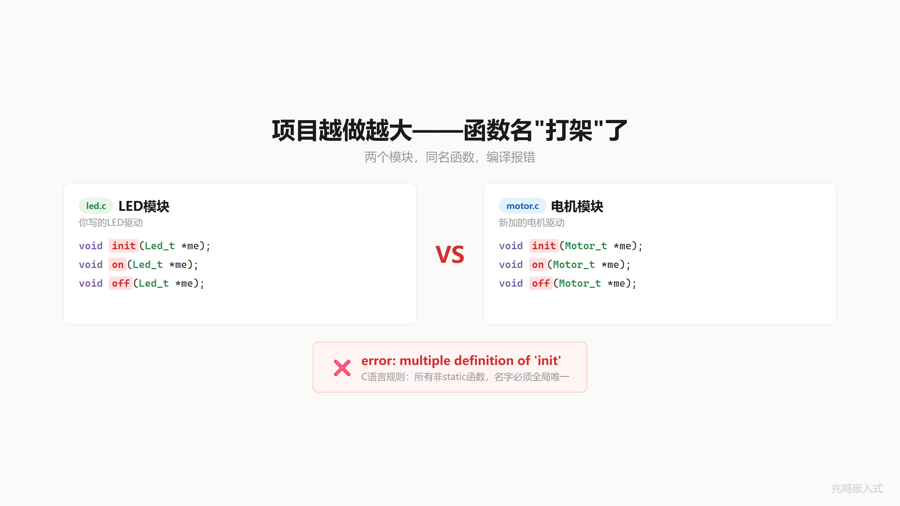
3.2 沙县小吃和兰州拉面
你去吃过沙县小吃。
菜单上写：沙县拌面、沙县蒸饺、沙县炖罐。
隔壁兰州拉面：兰州牛肉面、兰州凉皮。
每道菜前面都带品牌名，分得清谁是谁。
函数也一样。LED 的函数全部 led_ 开头：
int led_init(struct led *me, uint8_t pin);
int led_on(struct led *me);
int led_off(struct led *me);
电机的函数全部 motor_ 开头：
int motor_init(struct motor *me, uint8_t pin);
int motor_start(struct motor *me);
int motor_stop(struct motor *me);
清清楚楚，互不干扰。看到 led_on，就知道是 LED 模块的。前缀是品牌名。
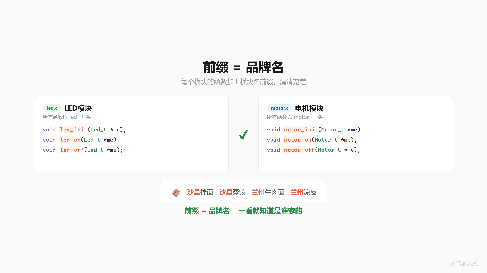
第 1 章和第 2 章其实已经在用 led_ 前缀，只是没明说“这是命名规范“。这一章把它确立为工程纪律。
3.3 三个月后你还知道哪个先调吗
前缀加好，编译过，项目正常运行。快进三个月。
你打开自己写的 led.h，上面六个函数：
led_init
led_deinit
led_on
led_off
led_set_brightness
led_get_state
先调哪个？
你想了想，直接调 led_on 试试。
灯不亮。没报错，就是不亮。
翻了十分钟代码才想起来：要先调 led_init。因为 init 里面做了引脚配置。不 init，struct 里的 pin 是栈上的随机值（可能是 42，可能是 65535），反正不是你要的。
三个月前写的代码，现在跟看别人写的一样。不对，看别人写的至少还能骂两句，自己写的只能骂自己。
3.4 名字自带说明书
怎么让三个月后的自己也能一眼看懂？
答案藏在函数名里。
led_init 这个名字告诉你：这是第一个该调的。它做三件事：
int led_init(struct led *me, uint8_t pin)
{
if (!me)
return -1;
if (!pin_valid(pin))
return -2;
/* 1. 硬件配置 */
platform_gpio_init(pin, GPIO_MODE_OUTPUT);
/* 2. 默认状态 */
me->pin = pin;
me->brightness = 0;
me->is_on = false;
me->initialized = true;
/* 3. 同步硬件 */
update_hardware(me);
return 0;
}
参数校验、硬件初始化、默认状态。这三步合起来就是 C++ 里的构造函数（constructor）。
led_deinit 这个名字告诉你：这是最后调的。关硬件、释放资源。这就是 C++ 的析构函数（destructor）。
init 永远第一个，deinit 永远最后，中间的 on / off / set_brightness 随便用。
led_init 和 led_deinit 这两个名字本身就是说明书。好的门把手不用贴“推“或“拉“，形状本身告诉你怎么用。代码命名是同一个道理。
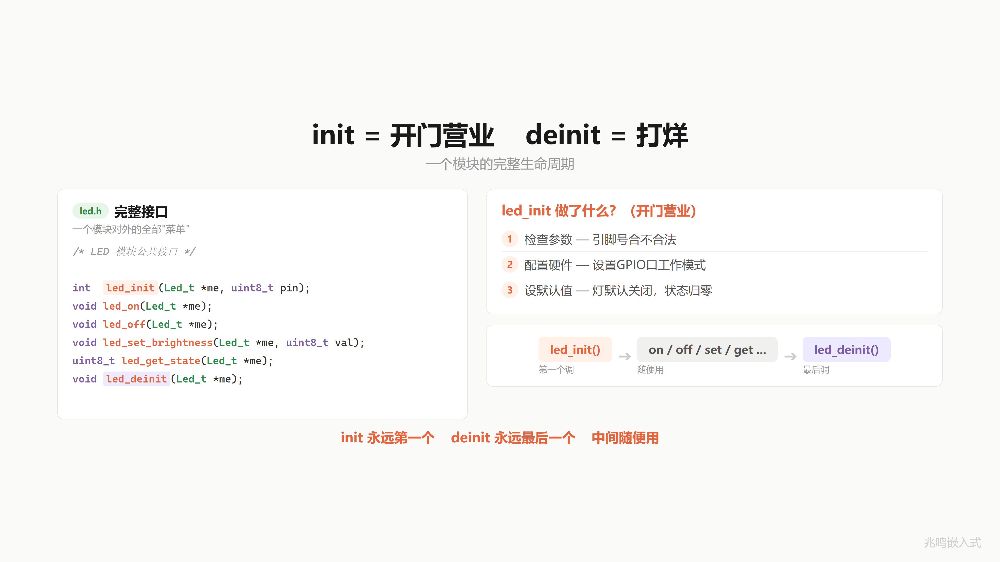
到这里：一个 .h 放接口声明、一个 .c 放实现、所有函数带前缀、init 开头 deinit 收尾。这就是一个完整的模块。
3.5 这个东西叫什么
你刚才做的这件事，给函数加前缀让名字不冲突，用 init 管诞生，用 deinit 管消亡，一个 .h 配一个 .c，这就是一个完整的 C 语言“类“。
struct 是数据，函数是行为，前缀是类名，init 是构造，deinit 是析构。
你不是从我这里背了一个定义，是从一个具体痛点（两个模块函数名打架）出发，自己推出了“前缀做类名 + init/deinit 做生命周期“这套规范。
这套规范在 Linux 内核、glibc、FreeRTOS、Zephyr 里全都用。读 kref_init / kref_get / kref_put 你立刻知道这是引用计数模块的生命周期函数。读 xQueueCreate / xQueueSend / xQueueReceive 你立刻知道这是 FreeRTOS 的队列模块。前缀 + init / deinit / 操作 是 C 圈子事实上的“class“ 写法。
3.6 C 对 C++
如果学过 C++，你会写：
class Led {
public:
Led(uint8_t pin); /* 构造函数 */
~Led(); /* 析构函数 */
int on();
int off();
private:
uint8_t pin_;
bool is_on_;
};
Led red(13); /* 进入作用域时自动调构造 */
red.on();
/* 离开作用域时自动调析构 */
而 C 里写的：
struct led {
uint8_t pin;
bool is_on;
};
int led_init(struct led *me, uint8_t pin);
int led_deinit(struct led *me);
int led_on(struct led *me);
int led_off(struct led *me);
struct led red;
led_init(&red, 13);
led_on(&red);
led_deinit(&red);
做的是一模一样的事。
C++ 把你手动写的前缀变成了编译器管理的类名（namespace + name mangling）。把你手动写的 init / deinit 变成了对象创建 / 销毁时自动调用的构造和析构。
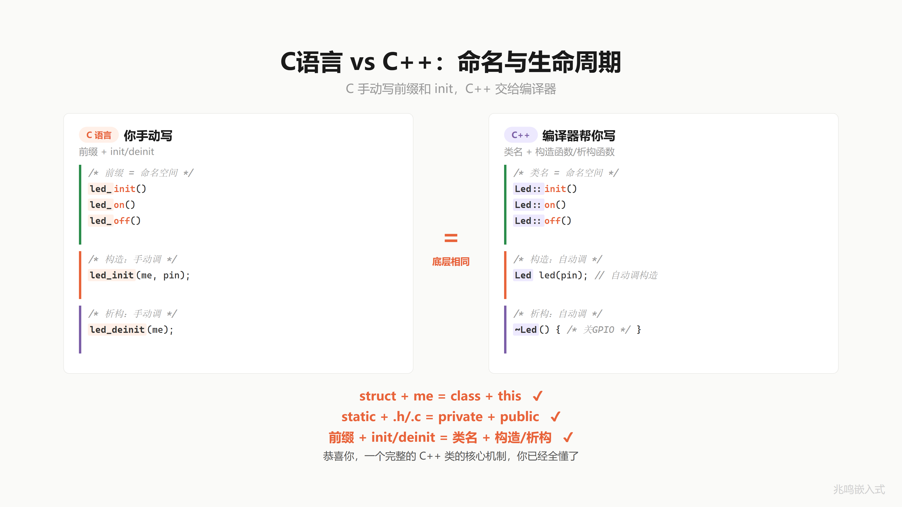
到这里三个恒等都凑齐了：
| 章节 | C 语言 | C++ |
|---|---|---|
| 第 1 章 | struct + me | class + this |
| 第 2 章 | static + .h/.c 分离 | private + public |
| 第 3 章 | 前缀 + init/deinit | 类名 + 构造/析构 |
C 没有 class？你天天都在写。
3.7 视频里没讲透的几个细节
3.7.1 initialized 标志位的反事实推演
struct led 和 struct motor 都有一个 bool initialized; 字段。这不是装饰，是防“没 init 就用“的安全网。
struct motor uninit = {0}; /* 全部清零，包括 initialized */
motor_start(&uninit);
{0} 把整个 struct 清零，所以 initialized 是 false。motor_start 第一件事检查这个标志：
int motor_start(struct motor *me)
{
if (!me)
return -1;
if (!me->initialized)
return -3;
...
}
立刻返回 -3，不去操作未配置的硬件。
如果没这个标志，未初始化的 motor 拿着垃圾 pin 去操作 GPIO，行为完全不可预测。在工业控制板上这是能引发安全停止的 bug。
工业代码里所有公开 API 的对象都有类似的 sentinel 字段：FreeRTOS 的 TCB.uxBasePriority 检查、Linux 内核的 device.driver_data 检查、Linux 的 kref 计数检查，全是同一套防御。
3.7.2 为什么 C 不能像 C++ 那样自动调用构造函数
C 的设计哲学是“你写什么就执行什么，没有隐式动作“。
struct led red; 这一行只分配栈内存，编译器不偷偷调任何函数。
C++ 的 Led red(13); 编译器自动插入一句构造函数调用，实际是编译器在帮你写代码。
这件事在嵌入式领域有争议。有人觉得方便（少打字、漏 init 的 bug 少），有人觉得“看不见的代码“是 bug 温床（栈对象多到对象池满了你都不知道）。Linus Torvalds 在邮件里反复抨击 C++ 的隐式行为，Linux 内核坚持纯 C 部分原因在这。
工业代码里两种风格都有人用。本书后面章节统一手动 init / deinit，看得见。
3.7.3 前缀和链接器符号表的视角
编译器其实不知道“前缀“这个概念，只看完整函数名。led_init 和 motor_init 在符号表里就是两个完全独立的符号：
$ nm led.o
0000000000000000 T led_init
0000000000000098 T led_deinit
0000000000000114 T led_on
...
$ nm motor.o
0000000000000000 T motor_init
0000000000000098 T motor_deinit
0000000000000114 T motor_start
...
链接器看到 led_init 和 motor_init 是两个不同字符串，相安无事。
但人需要前缀分组。led_* 一类、motor_* 一类，认知负载小。这是把链接器规则（全局唯一）和人的认知（按模块分组）调和的工程妥协。
C++ 的 namespace 在编译时把 Led::init 改写成 _ZN3Led4initEPh 这样的混淆名（叫 name mangling），本质和你手动写 led_init 一回事，只是编译器替你操作了字符串。
3.7.4 命名规范决策
你可能见过这些变体，本书选择是这样：
| 变体 | 例子 | 评价 |
|---|---|---|
led_init / led_deinit | 本书 | 简洁，对称 |
led_init / led_destroy | 部分库 | destroy 暗示堆分配 |
led_open / led_close | POSIX 风 | 留给文件接口 |
LedInit / LedDeinit | 微软 / Cube 风 | 不是 Linux 内核风 |
Led::Init / Led::Deinit | C++ | 编译器代劳 |
工业代码里 module_action 这种 lowercase + underscore + _ 分隔的写法是 Linux 内核风格的标准，本书坚持这一种。
3.7.5 头文件里 struct led 字段恢复公开了，违反 ch02 教训吗
第 2 章把 struct led 字段藏在 led.c 里，这一章字段又出现在 led.h 里。是不是回退？
不是。这一章关心的是“两个模块和命名规范“，不是“字段可见性“。字段重新公开换来两个好处：
- 外部能写
struct led red;在栈上分配（不再需要led_create / led_destroy的堆分配）。 - main.c 能直接做
led_init(&red, 13)这种“构造已分配对象“的标准模式。
代价是字段又能被外部 me->pin = 999 改坏。这是工程权衡。绝大多数自家应用代码（驱动、设备实例、模块）走的就是这条路：字段公开 + 命名纪律 + static 工具函数，因为应用层和驱动层在同一份工程里一起编译，靠 review 和工程文化就够了。GitHub 上 nginx、Redis、LVGL 这一类主流 C 项目都是这种写法。
只有跨二进制库边界（libc FILE * / POSIX pthread_t / SDK 提供给第三方使用）才坚持 ch02 的不透明指针写法。两条路都成立，根据需求选。
3.7.6 链接器冲突的真实长相
led.c 里写一个 init，motor.c 里也写一个 init，编译两个 .o 文件的时候各自都过。gcc led.c motor.c -o demo 在链接阶段才炸：
$ gcc -c led.c # 单文件编译过
$ gcc -c motor.c # 单文件编译过
$ gcc led.o motor.o -o demo
ld: motor.o: in function `init':
motor.c:(.text+0x0): multiple definition of `init';
led.o:led.c:(.text+0x0): first defined here
collect2: error: ld returned 1 exit status
错误是 ld（链接器）抛出的，不是 gcc。原因在 nm：
$ nm led.o
0000000000000000 T init <-- 全局符号 init
00000000000000a0 T led_on
0000000000000120 T led_off
$ nm motor.o
0000000000000000 T init <-- 也是全局符号 init
00000000000000a0 T motor_start
两个 .o 都把 init 写进自己的全局符号表（大写 T）。链接器扫所有 .o 合并符号表，发现两个 init 不知道挑谁，直接报 multiple definition。
加前缀的方案改成这样：
$ nm led.o
0000000000000000 T led_init <-- 不冲突
00000000000000a0 T led_on
$ nm motor.o
0000000000000000 T motor_init <-- 不冲突
00000000000000a0 T motor_start
每个全局符号都唯一了，链接器开心。
另一种规避冲突的方式是给 init 加 static，让它退化成 file-local 符号（nm 里小写 t）。但这样 init 就不能跨文件调用了，main.c 里 led_init(...) 直接编译报 undefined reference。static 解决冲突的代价是失去外部接口。
工业上选前缀不选 static 的原因清楚了：要让外部模块能 led_init(...)，又不能撞名，加前缀是唯一的路。
3.7.7 前缀方案 vs 嵌套方法表方案
C 语言的“避免冲突“还有第二条路。有些项目走的不是前缀，而是嵌套方法表。形态像这样：
struct led_class {
int (*init)(struct led *me, uint8_t pin);
int (*deinit)(struct led *me);
int (*on)(struct led *me);
int (*off)(struct led *me);
};
extern const struct led_class led; /* 单例方法表 */
/* 调用 */
led.init(&red, 13);
led.on(&red);
所有“led 模块的方法“挂在一个 struct led 单例下，调用是 led.init(...)、led.on(...)。链接器看到的全局符号只有一个 led，撞不到 motor。
这种写法的优点是把“模块名 + 方法名“在语法上分开了，看上去更像 OOP 的 instance.method()。GTK 的 GObject、Lua 的 C API 都用过类似手法。
缺点也实在。每次调用多一次内存间接（要从 led 单例里读函数指针），现代 CPU 上影响不大但也不是零。函数指针不能内联，编译器也不容易做静态分析。最关键的是这种写法在 C 圈的辨识度低：99% 的工业 C 代码（Linux 内核、Zephyr、FreeRTOS、glibc）走前缀方案。新人接手嵌套方法表的代码，很容易看不出“这是个普通的工程模块“。
本书坚持前缀方案，原因有三：
- 和 Linux 内核 / Zephyr / FreeRTOS / RT-Thread 一致
- 调用是直接函数调用（
BL led_init，一条指令），不走函数指针 - 工业代码静态分析工具（PCLint / Coverity）对直接调用支持更好
到了 ch09-ch11 会引入 ops 表 + vptr，那是嵌套方法表的“工业级正确用法“：用来支持运行时多态，不是用来规避命名冲突。两件事不要混。
3.7.8 为什么 motor 多了 direction 和 state 字段
struct motor 字段是 pin / pwm_duty / direction / state / initialized，比 struct led 多了 direction 和 state。
电机和 LED 的状态量本来就不一样：
- LED 只有“开 / 关“两态，加一个亮度（对应硬件 PWM 占空比）。
- 电机有“停 / 正转 / 反转“三态，加一个速度（PWM 占空比），方向是独立维度。
所以 direction 是布尔（正反），state 是 enum（停 / 正 / 反）。两者一起描述电机的运行状态。
字段不是越多越好。每加一个字段就是一份要维护的状态。is_on 这种“瞬时状态“和 initialized 这种“生命周期状态“放一个 struct 里都没问题，因为它们是同一个 motor 的属性。但如果你想塞“上次启动时间“、“累计运行小时”、“电流采样平均值“这些，那是另一个层次的数据（运维 / 监控），属于另一个模块的职责。
第 4 章数据归位会讲清楚这件事。
3.8 你现在的代码在 STM32 上长什么样
PC 模拟版是 printf 假装操作 GPIO。STM32 真实硬件上长这样（节选自 oop-in-c/code/03-handwritten-class/stm32-snippet/led_motor_stm32.c）：
#include "platform.h"
#include "stm32f4xx_hal.h"
void platform_gpio_init(uint8_t pin, uint8_t mode)
{
GPIO_InitTypeDef cfg = {0};
__HAL_RCC_GPIOA_CLK_ENABLE();
cfg.Pin = (uint16_t)(1U << pin);
cfg.Mode = (mode == GPIO_MODE_OUTPUT) ?
GPIO_MODE_OUTPUT_PP : GPIO_MODE_INPUT;
cfg.Pull = GPIO_NOPULL;
cfg.Speed = GPIO_SPEED_FREQ_LOW;
HAL_GPIO_Init(GPIOA, &cfg);
}
void platform_gpio_write(uint8_t pin, bool value)
{
HAL_GPIO_WritePin(GPIOA, (uint16_t)(1U << pin),
value ? GPIO_PIN_SET : GPIO_PIN_RESET);
}
led.h / led.c / motor.h / motor.c / main.c 全部一字不改。两个模块照样跑，前缀照样区分得开。变化的只是这层 platform 胶水。
真实工程里电机的 PWM 速度控制会写到 TIM 通道的 CCRx 寄存器，这里教学简化为 GPIO 高低电平。第 5 章会展开 HAL 怎么做这种映射。
这一节用的是函数式包装的 platform 抽象，是教学简化版。真正工业级用虚函数表（ops 表），允许 runtime 切换平台。第 11 章会演化对齐。
3.9 你现在的代码在 Linux 用户态长什么样
嵌入式 Linux 端长这样（节选自 oop-in-c/code/03-handwritten-class/linux-snippet/led_motor_linux.c）：
void platform_gpio_init(uint8_t pin, uint8_t mode)
{
int fd = open("/sys/class/gpio/export", O_WRONLY);
if (fd >= 0) {
dprintf(fd, "%u", (unsigned)pin);
close(fd);
}
char path[64];
snprintf(path, sizeof(path),
"/sys/class/gpio/gpio%u/direction", (unsigned)pin);
fd = open(path, O_WRONLY);
if (fd >= 0) {
const char *dir = (mode == GPIO_MODE_OUTPUT) ? "out" : "in";
write(fd, dir, strlen(dir));
close(fd);
}
}
void platform_gpio_write(uint8_t pin, bool value)
{
char path[64];
snprintf(path, sizeof(path),
"/sys/class/gpio/gpio%u/value", (unsigned)pin);
int fd = open(path, O_WRONLY);
if (fd >= 0) {
write(fd, value ? "1" : "0", 1);
close(fd);
}
}
Linux 把每个 GPIO 暴露成文件 /sys/class/gpio/gpio13/value，sysfs 接口。
led.h / led.c / motor.h / motor.c / main.c 还是一字不改。
新内核推荐 libgpiod，附录 C 会展开。
同样是函数式包装的教学简化版，第 11 章后演化为 ops 表。
3.10 工业代码里的模块长什么样
我做的工业控制板项目里，每个驱动模块都按这套命名规范组织。看几个真实模块的 .h 列名：
drivers/
├── led/
│ ├── led_base.h 类型 led_base_t
│ └── led_gpio.h 类型 led_gpio_t · 函数 led_gpio_init
├── eeprom/
│ ├── eeprom_base.h 类型 eeprom_base_t · 函数 eeprom_read / eeprom_write
│ └── ds2433.h 类型 ds2433_t · 函数 ds2433_init
├── temp_sensor/
│ ├── temp_sensor_base.h 类型 temp_sensor_base_t
│ └── max31827.h 类型 max31827_t · 函数 max31827_init
├── fan/
│ ├── fan_base.h
│ └── fan_pwm.h
└── beeper/
├── beeper_base.h
└── beeper_pwm.h
每个模块都遵循同一个套路：
- 文件名前缀 = 模块名（
led_/eeprom_/temp_sensor_/fan_/beeper_） - 函数名前缀 = 模块名 + 动作（
led_on/eeprom_read/max31827_init） - 生命周期 =
xxx_init / xxx_deinit - 类型名 =
xxx_t（这是工业项目历史决定，本书统一用struct xxx）
xxx_base 是抽象基类（属于第 6 章继承的内容），xxx_gpio / ds2433 / max31827 是具体实现。这层结构对应“虚函数表 + 具体设备的 ops 表“，是第 9 章到第 11 章的内容。
到这里你能看出：你这一章学的命名规范，是工业代码的“地基“。50 个驱动文件全按这个规范命名，新人接手不用读所有文档，看文件名 + 函数名就知道哪个是哪个。
3.11 跑一遍
cd oop-in-c/code/03-handwritten-class/pc
make
./demo
输出节选：
========================================
Same pattern, two classes side by side.
========================================
--- led_init / motor_init: open for business ---
[GPIO] Pin13 init as OUTPUT
[GPIO] Pin13 -> LOW (OFF)
[LED] Pin13 initialized
[GPIO] Pin14 init as OUTPUT
[GPIO] Pin14 -> LOW (OFF)
[LED] Pin14 initialized
[GPIO] Pin5 init as OUTPUT
[GPIO] Pin5 -> LOW (OFF)
[MOTOR] Pin5 initialized
--- LED operations ---
[GPIO] Pin13 -> HIGH (ON)
[LED] Pin13 ON
[GPIO] Pin13 -> HIGH (ON)
[LED] Pin13 brightness set to 80%
--- Motor operations ---
[GPIO] Pin5 -> LOW (OFF)
[MOTOR] Pin5 duty set to 60%
[MOTOR] Pin5 direction = forward
[GPIO] Pin5 -> HIGH (ON)
[MOTOR] Pin5 start (forward, duty=60%)
--- Skip init: catch the mistake at API level ---
[MOTOR] Error: not initialized
motor_start(uninit) returned -3 (-3 = not initialized)
--- Out-of-range arguments rejected ---
[LED] Error: pin 200 out of range (0~31)
led_init(_, 200) returned -2 (-2 = pin out of range)
led_* 和 motor_* 在同一个 main.c 里跑，没有任何冲突。init 失败有 -1 / -2 区分（NULL 指针 / 参数超范围），initialized 标志位拦住了“没 init 就用“的错误（返回 -3）。
这就是一个工程纪律完整的 C 模块该有的样子。
3.12 视频回放
想听口播版的可以看 B 站这一期视频：
视频里讲了沙县小吃 / 兰州拉面的类比、门把手的 affordance 类比，节奏更紧凑。书里补了视频没讲透的 6 个细节（3.7 节）和工业代码的对照（3.10 节）。
下一章
到这里 LED 和 motor 都是“工程纪律完整的模块“了。但回头看 led.c 文件开头，你可能还有几个全局变量：累计 init 次数、调试开关、最大亮度常量。
这些全局变量都该死了。下一章把它们一个一个判刑。
第 4 章 · 你的全局变量该死了
配套代码：oop-in-c/code/04-data-classification/
4.1 一个真实场景
你的 .c 文件开头有几个全局变量？
数一数。
今天它们一个都活不了。
第 1 章到第 3 章做了不少事。挂号单（struct）、me 指针、字段藏起来、命名前缀、init/deinit 生命周期。但翻开你的 led.c 看头几行，可能还在躺着这种东西：
/* led_bad.c · 反面教材 */
#include "led.h"
int g_pin = 0;
int g_brightness = 0;
int init_count = 0;
int MAX_BRIGHTNESS = 255;
int g_debug_flag = 0;
五个全局变量，从项目第一天就躺在这里。你可能觉得没问题。来看一个 bug。
你创建了两个 LED：红灯用引脚 5，绿灯用引脚 3。代码这样写：
bad_led_init(5); /* 初始化红灯 */
bad_led_init(3); /* 初始化绿灯 */
bad_led_on(); /* 想点亮红灯 */
跑一遍。
[BAD_LED] Pin5 initialized (g_pin=5, init #1)
[BAD_LED] Pin3 initialized (g_pin=3, init #2) <-- g_pin 从 5 变成 3
[BAD_LED] Pin3 ON <-- 点亮的是绿灯
红灯不亮，绿灯亮了。
第二次 bad_led_init(3) 把 g_pin 从 5 覆盖成 3。之后 bad_led_on() 用的是 g_pin，操作的实际是绿灯的引脚。
我接手过一个工业项目，两路传感器也是这个毛病：两个通道共享一个 g_chan_id，前面的人图方便。新人调试一周才找到原因。
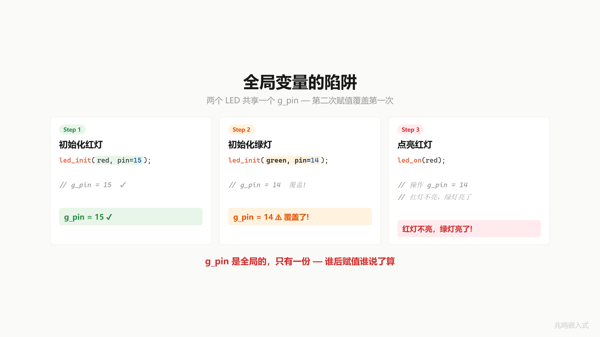
全局变量像公司大厅的白板。谁路过都能改两笔。你写了个重要数据，转头一看，被别人擦了。
4.2 第一批 · 实例数据搬进 struct
今天分三批处理掉。
第一批：g_pin 和 g_brightness。
引脚号和亮度，红灯有红灯的，绿灯有绿灯的。它们属于每个 LED 实例自己的数据。
判决：搬进 struct led。
struct led {
uint8_t pin;
uint8_t brightness;
bool is_on;
bool in_use;
};
pin 和 brightness 进 struct，每个 LED 对象自己带着一份。红灯改红灯的 me->pin，绿灯改绿灯的 me->pin，谁也覆盖不了谁。
刚才那个 bug，不存在了。
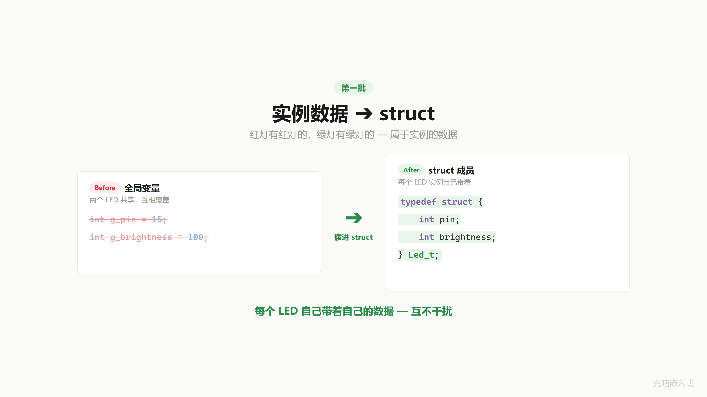
4.3 第二批 · 模块共享数据加 static
第二批：init_count 和 g_debug_flag。
init_count 是模块级累计调 init 的次数，红绿两灯共用一个计数器。g_debug_flag 是模块内部的调试开关，控制 [LED-DEBUG] 这种打印。
它们都不属于某一个 LED 实例（不是实例数据），但也不该让别的文件看到（外部 extern int init_count; 一句话就能改坏）。
判决：前面加 static。
static unsigned int s_init_count; /* 模块累计 init 次数 */
static int s_debug_flag; /* 模块调试开关 */
static 这个修饰词让编译器把这两个变量的符号写成 file-local（第 2 章 2.6.5 节讲过链接器视角）。别的文件 extern 都找不到。
外部想知道 s_init_count？走函数：
unsigned int led_get_init_count(void)
{
return s_init_count;
}
数据的主人说了算。
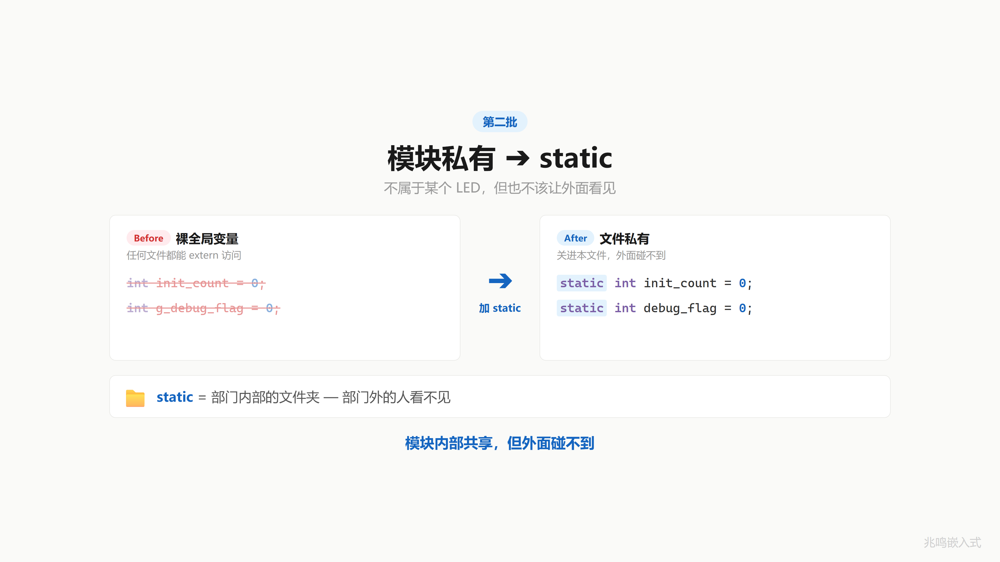
static 这个词在 C 里有三种意思，前面用了两种（藏函数、藏文件作用域变量）。第三种是函数内部的 static 局部变量，4.7.4 节会讲。
4.4 第三批 · 只读常量加 const
最后一个：MAX_BRIGHTNESS。
最大亮度 100。从项目开始到现在，有人改过它吗？没有。它就是一个常量。
但 int MAX_BRIGHTNESS = 100; 写法上是可改变的变量。运行时谁手滑写一句 MAX_BRIGHTNESS = 0，亮度上限突然变 0，整个模块都不工作了。
判决：static const。
static const uint8_t MAX_BRIGHTNESS = 100;
static const uint8_t MAX_PIN = 31;
static 让它出不了文件，const 让谁都改不了。MAX_BRIGHTNESS = 0; 编译器直接报错 assignment of read-only variable 'MAX_BRIGHTNESS'。编译期防御，运行时零开销。
你可能习惯用 #define MAX_BRIGHTNESS 100。也行。但 static const 有几个好处：
- 有类型（
uint8_t而不是int），编译器查类型不一致 - 有作用域（
static限制在本文件），不污染全局名字空间 - 调试时能看到变量名（
#define是预处理替换，gdb 看不到）
工业代码两种都在用。本书坚持 static const。
4.5 改造全貌 · 数据三级归位
把三批合起来，led.c 文件开头长这样：
/* 第三类：只读常量 */
static const uint8_t MAX_BRIGHTNESS = 100;
static const uint8_t MAX_PIN = 31;
/* 第二类：模块共享数据 */
static struct led led_pool[LED_POOL_SIZE];
static unsigned int s_init_count;
static int s_debug_flag;
/* file-private 工具函数 */
static void update_hardware(struct led *me);
static bool brightness_valid(uint8_t brightness);
static bool pin_valid(uint8_t pin);
static void debug_print(const char *msg);
没有一个裸露的 int g_xxx。每一个变量都加了 static、static const 或者藏在 struct 字段里。这就是数据归位的核心：每一份数据都有它该呆的地方。
注意一个新东西：static struct led led_pool[LED_POOL_SIZE];。
这一章本章配套代码用的是静态对象池：固定大小的 led_pool[8] 数组，led_acquire 从池里取空槽，led_release 把槽位还回去。
struct led *led_acquire(uint8_t pin)
{
for (size_t i = 0; i < LED_POOL_SIZE; i++) {
struct led *me = &led_pool[i];
if (me->in_use)
continue;
me->pin = pin;
me->in_use = true;
...
return me;
}
return NULL; /* 池满 */
}
为什么本章演示用对象池而不是 ch02 的 malloc？因为对象池是一种把“模块共享数据“和“实例数据“绑在一起的合理写法：池本身是模块共享的（一份），槽位里的 LED 实例数据各自独立（多份）。这一章想把“实例 / 模块 / 常量“三类归位讲清楚，对象池正好把三者都凑齐。
对象池不是工业代码唯一答案。LED 这种数量固定的全局对象，更常见的写法是直接 static struct led red_led; 给每颗 LED 一个静态实例（ch04 配套代码的另一份样例）。生命周期不固定的对象（动态接收的数据包、临时事件、按需创建的会话），用 malloc（FreeRTOS heap_4 / heap_5、RT-Thread rt_malloc、状态机框架自带的事件池这一类 RTOS 提供的动态内存）。三种工具按场景选，4.7 节会展开。
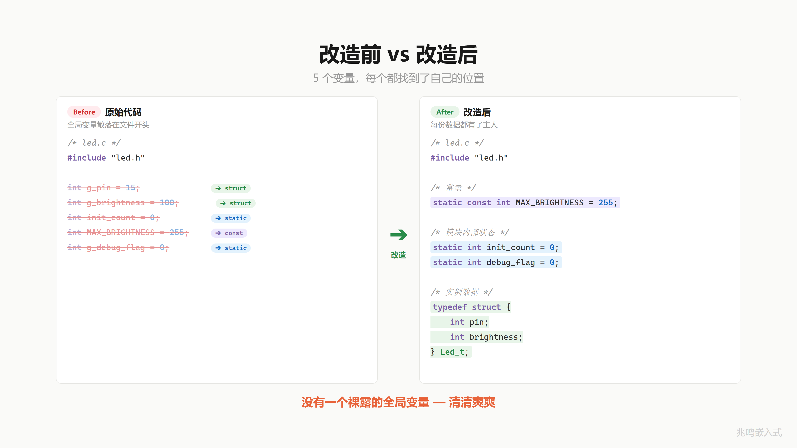
4.6 这个东西叫什么
刚才你做的事，把全局变量按“实例 / 模块 / 常量“三类归位，这个动作软件工程里叫数据所有权（data ownership）或者数据归位。
每一份数据都得有主人。实例数据的主人是 struct 字段（跟着 me 走），模块共享数据的主人是 static 变量（关在文件里），常量的主人是 static const（编译期固定）。
数据没有主人，bug 就是主人。
费曼讲过一句话：好的设计不靠人小心，靠机制上不让错误发生。把数据按所有权归位，是机制层面的防御。第 2 章把字段藏起来防外部乱写、第 4 章把全局变量按所有权归位防内部乱写，两条加起来是数据层面的“封装“完整版。
4.7 视频里没讲透的几个细节
4.7.1 实例数据 vs 模块共享数据，怎么分
判断标准只有一个：这份数据是 N 个实例各持有一份，还是 N 个实例共享一份？
| 数据 | 各持一份还是共享 | 归位 |
|---|---|---|
pin | 每个 LED 各一份 | struct 字段 |
brightness | 每个 LED 各一份 | struct 字段 |
is_on | 每个 LED 各一份 | struct 字段 |
| 累计 init 次数 | 整个 LED 模块共享一份 | static |
| 调试开关 | 整个 LED 模块共享一份 | static |
| 亮度上限 | 整个 LED 模块共享一份的常量 | static const |
判错了会怎样？
把“实例数据“误认为“模块共享数据“，就是 g_pin 那个 bug。两个 LED 共享一个 pin。
把“模块共享数据“误认为“实例数据“，那是把 s_init_count 放进 struct led。每个 LED 自带一份计数器，但你想要的是“全模块累计 init 次数“，得遍历所有 LED 加起来才能拿到。绕了路。
4.7.2 三种持有方式 · 按场景选
LED 实例数据放哪里？工业代码里有三种常见写法。
写法 A · 直接静态实例
static struct led red_led;
static struct led green_led;
led_init(&red_led, 13);
led_init(&green_led, 14);
数量固定的全局对象（板上 LED、串口、传感器、按键）几乎都这样写。零分配开销、零失败路径、地址编译期定死、调试器一查就找到。这是工业代码里最常见的形态。
写法 B · 静态对象池
static struct led led_pool[LED_POOL_SIZE];
struct led *me = led_acquire(13); /* 从池里拿一个空槽 */
...
led_release(me); /* 用完还回去 */
数量上限固定但具体哪些槽用、什么时候用不固定时用对象池。Linux 内核的 kmem_cache / slab 分配器是同一个思路的工业级形态（第 17 章展开）。本章配套代码用这种写法是为了把“模块共享数据 + 实例数据“凑齐演示。
写法 C · 动态分配
struct led *me = malloc(sizeof(*me));
if (!me)
return -ENOMEM;
led_init(me, 13);
...
free(me);
MCU 上用 RTOS 提供的 heap：pvPortMalloc（FreeRTOS heap_4 / heap_5）、rt_malloc（RT-Thread）、k_malloc（Zephyr）。这些 heap 实现都有相邻块合并机制，碎片可控。生命周期不固定的对象（动态接收的网络包、临时事件、按需创建的会话）走这一种。我自己的 STM32H7 工业控制板项目里 configTOTAL_HEAP_SIZE = 65536、状态机框架的事件池预占几十 KB，全是动态内存机制。这是现代嵌入式工业级常态。
什么时候选哪种？
| 对象类型 | 推荐写法 |
|---|---|
| 数量固定的全局对象（LED / 串口 / 传感器） | A 直接静态实例 |
| 数量上限固定 + 频繁创建销毁（任务句柄池、连接池） | B 静态对象池 |
| 生命周期不固定的对象（动态包、按需事件、临时缓冲） | C 动态分配 + 生命周期纪律 |
| 单次分配永不释放（启动时 4 KB 帧缓冲） | A 静态 或 C 单次 malloc，都行 |
唯一真不能用动态内存的场景是 8051 / M0 + 16 KB RAM 这种小芯片，或者 DO-178C Level A / IEC 62304 Class C 早期严格规约（最新规约都允许有约束的动态内存）。绝大多数现代嵌入式项目（Cortex-M4 以上 + RTOS）都是三种工具按场景混用。
4.7.3 池满了怎么办
led_acquire 返回 NULL。调用方有义务处理：
struct led *red = led_acquire(13);
if (!red) {
/* 池满了，记日志 / 通知监控 / 降级处理 */
log_error("led pool exhausted");
return -ENOMEM;
}
工业代码里这种 NULL 检查是强制的，几乎没有“分配失败就忽略“的情况。第 17 章讲 Linux 内核的 kmalloc 也是同样的纪律。
4.7.4 static 第三义 · 函数内部的 static 局部变量
static 这个词在 C 里有三种含义：
| 修饰位置 | 效果 | 例子 |
|---|---|---|
| 函数前 | file-private 函数 | static void update_hardware(...) |
| 文件作用域变量前 | file-private 变量 | static int s_debug_flag |
| 函数内局部变量前 | 跨调用保持值 | static int call_count |
前两种这一章和第 2 章用过。第三种是另一个话题：
void log_event(void)
{
static int call_count = 0;
call_count++;
printf("called %d times\n", call_count);
}
static int call_count 不在栈上，每次进函数它的值还是上次离开时的样子。它就是一个“绑定到这个函数的私有全局变量“。
工业代码里这种用法不多，因为它隐式地把“函数有状态“这件事藏起来了。明确的做法是把 call_count 移到 module-level static 变量，加一个 getter 函数。
记一句话：三种 static，活得比你想的久，藏得比你想的深。
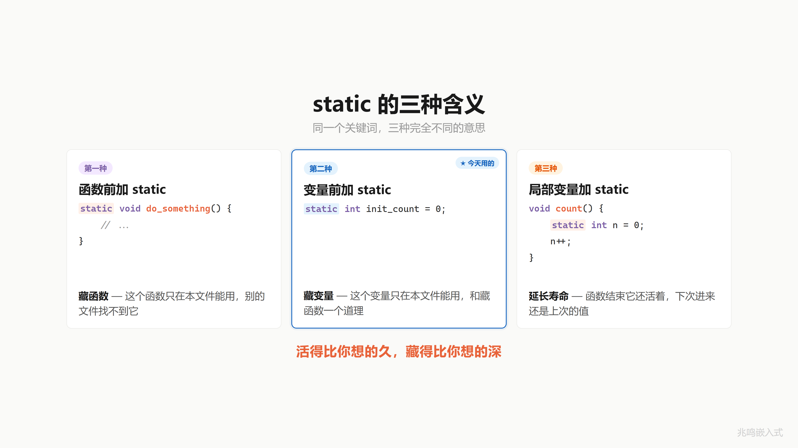
4.7.5 .bss 段是什么
static struct led led_pool[8] 这个数组在哪里？
不在堆，不在栈。
它在 .bss 段。.bss 是可执行文件的一个段，专门给“未初始化的全局/静态变量“。
可执行文件结构（ELF / Mach-O / PE 都类似）：
.text 代码段（指令）
.rodata 只读数据段（const 数据 / 字符串字面量）
.data 已初始化的全局/静态变量（int x = 5;）
.bss 未初始化的全局/静态变量（int x; 或 static int x;）
heap malloc 分配区（运行时增长）
stack 函数调用栈（运行时增长）
.bss 在程序启动时由 loader 全部清零（O(1)，不用一字节一字节写，loader 用 zero-fill 页技巧）。所以 static struct led led_pool[8] 一开机就是 {0} 状态，每个 in_use 都是 false，可以直接用。
static const uint8_t MAX_BRIGHTNESS = 100 这种带初始值的常量在 .rodata 段。运行时这一段是只读的，CPU 写它会触发 segmentation fault / hard fault。const 不只是编译期检查，运行时也有硬件保护。
ch04 这一章四类数据归位，每一类对应一个段：
| 数据类型 | 例子 | 落地段 |
|---|---|---|
auto（栈上局部变量） | int i = 0;（函数内） | stack |
| 已初始化全局 / static | static int s_count = 5; | .data |
| 未初始化全局 / static | static struct led led_pool[8]; | .bss |
static const 常量 | static const uint8_t MAX = 100; | .rodata |
malloc / calloc | malloc(sizeof(struct led)); | heap |
后面的 4.7.7 节会贴一份 STM32H7 的真实内存地图，看每一个段在 SRAM 里物理地址是多少。
4.7.6 动态内存的工业级用法
很多老资料把“嵌入式 MCU 不用 malloc“当成铁律。这是 1990 年代裸机 8051 / 小 RAM MCU 时代留下的 dogma，不是现代嵌入式现实。
现实是这样的：
- FreeRTOS heap_4 / heap_5：相邻 free 块自动合并，碎片可控，工业产品标配
- RT-Thread
rt_malloc/ 内存池mp：长跑稳定，国内大量产品在用 - 状态机框架的事件池：预分配 + 动态借还，事件驱动框架的核心机制
- lwIP 协议栈：所有 pbuf 网络包都是动态分配
- FATFS、libgpiod、绝大多数中间件：默认都用动态内存
最新的安全标准也不再禁动态内存：
- MISRA C:2012 amendment 1 把动态内存从“禁用“放宽到“有约束允许“
- DO-178C 在有形式化生命周期分析时允许动态内存
- IEC 62304 Class B/C 安全关键软件可以用动态内存，前提是有合规的资源管理
工业纪律的关键不是“不用 malloc“，是生命周期管理。判定标准：
- 每个 alloc 有配对的 free 路径。函数中间任何
return都不能漏过 free - 异常退出走
goto cleanup。Linux 内核风格，几十年实践能压住所有 leak。形态在 ch02 2.6.8 节贴过 - 共享所有权用引用计数。Linux
kref_init / kref_get / kref_put是标准模板 - 选 RTOS 提供的 heap 而不是 newlib
dlmalloc。前者有合并机制 + 审计接口，后者反复分配释放后容易碎片放大 - 关键路径的 WCET 要测。
pvPortMalloc在 heap_4 上是 O(N)（N 是 free list 长度），实时任务里用对象池或者预分配避开
什么时候仍然优先用静态分配（直接静态实例 / 静态对象池）？
- 8051 / M0 + 16 KB RAM 这种小芯片：堆碎片 + 没有 RTOS heap，只能静态
- DO-178C Level A 飞行控制 / IEC 62304 Class C 终极严格场景：最稳是规避动态内存
- 中断热路径每秒几百万次 alloc 的极端情况：避开 heap 锁竞争
绝大多数现代嵌入式项目（Cortex-M4 以上 + RTOS）都是三种工具按场景混用：全局少量对象 → 直接静态实例；上限固定 + 频繁取还 → 静态对象池；生命周期不固定 → RTOS heap + goto cleanup。
动态内存不是危险品，缺乏生命周期纪律才是。AI 工具（Coverity / Codacy / Claude Code 这一类）现在能自动审计 alloc / free 的配对路径和异常退出分支，工程上比手工 review 可靠得多。
4.7.7 STM32H7 内存地图举例
抽象的 .text / .rodata / .data / .bss / heap / stack 在真实 MCU 上是哪几片物理 SRAM？
以 STM32H7 系列（Cortex-M7，是 Simon 工业控制板项目用的同一代核）为例。这颗芯片的内存布局：
0x0800 0000 - 0x081F FFFF 2 MB Flash (.text, .rodata, .data 初值)
0x2000 0000 - 0x2001 FFFF 128KB DTCM (Cortex-M7 紧耦合数据·CubeMX 默认 stack 在这)
0x2400 0000 - 0x2407 FFFF 512KB AXI SRAM (主 RAM, .bss / .data / heap)
0x3000 0000 - 0x3004 FFFF 288KB SRAM1-3 (DMA / 外设缓冲常用)
0x3800 0000 - 0x3800 FFFF 64KB SRAM4 (低功耗域)
0x4000 0000 - 0x4FFF FFFF APB / AHB 外设寄存器（GPIO / UART / SPI ...）
0x5800 2000 - 0x5800 25FF GPIOA-K 寄存器组（包括 ch01 1.7.6 提的 BSRR）
0xE000 0000 - 0xE00F FFFF Cortex-M7 内核私有外设（SysTick / NVIC / SCB）
链接脚本（.ld 文件）告诉 ld：
.text起点0x0800 0000（Flash），程序从这里开始执行.bss / .data / heap在0x2400 0000（AXI SRAM），主 RAM 区stack在0x2000 0000（DTCM）顶部往下增长。DTCM 是 Cortex-M7 紧耦合数据 RAM，跟 CPU 直连，访问最快，CubeMX 生成的 .ld 默认把 stack 放这里- 上电后 startup 代码把
.data段从 Flash copy 到 SRAM（初值），把.bss段清零
static struct led led_pool[8] 在编译期已经知道 size。链接器在 .bss 里给它分配一段地址，比如 0x2400 0080 - 0x2400 00C0（假设每个 led 8 字节）。运行时这块地址就是池子的物理位置，整个固件生命周期不变。
PC 模拟版跑同一份代码，地址换成 Linux 进程的虚拟地址（如 0x55B5 1234 0080），但段的概念一样：.text / .rodata / .data / .bss 都在那里，只是物理位置由操作系统的进程虚拟内存管理决定。
这个地图教给你的事：MCU 上你写下的每一个变量，都有确切的物理位置。static / static const / 函数内栈变量决定了它落在 SRAM 的哪一段。当你能在脑里画出这张地图，下次有人说“这个项目跑久了 RAM 涨了“，你就知道往 .bss 大数组、heap leak、stack 深度三个方向查。
4.7.8 全局指针句柄是合理用法吗
是。
要分清楚两种“全局“：
裸数据型全局变量：例如 int g_temp_value;、char g_buffer[64];、int g_status;。这种要避免。任何模块都能直接读写，谁改了谁没改追不到，并发场景下竞态拉满。这是 ch01-ch03 一直在反对的“敞开的挂号单“。
接口型全局指针句柄：例如 extern struct led_base *green_led;、extern struct uart *console;、extern struct rtc_dev *system_rtc;。这种是合理的。指针指向的对象关在驱动的 .c 文件里（参考 ch01 1.10 节的不透明指针），应用层只能通过 led_on(green_led) 这种封装函数操作它，拿不到“裸字段读写“的能力。这是对一个单例对象的句柄绑定，不是裸数据共享。
工业代码里 extern xxx_base_t *xxx_dev; 这种声明是大量存在的，每个外设设备实例（LED、按键、UART、RTC、温度传感器）通常都对应一两个全局句柄。这就是“设备树思路“在 C 里的落地：全局可见的设备名 + 不透明的设备实例。第 19 章工业实战会展开。
另一种合理的全局是 initcall 段（第 17 章详讲）：一组函数指针放在 .bss 的特殊段里，启动时按顺序调用。这不是数据共享，是机制实现。
需要警惕的两个使用方式：
- 全局指针句柄之间的互相依赖：A 模块的初始化引用了 B 模块的句柄，但 B 还没 init。这是 ch17 initcall 7 级排序要解决的问题。
- 应用层通过句柄访问对象字段：写
green_led->pin = 5这种应该编译报错（不透明指针保护），写g_temp = 100这种应该 code review 打回。
4.8 你现在的代码在 STM32 上长什么样
PC 模拟版是 printf 假装操作 GPIO。STM32 真实硬件上长这样（节选自 oop-in-c/code/04-data-classification/stm32-snippet/led_stm32.c）：
#include "platform.h"
#include "stm32f4xx_hal.h"
void platform_gpio_init(uint8_t pin, uint8_t mode)
{
GPIO_InitTypeDef cfg = {0};
__HAL_RCC_GPIOA_CLK_ENABLE();
cfg.Pin = (uint16_t)(1U << pin);
cfg.Mode = (mode == GPIO_MODE_OUTPUT) ?
GPIO_MODE_OUTPUT_PP : GPIO_MODE_INPUT;
cfg.Pull = GPIO_NOPULL;
cfg.Speed = GPIO_SPEED_FREQ_LOW;
HAL_GPIO_Init(GPIOA, &cfg);
}
void platform_gpio_write(uint8_t pin, bool value)
{
HAL_GPIO_WritePin(GPIOA, (uint16_t)(1U << pin),
value ? GPIO_PIN_SET : GPIO_PIN_RESET);
}
led.h / led.c / main.c 一字不改。static struct led led_pool[8] 落到 STM32 的 .bss 段，启动时清零，运行期池子大小固定。这里用对象池是 4.5 节解释过的演示选择，LED 这种数量固定的全局对象用直接静态实例（4.7.2 节写法 A）也很常见，工业级代码两种都用。
这一节用的是函数式包装的 platform 抽象，是教学简化版。真正工业级用虚函数表（ops 表），允许 runtime 切换平台。第 11 章会演化对齐。
4.9 你现在的代码在 Linux 用户态长什么样
嵌入式 Linux 端长这样（节选自 oop-in-c/code/04-data-classification/linux-snippet/led_linux.c）：
void platform_gpio_init(uint8_t pin, uint8_t mode)
{
int fd = open("/sys/class/gpio/export", O_WRONLY);
if (fd >= 0) {
dprintf(fd, "%u", (unsigned)pin);
close(fd);
}
/* ... */
}
void platform_gpio_write(uint8_t pin, bool value)
{
char path[64];
snprintf(path, sizeof(path),
"/sys/class/gpio/gpio%u/value", (unsigned)pin);
int fd = open(path, O_WRONLY);
if (fd >= 0) {
write(fd, value ? "1" : "0", 1);
close(fd);
}
}
led.h / led.c / main.c 还是一字不改。
Linux 上的进程有充足的堆，用 malloc 是常态，glibc 的多 arena malloc 在长跑场景里也很稳。本章配套代码用静态池只是为了让同一份代码在 PC / STM32 / Linux 三平台对照演示同一个机制，不是说 Linux 用户态必须避开 malloc。真实 Linux 应用代码（LVGL、systemd、各种 daemon）大量用动态内存，靠 goto cleanup 风格的资源管理 + valgrind / AddressSanitizer 审计 leak，是工业级常态。
led_pool[8] 在 Linux 进程的 .bss 段，进程启动时由 loader 清零。这个例子里整个进程生命周期不需要任何 malloc，但这是配套代码的演示选择，不是 Linux 编程纪律。
同样，本节的 platform 是函数式包装的教学简化版，第 11 章后演化为 ops 表。
4.10 工业代码里的数据归位长什么样
我做的工业控制板项目里，数据归位是一个跨模块的纪律。每个驱动 .c 文件开头都遵循同一套结构：
/* drivers/eeprom/ds2433.c · 简化结构 */
/* 1. 只读常量 */
static const uint32_t DS2433_MAX_ADDR = 4096;
/* 2. 模块共享数据 (按需选静态实例 / 对象池 / 动态分配, 这一份用静态实例) */
static unsigned int s_init_count;
static int s_debug_flag;
/* 3. file-private 工具函数 */
static int ds2433_send_cmd(struct ds2433 *me, uint8_t cmd);
static int ds2433_wait_ready(struct ds2433 *me);
50 个驱动文件全是这个结构。新人接手任何一个文件，前几行就看到“这个模块的数据归位是什么样“。
DS2433 这种跟单总线挂的 EEPROM 通常每板只有 1-2 颗，直接静态实例就够：
/* drivers/eeprom/ds2433_cfg.c · 板级实例 */
static struct ds2433 ds2433_main;
struct ds2433 *ds2433_top = &ds2433_main; /* 应用层句柄 */
数量上限固定 + 频繁创建销毁的对象（任务句柄、连接池槽）才走静态对象池。生命周期不固定的对象（动态接收的总线消息、按需创建的会话、状态机事件）走 RTOS 提供的动态内存（FreeRTOS pvPortMalloc、RT-Thread rt_malloc、状态机框架的事件分配接口）。三种持有方式按对象生命周期选，不是“先静态再说“。
跨文件的全局变量极少。所有跨文件共享的“对象“（green_led、temp_sensor_top、fan_main）都是通过 extern struct xxx_base *xxx; 这种接口指针暴露，背后的 struct 字段还是关在 .c 里。
这种纪律不是为了“代码好看“。是为了：
- 跨年的代码维护期，谁都能 5 分钟读懂某个变量的归属
- 静态分析工具（PCLint / Coverity / Claude Code 这一类 AI 审计）能确定每个变量的访问边界
- 单元测试时每个模块的状态边界明确，能 mock 干净
- 跨模块 bug 锁定时，全局污染面小
这就是工业级 C 代码的骨架。第 5 章会打开 STM32 HAL 库源码，看看 ST 工程师怎么遵守同一套规则。
4.11 跑一遍
cd oop-in-c/code/04-data-classification/pc
make
./demo
输出节选：
========================================
Part 1: BAD code with global g_pin
========================================
--- bad_led_init for red (pin=5) ---
[BAD_LED] Pin5 initialized (g_pin=5, init #1)
g_pin = 5 (correct)
--- bad_led_init for green (pin=3) ---
[BAD_LED] Pin3 initialized (g_pin=3, init #2)
g_pin = 3 (overwritten by second init)
--- Try to turn ON "red" ---
[BAD_LED] Pin3 ON
But the actual pin is 3 (green's pin), not 5.
[BUG] g_pin is shared, two LEDs can't coexist.
========================================
Part 2: GOOD code with struct + static pool
========================================
--- led_acquire for red (pin=5) ---
[LED] Pin5 acquired (slot 0, total inits 1)
--- led_acquire for green (pin=3) ---
[LED] Pin3 acquired (slot 1, total inits 2)
--- Both LEDs are independent ---
red: is_on=true brightness=80%
green: is_on=true brightness=40%
--- Module-level data via function ---
led_get_init_count() = 2 (no extern, no global var)
--- Pool exhaustion (acquire 8 then 9th fails) ---
[LED] Pin10 acquired (slot 2, total inits 3)
...
[LED] Pin15 acquired (slot 7, total inits 8)
[LED] Error: pool exhausted (size=8)
9th acquire returned 00000000 (NULL = pool exhausted, expected)
Part 1 重现了全局变量的 bug：第二次 init 覆盖第一次，“红灯“操作的实际是绿灯的引脚。
Part 2 演示数据归位完成形态：每个 LED 有自己的 pin / brightness，通过 led_get_init_count() 函数访问模块级数据，对象池满了 acquire 返回 NULL。
4.12 视频回放
想听口播版的可以看 B 站这一期视频：
视频里讲了白板类比（全局变量被路过的人擦掉）、部门文件夹类比（static 文件私有），节奏更紧凑。书里补了视频没讲透的 6 个细节（4.7 节）和工业代码的对照（4.10 节）。
封装篇到这里：第 1 章 struct + me、第 2 章 static + 不透明指针、第 3 章前缀 + init/deinit、第 4 章数据三级归位（实例 / 模块 / 常量）。所有零件凑齐了。
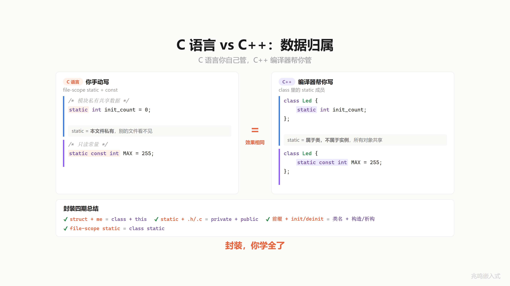
下一章
但我说了不算。下一章打开 STM32 HAL 库的源码，看看 ST 工程师在做同样的事。HAL_GPIO_Init、HAL_GPIO_WritePin、GPIOA / GPIOB / GPIOC，几千个 HAL 函数就一个套路。
第 5 章 · HAL 库源码漫游
配套代码：oop-in-c/code/05-hal-mapping/
5.1 你天天用 HAL_GPIO_Init
你知道它为什么叫这个名字吗？
封装四章学完了：第 1 章 struct + me、第 2 章 static + 不透明指针、第 3 章前缀 + init/deinit、第 4 章数据三级归位（实例 / 模块 / 常量）。
但学的东西“是不是真的工业标准“，光我说不算。打开 STM32 HAL 库源码，亲眼验证。
这一章不教新概念。它是验证课。要做的事：把 HAL 库的设计逐项映射回前 4 章学过的东西。学完你会发现，你这一个月学的，就是几千个工业函数背后的同一套机制。
5.2 GPIO_TypeDef 就是 struct
打开 STM32 HAL 库源码（教学包里有等价的简化版 gpio_typedef.h，真实文件叫 stm32h7xx.h）找到 GPIO 的类型定义：
typedef struct {
uint32_t MODER; /* 模式寄存器 */
uint32_t OTYPER; /* 输出类型寄存器 */
uint32_t OSPEEDR; /* 输出速度寄存器 */
uint32_t PUPDR; /* 上下拉寄存器 */
uint32_t IDR; /* 输入数据寄存器（只读） */
uint32_t ODR; /* 输出数据寄存器 */
uint32_t BSRR; /* 置位 / 复位寄存器 */
uint32_t LCKR; /* 锁定寄存器 */
} GPIO_TypeDef;
MODER 配模式，OTYPER 配推挽 / 开漏，OSPEEDR 配速度，BSRR 拉电平。八个寄存器属于“一个 GPIO 端口“这一个对象。
把它们打包成一个 struct。
第 1 章你给一颗 LED 打包 pin / brightness / is_on，是这个套路。ST 工程师给一个 GPIO 端口打包 MODER / OTYPER / ...，是同一个套路。同一个对象的所有数据，装进一个 struct。
GPIO_TypeDef 就是 STM32 工程师的 struct led。
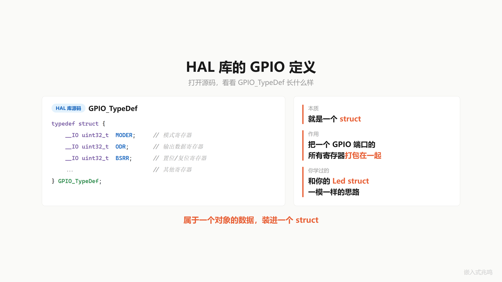
5.3 GPIOA / GPIOB / GPIOC 就是多实例
芯片设计师设计了一个 GPIO 模块，寄存器、时序、功能全定义好了。
然后呢？复制粘贴。
A 端口一份，B 端口一份，C 端口一份。每一份的寄存器布局完全一样，只有起始地址不同。
那 HAL 库怎么做的？没有复制粘贴代码。只用一个 GPIO_TypeDef 描述所有 GPIO，然后定义三个指向不同地址的指针：
/* 真实 STM32H7 头文件里这一段 */
#define GPIOA ((GPIO_TypeDef *)0x58020000UL)
#define GPIOB ((GPIO_TypeDef *)0x58020400UL)
#define GPIOC ((GPIO_TypeDef *)0x58020800UL)
0x58020000 是 GPIOA 寄存器组在 SoC 内存映射里的物理基地址。芯片硬件设计的时候这个地址就定好了，CPU 用普通 STR / LDR 指令访问这块内存，访问到的是真实的 GPIO 寄存器（这种“硬件寄存器映射到 CPU 地址空间“的机制叫 MMIO）。
GPIOB 比 GPIOA 偏移 0x400 字节（1 KB），GPIOC 又偏移 0x400。三个端口寄存器布局完全一致，只是物理基地址不同。
唯一变化的是地址。
第 1 章你给三颗 LED 开三张挂号单（red_led / green_led / blue_led），是这个套路。ST 给三个 GPIO 端口开三个指针（GPIOA / GPIOB / GPIOC），是同一个套路。同一份 struct 定义，多个独立实例。
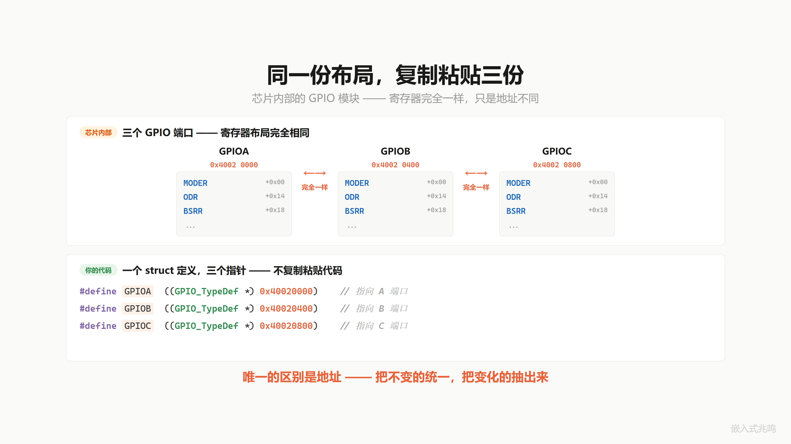
5.4 GPIO_TypeDef *GPIOx 就是 me 指针
再看 HAL 函数：
void HAL_GPIO_Init(GPIO_TypeDef *GPIOx, GPIO_InitTypeDef *init);
void HAL_GPIO_DeInit(GPIO_TypeDef *GPIOx, uint32_t pin);
void HAL_GPIO_WritePin(GPIO_TypeDef *GPIOx, uint16_t pin, GPIO_PinState state);
GPIO_PinState HAL_GPIO_ReadPin(GPIO_TypeDef *GPIOx, uint16_t pin);
void HAL_GPIO_TogglePin(GPIO_TypeDef *GPIOx, uint16_t pin);
注意每个函数的第一个参数 GPIO_TypeDef *GPIOx。
这就是 me 指针。
GPIOx 这个名字 ST 起得很妙：x 是占位符，意思是“哪一个 GPIO 都行“。你传 GPIOA，就操作 A 端口；传 GPIOB，就操作 B 端口。
HAL_GPIO_WritePin(GPIOA, GPIO_PIN_5, GPIO_PIN_SET); /* 操作 GPIOA Pin5 */
HAL_GPIO_WritePin(GPIOC, GPIO_PIN_13, GPIO_PIN_RESET); /* 操作 GPIOC Pin13 */
同一个函数 HAL_GPIO_WritePin，传不同的 me 指针 (GPIOA / GPIOC)，操作不同的实例。
第 1 章 led_on(&red_led) / led_on(&green_led)，是这个套路。
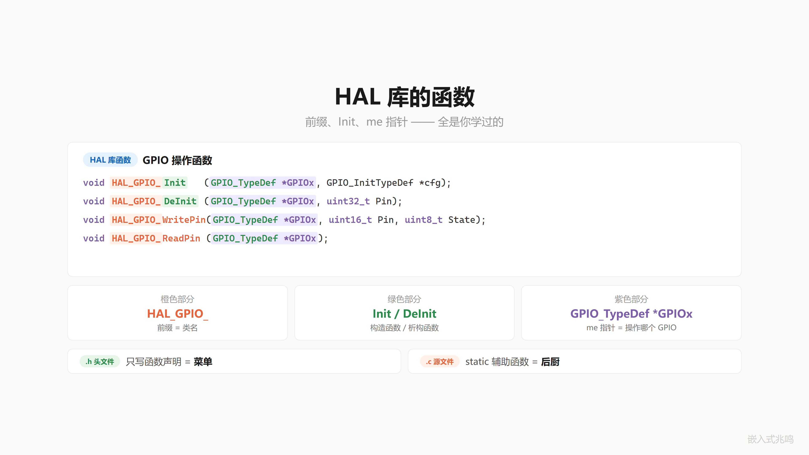
5.5 HAL_GPIO_ 前缀 + Init / DeInit
再看函数名前缀：HAL_GPIO_。
LED 模块叫 led_，HAL 库 GPIO 模块叫 HAL_GPIO_。前缀就是类名。
HAL_GPIO_Init 是构造函数，HAL_GPIO_DeInit 是析构函数。第 3 章学的命名规范，HAL 库工程师严格遵守。
不只 GPIO。打开 HAL 库的其他模块：
HAL_UART_Init / HAL_UART_DeInit
HAL_SPI_Init / HAL_SPI_DeInit
HAL_I2C_Init / HAL_I2C_DeInit
HAL_TIM_Base_Init / HAL_TIM_Base_DeInit
HAL_ADC_Init / HAL_ADC_DeInit
每个外设都是同一个套路。HAL_<MOD>_Init 配置外设，HAL_<MOD>_DeInit 复位回默认状态，中间的操作函数都带 HAL_<MOD>_ 前缀。
几千个 HAL 函数，就这一招。
5.6 .h 是菜单 + .c 内 static 是后厨
打开 stm32h7xx_hal_gpio.h，里面只有函数声明 + 类型定义：
/* stm32h7xx_hal_gpio.h（节选） */
void HAL_GPIO_Init(GPIO_TypeDef *GPIOx, GPIO_InitTypeDef *GPIO_Init);
void HAL_GPIO_DeInit(GPIO_TypeDef *GPIOx, uint32_t GPIO_Pin);
HAL_StatusTypeDef HAL_GPIO_LockPin(GPIO_TypeDef *GPIOx, uint16_t GPIO_Pin);
GPIO_PinState HAL_GPIO_ReadPin(GPIO_TypeDef *GPIOx, uint16_t GPIO_Pin);
void HAL_GPIO_WritePin(GPIO_TypeDef *GPIOx, uint16_t GPIO_Pin, GPIO_PinState PinState);
void HAL_GPIO_TogglePin(GPIO_TypeDef *GPIOx, uint16_t GPIO_Pin);
void HAL_GPIO_EXTI_IRQHandler(uint16_t GPIO_Pin);
这是菜单，开发者能调的全在这里。
打开 stm32h7xx_hal_gpio.c，除了上面的函数实现，还有内部参数验证 / 位操作辅助等内容。这些细节 ST 没暴露给用户用，是后厨的事。
第 2 章学的 .h 是菜单、.c 是后厨、内部辅助加 static，HAL 库工程师严格遵守。
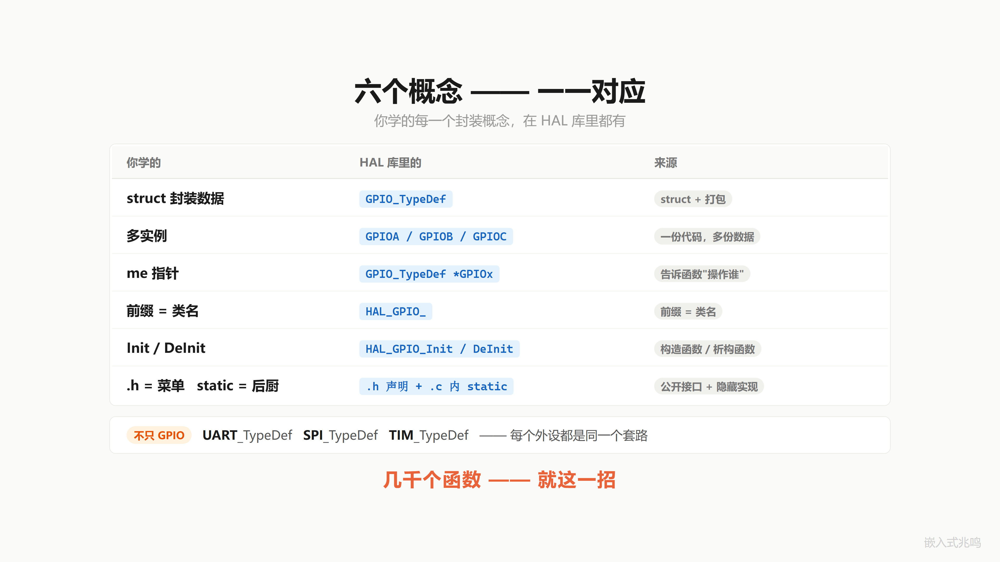
5.7 完整映射表
把前 4 章的概念汇总到一张表：
| 你学的（ch01-ch04） | HAL 库里的 |
|---|---|
struct led（数据打包，ch01） | GPIO_TypeDef |
red_led / green_led（多实例，ch01） | GPIOA / GPIOB / GPIOC |
struct led *me（me 指针，ch01） | GPIO_TypeDef *GPIOx |
led_ 前缀（命名规范，ch03） | HAL_GPIO_ 前缀 |
led_init / led_deinit（生命周期，ch03） | HAL_GPIO_Init / HAL_GPIO_DeInit |
.h 菜单 + .c 后厨（ch02） | stm32h7xx_hal_gpio.h + .c |
static 工具函数（ch02） | static 工具函数（一字不差） |
static const 常量（ch04） | #define GPIO_MODE_OUTPUT 0x01U 类宏定义 |
| 数据归位 + .bss 段（ch04） | GPIO 寄存器在硬件 MMIO 区，每端口一片，启动期固定布局 |
六组对应。每一项都不是巧合。
不只 GPIO。UART_TypeDef、SPI_TypeDef、TIM_TypeDef，HAL 库的每个外设都按这套规则组织。
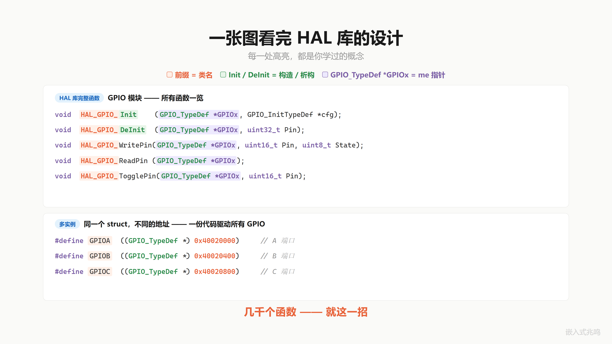
5.8 HAL_GPIO_WritePin 内部到底在做什么
带你看一行最关键的代码：HAL_GPIO_WritePin 写到底，CPU 实际执行了什么。
简化版的真实实现（来自 stm32h7xx_hal_gpio.c）：
void HAL_GPIO_WritePin(GPIO_TypeDef *GPIOx, uint16_t GPIO_Pin,
GPIO_PinState PinState)
{
if (PinState != GPIO_PIN_RESET)
GPIOx->BSRR = (uint32_t)GPIO_Pin; /* 拉高 */
else
GPIOx->BSRR = (uint32_t)GPIO_Pin << 16; /* 拉低 */
}
BSRR 是 Bit Set / Reset Register，一个 32 位寄存器：
- 低 16 位：写 1 把对应引脚拉高，写 0 无影响
- 高 16 位：写 1 把对应引脚拉低，写 0 无影响
举个具体例子。HAL_GPIO_WritePin(GPIOA, GPIO_PIN_5, GPIO_PIN_SET) 想把 PA5 拉高。
GPIO_PIN_5 是宏 ((uint16_t)0x0020)（即 1 << 5，位 5 是 1）。
代码执行 GPIOx->BSRR = 0x0020。这一句翻译成汇编是一条 STR 指令，把 0x0020 写入地址 GPIOA + offsetof(GPIO_TypeDef, BSRR)，也就是 0x58020000 + 0x18 = 0x58020018。
LDR r0, =0x58020018 ; GPIOA->BSRR 的物理地址
LDR r1, =0x0020 ; 要写的值（位 5 是 1）
STR r1, [r0] ; 一次 32 位 store，PA5 拉高
一个周期搞定。从 C 函数调用进来到 PA5 真的有 3.3V 电压，整条路径不到 100 纳秒。
为什么 BSRR 设计成“写 1 才生效，写 0 无影响“？为了让多任务 / 多中断同时操作不同引脚时不打架。中断半路改 PA5，主循环改 PA7，两个写到 BSRR 都是单条原子指令，互不影响。
如果 ST 没做这个 BSRR 设计，你要拉 PA5 就得先读 ODR 再 OR 1 << 5 再写回 ODR，三条指令。中断在中间插一脚改其他引脚，状态就乱了。
这种“硬件帮你做并发安全“的设计哲学，在工业代码里到处都是。第 11 章讲多态、第 17 章讲 initcall 都会再回到这条线。
5.8.5 BSRR / ODR / LCKR · 三个寄存器一组对照
GPIO_TypeDef 里和“输出值“相关的寄存器其实有三个：BSRR、ODR、LCKR。三者各有职责，看完这一组对照你能更深地理解为什么 ST 工程师把“写一个引脚电平“做成 BSRR 而不是直接 ODR。
ODR (Output Data Register)：32 位，每位对应一个引脚的“目标输出电平“。读 ODR 拿到当前所有 16 个引脚的状态，写 ODR 同时改 16 个引脚。
GPIOA->ODR |= (1 << 5); /* 把 PA5 拉高 */
这一行是 read-modify-write 三条指令：先读 ODR、再 OR、再写回 ODR。中断在中间插一脚改 ODR，状态就乱了。
BSRR (Bit Set / Reset Register)：32 位写入专用寄存器，不能读（读出来全 0）。低 16 位写 1 把对应引脚置位，高 16 位写 1 把对应引脚复位，写 0 无影响。
GPIOA->BSRR = (1 << 5); /* 把 PA5 拉高 */
一条 32 位 store 指令搞定。其他引脚位写 0 不受影响，所以这条写不会和别的中断改别的引脚冲突。原子的 single-pin set 操作。
LCKR (Lock Register)：32 位，把指定引脚的配置（mode / type / speed / pull）锁死，写一次后这些字段直到芯片复位前都不能改。用在“系统启动后绝不允许重配的关键引脚“，比如 reset signal、外部时钟输入。
把 ch01-ch04 学的 platform_gpio_write 和 BSRR 对一遍：
/* ch01-ch04 里你写的 */
void platform_gpio_write(uint8_t pin, bool value)
{
if (value)
BSRR_SET(pin); /* 教学伪代码 */
else
BSRR_RESET(pin);
}
/* HAL_GPIO_WritePin 真实实现 */
void HAL_GPIO_WritePin(GPIO_TypeDef *GPIOx, uint16_t GPIO_Pin,
GPIO_PinState PinState)
{
if (PinState != GPIO_PIN_RESET)
GPIOx->BSRR = (uint32_t)GPIO_Pin;
else
GPIOx->BSRR = (uint32_t)GPIO_Pin << 16;
}
两边骨架一致：判断 high / low、写 BSRR 不同的位区。差别只在 HAL 多了 GPIO_TypeDef *GPIOx 这个 me 指针（支持多端口），ch01-ch04 简化为只有一个全局端口。
几千个 HAL 函数就一个套路这句话不是我说的，是 ST 工程师写 HAL 时的设计哲学。每个外设都是 XXX_TypeDef + XXX_Init / DeInit + 操作函数 这一套，每个操作函数底下都是寄存器 store。HAL 库教学价值最大的部分在这一层：让你看到“工业级框架的骨架就是 ch01-ch04 的几个动作“。
5.9 你现在的代码在 STM32 上跑
PC 模拟版在 oop-in-c/code/05-hal-mapping/pc/。Makefile + main.c + hal_gpio.c + gpio_typedef.h 一个文件不少，gcc 编完就跑。
真实 STM32 上的等效片段（节选自 oop-in-c/code/05-hal-mapping/stm32-snippet/hal_gpio_real.c）：
GPIO_InitTypeDef cfg = {0};
__HAL_RCC_GPIOA_CLK_ENABLE();
cfg.Pin = GPIO_PIN_5;
cfg.Mode = GPIO_MODE_OUTPUT_PP;
cfg.Pull = GPIO_NOPULL;
cfg.Speed = GPIO_SPEED_FREQ_HIGH;
HAL_GPIO_Init(GPIOA, &cfg);
HAL_GPIO_WritePin(GPIOA, GPIO_PIN_5, GPIO_PIN_SET);
HAL_Delay(500);
HAL_GPIO_WritePin(GPIOA, GPIO_PIN_5, GPIO_PIN_RESET);
PC 模拟版和 STM32 真实版的接口几乎一字不差。前 4 章学的所有概念，在真实硬件上原样落地。
5.10 你现在的代码在 Linux 用户态长什么样
Linux 用户态没有 STM32 那种 BSRR 寄存器直写。从用户态到硬件的路径是这样：
write("/sys/class/gpio/gpio13/value", "1")
-> kernel 调 gpio_chip 的 .set 方法
-> 具体 GPIO controller driver
-> 最终还是 BSRR 或类似的硬件寄存器
oop-in-c/code/05-hal-mapping/linux-snippet/sysfs_gpio_real.c 演示了用户态最朴素的 sysfs 用法：
gpio_export(13);
gpio_set_dir(13, "out");
gpio_write(13, 1);
sleep(1);
gpio_write(13, 0);
sysfs 的“把硬件当文件“机制怎么和内核的 file_operations + gpio_chip 衔接起来，是第 16 章的内容。这一章先看到“用户态调用还是同一个套路“。
新内核推荐 libgpiod 替代 sysfs，附录 C 会展开。
5.11 工业代码里的对应
我做的工业控制板项目里所有的驱动都按 HAL 这套路子组织。每个底层 driver 都有自己的 <MOD>_TypeDef、自己的 init/deinit、自己的命名前缀。
随便举一个例子。DS2433（1-Wire EEPROM）的头文件骨架：
/* drivers/eeprom/ds2433.h - DS2433 1-Wire EEPROM */
typedef struct {
/* 内部字段 (这一章先关注外层结构, 字段含义随用随说) */
uint8_t w1_pin; /* 单总线引脚 */
uint16_t capacity; /* 容量 */
} ds2433_t;
/* 构造 / 析构 - 跟 ch03 学的 init/deinit 模式一字不差 */
int ds2433_init(ds2433_t *me, uint8_t w1_pin);
int ds2433_deinit(ds2433_t *me);
/* 读 / 写 - 第一参数是 me 指针, 跟 ch01 学的一样 */
int ds2433_read(ds2433_t *me, uint32_t addr, void *buf, size_t n);
int ds2433_write(ds2433_t *me, uint32_t addr, const void *buf, size_t n);
字段命名、<MOD>_TypeDef 风格、init/deinit 配对、me 指针作为第一参数，跟 HAL 库的 GPIO 一字不差，跟前 4 章你学的一字不差。
这一节有意省略的部分：真实工业代码里 EEPROM 还会拆成“父类 + 子类“两份头文件，父类
eeprom_base.h放对外统一接口（eeprom_read/eeprom_write），多种 EEPROM 实现（DS2433 / AT24Cxx / Flash 模拟）通过一张函数指针表分发到具体硬件。这一招叫多态，是 ch06（继承）→ ch07-09（函数指针 + ops 表）→ ch10-11（vptr + dispatch）整个 OOP 系列展开的主题。这一章你看到“工业代码也是 struct + me + init/deinit + 命名前缀“这一层就够了，别的层级在后面学到了再回来看。
字段 / 命名 / 生命周期一应俱全，和 HAL 库的 GPIO 是同一个骨架。
如果你有项目维护经验，应该能看出来：50 个驱动按这套路子写完，新人接手看一个文件就懂结构。这就是命名规范的复利效应。
5.12 跑一遍
cd oop-in-c/code/05-hal-mapping/pc
make
./demo
输出节选：
==============================================
HAL maps to ch01-ch04 concepts.
==============================================
--- HAL_GPIO_Init for GPIOA Pin5 (output, push-pull) ---
[HAL_GPIO_Init] GPIOA Pin5: Mode=Output Speed=High No Pull
--- HAL_GPIO_Init for GPIOC Pin13 (board LED) ---
[HAL_GPIO_Init] GPIOC Pin13: Mode=Output Speed=Low No Pull
--- Same function, different me pointer ---
[HAL_GPIO_WritePin] GPIOA Pin5 -> HIGH
[HAL_GPIO_WritePin] GPIOC Pin13 -> LOW
==============================================
Mapping table
you learned <-> HAL real name
struct led <-> GPIO_TypeDef
red_led, green_led <-> GPIOA, GPIOB, GPIOC
struct led *me <-> GPIO_TypeDef *GPIOx
led_ prefix <-> HAL_GPIO_ prefix
led_init / deinit <-> HAL_GPIO_Init / DeInit
static helpers <-> static inside hal_gpio.c
==============================================
教学版用真实 HAL 命名跑了一个最小例子。所有概念对应关系一目了然。
5.13 视频回放
想听口播版的可以看 B 站这一期视频：
视频里讲了“芯片设计师复制粘贴 GPIO 模块“、“同一份代码多份数据“等可视化类比，节奏更紧凑。书里把每一项映射展开得更细，并给了从 C 函数调用到物理电压输出的全路径剖析（5.8 节）。
封装篇到这里彻底闭环。第 1 章到第 4 章学的是机制，第 5 章看到这套机制就是工业 HAL 库的骨架。
下一章
但你的 LED 模块再干净，也只是一个驱动。真实项目里你会写 GPIO 灯、PWM 灯、I2C 灯、串口控制的灯，五种灯。
你认认真真写完五个驱动模块，会发现一半代码是重复的。init / deinit / on / off 套路一样，只是底层硬件不同。
怎么消灭重复？继承篇开始。
第 6 章 · 你的代码一半是重复的
配套代码：oop-in-c/code/06-inherit-pain/
6.1 一个真实场景
第 5 章你已经把 LED 写干净了：struct led { pin, brightness, is_on }，三套平台 PC / STM32 / Linux 用户态都能跑。
但板子上的 LED 不止一种点法。报警灯接 GPIO，呼吸灯接 PWM，扩展板上还有一颗 I2C 控制的 LED。三种 LED，每一颗都需要：
name：日志打印用（比如[LED red] turning on）is_on：当前开关状态
这两个字段所有 LED 共有。但每种 LED 各自的硬件参数不同：GPIO LED 有 pin、PWM LED 有 channel + duty、I2C LED 有 bus + addr。
朴素的写法是每种 LED 写一份 struct：
struct led_gpio {
const char *name; /* 共有 */
bool is_on; /* 共有 */
uint8_t pin; /* GPIO 特有 */
};
struct led_pwm {
const char *name; /* 共有 */
bool is_on; /* 共有 */
uint8_t channel; /* PWM 特有 */
uint8_t duty; /* PWM 特有 */
};
struct led_i2c {
const char *name; /* 共有 */
bool is_on; /* 共有 */
uint8_t bus; /* I2C 特有 */
uint8_t addr; /* I2C 特有 */
};
name / is_on 这两行，三个 struct 抄三遍。
提交、编译、跑通。下班。
6.2 三个月后再看
PM 又来：再加 SPI 控制的 LED 矩阵。
你打开 led_spi.c。第一行：const char *name;。第二行：bool is_on;。
再过几周加 USB LED、加蓝牙 LED。每个 LED 的 struct 头两行都是 name + is_on。
每个 init 函数的第一段都是 me->name = name; me->is_on = false;。
写到第八种 LED 你停了一下：八种实现，八处 name + is_on。如果有一天想再加一个统一字段（比如 last_op_time 用来 dmesg 风格打印），八处都要改。
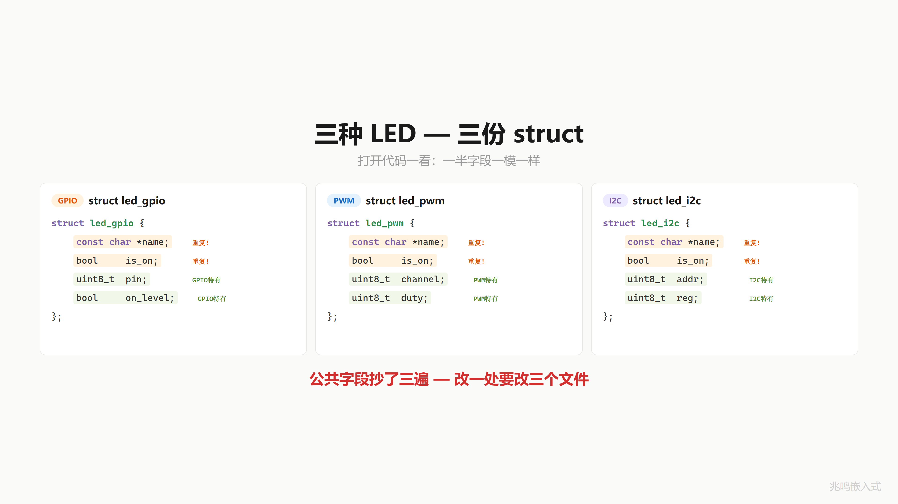
6.3 提公因式
这个痛点你小学就会解。
数学课上老师讲过：3a + 3b + 3c = 3(a + b + c)。前面那个 3 重复了三次，提到括号外面，写一遍。
代码里一模一样。八种 LED 都有 name + is_on，那就把这两个共有字段提到一个新的 struct 里：
struct led_base {
const char *name; /* 给日志打印用，例如 "red" */
bool is_on; /* 当前开关状态 */
};
name 和 is_on 是所有 LED 都共有的“状态层“信息。pin / channel / addr 这些是各种 LED 的“硬件参数“，不在 base 里。
然后每种 LED 的 struct 第一个字段就是这个 led_base，自己的硬件字段下沉到子类：
struct led_gpio { /* GPIO 子类·pin 在这里 */
struct led_base base;
uint8_t pin;
};
struct led_pwm { /* PWM 子类·pwm 通道在这里 */
struct led_base base;
uint8_t channel;
uint8_t duty;
};
struct led_i2c { /* I2C 子类·总线参数在这里 */
struct led_base base;
uint8_t bus;
uint8_t addr;
};
struct 里放另一个 struct，C 标准支持。这种语法叫 struct 嵌套，但你不用记这个名字。它就是把“另一张挂号单“原封不动塞进当前挂号单里，第一个位置专门留给它。
struct led_gpio 的实例在内存里这样躺：先是 base 部分（name 一个指针、is_on 一字节），紧接着是 pin。struct led_pwm 同理：先 base，再 channel + duty。
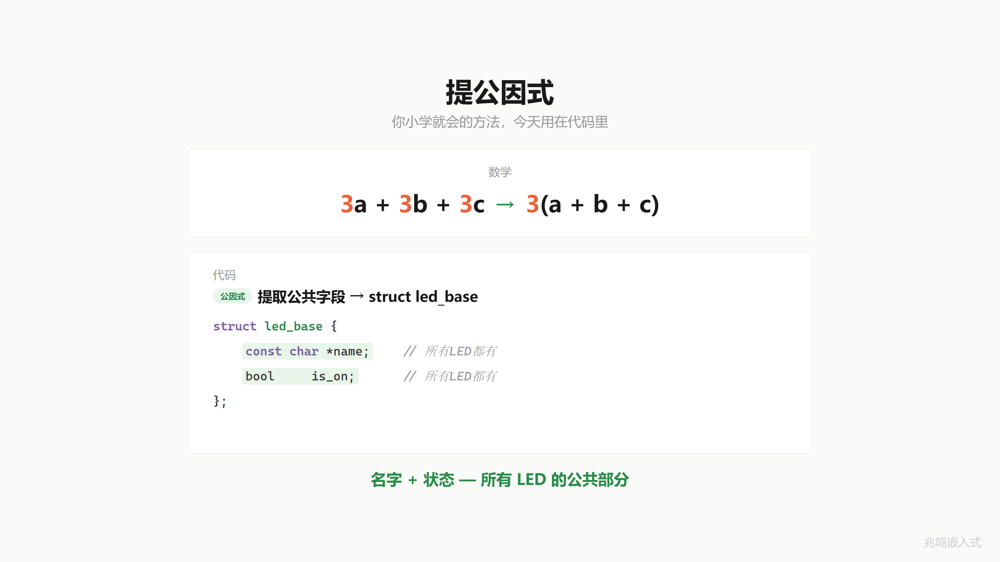
注意一件事：base 必须放在第一个位置。先别问为什么，记住这个约定。第 12 章会告诉你这一条让向上转型成为可能。
工程上为什么这样分？因为 name + is_on 是所有 LED 都共有的“状态层“信息，pin 是 GPIO 特有的“硬件参数“，分开管。基类承担“所有 LED 都需要的事“，子类承担“自己这种 LED 特有的事“。混在一起，每种子类都得继承一堆自己用不到的字段（GPIO 没有 channel、PWM 没有 pin），这就是放错地方的字段。
6.4 子类构造函数链
字段提了出来，初始化也得提。
led_base.c 里写一个 led_base_init：
int led_base_init(struct led_base *me, const char *name)
{
if (!me || !name)
return -1;
me->name = name;
me->is_on = false;
return 0;
}
凡是 base 自己能搞定的初始化（填 name、把 is_on 清成 false），它一手处理掉。注意：base 不碰 pin，因为 pin 在子类里。
子类的 init 第一行调它，再处理子类自己的字段：
int led_gpio_init(struct led_gpio *me, const char *name, uint8_t pin)
{
int rc = led_base_init(&me->base, name);
if (rc != 0)
return rc;
me->pin = pin; /* 自己的硬件参数 */
platform_gpio_init(pin, GPIO_MODE_OUTPUT);
platform_gpio_write(pin, false);
return 0;
}
int led_pwm_init(struct led_pwm *me, const char *name,
uint8_t channel, uint8_t duty)
{
int rc = led_base_init(&me->base, name);
if (rc != 0)
return rc;
me->channel = channel;
me->duty = duty;
return 0;
}
每个子类的 init 第一行都是 led_base_init(&me->base, name)。先把基类部分搞定，再处理子类自己的硬件字段。这就是 C++ 里那条隐式的“调用基类构造函数“规则，C 里你手写。
&me->base 在这里是个关键操作。me 是 struct led_gpio *，me->base 是结构体字段（类型 struct led_base），&me->base 是这个字段的地址。把这个地址传给 led_base_init，它接到一个 struct led_base *，干自己的活（填 name、清 is_on），不知道也不需要知道外层是 struct led_gpio 还是 struct led_pwm。
这种“我只看你给我的接口部分“的写法，是后面 4 章一切玩法的根。
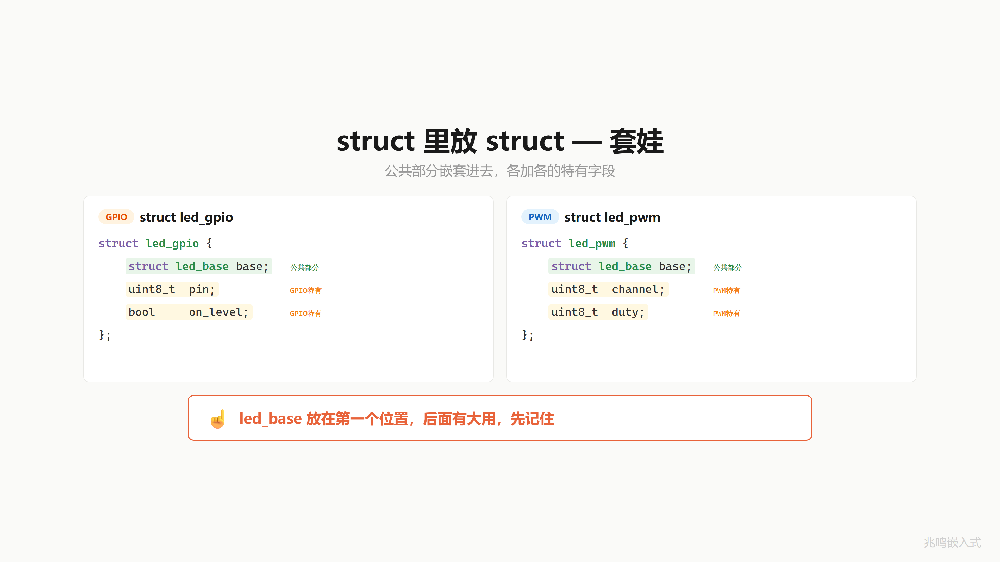
6.4.1 这一招不只是 C 的歪招
把“基类对象嵌进派生类的第一个字段“这件事，三个全球最大的 OOP-in-C 项目都用：
- Linux 内核：
struct gpio_chip嵌进struct platform_device嵌进struct device，逐层下沉 - Zephyr RTOS：
struct k_thread嵌进struct _thread_base，调度器只看 base - GObject：
GObject是所有 GTK 对象的根，每个子类把GObject parent_instance放在第一个字段
GObject 的官方教程里这一招叫 single inheritance via struct embedding（通过 struct 嵌入实现单继承）。Linux 内核里没有专门给它起名，但 Greg Kroah-Hartman 在内核驱动开发文档里反复强调“first field embedding“。这是几十亿行 C 代码验证过的工业级写法，不是教学发明。
C++ 编译器看到 class led_gpio : public led_base { ... } 时，背后做的事和你这里手写的完全一样：先放父类布局，再放子类自己的字段。你写的不是 C 的歪招，是把编译器的隐藏动作摆到了明面上。
6.5 行为也能共享
不只是数据共享。属于“所有 led_base 都需要的行为“，也写在 led_base.c，给所有子类共用：
const char *led_base_get_name(const struct led_base *me)
{
if (!me)
return "(null)";
return me->name;
}
bool led_base_is_on(const struct led_base *me)
{
if (!me)
return false;
return me->is_on;
}
调用的时候，子类用 &me->base 把基类部分递过去：
struct led_gpio red_led;
struct led_pwm blue_led;
led_gpio_init(&red_led, "red", 13);
led_pwm_init (&blue_led, "blue", 1, 0);
printf("red name = %s\n", led_base_get_name(&red_led.base));
printf("blue name = %s\n", led_base_get_name(&blue_led.base));
led_base_get_name 写一份，GPIO LED 和 PWM LED 都能用。哪天又加 I2C LED、加 SPI LED，只要 struct 第一个字段是 struct led_base，这个函数都能用。
继承的两层意义到这里都齐了：数据共享（name / is_on 字段一处定义）+ 行为共享（read 类的函数一份代码）。
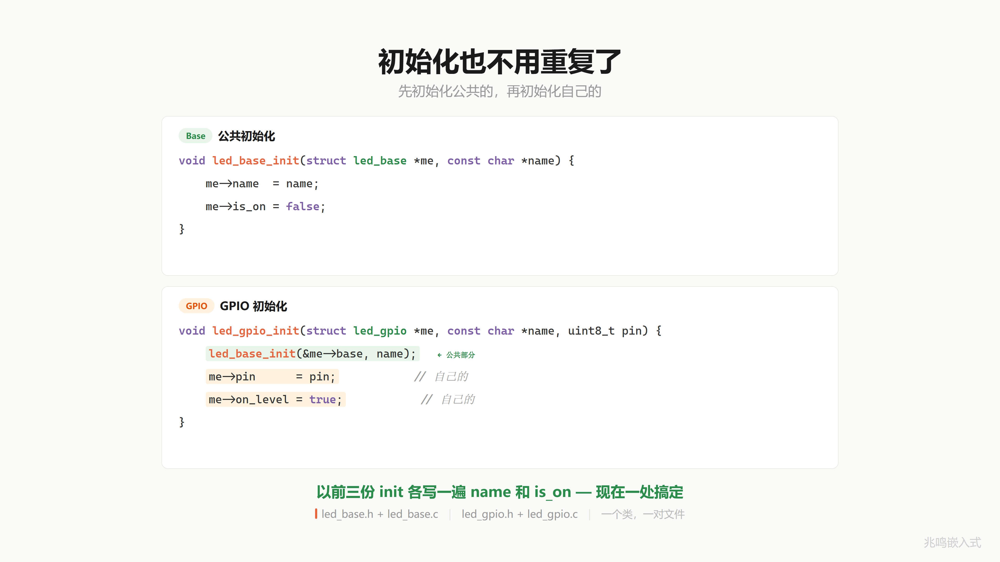
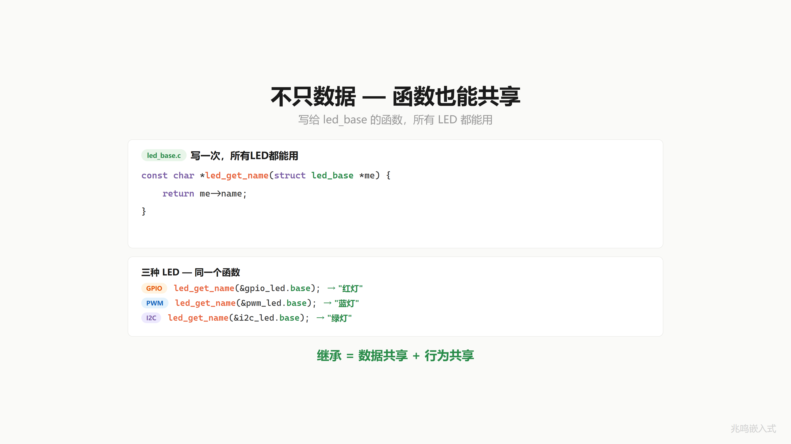
6.6 这个东西叫什么
把多个 struct 的公共字段提到一个 base struct，让每个 struct 把它嵌套进来作为第一个字段，再让基类的函数通过 &me->base 服务所有子类。
这件事软件工程里有个名字。
它叫继承（Inheritance）。
C++ 里这一套不是这么写的：
class led_base {
public:
const char *name_;
bool is_on_;
const char *get_name() const { return name_; }
};
class led_gpio : public led_base {
public:
uint8_t pin_;
};
class led_pwm : public led_base {
public:
uint8_t channel_;
uint8_t duty_;
};
class led_gpio : public led_base 这一行在底层做的事情，就是把 led_base 当作 led_gpio 实例的第一个布局成员。led_gpio 实例的内存图和你在 C 里手写的 struct led_gpio { struct led_base base; uint8_t pin; } 一字不差。
C++ 还偷偷帮你做了第二件事：调用 led_gpio g; 自动调一遍 led_base 的构造函数，再调 led_gpio 的构造函数。这就是你在 led_gpio_init 里手动调 led_base_init 的事情。编译器帮你做了。
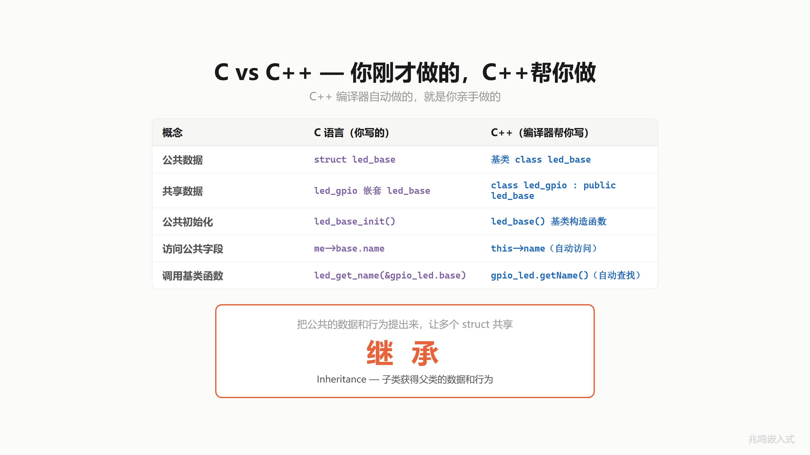
费曼讲过：被自己说服才叫理解。八种 LED 里 name + is_on 抄了八遍这个痛点你刚才认了。提公因式这个解法是你小学会的工具。把字段塞进一个 base struct + 子类嵌套 + 子类 init 第一行调基类 init，是你刚才一步一步推出来的。这就叫继承，不是从课本背的。
6.7 视频里没讲透的几个细节
6.7.1 为什么 base 必须放第一个
技术上你把 struct led_base base 放在 struct led_gpio 的第二个、第三个字段也能编译过。但有一个性质会被破坏：base 字段的地址 = 整个 struct 的地址。
C11 标准 6.7.2.1 节第 15 段保证：结构体第一个成员的偏移量是 0。所以 &gpio->base == (struct led_base *)gpio，没有任何额外加法。
如果 base 不在第一个位置，&gpio->base 等于 (uint8_t *)gpio + offsetof(struct led_gpio, base)，编译器要做一次地址加法。这件事的代价不在性能上（一次加法可以忽略），代价在向上转型上：
第 12 章你会看到，把 struct led_gpio * 直接当作 struct led_base * 传给基类函数，前提就是两者地址相同。如果 base 不在第一个位置，(struct led_base *)&red_led 这个强制类型转换就会读到错位的字段，整个驱动数据全乱。
Linux 内核、Zephyr RTOS、GObject 这三个全球最大的 OOP-in-C 项目，都把“基类放第一个“列为硬规则。Linux 内核源码里几乎每一个嵌套结构体都遵守。
6.7.2 这一章 base 服务三种 LED 子类
第 1 章到第 5 章里你的 struct led 单一类型，第 6 章这里抽出来的 struct led_base 服务三种 LED 子类（GPIO / PWM / I2C）。这个 base 是 LED 这一类设备的共用底座，不是给 Motor / EEPROM 用的。
工业代码里每一类设备都有自己的 base：led_base 给 LED 子类共用，motor_base 给 Motor 子类共用，eeprom_base 给 EEPROM 子类共用。同一类设备的不同硬件实现共享一个 base，跨类不强行共享。这样每个 base 字段都是这一类设备真正共有的，不会有“Motor 没有 is_on“这种放错地方的字段。
如果未来真的发现“所有外设设备都需要 name + last_op_time“，工程上的做法是再抽一层 device_base，让 led_base / motor_base / eeprom_base 都嵌它。Linux 内核 struct device 就是这一层。本书 ch06 到 ch11 只展开 LED 这一类，多类设备的“二级抽象“留给附录 A 三大开源项目对照里讲。
6.7.3 sub-class init 调 base init 失败要不要回滚
你写了：
int led_gpio_init(struct led_gpio *me, const char *name, uint8_t pin)
{
int rc = led_base_init(&me->base, name);
if (rc != 0)
return rc;
me->pin = pin;
platform_gpio_init(pin, GPIO_MODE_OUTPUT);
return 0;
}
led_base_init 失败就直接 return rc。但 led_base_init 如果内部申请了什么资源（一般它不会，name + is_on 是无副作用赋值；但子类的 platform_gpio_init 配过了 GPIO 后又失败的话，硬件状态已经动了）。
工业代码里的处理是：base init 失败，base init 自己负责回滚自己已经做的事（事务化）。子类 init 拿到失败码就直接 return，base 的资源 base 自己关心。
如果你写的 led_base_init 内部不是事务化的，那子类 init 失败时还要写一段 cleanup goto。这本书后面遇到这种情况会注明。这一章的 base init 都很简单（无副作用赋值，失败就 NULL 检查后立刻 return），不展开讲。
6.7.4 嵌套 struct 的内存布局
struct led_gpio 的内存图（32 位 ARM）：
offset field
0 base.name (4 byte 指针)
4 base.is_on (1 byte)
/* 3 bytes padding here */
8 pin (1 byte)
/* 3 bytes padding here */
sizeof = 12
name 是 const char *，4 字节对齐；is_on 是 bool（1 字节），后面填 3 字节让 pin 自然对齐到下一个机器字。总大小 12 字节。
但如果哪天给 led_base 加一个 uint64_t last_op_time：
struct led_base {
const char *name; /* offset 0, 4 byte */
bool is_on; /* offset 4, 1 byte */
/* 3 bytes padding */
uint64_t last_op_time; /* offset 8, 8 byte */
}; /* sizeof = 16 */
struct led_gpio {
struct led_base base; /* offset 0, 16 byte */
uint8_t pin; /* offset 16, 1 byte */
/* 7 bytes padding (对齐到 8) */
}; /* sizeof = 24 */
外层 struct 也要按里层 struct 的对齐规则对齐。整个 struct led_gpio 的对齐变成 8 字节（取决于 base 里最大对齐的字段）。
在 RAM 紧张的 MCU 上，给基类加一个 uint64_t 字段会让所有子类的 sizeof 跳一截。这是真实工程里争“该不该把这个字段下沉到 base“时的常见考量。
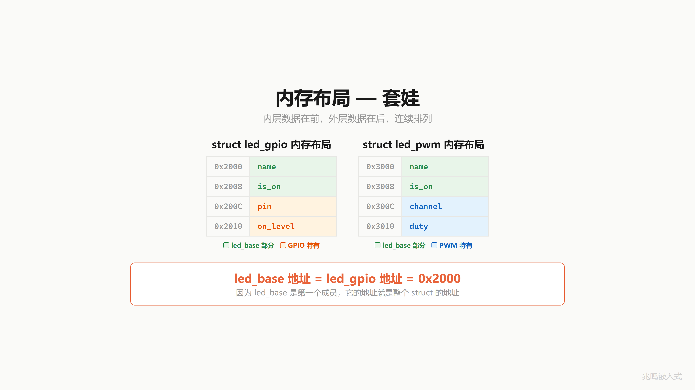
6.7.5 为什么不直接 (struct led_base *)&red_led
C 里另一种写法是：
led_base_get_name((struct led_base *)&red_led);
这能编过，因为 &red_led 是 struct led_gpio *，强转成 struct led_base *。又因为 base 在第一个位置，(struct led_base *)&red_led 和 &red_led.base 指向同一个地址。
这两种写法做的事情一样。区别在可读性和类型安全：
&red_led.base显式说“我要的是 base 部分“，类型是编译器算出来的，不会写错(struct led_base *)&red_led是强制类型转换，告诉编译器“闭嘴信我“，万一哪天 base 不在第一个位置（被人改了 struct），编译器不会报错，运行时崩
Linux 内核 / GObject / Zephyr 三个项目里，第一种写法（&red_led.base）是默认风格，强转只在 container_of 这种“反方向找回外层“的场景里用。第 13 章会看到。
6.7.6 组合 vs 继承
继承不是唯一的复用手段。另一个手段叫组合（composition）。
两者的关系语义不同：
- 继承：A is-a B（A 就是一种 B）。
led_gpio is-a led_base。 - 组合：A has-a B（A 持有一个 B）。
fan_ctrl has-a pwm_channel（风扇控制器持有一个 PWM 通道）。
继承在 C 里的写法你这一章学过，把父类 struct 嵌进子类的第一个字段：
struct led_gpio {
struct led_base base; /* led_gpio is-a led_base */
uint8_t pin;
};
组合在 C 里有两种合法实现，差别在生命周期和所有权。
第一种是持有实例（值成员），最纯正的 has-a 形态：
/* 风扇控制器持有一个 PWM 通道·实例 */
struct fan_ctrl {
struct pwm_channel pwm; /* fan has-a PWM·随 fan 一起出生死亡 */
uint8_t level;
};
void fan_ctrl_set_speed(struct fan_ctrl *me, uint8_t pct)
{
pwm_channel_set_duty(&me->pwm, pct);
me->level = pct;
}
pwm 字段直接是 struct pwm_channel 的实例，分配 fan_ctrl 时 pwm 也一起分配，释放 fan_ctrl 时 pwm 也一起释放。fan_ctrl 独占这个 pwm，别人不能共享。这是组合（composition）的标准教材形态。Java 里 class Car { private Engine engine = new Engine(); }、Linux 内核里 struct workqueue_struct { struct mutex mutex; ... } 都是这一形态。
第二种是持有指针（引用成员）：
struct fan_ctrl {
struct pwm_channel *pwm;
uint8_t level;
};
注意：指针成员本身分不清是组合还是聚合，要看 owner 是否负责 part 的创建和销毁。看代码才能定性。
如果 fan_ctrl 自己 malloc / free 这块 pwm，仍然是组合：
int fan_ctrl_init(struct fan_ctrl *me)
{
me->pwm = malloc(sizeof(struct pwm_channel));
if (!me->pwm)
return -1;
pwm_channel_init(me->pwm);
return 0;
}
void fan_ctrl_destroy(struct fan_ctrl *me)
{
pwm_channel_deinit(me->pwm);
free(me->pwm); /* fan_ctrl 析构时释放 part */
}
这种“指针实现的组合“在嵌入式 RAM 紧张时少见（裸机不爱动态分配），Linux 用户态业务模块里常见。
如果 pwm 由别人创建、fan_ctrl 只借用，析构时不释放，那才是聚合（aggregation）：
void fan_ctrl_init(struct fan_ctrl *me, struct pwm_channel *external_pwm)
{
me->pwm = external_pwm; /* 借用·不拥有 */
}
void fan_ctrl_destroy(struct fan_ctrl *me)
{
/* 不动 me->pwm·由外部负责 */
(void)me;
}
聚合是弱所有权：part 可以被多个 whole 共享，可以独立于 whole 存在。
判断标准始终是谁负责 part 的创建和销毁，而不是“成员是值还是指针“。C++ 用 std::unique_ptr<T> 表达组合（独占所有权）、用裸指针 / std::weak_ptr 表达聚合，把所有权编码进类型让编译器和读者都看得见。C 没有这层语法支持，工业代码里靠注释约定标记：
struct fan_ctrl {
struct pwm_channel *pwm; /* OWNED·fan_ctrl_destroy 负责释放 */
struct logger *log; /* BORROWED·外部生命周期 */
};
OWNED 是组合，BORROWED 是聚合。Linux 内核里同套写法常用 kerneldoc 注释里写明 Lifetime: 字段说清楚。
注意：组合的“持有实例“跟继承的“嵌入父类“在 C 里写起来很像，都是直接把另一个 struct 当字段嵌进来。区别在语义：
/* 继承：led_gpio is-a led_base·向上转型成立 */
struct led_gpio {
struct led_base base;
uint8_t pin;
};
struct led_base *p = &gpio.base; /* OK·led_gpio "就是" led_base */
/* 组合：fan_ctrl has-a pwm_channel·向上转型不成立 */
struct fan_ctrl {
struct pwm_channel pwm;
uint8_t level;
};
struct pwm_channel *p = &fan.pwm; /* OK·但只是访问 part·fan 不"是"PWM */
代码长得几乎一样，但调用方式不同：继承允许把 &gpio.base 当 led_base * 整体替换使用（向上转型）；组合不行，应用层只能调 fan_ctrl_xxx(&fan, ...) 这种壳子函数，里面再决定怎么用 pwm 字段。
何时用继承·何时用组合：
| 场景 | 选择 | 例子 |
|---|---|---|
| N 种实现共享同一接口（多态分发） | 继承（嵌入） | led_gpio / led_pwm / led_i2c 都是 led_base |
| 一个对象用一个底层服务（生命周期绑死） | 组合（值成员） | fan_ctrl has-a pwm_channel |
| 一个对象引用一个可替换的依赖 | 聚合（指针成员） | logger has-a output_sink_t * |
工业代码经验：
- 驱动框架（同一接口·多种硬件实现）一律用继承嵌入。Linux 内核
struct cdev { struct kobject kobj; ... }、struct net_device { struct device dev; ... }，所有字符设备 / 块设备 / 网络设备全部 first-field embedding。 - 业务对象（一个模块用一组底层服务）多用组合。状态指示器持有三盏 LED 句柄，风扇控制器持有 PWM 通道 + 转速传感器，电机驱动持有 PWM + 编码器。这些场景里“X is-a Y“讲不通，“X has-a Y“才对。
GoF 设计模式书里那句被反复引用的 “Favor composition over inheritance”（优先用组合而不是继承）是 90 年代为应用层 Java / C++ 业务系统设计的。那种场景里多层继承容易导致“脆弱基类“问题（基类改一行所有子类崩）。但内核驱动这种“统一接口 + 大量芯片实现“的场景，继承（first-field embedding）才是世界标准。它解决的就是“N 家芯片 + 1 套接口“问题，没有第二个答案。
不要套教条。看场景。
6.7.7 宽继承 vs 窄继承
加多少字段进 base 也是个工程权衡。
窄继承：base 只放最少最公共的字段（你这一章的 name + is_on）。优点：base 改一次影响面小，子类灵活。缺点：基类层 API 能做的事少。
宽继承：base 放尽量多公共字段（name、is_on、最后操作时间、错误码、注册回调等）。优点：基类层 API 强，应用层只看 base 就能做很多事。缺点：base 改一次所有子类都要重新编译；某些子类用不到的字段也要带着。
工业代码里典型的折衷：base 放高频共享字段（name / is_on），硬件特定字段下到子类。Linux 内核 struct device 是个宽继承典范：里面有 50+ 字段，但都是几乎所有设备都需要的（驱动指针、电源管理、设备树节点、release 回调等）。
这一章的 struct led_base 只有 name + is_on 两个字段（窄继承演示）。第 10 章演化到 ops 表后会再加一个 ops 指针放在最前面。第 19 章工业案例里你会看到真实的 led_base 含 4-5 个字段（ops / name / is_on / 类型标签等），是工程上经过取舍后的形态。
6.7.8 应用层视角：调用方知不知道继承
调用层写：
struct led_gpio red_led;
led_gpio_init(&red_led, "red", 13);
led_on(&red_led);
应用层根本不关心 struct led_gpio 内部还嵌了一个 struct led_base。它只调 led_* 这一组对外 API（这一章的 led_on / led_off 还接 struct led_gpio *，第 11 章演化为 struct led_base * 之后应用层就只看到基类指针了）。
继承在这里不是“应用层多了一种东西要学“，是“驱动层内部少抄了一些代码“。应用层从 ch01 一字不改的核心模式（xxx_init + xxx_on）一直延续，变的只是 init 多了一个 name 参数。
这件事是这本书的底色：每一章引入一个新机制，应用层永远稳定。变的是驱动层内部如何把“重复“和“扩展“分离。这是工业代码做大也做不烂的核心。
6.8 你现在的代码在 STM32 上长什么样
STM32 端的胶水还是 ch01 那套（节选自 oop-in-c/code/06-inherit-pain/stm32-snippet/led_stm32.c）：
#include "led_gpio.h"
#include "stm32f4xx_hal.h"
void platform_gpio_init(uint8_t pin, uint8_t mode)
{
GPIO_InitTypeDef cfg = {0};
__HAL_RCC_GPIOA_CLK_ENABLE();
cfg.Pin = (uint16_t)(1U << pin);
cfg.Mode = (mode == GPIO_MODE_OUTPUT) ?
GPIO_MODE_OUTPUT_PP : GPIO_MODE_INPUT;
cfg.Pull = GPIO_NOPULL;
cfg.Speed = GPIO_SPEED_FREQ_LOW;
HAL_GPIO_Init(GPIOA, &cfg);
}
void platform_gpio_write(uint8_t pin, bool value)
{
HAL_GPIO_WritePin(GPIOA, (uint16_t)(1U << pin),
value ? GPIO_PIN_SET : GPIO_PIN_RESET);
}
注意：led_base.h、led_base.c、led_gpio.h、led_gpio.c、led_pwm.h、led_pwm.c、main.c 一字不改。
继承的所有变化都在驱动层内部。平台胶水的写法不变，因为基类抽象的是“驱动数据怎么组织“，不是“硬件怎么访问“。
本节用的还是函数式包装的 platform 抽象层，是教学简化版。真正工业级用虚函数表（ops 表）。第 11 章一步步推出 vptr 之后，会把 platform 层重构成 ops 表式。
6.9 你现在的代码在 Linux 用户态长什么样
Linux 端同理（节选自 oop-in-c/code/06-inherit-pain/linux-snippet/led_linux.c）：
void platform_gpio_write(uint8_t pin, bool value)
{
char path[64];
int fd;
snprintf(path, sizeof(path),
"/sys/class/gpio/gpio%u/value", (unsigned)pin);
fd = open(path, O_WRONLY);
if (fd >= 0) {
write(fd, value ? "1" : "0", 1);
close(fd);
}
}
胶水写法和 ch01 完全一致。led_base.c / led_gpio.c / led_pwm.c / main.c 一字不改。
同 6.8 节，这里 Linux 端的 platform 层也是函数式包装的教学简化版。第 11 章后会把它改成 ops 表式。
6.10 工业代码里的基类长什么样
工业控制板项目里，base 抽象是这样的（不是完整代码，是片段）：
/* drivers/led/led.h */
struct led_base; /* forward decl */
struct led_base {
const char *name; /* 给日志打印用 */
bool is_on; /* 当前开关状态 */
uint32_t flags; /* 真实项目里还有更多状态字段 */
};
struct led_gpio {
struct led_base base;
uint8_t pin;
bool on_level;
};
应用层声明：
extern struct led_base *green_led;
extern struct led_base *red_led;
注意几个差异：
- base 里只放所有 LED 都共有的“状态层“信息（name / is_on / flags），不放 pin
- pin 在子类
struct led_gpio里，PWM 子类有channel，I2C 子类有bus + addr - 应用层拿到的句柄是
struct led_base *（基类指针），不是某个具体子类的指针
第 3 点是这本书后面要讲的“向上转型“（第 12 章）。基类指针把所有具体类型藏起来，应用层只看到一个统一的 struct led_base *。
但骨架就是你这一章学的：子类把基类放在第一个字段，硬件特定字段下沉到子类。剩下的复杂度都是这条骨架上的演化。
6.11 跑一遍
cd oop-in-c/code/06-inherit-pain/pc
make
./demo
输出节选：
========================================
Inherit pain: name + is_on in led_base.
pin / channel live in their sub-classes.
========================================
--- Init led_gpio "red" on Pin 13 ---
[base] "red" common init done (is_on=false)
[GPIO] Pin13 init as OUTPUT
[GPIO] Pin13 -> LOW (OFF)
[GPIO] sub-class init done (pin=13)
--- Init led_pwm "blue" on channel 1 ---
[base] "blue" common init done (is_on=false)
[PWM] sub-class init done (channel=1)
--- Common base API works for both ---
red name = red, is_on=false
blue name = blue, is_on=false
led_base_init 这一行代码，给 GPIO LED 和 PWM LED 都跑了。led_base_get_name 这个函数写了一次，伺候两个子类。
完整源码见 oop-in-c/code/06-inherit-pain/。
6.12 视频回放
想听口播版的可以看 B 站这一期视频：
视频和书互相补强。视频里展开的就是 GPIO LED / PWM LED / I2C LED 三种子类共享 base，骨架与本章完全一致。
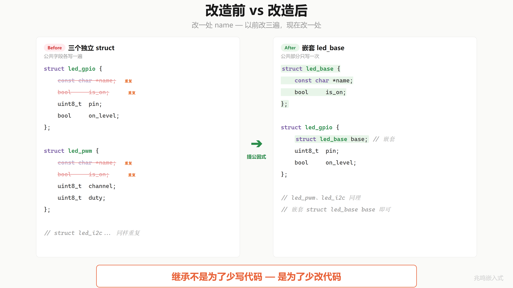
下一章
继承解决了“数据/行为的公共部分写一次“。但有一种情况它解决不了：三种 LED 的 led_on 干的活完全不一样。GPIO 灯拉引脚，PWM 灯改占空比，I2C 灯发命令。
它们的 on 不是公共行为。但你想写一个 test_led 函数，依次开、等、灭，这个 test_led 不应该关心你是哪种 LED。
下一章先解决一个小问题：怎么把“调谁“这件事不写死在代码里。
下一篇：第 7 章 · 写死的函数怎么换
第 7 章 · 写死的函数怎么换
配套代码：oop-in-c/code/07-function-pointer/
7.1 一个真实场景
第 6 章你把 name + is_on 提到了 struct led_base，子类的 init 第一行调基类 init。继承的两层意义都齐了：数据共享、行为共享。
但有些行为它继承不了。比如 led_on。
红灯接 GPIO，开灯就是把引脚拉高。蓝灯接 PWM，开灯是配占空比。绿灯走 I2C 总线，开灯是发一条命令到地址 0x50。
三种 LED 的“开灯“逻辑完全不同。你写的 led_on() 函数体里到底要不要写 platform_gpio_write？写了它，蓝灯不对；不写它，红灯不亮。
朴素的想法是写三个函数 led_on_gpio / led_on_pwm / led_on_i2c，应用层调谁取决于自己用的是哪种 LED。这就回到了 ch01 那种“加一种 LED 抄一遍“的老路。
应用层应该一直只调 led_on(&xxx)。底下走哪一支不归它操心。
7.2 朴素方案：写一个 if
最直觉的写法是给 LED 加一个 mode 字段，把所有可能的硬件参数全塞进去：
struct led_universal {
struct led_base base;
uint8_t mode; /* 0=GPIO, 1=PWM, 2=I2C */
uint8_t pin; /* GPIO 用 */
uint8_t channel; /* PWM 用 */
uint8_t i2c_addr; /* I2C 用 */
};
int led_on(struct led_universal *me)
{
if (me->mode == 0) {
platform_gpio_write(me->pin, true);
} else if (me->mode == 1) {
platform_pwm_set(me->channel, 100);
} else if (me->mode == 2) {
platform_i2c_write(me->i2c_addr, 0x01);
}
return 0;
}
能跑。但有问题。
加第四种 LED（比如 SPI 控制的 LED 矩阵），你要改两处：定义一个新的 mode 数字，往 led_on 里加一个 else if。led_off、led_set_brightness 同样要改。改的还都是 led.c 里的代码（驱动核心），出 bug 影响所有 LED。
加一种 LED 改三个核心函数，这就是绑死。改一个 mode 数字定错，所有 LED 全乱。
问题在哪？led_on 里写死了 mode 和实现的对应关系。这个对应关系不应该由 led_on 决定。
7.3 把“调谁“做成可填的字段
冷静下来问一个问题：led_on 函数体里那一行 platform_xxx_write 到底是什么？
它是一段代码。每段代码编译完成后，都有一个内存地址。platform_gpio_write 函数有它自己的地址，platform_pwm_set 也有自己的地址。
地址是个数字，数字能存在变量里。
那能不能在每种 LED 子类里加一个字段，用来存“开灯这段代码的地址“？
struct led_gpio {
struct led_base base;
uint8_t pin;
int (*on_func)(struct led_gpio *me); /* 存"开灯怎么做"的地址 */
};
struct led_pwm {
struct led_base base;
uint8_t channel;
uint8_t duty;
int (*on_func)(struct led_pwm *me); /* PWM 子类自己的 */
};
int (*on_func)(struct led_gpio *me) 这一行的意思是：on_func 是个变量，它存的是一个函数的地址。这个函数接受一个 struct led_gpio * 参数，返回 int。
GPIO LED 创建的时候填 gpio_on_pull_high 这个函数的地址。PWM LED 创建的时候填 pwm_on_full_duty。
led_on() 自己长这样（按子类分别写一份；ch11 会演化为统一接口）：
int led_gpio_on(struct led_gpio *me)
{
if (!me || !me->on_func)
return -1;
return me->on_func(me);
}
调谁？me 自己说。led_gpio_on 这个函数从此一行不改。

7.4 函数也有地址
变量有地址你已经习惯了。int a; 这个变量在内存里某个位置躺着，&a 取它的地址。
函数呢？函数编译完是一段机器码，存在程序的代码段（text section）里。一段机器码的起点也是个地址。gpio_write 这个函数有自己的起点地址，可能是 0x08001234，pwm_set 在另一个地址 0x08002A00。
C 语言里，函数名出现在表达式里时，会自动退化成“这个函数的地址“（C99 标准 6.3.2.1 节第 4 段）。所以：
red_led.on_func = gpio_on_pull_high; /* 函数名不带括号, 取地址 */
red_led.on_func(&red_led); /* 函数名加括号, 拨号执行 */
不带括号是号码（地址），加括号是拨号（执行）。和你给朋友发短信存号码、然后按通话键拨号是一样的两步。
&gpio_on_pull_high 也合法（显式取地址），(*red_led.on_func)(&red_led) 也合法（显式解引用），但 C 标准允许你两边都省略 & 和 *，所以工业代码里几乎都是简洁版。

7.5 换号码 vs 改实现
旧写法（mode + if-else）：加一种 LED，改 led_on / led_off / led_set_brightness 三个核心函数。
新写法（函数指针字段）：加一种 GPIO LED 子型号（比如有的拉高点亮、有的拉低点亮），写一个新的 int gpio_on_xxx_style(struct led_gpio *me)，创建实例时把它填进 on_func 字段。led_gpio_on 这个函数一行不改。
int gpio_on_pull_low(struct led_gpio *me) /* 低有效，新加 */
{
platform_gpio_write(me->pin, false);
me->base.is_on = true;
return 0;
}
struct led_gpio matrix_led;
led_gpio_init(&matrix_led, "matrix", 8, gpio_on_pull_low); /* 填进去就完事 */
驱动核心代码（led_gpio_on 内部）从此和“具体走哪一支“完全解耦。不管你加几种点亮电平，led_gpio_on 一行不改。
这就是软件工程里反复念的那句话：“对扩展开放，对修改关闭。“加新功能不需要改老代码。led_gpio_on 是老代码，它对修改关闭；通过填一个新函数指针，行为对扩展开放。

7.6 这个东西叫什么
你刚才做的事：给 struct 加一个变量，这个变量存某个函数的地址，需要的时候通过这个变量调用函数。
软件工程里有个名字。它叫函数指针（function pointer）。
C++ 里这件事一字不改：
class led_gpio {
public:
int (*on_func_)(led_gpio *me); /* 一模一样的函数指针字段 */
};
C++ 的 lambda、std::function、virtual 函数底层都是函数指针。C++ 给你包了几层语法糖，让写法更简洁，但骨头没换。你这一章写的就是 C++ 虚函数底层做的事。
第 11 章你会看到，把“对每个对象绑一组函数指针“这件事系统化，就是面向对象的多态。

7.7 视频里没讲透的几个细节
7.7.1 函数指针变量到底占几个字节
sizeof(int (*)(struct led *)) 在 32 位 ARM Cortex-M 上是 4 字节，在 64 位 PC / ARM 上是 8 字节。和数据指针一样大。
但有一个坑：C 标准没有保证函数指针和数据指针大小相同。C99 标准 6.3.2.3 节把 “function pointer ↔ object pointer” 强转列为未定义行为。在常见架构（ARM / x86 / RISC-V）上两者大小一致，跨架构移植代码也都这样假设。但有些 Harvard 架构（早期 8051、AVR）上代码段和数据段地址空间分开，函数指针可能比数据指针大或小。
工业代码里如果遇到 8051 这种古董，要查 datasheet 决定怎么处理。在主流嵌入式平台（STM32、ESP32、Linux SBC）上不用纠结。
7.7.2 调用一次函数指针的代价（直接 vs 间接）
直接调用一个普通函数（编译期就知道跳哪）：
BL led_on_gpio_style ; 直接跳转到链接期已知地址 (3 cycle)
间接调用（运行时才知道跳哪，函数指针存在变量里）：
LDR r3, [r4, #offset] ; 从 me->on_func 读地址 (3 cycle, 命中 D-cache)
BLX r3 ; 间接跳转 + 写 Link Register (3 cycle)
差别两件事：
- 多一条 LDR：要先把函数地址从内存 load 到寄存器
- 跳转代价不同：直接 BL 编译期 ROM 化，CPU 可以推测执行（branch prediction）；间接 BLX 必须等 r3 的值出来才知道跳哪，对 CPU pipeline 不友好
ARM Cortex-M4（无分支预测器）上两者差距小，约 1-2 个周期。但 Cortex-A 系列（Linux 跑的那种）有完整 branch prediction，间接调用如果 BTB（Branch Target Buffer）没命中，损失可能达到 10+ 周期。
实测：ARM Cortex-M4 @ 168MHz 一次间接调用约 28 ns，168 MHz 下大约 5 个时钟周期。日常驱动调用频率（开关灯每秒几十次到几百次）这点开销完全可以忽略。但要避开几个雷区：
- 中断处理函数（ISR）的关键路径：每个 ns 都要算
- PWM 高频更新：微秒级时序，间接调用的 jitter 会影响波形质量
- 超低功耗 MCU 的 hot loop：M0 没有分支预测，每次间接调用是固定开销，循环 1000 次就是 1000 倍
C++ virtual 函数调用就是这个开销。Stroustrup 那句“零成本抽象“在虚函数这里要打个小折扣（间接跳转 + 编译器没法 inline 虚调用），但这是工程上完全可接受的代价。Linux 内核里 fast-path（中断 + softirq）大量避开虚调用走直接函数，但 slow-path（设备驱动注册、open/read/write 慢路径）几乎全是 ops 表 dispatch。这个分界线是 Linus 反复强调的。
7.7.2.1 函数指针 vs 普通函数：反汇编对比
两段 C 代码：
/* 直接调用 */
int led_on_direct(struct led *me)
{
return led_on_gpio_style(me);
}
/* 间接调用 */
int led_on_indirect(struct led *me)
{
return me->on_func(me);
}
godbolt 上用 arm-none-eabi-gcc -O2 编译，分别得到（简化）：
led_on_direct:
B led_on_gpio_style ; 一条 tail-call branch
led_on_indirect:
LDR r3, [r0, #4] ; r3 = me->on_func
BX r3 ; tail-call jump
led_on_direct 在链接期就知道跳哪，编译器直接生成一条无条件跳转；led_on_indirect 必须先 load 才能跳。这就是“运行时绑定“在汇编层面的具体形态。
7.7.3 NULL 函数指针检查必须做
int led_on(struct led *me)
{
if (!me || !me->on_func)
return -1;
return me->on_func(me);
}
如果 me->on_func == NULL 直接调用，就是“跳到地址 0 执行“。在 ARM Cortex-M 上地址 0 是向量表起点（一段非代码数据），跳过去执行的不是代码，结果不是 HardFault 就是跑飞。在 Linux 用户态收到 SIGSEGV，core dump。
工业代码里所有函数指针调用前都要 NULL check。第 14 章会专门讲“函数指针没填“这件事的三种处理策略：报错、空实现、Linux 内核风格的 stub 函数。
7.7.4 函数指针字段在 struct 里的位置
on_func 现在放在 struct led_gpio 的最后。这个位置不影响功能，但影响内存布局（32 位 ARM）：
struct led_gpio {
struct led_base base; /* offset 0, 8 bytes (name 4 + is_on 1 + pad 3) */
uint8_t pin; /* offset 8, 1 byte */
/* offset 9, 3 bytes padding */
int (*on_func)(struct led_gpio *); /* offset 12, 4 bytes */
}; /* sizeof = 16 */
函数指针的对齐是机器字长（4 或 8 字节），所以前面 1 字节字段后会有 padding。如果你在 RAM 紧张的 MCU 上想压榨内存，可以把对齐大的字段往前挪：
struct led_gpio {
int (*on_func)(struct led_gpio *); /* offset 0, 4 bytes (对齐 4) */
struct led_base base; /* offset 4, 8 bytes */
uint8_t pin; /* offset 12, 1 byte */
/* offset 13, 3 bytes padding */
}; /* sizeof = 16, 一样 */
这里 sizeof 没省。但如果再多两个 1 字节字段，调整后能省 8 字节。
但代价是 base 不在第一个位置了。基类向上转型就崩。所以工业代码里 base 永远第一，函数指针在后面。这是性能和向上转型机制之间的取舍，向上转型机制赢。
7.7.5 为什么用 typedef 简化函数指针类型
int (*on_func)(struct led_gpio *me) 写起来有点丑。如果 struct 里有 5 个函数指针：
struct led_gpio {
struct led_base base;
uint8_t pin;
int (*on_func)(struct led_gpio *);
int (*off_func)(struct led_gpio *);
int (*toggle_func)(struct led_gpio *);
int (*set_brightness_func)(struct led_gpio *, uint8_t);
int (*get_state_func)(struct led_gpio *);
};
读起来累。第 9 章会引入 typedef 给函数指针起短名字：
typedef int (*led_action_fn)(struct led_base *me);
然后 ops 表里写：
struct led_ops {
led_action_fn on;
led_action_fn off;
led_action_fn toggle;
};
整个一章都讲这件事，所以本章先不用 typedef。
7.7.6 函数指针存在哪：text 段 vs 数据段
C 程序编译后大致分这几段（ELF 可执行格式）：
| 段 | 内容 | 权限 |
|---|---|---|
.text | 函数机器码 | r-x（可读可执行不可写） |
.rodata | 常量数据，比如 const 全局对象 | r–（只读） |
.data | 已初始化的可变全局变量 | rw-（可读写） |
.bss | 未初始化的全局变量 | rw-（运行时清零） |
gpio_on_pull_high 这个函数的机器码躺在 .text 段，地址在链接期就定了（在 STM32 上一般是 0x08001234 这种 Flash 地址）。
me->on_func 这个字段是 struct led_gpio 实例的一部分，住在 .data / .bss / 栈或堆里（取决于这个 led 怎么定义的）。
把函数地址赋给字段：
red_led.on_func = gpio_on_pull_high;
这一行等价于把 .text 里某段代码的起点地址（一个常量）写进 .data 段（如果 red_led 是全局变量）。运行时调用 me->on_func(me) 就是读字段、跳到 text 段、执行那段机器码。
ARM Cortex-M 上还有一个细节：函数地址的最低位是 Thumb 位。Thumb 指令集的函数地址都加 1（最低位置 1），处理器根据这一位决定切到 ARM 还是 Thumb 模式执行。所以 printf("%p", gpio_on_pull_high) 你看到的可能是 0x08001235 而不是 0x08001234，最低那个 5 不是地址错位，是 Thumb 标志。BLX 指令会自动剥离这一位再跳。这是 ABI 规定，不是你的 bug。
7.7.7 ABI：函数指针调用如何传参
ARM EABI（Embedded Application Binary Interface）规定参数怎么传：
| 参数槽 | 寄存器 | 备注 |
|---|---|---|
| 第 1 个 | r0 | me 走这里 |
| 第 2 个 | r1 | brightness 等 |
| 第 3 个 | r2 | |
| 第 4 个 | r3 | |
| 第 5+ | 栈 | 按字对齐 |
| 返回值 | r0 | int / 指针 |
间接调用 me->on_func(me) 编译出来：
LDR r3, [r0, #4] ; r3 = me->on_func, 假设 on_func 在偏移 4
; 这一步 r0 还保持是 me, 不能动
BLX r3 ; 间接调用. 跳过去时 r0 仍然是 me, 等价于 on_func(me)
注意一件事：r0 在间接调用前就已经是 me（参数已经在位），只用 r3 读地址。所以不需要额外 mov r0, r0。这是 EABI 让间接调用代价小的关键设计。
如果你写 me->on_func(other_obj)（传别的指针），编译器会先 mov r0, other_obj 再 BLX，多一条指令。
7.7.8 函数指针的“丑语法“为什么是这样
int (*on_func)(struct led *me) 这个声明的读法是：
- 看到
*on_func：on_func 是个指针 (*on_func)(struct led *me)：on_func 是指向“接受 struct led * 参数的“的指针int (*on_func)(...)：on_func 是指向“返回 int、接受 struct led * 参数的函数“的指针
读法是从内向外。这个语法 1972 年 Dennis Ritchie 定的，那时候连结构化编程都还没占主流。后来加了 typedef 给它续命。
C99 没能改这个语法，因为改了会破坏巨量历史代码。C++11 加了 lambda + auto 让你能绕开它。Rust 用 fn(...) 类型，干净多了。
C 的丑保留下来不是因为它好，是因为它来不及改。
7.8 你现在的代码在 STM32 上长什么样
STM32 端胶水还是 ch01 那套（节选自 oop-in-c/code/07-function-pointer/stm32-snippet/led_stm32.c）：
void platform_gpio_write(uint8_t pin, bool value)
{
HAL_GPIO_WritePin(GPIOA, (uint16_t)(1U << pin),
value ? GPIO_PIN_SET : GPIO_PIN_RESET);
}
led.h / led.c / main.c 一字不改。函数指针字段加在 struct led 里，所有平台胶水都看不见这件事。
一个真实场景：同一颗 LED 在调试模式下用 gpio_style（按下按钮立刻亮），量产模式下用 pwm_style（按 brightness 调光）。出厂烧录时填哪个 on_func 决定行为，不需要重新编译 led.c。
本节用的还是函数式包装的 platform 抽象层，是教学简化版。第 11 章后会演化成 ops 表式。
7.9 你现在的代码在 Linux 用户态长什么样
Linux 端 sysfs 实现（节选自 oop-in-c/code/07-function-pointer/linux-snippet/led_linux.c）：
void platform_gpio_write(uint8_t pin, bool value)
{
char path[64];
int fd;
snprintf(path, sizeof(path),
"/sys/class/gpio/gpio%u/value", (unsigned)pin);
fd = open(path, O_WRONLY);
if (fd >= 0) {
write(fd, value ? "1" : "0", 1);
close(fd);
}
}
led.h / led.c / main.c 一字不改。同 7.8 节，platform 层是教学简化版，第 11 章后会改成 ops 表式。
7.10 工业代码里的函数指针字段
工业控制板项目里，每个驱动 struct 都有几个函数指针字段，用来给应用层注册“事件回调“。这一节只贴跟“函数指针字段“相关的部分，工业版 led_base 的完整字段集（含 ops 指针、flags 等）见 ch01 1.10 节、ch10 10.11 节、ch11 11.9 节：
struct led_base {
/* 跟回调相关的字段 (本节焦点) */
const char *name;
bool is_on;
void (*on_state_change)(struct led_base *me, bool new_state);
/* ... 其他工业字段见 ch01 1.10 / ch10 10.11 / ch11 11.9 */
};
on_state_change 是一个回调字段。当 LED 状态变化时（比如温度报警触发自动闪烁），驱动会调用这个回调通知应用层。应用层注册的回调可以是“打日志“、“发到上层主控”，等等。
这种写法的本质就是你这一章学的：在 struct 里塞一个函数指针字段。下一章看怎么把函数指针当作参数从外面传进去（注册），把这个机制变成完整的回调系统。
7.11 跑一遍
cd oop-in-c/code/07-function-pointer/pc
make
./demo
输出节选：
--- Init red_led with pull-high on_func ---
[base] "red" common init done
[GPIO] Pin13 init as OUTPUT
[GPIO] Pin13 init done, on_func=pull_high
--- Init green_led with pull-low on_func ---
[base] "green" common init done
[GPIO] Pin14 init done, on_func=pull_low
--- led_gpio_on(&red_led) -> pull_high ---
[GPIO] Pin13 -> HIGH (ON)
[GPIO] Pin13 ON (pull_high)
--- led_gpio_on(&green_led) -> pull_low ---
[GPIO] Pin14 -> LOW (ON, active-low)
[GPIO] Pin14 ON (pull_low)
--- swap red_led on_func at runtime to pull_low ---
[GPIO] Pin13 ON (pull_low)
led_gpio_on 这一行函数从头到尾没改。换 on_func 就换实现。运行时也能换（最后那段把 red_led 从 pull_high 切到 pull_low）。
完整源码见 oop-in-c/code/07-function-pointer/。
7.12 视频回放
想听口播版的可以看 B 站这一期视频：

视频里用通讯录类比讲函数指针：函数名是号码，不带括号是取号码，加括号是拨号。书里把这个类比延伸成“红灯填一个号码（gpio_style），蓝灯填另一个号码（pwm_style）“。
下一章
你现在能把“调谁“塞进 struct 字段了。但有一个限制：必须先创建 struct 实例、再填 on_func，才能 led_on。如果有一个工具函数 test_led(struct led *me)，里面想调“开 → 等 → 关“三步，它该怎么知道用哪个 on？
直觉是：让调用方告诉它。函数指针不光能塞进 struct，还能当参数传。
下一篇：第 8 章 · 把号码给别人拨
第 8 章 · 把号码给别人拨
配套代码：oop-in-c/code/08-callback/
8.1 一个真实场景
第 7 章你把“调谁开灯“塞进了 struct led 的 on_func 字段。led_on(&red_led) 内部走 me->on_func(me)，运行时决定。
但有一种情况它解决不了。
你写一个 test_led 工具函数，要做的事是：开 → 等 → 关，三步。这个函数应该不挑 LED：传谁的 LED 实例进来，它都能跑完三步。
按 ch07 的写法，test_led(struct led *me) 内部调 led_on(me); led_off(me);，确实和 LED 类型解耦。但你想加一个新需求：测试时不用 me->on_func 字段里那个常驻的实现，而是临时换一个调试版的 on（比如 on 之前先打一行 log）。
让 test_led 临时换 on，怎么换？
直觉一：mutate me->on_func，跑完测试再换回来。一行写错就把生产代码的 on 字段污染了，下一次正常调用 led_on 就乱套。
直觉二：让 test_led 接受一个额外的参数，告诉它“这次测试用这个 on，不用 me 字段里的“。
这就是函数指针当参数。
8.2 函数指针当参数
test_led 的签名长这样：
int test_led(struct led_base *me,
int (*on)(struct led_base *me),
int (*off)(struct led_base *me));
第二个参数 int (*on)(struct led_base *me) 不是字段、不是 typedef，就是一个普通参数，类型是函数指针。
函数体里：
int test_led(struct led_base *me,
int (*on)(struct led_base *me),
int (*off)(struct led_base *me))
{
if (!me || !on || !off)
return -1;
on(me); /* 调谁? 调用方传进来的 on */
/* delay or hold */
off(me);
return 0;
}
test_led 自己不知道调谁，调用方告诉它。
调用方：
test_led(&red_led.base, gpio_on_pull_high, gpio_off);
test_led(&blue_led.base, pwm_on_full_duty, pwm_off);
红灯走 gpio_on_pull_high，蓝灯走 pwm_on_full_duty。同一个 test_led 函数，传不同函数指针进去，行为完全不同。
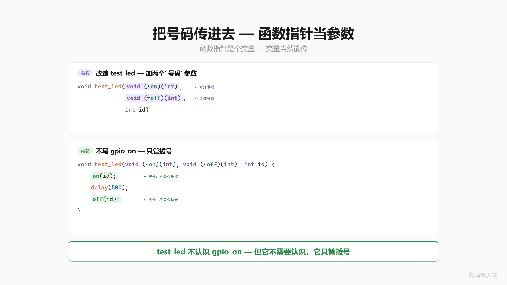
子类的 on_func 字段被 test_led 完全旁路了。生产代码的字段不动，测试代码用自己临时传进去的 on。
8.3 一个具体场景：给 LED 注册回调
把“函数指针当参数“用到极致的一个场景是回调注册。
你的应用层想知道：每次 LED 开关时，自动做一些事。比如：
- 主控板把 LED 状态发到 CAN 总线
- 调试时把 LED 状态打到 UART 日志
- 测试夹具记录 LED 的开关次数到统计表
这些事 led.c 不应该知道。led.c 只管开关 LED。但应用层想被通知。
注册一个回调：
typedef void (*led_state_cb)(struct led_base *me, bool new_state);
int led_register_state_cb(struct led_base *me, led_state_cb cb);
应用层把自己的函数地址递给 led_register_state_cb。led_base.c 把它存起来。下一次 led_on() / led_off() 内部状态改完，调一下这个回调通知应用层。
static void log_state_change(struct led_base *me, bool new_state)
{
printf("LED %s became %s\n", me->name,
new_state ? "ON" : "OFF");
}
led_register_state_cb(&red_led.base, log_state_change);
/* 后面任何一次 led_on/off, log_state_change 都会被自动调到 */
led.c 不知道有人在监听。它只调它存好的函数指针。监听方是谁、它要做什么，led.c 一无所知。这就是回调机制：底层模块通过预留的函数指针，把控制权临时交还给上层模块。
软件工程里这叫好莱坞原则：“Don’t call us, we’ll call you.”（别打电话给我们，我们会打给你。）
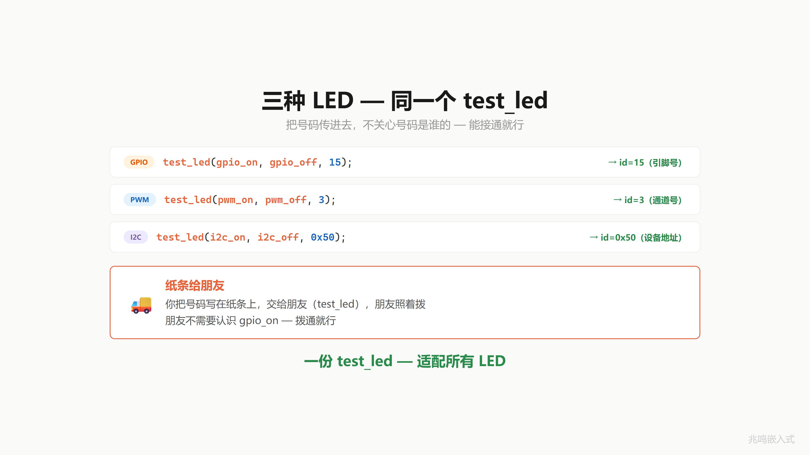
8.4 typedef 给函数指针起短名字
int (*on)(struct led *me) 这个类型每次写一遍太累。第 9 章会大量用 typedef 给函数指针起名字，本章先小试：
typedef void (*led_state_cb)(struct led *me, bool new_state);
这一行的意思：定义一个类型别名 led_state_cb，它代表“接受 struct led *me + bool new_state、返回 void 的函数指针“。
之后 led_state_cb foo; 等价于 void (*foo)(struct led *me, bool new_state);。但读起来短。
led_register_state_cb 的签名变成：
int led_register_state_cb(struct led *me, led_state_cb cb);
整洁多了。下一章会成系统地用这个手段。
8.5 这个东西叫什么
把函数指针当参数传给另一个函数，让被调函数在内部“反过来调你给它的函数“，软件工程里有个名字。
它叫回调（callback），也叫策略模式（Strategy pattern）的最朴素形态。
C++ 里这件事写法和 C 完全一样：
int test_led(led_base *me,
int (*on)(led_base *), int (*off)(led_base *));
C++ 还提供 std::function、lambda 表达式作为更高级的封装：
test_led(&red_led,
[](led_base *me) { return me->on(); },
[](led_base *me) { return me->off(); });
骨头是一样的：传一段代码给别人执行。lambda 是糖衣，没换药。
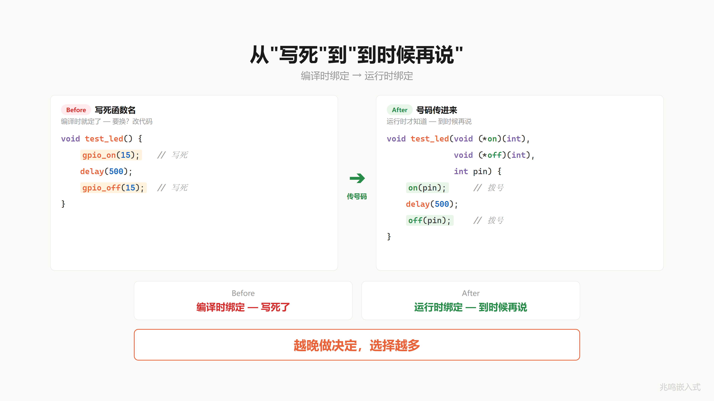
8.6 视频里没讲透的几个细节
8.6.1 编译时绑定 vs 运行时绑定
老写法（ch01 的 led_on 直接调 platform_gpio_write）：编译器看到调用，写死跳到 platform_gpio_write 的地址。函数地址在 .text 段链接时就定了。这叫编译时绑定（early binding / static binding）。
新写法（函数指针参数）：编译器只生成“间接调用：从寄存器里取地址，跳“。具体跳哪取决于运行时传进来的参数。这叫运行时绑定（late binding / dynamic binding）。
OOP 三大特性里多态的本质就是运行时绑定。第 11 章你会看到，把“通过函数指针调用“系统化（每个对象绑一组函数指针，统一从对象里取），就是 vptr + vtable + dispatch 的完整多态机制。
8.6.2 回调地狱与避免方法
回调用得太爽会出现回调地狱：
led_register_state_cb(&red_led, on_red_change);
on_red_change() {
send_to_can(...);
on_can_send_done() {
log_to_flash(...);
on_flash_write_done() {
notify_main_loop(...);
...
}
}
}
每一层都有回调，控制流跨多个文件来回跳，调试时栈帧追不到源头。
工业代码里的处理：
- 一个事件一个回调，不嵌套（每个回调自己短，做一件事）
- 回调里只发消息到队列，不直接干活，主循环统一处理（解耦时序）
- 状态机化：回调触发状态迁移，状态机统一调度
第 19 章工业代码案例会展开。
8.6.2.1 回调可能在什么上下文里跑（IRQ vs 任务）
写回调时第一个要问的问题：这个回调谁来调，在什么上下文里跑。
工业代码里回调的触发上下文典型有三种：
| 触发源 | 上下文 | 限制 |
|---|---|---|
| 任务/主循环里同步触发 | 任务上下文 | 几乎没限制，能阻塞、能 printf、能调标准库 |
| 定时器中断 | IRQ 上下文 | 不能阻塞、不能调任何会休眠的 API、栈很小 |
| DMA 完成中断 | IRQ 上下文 | 同上 + 还要警惕 cache 一致性 |
LED 状态变化回调，如果 led_on() 是被任务调的，回调跟在任务里跑，没事。
但如果 led_on() 是被 GPIO 中断调的（比如按钮按下触发 led_on），那回调就跑在 IRQ 上下文。这时候在回调里写 printf 很可能死锁（printf 内部用 mutex 保护 stdout，IRQ 抢 mutex 失败就一直转）。在 RTOS 上写 osDelay() 直接 panic。
工业代码硬规则：
- 回调注册的文档里必须说明触发上下文。注册接口的注释写“this callback may run in IRQ context, do not block“
- IRQ 触发的回调里只做最小的事：写一个标志位、给一个信号量、push 到 lock-free 队列。重活留给任务做
- 跨上下文同步用 atomic / 关中断：回调在 IRQ 里更新一个状态字段，任务读它要么用 atomic，要么用关中断
Linux 内核里这个分界线特别严格：注册的 callback 函数命名末尾经常带 _irq、_softirq、_threaded 标签，提示触发上下文。第 19 章工业案例里你会看到主控板的 LED 状态回调一律是“IRQ 设标志位 + 主循环统一处理“两段式。
8.6.2.2 注册期 vs 触发期的竞态
回调字段 me->on_state_change 存在 RAM 里的某个字段。两件事并发发生时会出问题：
/* 任务 A 在某一时刻撤销回调 */
red_led->on_state_change = NULL;
/* 同一时刻 ISR 触发，准备调回调 */
if (red_led->on_state_change)
red_led->on_state_change(red_led, new_state);
任务 A 在 if 之后、调用之前那个 ns 把字段设成 NULL，ISR 已经过了 if 不知道，跳到了 NULL，HardFault。
这是经典的 TOCTOU（time-of-check-to-time-of-use）竞态。工业代码三种处理，按推荐顺序：
- 永不撤销（工业代码 90% 是这种）：启动期 INIT_DEVICE_EXPORT / INIT_ENV_EXPORT 一次性把回调字段填好，运行期再不改。读永远安全，写不存在。Linux 内核
file_operations注册后基本不动，绝大多数 RTOS 驱动也是同款思路 - 回调字段做成 atomic 读写：必须支持运行期改回调时用。C11
_Atomic或 GCC__atomic_*内建函数。读写都是单条指令，IRQ 不会切到半路 - 整个注册接口走任务上下文 + 关中断：连 atomic 都拿不到时的暴力 fallback。简单粗暴但有 IRQ 抖动，热路径慎用
ch08 的 demo 用第 3 种是为了演示“注册“这件事本身（PC 上没有真 ISR 上下文，谈不上竞态）。真实嵌入式工业代码绝大多数是第 1 种：启动期一次配置，运行期不动。第 19 章工业案例里就是这个形态。
8.6.3 回调函数的上下文（user_data）
有时候回调需要“我之前注册的时候带的某个上下文“。比如：
void on_change(struct led_base *me, bool new_state)
{
/* 我想知道注册时的 priority 是什么 */
}
但回调签名里只有 me 和 new_state。怎么把 priority 传进来？
工业写法：注册接口加一个 void *user_data：
typedef void (*led_state_cb)(struct led_base *me, bool new_state, void *user_data);
int led_register_state_cb(struct led_base *me, led_state_cb cb, void *user_data);
注册时把 priority 包成一个结构体，user_data 存它的地址。回调里把 user_data 强转回原结构体，读 priority。
完整使用示意：
/* 应用层定义自己的上下文 */
struct can_log_ctx {
uint32_t can_id;
uint8_t priority;
};
static void can_log(struct led_base *me, bool new_state, void *user_data)
{
struct can_log_ctx *ctx = (struct can_log_ctx *)user_data;
can_send(ctx->can_id, ctx->priority, me->name, new_state);
}
/* 注册时挂上自己的上下文 */
static struct can_log_ctx red_ctx = { .can_id = 0x100, .priority = 5 };
led_register_state_cb(&red_led.base, can_log, &red_ctx);
led_base.c 完全不知道 can_log_ctx 的存在，它只是把 user_data 这个 void * 原封不动传回回调。应用层强转回自己的类型读字段。
Linux 内核里这个模式叫 opaque context pointer，struct file 里的 void *private_data、pthread_create 里的 void *arg、libuv 的 uv_handle_t->data 全是同一招。callback API 必须配 user_data 才算工业级，这是几十年血泪经验。
工程上还有一个约定：注册期文档里必须说明 user_data 的生命周期。常见两种契约：
- 注册方负责保活：调用方保证 user_data 指向的对象在 unregister 之前一直有效。本章演示用这种，最常见
- 注册接口拷贝：注册函数内部
malloc + memcpy一份，自己持有所有权。多见于异步任务系统，但有 alloc 开销
本章为简洁不引入 user_data，第 9 章 ops 表也暂不用，第 19 章工业代码会用到。
8.6.4 函数指针参数的对齐和栈传递
ARM EABI 调用约定：函数指针作为参数和数据指针一样大（4 字节 32 位 / 8 字节 64 位），通过 r0-r3 寄存器传递。如果参数太多溢出到栈上，按 4 字节对齐压栈。
test_led(&red_led, led_on_gpio_style, led_off) 这一调：
- r0 = &red_led
- r1 = led_on_gpio_style 的地址
- r2 = led_off 的地址
- 函数体里 r1 / r2 直接 BLX 即可
完全没有任何额外开销。函数指针传参 ≈ 数据指针传参。
8.6.5 const 函数指针 vs 函数指针 const
int test_led(struct led *me,
int (* const on)(struct led *me), /* on 是 const 指针 */
int (*off)(struct led *me));
const 加在 (* 后面，说明 on 这个变量本身不能再被赋值（参数槽不能换）。这种场景在工业代码里很少用（参数本来就是临时变量），但在结构体字段里常用：
struct led_base {
const struct led_ops *ops; /* ops 这个指针指向的内容是 const, 不允许修改 */
};
第 10 章 ops 字段会用到 const。意思是“指向常量 ops 表的指针“，不是“常量指针”。这两个 const 的位置是 C 语法里最容易绕的地方，把“const 修饰它右边的 token“这条规则记牢就不会错。
8.6.6 函数指针参数的 NULL 检查
test_led 第一行：
if (!me || !on || !off)
return -1;
me NULL check 是基础。on / off 这两个函数指针 NULL check 必不可少：调用方传 NULL 进来，on(me) 就是跳到地址 0 执行，HardFault。
工业代码的硬规则：所有函数指针调用前都做 NULL check。无论函数指针来自字段、参数还是回调注册表。
8.6.7 callback 注册的反向操作
led_register_state_cb(&red_led, log_state_change); 注册了一个回调。
什么时候撤销？应用层退出前应该撤销，否则回调指向的函数地址可能在它的模块卸载后已经无效，下一次 LED 状态变化就会跳到野地址。
工业代码里两种处理：
- 注册接口接受 NULL 表示撤销：
led_register_state_cb(&red_led, NULL); - 显式撤销接口：
led_unregister_state_cb(&red_led);
本章用第 1 种，演示在 main.c 里把 cb 设成 NULL 之后再 led_on，回调不再触发。
8.7 你现在的代码在 STM32 上长什么样
STM32 端胶水还是 ch01 那套（节选自 oop-in-c/code/08-callback/stm32-snippet/led_stm32.c）：
void platform_gpio_write(uint8_t pin, bool value)
{
HAL_GPIO_WritePin(GPIOA, (uint16_t)(1U << pin),
value ? GPIO_PIN_SET : GPIO_PIN_RESET);
}
led.h / led.c / main.c 一字不改。
一个真实场景：主控板每次开关 LED 都要把状态发到 CAN 总线给上位机看。注册一个回调：
static void can_log(struct led_base *me, bool new_state)
{
can_send_named(me->name, new_state ? 1 : 0);
}
led_register_state_cb(&red_led.base, can_log);
之后 led_on / led_off 自动把状态发到 CAN。led_base.c 不知道 CAN 存在，CAN 模块也不知道 LED 存在。中间靠这个 callback 字段连接。
本节用的还是函数式包装的 platform 抽象层，是教学简化版。第 11 章后会改成 ops 表式。
8.8 你现在的代码在 Linux 用户态长什么样
Linux 端 sysfs 实现（节选自 oop-in-c/code/08-callback/linux-snippet/led_linux.c）：
void platform_gpio_write(uint8_t pin, bool value)
{
char path[64];
int fd;
snprintf(path, sizeof(path),
"/sys/class/gpio/gpio%u/value", (unsigned)pin);
fd = open(path, O_WRONLY);
if (fd >= 0) {
write(fd, value ? "1" : "0", 1);
close(fd);
}
}
led.h / led.c / main.c 一字不改。同 8.7 节，platform 层是教学简化版，第 11 章后会演化成 ops 表式。
8.9 工业代码里的回调系统
工业控制板项目里，所有 driver 都有一组事件回调。这一节只贴跟“回调字段“相关的部分，工业版 led_base 的完整字段集（含 ops 指针、flags 等）见 ch01 1.10 节、ch10 10.11 节、ch11 11.9 节：
struct led_base {
/* 跟回调相关的字段 (本节焦点) */
const char *name;
bool is_on;
void (*on_state_change)(struct led_base *me, bool new_state);
void (*on_fault)(struct led_base *me, int err_code);
/* ... 其他工业字段见 ch01 1.10 / ch10 10.11 / ch11 11.9 */
};
主控板的初始化期把这些字段填上：
red_led->on_state_change = main_log_led_state;
red_led->on_fault = main_handle_led_fault;
之后 led_base.c 内部所有状态改变 / 错误都通过这两个字段反向通知主控板。led_base.c 是设备驱动，主控板是应用层。两边谁都不直接 include 对方的头文件，靠这两个回调字段解耦。
这种“驱动里挂回调字段“的写法，第 9 章会进一步演化：把所有可变行为打包进一张 ops 表，整个表挂到 base 字段里。
8.10 跑一遍
cd oop-in-c/code/08-callback/pc
make
./demo
输出节选：
--- test_led(&red_led.base, pull_high, gpio_off) ---
[test] open ...
[GPIO] Pin13 ON (pull_high)
[test] hold ...
[test] close ...
[GPIO] Pin13 OFF
--- Register state callback for red_led ---
[base] "red" state callback registered
--- Toggle red_led, callback should fire ---
[GPIO] Pin13 ON (pull_high)
!! callback: "red" became ON
[GPIO] Pin13 OFF
!! callback: "red" became OFF
第一段：test_led 不挑 LED，传不同函数指针进去就跑出不同行为。第二段：注册回调后，led_on/off 会自动调一下回调通知应用层。
完整源码见 oop-in-c/code/08-callback/。
8.11 视频回放
想听口播版的可以看 B 站这一期视频：
视频里这一期叫“把号码给别人拨“。给的号码（函数指针）让别人（test_led 或 LED 自己）按时机帮你拨号。号码不是你自己拨的，是别人代你拨的。
下一章
test_led(struct led *me, on, off) 三个参数还行。但如果还要加 set_brightness, get_state, get_name、toggle, blink, pulse，参数列表就会长到换行。
更大的问题：on 和 off 类型一模一样（都是 int (*)(struct led *)），调用方传反一个，编译器看不出来。开关搞反了，灯该亮的时候灭、该灭的时候亮，调一下午才发现是参数顺序反了。
把它们打包进一个 struct，加个名字索引：ops->on / ops->off。下一章。
下一篇：第 9 章 · 参数长到换行
第 9 章 · 参数长到换行
配套代码：oop-in-c/code/09-ops-table/
9.1 一个真实场景
第 8 章你把 on / off 函数指针当参数传给 test_led。两个参数还行。
但需求来了：
- 测灯不能只测开关，还要测调亮度（
set_brightness） - 测灯还要测能不能正确切换（
toggle） - 状态查询也要测（
get_state）
test_led 的签名变成：
int test_led(struct led_base *me,
int (*on)(struct led_base *me),
int (*off)(struct led_base *me),
int (*toggle)(struct led_base *me),
int (*get_state)(struct led_base *me));
4 个函数指针参数。声明换两次行才写得下。调用更长：
test_led(&red_led.base,
gpio_on_pull_high,
gpio_off,
gpio_toggle,
gpio_get_state);
调用一次写五行。
更要命的：on 和 off 类型一样（都是 int (*)(struct led_base *)）。toggle 也一样。
如果调用方手抖把 on 和 off 顺序传反了：
test_led(&red_led.base,
gpio_off, /* 这里本来该传 on */
gpio_on_pull_high, /* 这里本来该传 off */
...);
编译器看不出来。类型对就放行。运行起来，开灯调到了 off 函数，关灯调到了 on 函数。该亮的时候灭，该灭的时候亮。这种 bug 能查一天。
9.2 朴素方案：靠注释和命名
最朴素的应对：变量名起严谨点，参数顺序写注释。
test_led(&red_led.base,
gpio_on_pull_high, /* on */
gpio_off, /* off */
...);
不可靠。3 个月后改代码漏看注释、IDE 自动补全把顺序排错、code review 时看不出来。bug 一样会犯。
工程上可靠的解法是让编译器帮你抓错。
9.3 把多个函数指针装进一个 struct
一个观察：on / off / toggle 是一组绑死的东西。它们一起描述了“一种 LED 的所有行为“。GPIO 风格 LED 这一组，PWM 风格 LED 那一组。
把一组绑死的东西打包，C 里的工具叫 struct。
typedef int (*led_action_fn)(struct led_base *me);
struct led_ops {
led_action_fn on;
led_action_fn off;
led_action_fn toggle;
};
这就是操作表（ops table）。一个 struct，几个函数指针字段，每个字段一个名字。
test_led 现在接 ops 指针：
int test_led(struct led_base *me, const struct led_ops *ops)
{
if (!me || !ops || !ops->on || !ops->off || !ops->toggle)
return -1;
ops->on(me);
ops->toggle(me);
ops->off(me);
return 0;
}
调用方填好一张表传进去：
const struct led_ops led_ops_gpio = {
.on = gpio_on_pull_high,
.off = gpio_off,
.toggle = gpio_toggle,
};
test_led(&red_led.base, &led_ops_gpio);
参数列表从 4 个塞到了 1 个。test_led 内部按名字访问：ops->on 永远是 on，ops->off 永远是 off，不可能传反。编译器在初始化 led_ops_gpio 时帮你查 .on 这个字段类型对不对（不对就编译报错）。
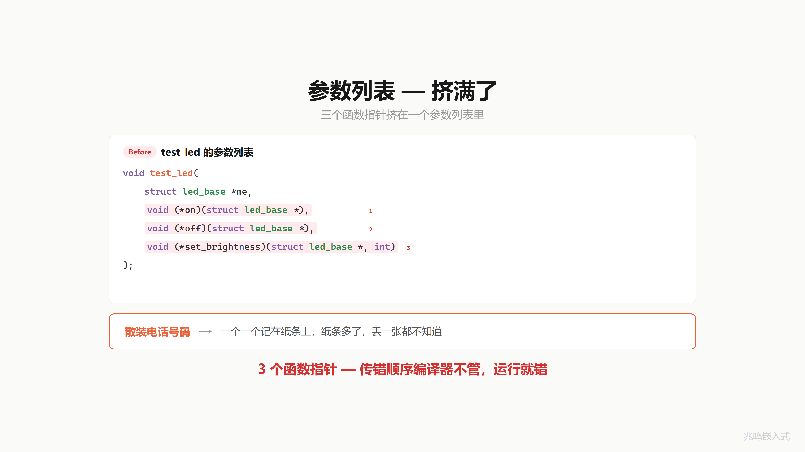
9.4 typedef 给函数指针起名字
ops 表里每个字段都是一长串函数指针类型。重复几遍后用 typedef 提一下：
typedef int (*led_action_fn)(struct led_base *me);
struct led_ops {
led_action_fn on;
led_action_fn off;
led_action_fn toggle;
};
整洁。
typedef 在 ch01 1.7.3 节讲过：Linus 反对 typedef struct（藏类型信息）。但函数指针 typedef 是少数 Linus 也支持的例外。int (*)(struct led_base *) 这个类型字面量太长，typedef 给它起短名字纯收益。
Linux 内核里 struct file_operations 也是这个套路，一堆 typedef 函数指针类型组合成一张大表。
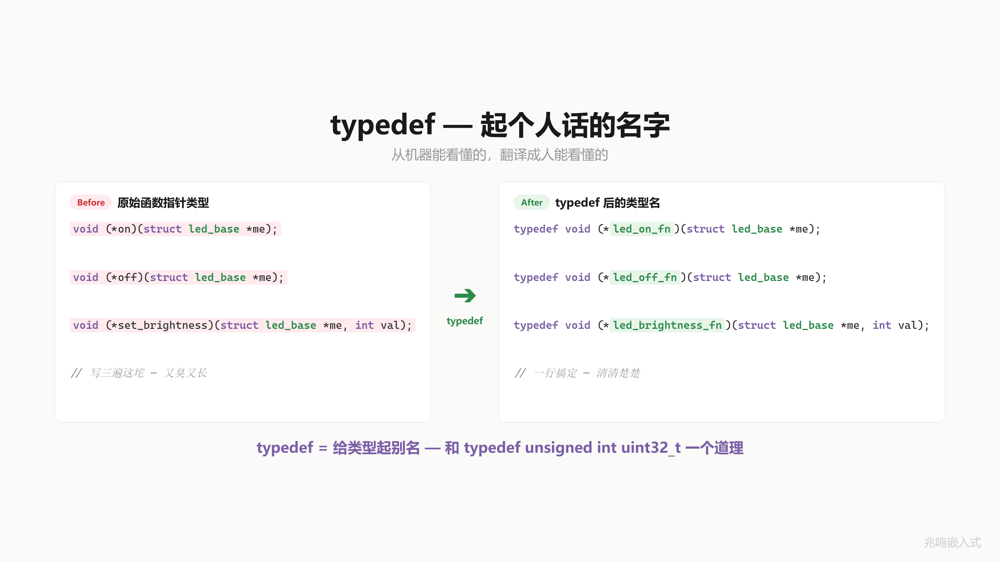
9.5 ops 表放哪里
ops 表本身是一个 struct 实例。放哪？
工业代码里通常放在常量段（.rodata）：
const struct led_ops led_ops_gpio = {
.on = gpio_on_pull_high,
.off = gpio_off,
...
};
加 const 三层意义：
- 不允许运行时改动 ops 表内容。所有同类型 LED 共享同一张表，改了灾难
- 链接时进 .rodata 段。Flash 上有备份，RAM 不占空间。MCU 上 RAM 是稀缺资源，能进 .rodata 就尽量进
- 在 base + ops 演化到第 10 章后，
base->ops字段会写成const struct led_ops *ops，这一层 const 把“我手里这个 ops 表别动“的意图传到字段上
实测：一张含 3 个函数指针的 ops 表在 ARM Cortex-M4 上占 12 字节。100 颗 LED 全部用同一张 ops 表，共享 12 字节而不是 1200 字节。
extern 暴露给用户：
/* led.h */
extern const struct led_ops led_ops_gpio;
extern const struct led_ops led_ops_pwm;
调用方拿到 &led_ops_gpio 就是 ops 表的地址。
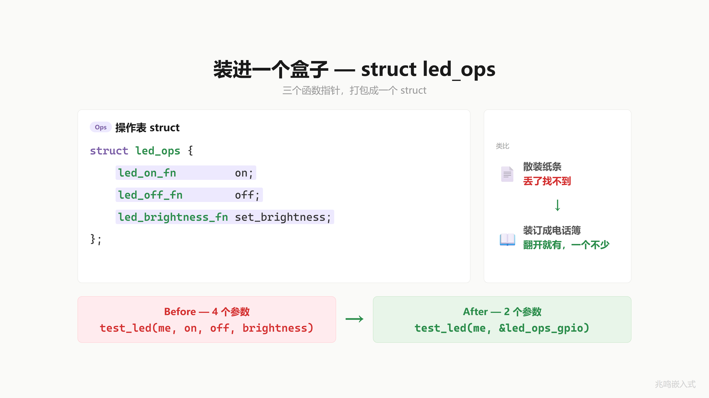
9.6 这个东西叫什么
把一组相关的函数指针打包进一个 struct，让别人通过表名按名访问，软件工程里有个名字。
它叫操作表（ops table），也叫虚函数表（vtable / virtual table）。Linux 内核源码里把这种 struct 都叫 xxx_ops：file_operations、net_device_ops、gpio_chip 里的回调集，都是 ops 表。
C++ 里你写：
class led_base {
public:
virtual int on() = 0;
virtual int off() = 0;
virtual int toggle() = 0;
};
class led_gpio : public led_base { ... };
class led_pwm : public led_base { ... };
带 virtual 函数的 class，编译器在背后做三件事：
- 生成一张函数指针表。每个 class 一张。
led_gpio的表里.on指向led_gpio::on，led_pwm的表里.on指向led_pwm::on。这张表 C++ 叫 vtable - 在每个对象里偷偷加一个指针，指向这张表（叫 vptr）
- 调用
led->on()时自动通过 vptr 查表 dispatch
你这一章手动做了第一步：手写了 struct led_ops 这张表。下一章手动做第二步：在 struct led_base 里加一个 const struct led_ops *ops 字段。第 11 章手动做第三步：通过 me->ops->on(me) dispatch。
C++ 编译器自动做的事，你 C 里手动做完。底层机器码几乎一模一样。
9.7 视频里没讲透的几个细节
9.7.1 designated initializer 是 C99 的礼物
const struct led_ops led_ops_gpio = {
.on = gpio_on_pull_high,
.off = gpio_off,
.toggle = gpio_toggle,
};
这种 .field_name = value 的写法叫 designated initializer，C99 引入。好处：
- 不依赖字段顺序。哪天 struct 里调换字段顺序，已有 ops 表代码不用改
- 可读性好。不用数到第几个字段
- 未列出的字段自动初始化为 0 / NULL（C99 标准 6.7.8 节第 21 段）
C89 没有这个语法，只能：
const struct led_ops led_ops_gpio = {
gpio_on_pull_high, /* on */
gpio_off, /* off */
gpio_toggle, /* toggle */
};
字段顺序变了就全乱。Linux 内核早期代码很多这种“按位置 init“，后期重构都改成了 designated initializer。
9.7.2 ops 表里某些字段不填怎么办
某些扩展能力（比如 set_brightness）假如本章 ops 不放进来；后续要加时某种 LED 不支持，干脆不填。designated initializer 会把它默认初始化成 NULL。
调用方就得做 NULL check：
if (ops->toggle)
ops->toggle(me);
else
printf("This LED doesn't support toggle\n");
第 14 章会专门讲这件事的三种处理策略：报错、空 stub、纯虚函数（约定子类必须填）。本章先做 NULL check 这种最朴素的版本。
9.7.3 ops 表的内存代价：共享 vs 每实例一份
struct led_ops {
led_action_fn on; /* 4 bytes 32-bit */
led_action_fn off;
led_action_fn toggle;
};
ARM Cortex-M4 上 3 个函数指针 3 × 4 = 12 字节。在 .rodata 段，全程序就一份。
100 颗 LED 的两种实现路线对比：
| 方案 | RAM/Flash 占用 | 灵活性 |
|---|---|---|
ops 表共享（推荐）：每个对象只存一个 const struct led_ops * 指针 | 一张 ops 表 12 字节（Flash），每颗 LED 多 4 字节指针 = 100 × 4 + 12 = 412 字节 | 同类型 LED 必须用同一张表 |
ops 表每实例一份：每个对象嵌入完整的 struct led_ops ops | 100 × 12 = 1200 字节（必须在 RAM，因为对象本身在 RAM） | 每颗 LED 可以独立调实现 |
工业代码里的硬规则：ops 表共享，对象只存 ops 指针。原因有三：
- 省 RAM：100 颗 LED 省 788 字节。MCU 上 RAM 是几十 KB 量级，这点省下来很关键
- 进 Flash：共享版 ops 表
const之后链接进 .rodata，烧到 Flash 上零 RAM 占用 - 缓存友好：所有同类 LED 调
ops->on都访问同一段地址，CPU 数据缓存命中率几乎 100%。每实例一份 ops 表会让缓存反复换行
下一章 ops 字段就是 const struct led_ops *ops，4 字节，所有同类型 LED 共享同一张表。这就是 C++ vtable 的存储策略：类一份，对象只存 vptr。
9.7.3.1 ops 表落在 cacheline 哪里
ARM Cortex-A（Linux SBC）和高端 Cortex-M（M7、A 系列）有 D-cache，cacheline 通常 32 或 64 字节。书里的 struct led_ops 12 字节，一定能放进同一条 cacheline。
调用 ops->on(me) 时 CPU 取 ops->on 这一个字段，cacheline 加载之后 ops->off / ops->toggle 也在缓存里。如果同一个对象后面还要调 off，就是缓存命中。
但如果 ops 表是每实例一份，分散在不同 RAM 地址，每个对象的 ops 表落不同 cacheline。100 个对象在循环里调 ops->on，缓存来回换行，性能掉一截。
这件事在低端 MCU 上看不出来（没 cache），但在 Cortex-A53、SBC 跑 Linux 时差距明显。Linux 内核里几乎所有 ops 表都共享设计，部分原因就是这个。
9.7.3.2 const 是把双刃剑
const struct led_ops led_ops_gpio = { ... }; 链接进 .rodata，在 STM32 等 MCU 上落 Flash。读起来快、不占 RAM。
但 .rodata 是只读段。如果你想运行时换实现（比如开发板上跑某段诊断代码时临时把 .on 替换成“先打 log 再调原 on“），就不能改 ops 表本身。两种解法：
- 预先准备多张 ops 表，运行时换
me->ops指针指向不同表（只改对象里的指针，不改表） - 去掉表上的 const，让表落在
.data（RAM），允许字段改写。代价：占 RAM、丢失安全性
工业代码 99% 走第 1 种。运行时换 me->ops 指针在 ch15 platform 切换时就是这个用法的高潮。
9.7.4 ops 表的初始化顺序问题
C 标准保证：全局 / 静态对象的常量初始化在 main() 之前完成。const struct led_ops led_ops_gpio = { ... }; 这种形式由编译器在编译期填好，写进 .rodata。
但是！如果 ops 表里某个字段引用了非常量地址（比如不是函数地址，而是某个全局函数指针变量），就会进入“运行时动态初始化“，时机取决于实现。
工业代码硬规则：ops 表只填函数地址，不填变量地址。函数地址是常量（链接期定）。本章符合。
9.7.5 调用 ops->on 的汇编代价
ops->on(me);
ARM Cortex-M4 编译出来：
LDR r3, [r0, #0] ; r0 = ops, 取 ops 表第 0 个字段 = on 的地址 (3 cycle)
BLX r3 ; 间接跳转 (3 cycle)
和 ch07 的“struct 字段里的函数指针“开销一样：一次 LDR + 一次 BLX，约 28 ns @ 168 MHz。
C++ virtual 函数调用就是这两条指令。Stroustrup 那句“零成本抽象“在 vcall 这里要打个小折扣（间接跳转 = 不能 inline、CPU branch predictor 命中率低），这是工程上完全可接受的代价。
9.7.6 为什么 ops 不写在 led_base 里
按理说 struct led_ops 应该是基类的概念，所有子类共用一份接口定义。本章直接写在 led.h 里，对应“GPIO 风格 LED“和“PWM 风格 LED“两组实现。下一章 ops 才会真正放进 base。
为什么分两章？因为本章先把“打包“这个动作单独讲清楚（ops 表是什么、怎么填、怎么调）。下一章再处理“ops 表跟谁绑、谁带“（放进 base 让对象自带）。一次只解决一件事，认知负荷小。
工业代码里 ops 表的最终落点是 base struct 里的字段，下一章会演化到位。
9.8 你现在的代码在 STM32 上长什么样
STM32 端胶水还是 ch01 那套。led_base.h / led_base.c / led_gpio.h / led_gpio.c / main.c 一字不改。
ops 表 led_ops_gpio / led_ops_pwm 编译后进 .rodata 段，烧到 Flash 上。运行时常驻。所有 GPIO 类 LED 共享同一份 12 字节的 ops 表。
/* 真实芯片 .map 文件里能看到 */
.rodata
...
led_ops_gpio 0x08001234 12
led_ops_pwm 0x08001240 12
100 颗 LED 仅有 24 字节 ops 表代价，加上每颗 LED 自己的 struct 实例（在 .bss 或栈上）。
本节用的还是函数式包装的 platform 抽象层，是教学简化版。第 11 章后会改成 ops 表式。
9.9 你现在的代码在 Linux 用户态长什么样
Linux 端的 ops 表完全一样的写法。gcc / clang 把 const struct 放到 .rodata，进程加载时在虚拟内存里只读映射，全进程共享。
led.h / led.c / main.c 一字不改。同 9.8 节，平台层是教学简化版，第 11 章后会演化成 ops 表式。
9.10 工业代码里的 ops 表
工业控制板项目里，每个驱动都有一张 ops 表。LED 驱动这样：
/* drivers/led/led.h */
struct led_base;
struct led_ops {
int (*on)(struct led_base *me);
int (*off)(struct led_base *me);
int (*toggle)(struct led_base *me);
};
/* drivers/led/led_gpio.c */
const struct led_ops led_ops_gpio = {
.on = led_gpio_on,
.off = led_gpio_off,
.toggle = led_gpio_toggle,
};
注意 ops 表里函数指针的参数是 struct led_base *，不是某个具体子类。这是因为 ops 表要被基类层使用（下一章讲 ops 放进 base），所有子类的 ops 表必须类型一致。
EEPROM、风扇、蜂鸣器、按键这些 driver 的 ops 表结构各不相同，但写法都是这一套：定义 ops struct，每种实现 fill 一张 const ops 表，应用层通过 base 指针拿到 ops 指针调用。
这就是 Linux 内核 struct file_operations 的 OOP 骨架。你这一章亲手推了一遍。
9.11 跑一遍
cd oop-in-c/code/09-ops-table/pc
make
./demo
输出节选：
--- test_led(&red_led.base, &led_ops_gpio) ---
[test] open ...
[GPIO] Pin13 -> HIGH
[GPIO] "red" ON
[test] toggle ...
[GPIO] "red" OFF
[test] close ...
--- test_led(&blue_led.base, &led_ops_pwm) ---
[test] open ...
[PWM] "blue" ON (channel 1)
[test] toggle ...
[PWM] "blue" OFF (channel 1)
test_led 函数体没改。换一张 ops 表，跑出完全不同的行为。
完整源码见 oop-in-c/code/09-ops-table/。
9.12 视频回放
想听口播版的可以看 B 站这一期视频：
视频里把这一章叫做“散装电话号码 → 电话簿“。散装函数指针绑成一组共享名字的“号码本“，按名取号永远不会取错。
下一章
ops 表手里捏着，调用方还得主动把它传进去。每次都要：
test_led(&red_led, &led_ops_gpio); /* 调用方记得传 */
test_led(&blue_led, &led_ops_pwm);
应用层要记住每颗 LED 该用哪张 ops 表。一旦传错，又是 bug。
能不能让每颗 LED 自己带着自己的 ops 表？应用层只传 LED 自己，ops 表 LED 自己知道。
第 10 章 · ops 放进对象
10.1 一个真实场景
第 9 章 ops 表已经做完了。struct led_ops 把 3 个函数指针打包，led_ops_gpio / led_ops_pwm 各填一张 const 表。test_led 接 ops 指针。
但应用层还有个问题。每次调用都得自己传 ops：
test_led(&red_led.base, &led_ops_gpio);
test_led(&blue_led.base, &led_ops_pwm);
test_led(&green_led.base, &led_ops_i2c);
应用层得记住“红灯用 gpio 表、蓝灯用 pwm 表、绿灯用 i2c 表“。一旦记错或传错，又是 bug：
test_led(&red_led.base, &led_ops_pwm); /* 红灯走了 PWM 表, 全乱 */
更别说哪天加第四种 LED，每个调用点都要改。
应用层根本不应该关心“这颗 LED 用哪张表“。这个对应关系应该 LED 自己记住。
10.2 朴素方案：维护一个全局映射
直觉 1：搞一张全局表 name → ops_table：
const struct led_ops *get_ops_for(const char *name)
{
if (strcmp(name, "red") == 0) return &led_ops_gpio;
if (strcmp(name, "blue") == 0) return &led_ops_pwm;
if (strcmp(name, "green") == 0) return &led_ops_i2c;
return NULL;
}
test_led 内部：
test_led(struct led_base *me)
{
const struct led_ops *ops = get_ops_for(me->name);
ops->on(me);
...
}
能跑。但每加一种 LED 改一处全局函数，回到了“加一种 LED 改驱动代码“的老路。这就是 ch07 朴素 if-else 方案的变形。
直觉 2：每颗 LED 自己带着自己的 ops 表。struct led_base 加一个 ops 字段，init 时填进去，调用时从字段取。
struct led_base {
const struct led_ops *ops; /* 自己带着 */
const char *name;
bool is_on;
};
加新 LED 不用改任何全局代码。每颗 LED 自治。
10.3 把 ops 字段放进 led_base 第一个位置
ops 字段放在 struct led_base 而不是放进每个子类（struct led_gpio / struct led_pwm），这是关键决策：
放在子类里，每一种子类都得自己加一个 ops 字段，而且基类层函数（接 struct led_base *）拿不到这个字段，dispatch 没法在基类层统一写。
放在 struct led_base 里，所有继承了 base 的子类全都自动有 ops 字段。一处定义，全员共享，基类层函数（led_on(struct led_base *me)）就能直接 me->ops->on(me) dispatch。
ch10 这一步就是继承（ch06）和操作表（ch09）合体的时刻：
struct led_base {
const struct led_ops *ops; /* 新增, 第一个字段 */
const char *name;
bool is_on;
};
ops 现在放在 led_base 的第一个字段。name 和 is_on 退到后面。
为什么 ops 放第一个？因为 C++ 编译器把 vptr 也放在对象起始处。Linux 内核 / Zephyr / GObject 也都把“指向函数表的指针“放在 base 第一个。这是世界标准。
第 12 章会讲为什么 vptr 在前面对向上转型很关键（“基类地址 = 子类地址”，向上转型零开销）。本章先记住这个约定。

10.4 init 时填 ops
每种子类的 init 函数把 ops 表地址传给 led_base_init：
int led_base_init(struct led_base *me, const char *name,
const struct led_ops *ops)
{
if (!me || !name || !ops)
return -1;
me->ops = ops;
me->name = name;
me->is_on = false;
return 0;
}
int led_gpio_init(struct led_gpio *me, const char *name, uint8_t pin)
{
int rc = led_base_init(&me->base, name, &led_ops_gpio);
if (rc != 0)
return rc;
me->pin = pin;
platform_gpio_init(pin, GPIO_MODE_OUTPUT);
platform_gpio_write(pin, false);
return 0;
}
int led_pwm_init(struct led_pwm *me, const char *name,
uint8_t channel, uint8_t duty)
{
int rc = led_base_init(&me->base, name, &led_ops_pwm);
if (rc != 0)
return rc;
me->channel = channel;
me->duty = duty;
return 0;
}
每个子类的 init 都把“我用哪张 ops 表“作为常量传给基类 init。基类 init 把它存到 me->ops 字段。一次填好，对象一辈子不用改 ops。
这一步等价于 C++ 里 class led_gpio : public led_base { virtual on(); } 的对象构造时，编译器自动把 vptr 设成 led_gpio::vtable。

10.5 调用方接口：传 base 指针
应用层调用怎么写？
struct led_gpio red_led;
led_gpio_init(&red_led, "red", 13);
led_on(&red_led.base); /* 不用传 ops 了 */
led_off(&red_led.base);
led_toggle(&red_led.base);
应用层传给 led_on 的是 struct led_base *，不是 struct led_gpio *。这是关键。
led_on 函数体长这样：
int led_on(struct led_base *me)
{
if (!me)
return -1;
assert(me->ops && me->ops->on &&
"led_on: subclass must implement on()");
me->is_on = true;
return me->ops->on(me);
}
三件事：
- 拿到 base 指针
me - 通过
me->ops找到 ops 表 - 通过
me->ops->on找到具体的 on 函数，调它
me->ops->on(me) 这一行就是面向对象多态的核心机制。第 11 章会展开讲它两次跳转的内存图景。
on / off / toggle 是 LED 的核心能力，子类必须实现。调试构建里 assert 抓到忘实现的子类，立即 abort + 给行号；Release 构建定义 NDEBUG 后 assert 整行消失，零运行时开销。第 14 章会专门展开必填和选填的边界。
10.6 子类指针怎么变成基类指针
led_on(&red_led.base) 这一行有个微妙的细节。red_led 类型是 struct led_gpio，red_led.base 是它内嵌的 struct led_base 字段，&red_led.base 取这个字段的地址，类型 struct led_base *。完全合法。
那能不能直接 led_on(&red_led)？类型是 struct led_gpio *，led_on 期望的是 struct led_base *。编译器报类型不匹配。
但因为 struct led_base base 是 struct led_gpio 的第一个字段（base 永远第一），&red_led 和 &red_led.base 在内存里是同一个地址。两个不同的指针类型，指向同一字节。
所以可以强转：
led_on((struct led_base *)&red_led);
合法。会跑对。但编译器现在没法帮你查类型了。Linux 内核风格更喜欢 &red_led.base（显式说“我要的是 base 部分“），强转留给 ch13 讲 container_of 反方向找回外层时用。
第 12 章会专门讲这件事。它叫向上转型（upcasting），是整个面向对象多态的入口。
10.7 这个东西叫什么
每个对象自带一个指针，指向一张属于自己类型的函数表。调用时通过这个指针查表执行。
C++ 里这叫 vptr（virtual table pointer，虚表指针）。每一个有 virtual 函数的对象，C++ 编译器自动加一个 vptr，放在对象的最前面。
你刚才在 C 里手动做的事，就是 C++ 编译器看到 class led_base { virtual on(); }; 时偷偷做的事：
- 编译器为
class led_gpio生成一张虚函数表 vtable（在 .rodata），里面放led_gpio::on的地址（你的led_ops_gpio表） - 编译器在每个
led_gpio对象的最前面加一个 vptr，构造时填好（你的me->ops = &led_ops_gpio） - 调用
obj.on()时编译器把它编译成obj.vptr->on(this)（你的me->ops->on(me)）
机器码层面 C 和 C++ 几乎一字不差。Bjarne Stroustrup 那句 “no overhead beyond what a programmer would write by hand if they implemented the same feature manually” 是这条路径的具体体现。
C++ 还做了一件 C 没做的事：自动判断对象有没有 virtual 函数。没有的话不加 vptr，节省内存。C 里你写不写 ops 字段是手动决定的。

10.8 视频里没讲透的几个细节
10.8.1 ops 字段放第一个的硬要求
C11 标准 6.7.2.1 节第 15 段保证：结构体第一个成员的偏移量是 0。所以：
struct led_base *base = &red_led.base; /* base 字段在 led 里 offset 0 */
const struct led_ops **ops_addr = (const struct led_ops **)base;
/* *ops_addr 现在就是 me->ops */
ops 在 base 第一个，base 在 led 第一个。(struct led *)me 强转直接拿到子类指针，*((const struct led_ops **)me) 直接拿到 ops 表。两层零开销。
这件事在 C++ 里看不见，但在 C 里你能直接观察到。下一章会讲一个由此带来的玩法：所有面向对象语言的多态调用约定，第一条 instruction 几乎都是 LDR r0, [r0]（取对象起始处的 vptr）。
10.8.1.1 把 ops 放第一个的三条理由
不只是“传统“。ops 在第一个有三条具体的工程理由：
- 向上转型零开销：
&red_led和&red_led.base是同一个地址。基类层函数接struct led_base *me，应用层传&red_led.base进去，编译期不生成任何加法指令。如果 ops 不在 base 第一个，但 base 在子类第一个，向上转型还是零开销；只是基类层函数访问 ops 时要算偏移 - 取 vptr 是单条 LDR：
me->ops编译成LDR r3, [r0]（不带偏移）。一条指令，一个周期 + 一次访存。这是面向对象多态调用的最优情况。如果 ops 在偏移 8 处，编译器要生成LDR r3, [r0, #8]（指令长度一样、周期一样，但 micro-architecture 上偏移立即数走 immediate slot 占 5 bit，超过 124 的偏移要拆指令） - cacheline 友好：ARM Cortex-A 上 cacheline 通常 64 字节。对象起始处必然落 cacheline 头部。把最常访问的字段（多态调用必经的 ops）放头部，cacheline 命中率最高
C++ 编译器实现 vptr 时也都遵守“vptr 在对象最前面“。GCC、Clang、MSVC 三个主流编译器对单继承类一致，多继承时 vptr 位置略复杂但单继承场景一律最前。
10.8.1.2 me->ops->on(me) 的两次 LDR：在 ARM Cortex-M4 上长什么样
return me->ops->on(me);
ARM Cortex-M4 编译（-O2）大致是：
; 入口: r0 = me, 一个 struct led_base *
LDR r3, [r0, #0] ; r3 = me->ops (offset 0)
LDR r3, [r3, #0] ; r3 = me->ops->on (ops->on 是表第一个字段)
BX r3 ; tail-call 跳到 on, r0 还是 me 即第一个参数
三条指令 + 一次跳转。两次 LDR 都是 base + 偏移 0，编译期常量，不需要额外计算偏移。
如果 ops 不在 base 第一个：
; 假设 ops 在 base 偏移 8
LDR r3, [r0, #8] ; r3 = me->ops, 多了一个非零偏移
LDR r3, [r3, #0] ; r3 = me->ops->on
BX r3
指令条数和周期数其实一样（ARM 的 LDR 立即数偏移在指令编码里是 5-bit，正常字段都装得下），但 micro-architecture 上 0 偏移有一个微优化：地址生成单元跳过加法。这是 ns 级的差距，正常代码看不出来，是 Linus / Bjarne 都坚持“vptr 第一个“的次要原因之一。主因还是 1 和 3。
10.8.2 ops 是 const 还是 const 指针
const struct led_ops *ops;
const 在 struct led_ops 后面，修饰 struct led_ops（左边的），所以含义是“指向常量 led_ops 的指针“。指针 ops 本身是变量，可以改 me->ops = ...；但 me->ops->on = ... 不行（指向的内容是 const）。
如果把 const 写后面：
struct led_ops * const ops;
含义反了：const 修饰 ops（指针本身是 const），不能改 me->ops = ...，但能改 me->ops->on = ...。
工业代码用第一种：表本身常量（不能改实现），但字段可以重新赋值（运行时换 ops 表的极端场景）。Linux 内核 file_operations 全是这种风格。
10.8.3 sizeof(led_base) 的变化
ch09 之前：
struct led_base {
const char *name; /* 4 byte */
bool is_on; /* 1 byte */
/* 3 bytes padding */
};
sizeof = 8 (32-bit)
ch10：
struct led_base {
const struct led_ops *ops; /* 4 byte on 32-bit */
const char *name; /* 4 byte */
bool is_on; /* 1 byte */
/* 3 bytes padding */
};
sizeof = 12 (32-bit)
100 颗 LED 多 400 字节 RAM，换来“应用层不用传 ops 表“+“加新 LED 不改老代码”。这个交换在工业代码里几乎都做。RAM 紧张到非省不可的项目（M0 16KB RAM 跑了几百个对象），可能会用其它机制。
10.8.4 多态调用的指令开销
return me->ops->on(me);
ARM Cortex-M4 编译大致是：
LDR r3, [r0, #0] ; r3 = me->ops (3 cycle)
LDR r3, [r3, #0] ; r3 = me->ops->on (3 cycle)
BX r3 ; tail call, 跳到 on (3 cycle)
两次 LDR + 一次跳转。约 56ns @ 168MHz。比直接调用一个全局函数（一条 BL）多两个 LDR 的开销。
你看到的就是 C++ 虚函数 vcall 的精确成本。Stroustrup 把这两个 LDR 称为“虚函数的两次跳转“，是他承认的“非零开销“之一。在 99% 的嵌入式驱动场景里这点开销远低于 GPIO/I2C 操作本身的延迟，可以完全忽略。
但中断响应时间敏感的场景（比如 PWM 的高频更新）就要小心：vcall 会让 CPU 没法 inline，影响 branch prediction。这种地方用直接函数调用，不上 ops 表。
10.8.5 ops 表为什么不放到子类里
如果把 ops 字段放进 struct led_gpio，每种子类都得自己加 ops 字段。struct led_gpio 加一遍，struct led_pwm 加一遍。这违反了 6.3 节“提公因式“的初衷。
放到 base 里有个更深的好处：基类层就能 dispatch 多态调用。led_on(struct led_base *me) 这个函数只看 base 字段（ops），它根本不用知道你是 GPIO 还是 PWM 还是 I2C。所有“通过 ops 表查表 dispatch“的代码都在基类层写一次，子类一行不加。
这是 Linux 内核 struct file 的设计：file->f_op->read(file) 一行代码 dispatch 所有文件系统的 read 实现，不管你是 ext4、NFS 还是 procfs。第 16 章展开。
10.8.6 实现层 (struct led_base *me) 取回子类字段
实现层的函数签名变成：
static int gpio_on(struct led_base *me)
{
struct led_gpio *self = (struct led_gpio *)me; /* 强转回子类 */
platform_gpio_write(self->pin, true);
return 0;
}
注意第一个参数是 struct led_base *，但实现层要访问子类的字段（pin）。怎么办？
强转 (struct led_gpio *)me。因为 base 在 led_gpio 的第一个位置，地址是同一个，强转回去合法。
这是反方向（基类指针 → 子类指针）的转型，叫向下转型（downcasting）。比向上转型危险。如果你强转的指针不是 base 在第一个的子类，就会读到错位的字段。
第 13 章会讲 container_of 宏，让基类的 base 字段不必非得在第一个位置，依然能找回子类。这是 Linux 内核的标准做法。本章先用最朴素的强转，给读者建立直觉。
10.9 你现在的代码在 STM32 上长什么样
STM32 端胶水还是 ch01 那套（节选自 oop-in-c/code/10-vptr/stm32-snippet/led_stm32.c）：
void platform_gpio_write(uint8_t pin, bool value)
{
HAL_GPIO_WritePin(GPIOA, (uint16_t)(1U << pin),
value ? GPIO_PIN_SET : GPIO_PIN_RESET);
}
led_base.h / led_base.c / led_gpio.h / led_gpio.c / main.c 一字不改。
但 sizeof(struct led_base) 从 8 字节涨到 12 字节（在 32 位 ARM 上 ops 4 + name 4 + is_on 1 + padding 3）。100 颗 LED 多用 400 字节 RAM。换来的是应用层完全不知道“调谁“这件事，加新 LED 不改驱动核心。在 STM32H7（1MB RAM）上完全划得来；在 ATmega328（2KB RAM）上要算账。
本节用的还是函数式包装的 platform 抽象层，是教学简化版。第 11 章后会改成 ops 表式（platform 层自己也用 ops 表）。
10.10 你现在的代码在 Linux 用户态长什么样
Linux 端的 sysfs 实现（led_linux.c）一字不改。
进程的 .rodata 段里多出 led_ops_gpio / led_ops_pwm 两张 const 表（16 字节每张）。每个 LED 实例的 .bss 中多 4-8 字节的 ops 指针。
同 10.9 节，platform 层是教学简化版。第 11 章后会改成 ops 表式。
10.11 工业代码里的 ops 在 base 上
工业控制板项目里的 led_base 长这样：
struct led_base {
const struct led_ops *ops; /* 操作函数表 */
const char *name; /* 给日志打印用 */
bool is_on; /* 当前开关状态 */
uint32_t flags; /* 真实项目里还有更多状态字段 */
};
应用层声明：
extern struct led_base *green_led;
extern struct led_base *red_led;
应用层调用走基类层包装的统一接口：
led_on(green_led);
led_off(red_led);
led_on / led_off 是基类层提供的封装函数，内部走 me->ops->on(me) ops dispatch：
/* drivers/led/led_base.c */
int led_on(struct led_base *me)
{
if (!me)
return -1;
assert(me->ops && me->ops->on &&
"led_on: subclass must implement on()");
return me->ops->on(me); /* 基类层内部·走 ops dispatch */
}
应用层永远只见普通函数 led_on(handle)，看不到 ops 字段。这是工业纪律：ops 是基类层的实现细节，不暴露给应用层。
注意几件事：
- 应用层拿到的是基类指针
struct led_base *，看不到子类，也看不到 ops 字段 - ops 是 const，运行时不能改实现
- 基类层提供统一 API （
led_on(base)），应用层不直接碰base->ops->on(base)
这就是 Linux 内核的世界标准做法。file_operations 的 ops 字段也是 const，所有 fs/dev 模块统一注册自己的 ops 表，VFS 层通过 file->f_op->... 统一 dispatch。
第 11 章把这个机制完整推到位：基类层提供统一 API、应用层只看基类指针、调用走 dispatch、加新 LED 一行不改老代码。
10.12 跑一遍
cd oop-in-c/code/10-vptr/pc
make
./demo
输出节选：
========================================
vptr lands inside led_base.
led_on(&me.base) -> me->ops->on(me).
========================================
[base] "red" common init done, ops=0040b380
[base] "blue" common init done, ops=0040b390
--- led_on(&red_led.base) -> dispatch to gpio ---
[GPIO] Pin13 -> HIGH
[GPIO] "red" ON
--- led_on(&blue_led.base) -> dispatch to pwm ---
[PWM] "blue" ON (channel 1)
注意打印里 ops 地址：红灯 0040b380 是 &led_ops_gpio，蓝灯 0040b390 是 &led_ops_pwm。两颗 LED 自带不同的 ops 指针，各自调到对的函数。
完整源码见 oop-in-c/code/10-vptr/。
10.13 视频回放
想听口播版的可以看 B 站这一期视频：

视频里这一期叫“对象自带说明书“。每颗 LED 自己带着自己的电话簿（ops 表），应用层不用替它记。手艺一次交付，终身受用。
下一章
三件事现在还差最后一步：
- 第一步（ops 表）：第 9 章建好了
- 第二步（每个对象自带 ops 指针）：第 10 章本章建好了
- 第三步（调用时通过指针查表 dispatch）：下一章
下一章把 dispatch 这一步说清楚，看到完整多态。再演示 platform 层从函数式重构成 ops 表式，和 1.10 节工业代码对齐的高潮。
第 11 章 · 同名函数不同行为
配套代码：oop-in-c/code/11-polymorphism/
11.1 一个真实场景
第 10 章你把 ops 字段塞进了 struct led_base 第一个位置。每颗 LED 自带自己的 ops 表。应用层调 led_on(&red_led.base)，内部 me->ops->on(me) 走对的实现。
但应用层还有一个不爽的地方：每次都得写 &red_led.base、&blue_led.base。这意味着应用层还是知道每颗 LED 的具体子类（struct led_gpio / struct led_pwm）。
如果你想做一件更工程化的事：把所有 LED 装在一个数组里循环跑：
struct led_base *all_leds[3] = {
&red_led.base,
&blue_led.base,
&green_led.base,
};
for (int i = 0; i < 3; ++i)
led_on(all_leds[i]);
这一行 led_on(all_leds[i]) 跑的时候，应用层根本不知道 all_leds[i] 背后是 struct led_gpio 还是 struct led_pwm 还是 struct led_i2c。但是每颗灯都会按自己的 ops 表跑对的实现。
红灯走 gpio_on：拉引脚。
蓝灯走 pwm_on：按 duty 配 PWM。
绿灯走 gpio_on：拉引脚。
同一行代码 led_on(...)，跑出三种不同行为。这就是多态。
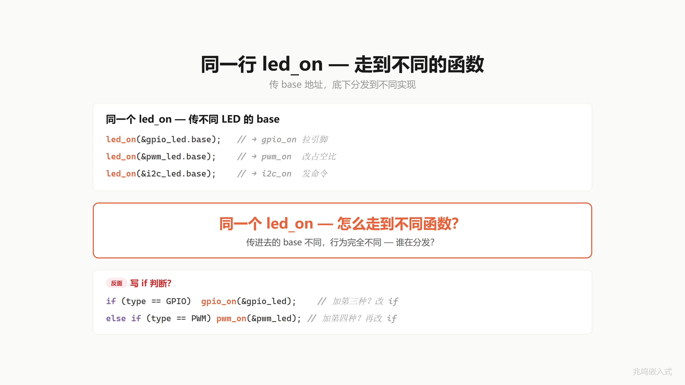
11.2 dispatch 调用链
led_on(struct led_base *me) 函数体只有一行：
int led_on(struct led_base *me)
{
if (!me)
return -1;
assert(me->ops && me->ops->on &&
"led_on: subclass must implement on()");
return me->ops->on(me);
}
on / off / toggle 是 LED 的核心能力，子类必须实现。调试构建里 assert 抓到忘实现的子类，立即 abort + 给行号；Release 构建定义 NDEBUG 后 assert 整行消失，零运行时开销。第 14 章会专门展开必填和选填的边界。
me->ops->on(me) 这一行 ARM Cortex-M4 编译出来：
LDR r3, [r0, #0] ; r3 = me->ops (3 cycle)
LDR r3, [r3, #0] ; r3 = me->ops->on (3 cycle)
BX r3 ; 跳到 on, 不返回 (tail call)
; r0 已经是 me, 不需要 mov
两次跳转。
第一跳：从 me 这个地址 load 出 me->ops（base 第一个字段是 ops，offset 0）。
第二跳：从 ops 这个地址 load 出 ops->on（ops 表第一个字段是 on，offset 0）。
然后跳过去执行。
红灯：me->ops = &led_ops_gpio，me->ops->on = gpio_on。跳到 gpio_on。
蓝灯：me->ops = &led_ops_pwm，me->ops->on = pwm_on。跳到 pwm_on。
同一行代码 me->ops->on(me)，因为 me 不同，两跳之后落在不同的函数。这就是 dispatch。
C++ 虚函数调用编译器生成的 ARM 汇编几乎一字不差。Stroustrup 把这两个 LDR 称为“virtual function 的两次访存“，这是 OOP 的固定开销。在主流嵌入式平台上一次 vcall 约 56ns @ 168MHz，可以忽略。
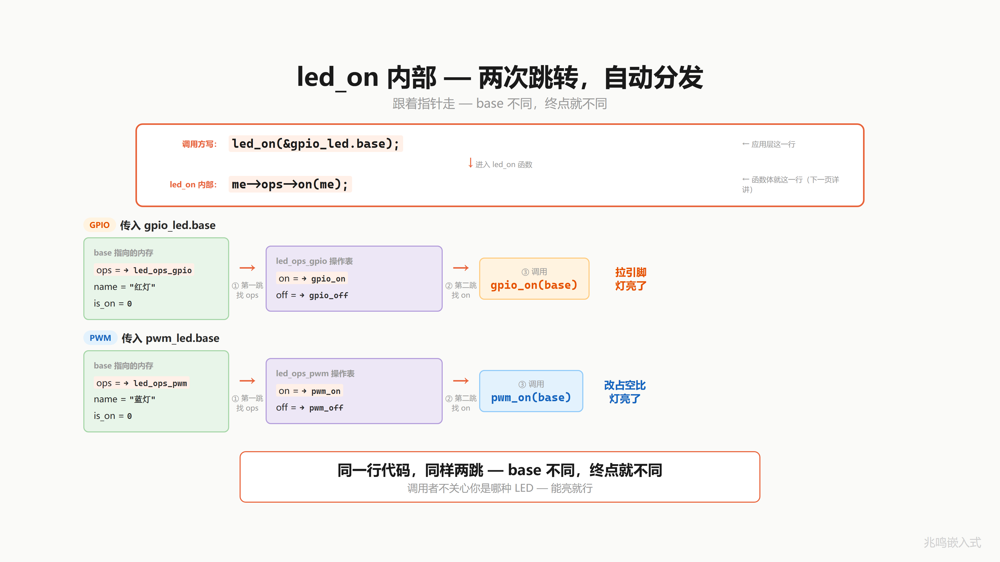
11.3 led_on 这个函数写在哪
led_on 不是 gpio_on、不是 pwm_on。它是一个统一的对外接口，函数体只做“通过 ops 表 dispatch 到具体实现“这一件事。
写在哪？写在 led_base.c（或者本书简化把它写在 led.c）。这是基类层的函数。所有 base 子类共享。
为什么不写在子类？因为这件事对所有子类一样：通过 ops 找 on 函数、调它。子类自己不知道也不需要知道这件事。
C++ 里这步 dispatch 是编译器自动生成的。obj.on() 编译器看到对象有 vptr，自动展成 obj.vptr->on(&obj)。你不用写。
C 里你手写 led_on：一行的胶水函数，通过 ops 表 dispatch。这一行胶水写一次，所有子类共用。
11.4 这个东西叫什么
同一个函数名（led_on），传不同的对象进去（红灯、蓝灯、绿灯），跑出不同的行为。
软件工程里有个名字。它叫多态（polymorphism）。希腊语词根：poly-（多）+ morph（形态）。同一个调用，多种形态。
OOP 三大特性到这一章你全部解锁：
- 封装（ch01-ch05）：把数据和操作打包，外面看不见内部
- 继承（ch06）：把公共部分提到 base 里，子类共享
- 多态（ch07-ch11）：同一个接口，不同的实现，运行时 dispatch
封装是藏细节，继承是共享不变，多态是各自精彩。
C++ 里这一整套写法：
class led_base {
public:
virtual int on() = 0; /* 纯虚函数, 子类必须实现 */
virtual int off() = 0;
};
class led_gpio : public led_base {
public:
int on() override { ... }
int off() override { ... }
};
class led_pwm : public led_base {
public:
int on() override { ... }
int off() override { ... }
};
led_base *all_leds[3] = { new led_gpio, new led_pwm, new led_gpio };
for (auto led : all_leds)
led->on(); /* 自动 dispatch */
C++ 编译器看到 virtual 后自动做：
- 给
class led_gpio生成一张 vtable（你的led_ops_gpio） - 给每个
led_gpio对象的最前面塞一个 vptr（你的me->ops） - 把
led->on()编译成led->vptr->on(led)（你的me->ops->on(me)）
C++ 编译器自动做的事，你 C 里手动做完。两份代码的机器码几乎一字不差。这就是为什么 Bjarne Stroustrup 反复说“C++ 的 OOP 是 zero overhead beyond what you’d write by hand in C“。
你这本书走到这里，应该被自己说服了：OOP 不是 C++ 的特权。C 里你已经在写。区别只是 C++ 编译器把 vtable / vptr / dispatch 这三件事自动做了，C 里你手写。
11.5 platform 层从函数式重构成 ops 表式
回头看 ch01-ch10。所有 platform 操作是 4 个独立函数：
/* common/platform.h - 函数式 (ch01 - ch10) */
void platform_gpio_init(uint8_t pin, uint8_t mode);
void platform_gpio_write(uint8_t pin, bool value);
void platform_gpio_deinit(uint8_t pin);
bool platform_gpio_read(uint8_t pin);
每章的 STM32 / Linux snippet 都告诉你这是教学简化版。真正工业级 platform 抽象用 ops 表。第 11 章演化出 vptr 之后，就把这个承诺兑现。
兑现的方式有讲究：对外这 4 个函数签名一字不动，对内从直接实现演化成 ops dispatch。驱动层、应用层永远只看到这 4 个签名，看不到下面的 ops 表。
观察这一招在概念上和 ch10 的 struct led_base 一字不差：
| ch10 设备层 | ch11 平台层 |
|---|---|
struct led_base { const struct led_ops *ops; ... } | struct platform_ops { ... } 多份具体实例（PC / STM32 / Linux） |
子类 init 时把 &led_ops_xxx 填进 base | 启动期 platform_select(&platform_xxx) 切换 platform 层内部当前指针 |
基类层 led_on 内部 me->ops->on(me) | 封装函数 platform_gpio_write 内部 g_platform_ops->gpio_write(...) |
| 加新 LED 类型不改 led_on / led_off | 加新平台不改 platform_gpio_write / 任何 driver 代码 |
这就是面向对象的“递归“应用：同一个 ops 表机制，先用在设备层（每颗 LED 自带 ops），再用在平台层（platform 层内部维护一个 ops 指针）。两层独立演化，机制完全一致。
新接口（节选自 oop-in-c/code/11-polymorphism/pc/platform_ops.h）：
/* 11-polymorphism/pc/platform_ops.h - platform 层内部细节 */
struct platform_ops {
const char *name;
void (*gpio_init)(uint8_t pin, uint8_t mode);
void (*gpio_deinit)(uint8_t pin);
void (*gpio_write)(uint8_t pin, bool value);
bool (*gpio_read)(uint8_t pin);
};
/* 多份具体实例（在各自实现文件里定义） */
extern const struct platform_ops platform_pc;
/* 切换 platform 层内部当前 ops 指针 */
void platform_select(const struct platform_ops *p);
platform_ops.h 不放在 common/ 目录，是 platform 层内部头文件。驱动层、应用层只 include common/platform.h（封装函数声明），永远看不到这张 ops 表。
PC 模拟版的 ops 表（节选自 oop-in-c/code/11-polymorphism/pc/platform_ops_pc.c）：
static void pc_gpio_init(uint8_t pin, uint8_t mode) { ... }
static void pc_gpio_write(uint8_t pin, bool value) { ... }
static bool pc_gpio_read(uint8_t pin) { ... }
static void pc_gpio_deinit(uint8_t pin) { ... }
const struct platform_ops platform_pc = {
.name = "PC",
.gpio_init = pc_gpio_init,
.gpio_deinit = pc_gpio_deinit,
.gpio_write = pc_gpio_write,
.gpio_read = pc_gpio_read,
};
封装函数 + 内部 dispatch（节选自 oop-in-c/code/11-polymorphism/pc/platform_dispatch.c）：
/* platform 层内部当前指针, 文件作用域, 外部不可见 */
static const struct platform_ops *g_platform_ops = &platform_pc;
void platform_select(const struct platform_ops *p)
{
if (p)
g_platform_ops = p;
}
/* 封装函数: 签名跟 ch01 起一字不变, 内部走 ops dispatch */
void platform_gpio_write(uint8_t pin, bool value)
{
if (g_platform_ops && g_platform_ops->gpio_write)
g_platform_ops->gpio_write(pin, value);
}
驱动层调用方式从 ch01 起一字不变：
platform_gpio_write(pin, true); /* ch01 函数式 */
platform_gpio_write(pin, true); /* ch11 内部走 ops dispatch */
变化的只是 platform 层内部：上面这一行函数调用，从直接执行 GPIO 操作，变成“先 LDR 一次拿到 g_platform_ops，再 LDR 一次拿到 ops->gpio_write，最后跳过去执行“。驱动层一字不知。
ch01 1.10 节工业代码里的 led_base + led_ops 形态，和这里的 platform_ops 是同一种东西。整本书的 platform 层从这一章起，与工业代码完全对齐。
11.5.1 为什么 platform 层要 ops 化
函数式 platform 抽象（ch01-ch10）有几个问题：
- 编译期决定平台：
platform_gpio_write在哪个.c实现，编译期就定了。同一份 firmware 跑不了两个不同硬件 revision - 不能 mock：单元测试时想替换 platform 层为 mock 实现，函数式没法换（除非链接期 stub）
- 不能 runtime 切：一个进程里同时模拟多种 platform（教学场景）做不到
封装函数 + 内部 ops 表式解决全部三个：
platform_select(&platform_xxx)启动期挑表- mock 时填一张测试用的 ops 表，
platform_select(&platform_mock) - 一个进程里持有多张 ops 表，按场景切换
11.5.2 这件事的代价
封装函数 platform_gpio_write 的实现，从直接 BL 一条到底，变成函数体内多两次 LDR。在 ARM Cortex-M4 @ 168MHz、-O2 下大概多 28ns。
驱动层调用方式没变，每次 platform_gpio_write(pin, true); 还是一条 BL platform_gpio_write。多出来的两次 LDR 在 platform 层内部消化。
主流嵌入式驱动调用频率（每秒几十到几千次 GPIO 操作）远低于这个开销，完全可以忽略。极端高频场景（PWM 微秒级更新）应该走专用接口，不上 ops 表。
11.5.3 ch12-ch18 沿用
第 12 章起，所有代码都用这种“对外封装、对内 ops“的 platform 抽象。驱动层调用形态从 ch01 起一字不变，platform 层内部走 ops dispatch。
第 15 章是 platform 层 ops 化的高潮章，会演示同一份 firmware 同时持有 PC / STM32 / Linux 三套 platform_ops 实例，runtime 通过 platform_select(&platform_xxx) 在三种 platform 之间切换，应用层、驱动层一字不改。
11.6 视频里没讲透的几个细节
11.6.1 led_on 为什么不内联到 me->ops->on(me)
应用层完全可以写：
me->ops->on(me); /* 不通过 led_on 这层胶水, 直接 dispatch */
为什么还要套一层 led_on(me)？两个理由：
- 统一 NULL check：
me->ops、me->ops->on任意一个 NULL 都崩。胶水函数集中检查 - API 稳定：哪天 dispatch 机制改了（比如加日志、加 hook、上 trace），改一个
led_on函数，所有调用方不用动
工业代码的硬规则：不直接走 ops 表，所有 dispatch 走基类层包装的统一函数。led_on / led_off / led_set_brightness 是对外 API，me->ops->on 是内部实现细节。
11.6.2 ops 字段的必填和选填
ops 表里有些字段是必填（每个子类都得实现），有些字段是选填（这种 LED 不支持就不填）。
本章 on / off / toggle 三件套都是 LED 的核心能力——一颗灯不能开、不能关、不能翻转，就不算灯。所以本章代码统一用 assert 抓忘实现的子类，调试构建立即 abort 给行号，Release 构建定义 NDEBUG 后 assert 整行消失，零运行时开销。
到第 12 章会引入 set_brightness，那个就属于选填——GPIO 灯硬件上没有调光能力，子类就别实现，父类的统一接口走默认行为兜底。这是另一种处理。
第 14 章会专门展开必填 vs 选填的判断标准、三种处理策略（assert 报错、空 stub、默认行为）的取舍、对应到 C++ 里的纯虚函数和虚函数。本章先把“核心能力子类必须实现，调试期 assert 抓忘填“这条记下来。
11.6.3 多态的开闭原则
加第 100 种 LED 怎么改代码？
- 写一个
struct led_ops led_ops_xxx，填 3 个函数 - 写一个
led_xxx_init函数，里面调led_base_init(&me->base, name, &led_ops_xxx) - 完了
led_on / led_off / led_toggle 这 3 个对外 API 一行不改。struct led_base 一行不改。struct led_ops 一行不改。所有应用层代码（包括循环 dispatch 那段）一行不改。
软件工程把这件事叫开闭原则（Open/Closed Principle）：对扩展开放，对修改关闭。加新功能不要改老代码。这是面向对象设计五大原则（SOLID）的 O。
多态是开闭原则在 C 语言里的具体实现机制。函数指针表 + base + dispatch 这一套就是工程上做“对扩展开放“的标准答案。
11.6.4 多态调用的开销和限制
多态调用比直接调用贵两个 LDR。绝大多数场景里这点开销远低于 GPIO / I2C 操作本身的延迟，可以忽略。
具体的几组对照（ARM Cortex-M4 @ 168 MHz，-O2）：
| 操作 | 大致开销 | vs 直接调用 | 占比 |
|---|---|---|---|
直接函数调用 BL led_on_gpio_style | 约 18 ns（3 cycle） | baseline | 0% |
间接调用一次 BLX r3（ch07 函数指针字段） | 约 30 ns（5 cycle） | +12 ns | 67% 慢 |
多态调用 me->ops->on(me)（两次 LDR + BX） | 约 56 ns（9 cycle） | +38 ns | 3 倍慢 |
| 一次 GPIO 写 BSRR 寄存器 | 约 12 ns（2 cycle，硬件总线时序） | / | / |
| 一次 I2C 字节传输（100 kHz） | 约 90 µs | / | / |
| 一次 SPI 字节传输（10 MHz） | 约 800 ns | / | / |
注意横向比较：多态调用 56 ns 比 GPIO 写本身（12 ns）慢，但和 I2C / SPI 操作（µs 级）比可以忽略不计。多态的开销在于“调用 dispatch“，不在于“目标硬件操作“，所以多态适合给 I2C / SPI / 网络这种 µs-ms 级别的硬件做包装，给 GPIO 直接 toggle 这种 ns 级操作做包装就有点贵。
但有几个场景要避开 ops 表：
- 中断处理函数（ISR）：执行时间敏感，每个 ns 都要算。中断里直接调最底层 platform 函数，不走 ops 表
- PWM 高频更新：微秒级时序，ops 表的两次 LDR 可能影响 jitter。直接调
- 超低功耗 MCU：M0 + 16KB RAM 跑几百对象，ops 表的 RAM 开销（每对象多一个 vptr）可能省下来比较关键
- 极致性能的 hot loop：内层每秒跑几百万次的循环，多态会让循环体多 7 个周期 × 百万 = 几百毫秒每秒。这种地方应该把 dispatch 提到循环外，循环里直接调
这是工程权衡，不是 OOP 错。Linus 在内核里大量用 ops 表，但中断 fast path 一定不走（中断里 irq_enter() / irq_exit() 是直接函数调用，整个 gpio_chip 的 ops 表只在慢路径用）。
11.6.5 多态和继承的关系
多态依赖继承，但不是所有继承都是多态。
继承（ch06）只是数据 / 行为共享。struct led_base { name, is_on } 没有 ops 字段，子类就只能继承数据，不能多态。
多态需要 vptr（ops 字段）+ vtable（ops 表）+ dispatch（基类层包装函数）三件套。本章把三件齐了。
11.6.6 鸟、蝙蝠、飞鱼的故事
生物学上一个有意思的现象：会飞的动物里，鸟、蝙蝠、飞鱼是三个完全不同的演化分支。鸟拍翅膀，蝙蝠振膜翼，飞鱼滑翔。三者都解决了“飞“这个问题，但实现完全不同。
这就是多态最朴素的视觉化：飞行是一个接口（能在空中移动），三种实现各有各的 ops 表。
天空不关心你怎么飞，只看你能不能离地。led_on 不关心你是 GPIO 还是 PWM，只看你能不能亮。
调用方对实现的不关心，是 OOP 的根。
11.7 你现在的代码在 STM32 上长什么样
STM32 端的 platform_ops 实例（节选自 oop-in-c/code/11-polymorphism/stm32-snippet/platform_ops_stm32.c）：
static void stm32_gpio_init(uint8_t pin, uint8_t mode) { ...HAL_GPIO_Init... }
static void stm32_gpio_write(uint8_t pin, bool value) { ...HAL_GPIO_WritePin... }
static bool stm32_gpio_read(uint8_t pin) { ...HAL_GPIO_ReadPin... }
static void stm32_gpio_deinit(uint8_t pin) { ...HAL_GPIO_DeInit... }
const struct platform_ops platform_stm32 = {
.name = "STM32",
.gpio_init = stm32_gpio_init,
.gpio_deinit = stm32_gpio_deinit,
.gpio_write = stm32_gpio_write,
.gpio_read = stm32_gpio_read,
};
启动时：
int main(void)
{
HAL_Init();
SystemClock_Config();
MX_GPIO_Init();
platform_select(&platform_stm32); /* 切到 STM32 ops 表 */
struct led_gpio red_led;
led_gpio_init(&red_led, "red", 13);
led_on(&red_led.base);
...
}
led.h / led.c / led_base.h / led_base.c 一字不改。platform_gpio_xxx 这一组封装函数的签名跟 ch01 起一字不变。整本书的代码到这一章已经是工业代码的形态。第 12 章起，platform 层都用这种“对外封装、对内 ops“的形态。
11.8 你现在的代码在 Linux 用户态长什么样
Linux 端的 platform_ops 实例（节选自 oop-in-c/code/11-polymorphism/linux-snippet/platform_ops_linux.c）：
static void linux_gpio_init(uint8_t pin, uint8_t mode) { ...sysfs export + direction... }
static void linux_gpio_write(uint8_t pin, bool value) { ...write /sys/class/gpio/gpioN/value... }
static bool linux_gpio_read(uint8_t pin) { ...read /sys/class/gpio/gpioN/value... }
static void linux_gpio_deinit(uint8_t pin) { ...sysfs unexport... }
const struct platform_ops platform_linux = {
.name = "LINUX",
.gpio_init = linux_gpio_init,
.gpio_deinit = linux_gpio_deinit,
.gpio_write = linux_gpio_write,
.gpio_read = linux_gpio_read,
};
启动时 platform_select(&platform_linux);，之后所有 LED / Motor / EEPROM 通过 platform 层封装函数 dispatch 到 sysfs 实现。驱动层调用形态跟 ch01 一字不变。
11.9 工业代码里的多态
工业控制板项目里的 LED 驱动到这一章已经和书里你写的几乎一模一样：
/* drivers/led/led.h */
struct led_base;
struct led_ops {
int (*on)(struct led_base *me);
int (*off)(struct led_base *me);
int (*toggle)(struct led_base *me);
};
struct led_base {
const struct led_ops *ops;
const char *name;
bool is_on;
uint32_t flags;
};
/* environment_export.h */
extern struct led_base *green_led;
extern struct led_base *red_led;
extern struct led_base *led_array[];
应用层代码：
for (int i = 0; led_array[i] != NULL; ++i)
led_off(led_array[i]);
不管 led_array 里挂了多少种 LED（GPIO 灯、PWM 灯、I2C 灯、SPI 矩阵），这个循环一次性把它们全关掉。led_array[i] 是 struct led_base *，应用层完全不关心你是什么子类。
这就是 Linux 内核 / Zephyr / GObject / 你这一章手写的代码同一种 dispatch 机制。面向对象不是 C++ 的特权，是工业代码的世界标准做法。
11.10 跑一遍
cd oop-in-c/code/11-polymorphism/pc
make
./demo
输出节选：
========================================
Polymorphism complete picture.
Same code, different behavior per LED.
========================================
[platform] selected: PC
[base] "red" common init done, ops=XXXXXXXX
[GPIO] Pin13 init as OUTPUT
[GPIO] Pin13 -> LOW (OFF)
[GPIO] sub-class init done (pin=13)
[base] "blue" common init done, ops=YYYYYYYY
[PWM] sub-class init done (channel=1, duty=70)
[base] "green" common init done, ops=XXXXXXXX
[GPIO] Pin17 init as OUTPUT
[GPIO] Pin17 -> LOW (OFF)
[GPIO] sub-class init done (pin=17)
--- Loop over led_base * array, call led_on ---
idx=0:
[GPIO] Pin13 -> HIGH (ON)
[GPIO] "red" ON
idx=1:
[PWM] "blue" ON (channel 1, duty=70)
idx=2:
[GPIO] Pin17 -> HIGH (ON)
[GPIO] "green" ON
注意 ops 地址：红灯和绿灯都打到 XXXXXXXX（共享 led_ops_gpio 这一张表），蓝灯打到 YYYYYYYY（led_ops_pwm）。具体地址因 build 环境会变，关键是看红灯绿灯共享同一地址，蓝灯不同。同一个循环，三颗 LED 各自 dispatch 到对的实现。
完整源码见 oop-in-c/code/11-polymorphism/。
11.11 视频回放
想听口播版的可以看 B 站这一期视频：
视频里把 OOP 三大特性总结成一行：封装是藏细节、继承是共享不变、多态是各自精彩。
多态的本质是信任：调用方信任被调用方会做对的事。led_on(me) 调用时不知道也不需要知道是哪种 LED，它信任 me->ops->on 指向的函数会把这颗灯点亮。
11.12 教学版 base 到此定型
走到这一章，教学版 struct led_base 的字段集尘埃落定：
struct led_base {
const struct led_ops *ops; /* vptr - 第一个字段 */
const char *name;
bool is_on;
};
ch12 起字段不变。变化的是子类（GPIO / PWM / I2C 三种），每种子类都把 struct led_base 嵌在第一个字段，再外加自己的硬件字段（pin / channel / bus + addr）。
11.9 节工业代码版多了一个 flags 字段（事件状态位、错误掩码）。那是工业项目的扩展，教学版保持精简。本书 ch12 到 ch18 一直用上面这三字段的版本，附录 B / C 的完整工程才把 flags 加回来。
为什么定型在这里？因为多态需要的三件套（vptr + vtable + dispatch）都齐了。再往后加的（flags 状态位、refcount 引用计数）是工程问题，不是 OOP 概念问题。OOP 三大特性到这一章你全部解锁，base 字段集到这一章稳定下来。
下一章
led_on(&red_led.base) 这一行有个隐藏现象：把 struct led * 当成 struct led_base * 用，是合法的。
合法的原因是 base 在 led 第一个位置，地址相同。但这件事在 C++ 里有个正式名字叫向上转型。下一章把它讲透。
下一章你会看到，把 ch10/ch11 这里的“一种 led 子类两种 init 风格“模型继续演化，把每种实现独立成自己的子类（struct led_gpio / struct led_pwm / struct led_i2c），三种子类全都把 struct led_base 嵌在第一个字段。应用层只看到 struct led_base * 句柄，配合板级初始化文件 board_init.c 把所有“用哪种 LED“的决定锁进一个文件。这是工业项目里 LED 驱动的最终形态。
更重要的是，反方向也可能：拿到一个 struct led_base * 怎么找回它的子类？基类层的函数能不能反向访问子类字段？
这是 Linus Torvalds 1990 年代写 Linux 内核时引入的 container_of 宏的用武之地。第 13 章。
下一篇：第 12 章 · 一个指针指所有 LED · 向上转型
第 12 章 · 一个指针指所有 LED · 向上转型
配套代码：oop-in-c/code/12-upcasting/
第 11 章末尾你看到的局面是这样：struct led_base 里有一个 ops 指针，子类把自己 init 的时候把 &xxx_ops 填进去，应用层一句 led_on(me) 就能 dispatch 到三种不同的实现。
机制学透了。但工程上还差最后一步：怎么让这套机制在一个真实项目里跑起来。
这一章解决这一步。
12.0 从 ch11 到 ch12：base 已定型，子类开始繁多
第 10 章末尾 struct led_base 已经定型：
/* ch10 / ch11 / ch12 起一致 */
struct led_base {
const struct led_ops *ops;
const char *name;
bool is_on;
};
ch12 起这一份字段不再变。变化的是子类。ch11 之前只有一种 GPIO LED 来演化 ops 表机制；这一章子类扩成三种，每种硬件资源完全不同：
struct led_gpio {
struct led_base base;
uint8_t pin;
bool on_level;
};
struct led_pwm {
struct led_base base;
uint8_t channel;
uint8_t duty;
};
struct led_i2c {
struct led_base base;
uint8_t bus;
uint8_t addr;
};
GPIO LED 有 pin，PWM LED 有 channel + duty，I2C 扩展芯片 LED 有 bus + addr。这正是父类放共性、硬件字段下沉到子类的标准形态。这条纪律 ch12 起整本书都遵守。
如果你跑过 ch11 的代码再来跑 ch12，把字段差异记一下：父类字段没动（ops / name / is_on），子类多了起来，骨架（嵌入式继承 + ops 表）一字不变。
12.1 上一章的代码里藏着一个秘密
上一章你写过这样的调用：
struct led_gpio gpio_led;
led_gpio_init(&gpio_led, "ERR", 10, true);
led_on(&gpio_led.base); /* 调过去 */
led_off(&gpio_led.base);
注意这个 &gpio_led.base。
led_on 的参数类型是 struct led_base *。gpio_led 的类型是 struct led_gpio。你把一个 led_gpio 对象的 base 字段地址，当成 led_base * 传了进去。
C 编译器一句话不说就让你过了。这个你一直在用但没仔细想过的事，今天揭穿。

12.2 内存布局里的不变量
第 11 章演化出了这个布局（slide 上写作 LedGpio / LedBase，本书用 Linux 内核风格的 struct led_gpio / struct led_base，含义一致）：
struct led_gpio {
struct led_base base; /* 父类，必须在第一个位置 */
uint8_t pin;
bool on_level;
};
把它在内存里画出来：
+---------+---------+---------+ <- &gpio_led
| ops* | name* | is_on | base 部分
+---------+---------+---------+
| pin | on_lvl | (pad) | gpio 自己的部分
+---------+---------+---------+
base 是子类的第一个字段，位于偏移 0。
C 标准（C99 6.7.2.1 节）保证了一件事：结构体第一个成员的地址，等于结构体本身的地址。也就是说：
&gpio_led == &gpio_led.base (作为指针值)
sizeof(struct led_gpio) > sizeof(struct led_base) (但加大不影响起始地址)
&gpio_led.base 拿到的那个数值，就是 gpio_led 整个对象的起始地址。

这一条不变量，是这一章所有威力的根基。
12.3 父类指针是通用句柄
有了这个不变量，就有了一个事实：
一个
struct led_base *指针，拿到&gpio_led.base之后，它实际上握着整个gpio_led对象。
它不是只能看见 base 部分。它握着整个对象。需要的时候（gpio_on 内部要用 pin 字段），可以从 base 反推回去。这一步在第 13 章会展开，本章先承认它能做到。
把这个事实推到极致：
struct led_base *是任何 LED 对象的通用句柄。
led_gpio、led_pwm、led_i2c 三种子类，背后挂的子类对象不同，对外暴露的都是同一个 struct led_base * 类型。应用层只看到这个类型，不知道也不需要知道背后是哪一个子类。
12.4 全局句柄 + 板级初始化
把这个事实变成项目结构。
新建一个头文件 leds.h，里面只声明全局句柄：
/* leds.h */
#include "led.h"
extern struct led_base *g_led_error;
extern struct led_base *g_led_status;
extern struct led_base *g_led_network;
void board_init(void);
应用层只 include 这一个文件。看到的是三个 struct led_base *，看不到任何子类类型。
具体硬件呢？锁在另一个文件 board_init.c：
/* board_init.c */
#include "leds.h"
static struct led_gpio s_led_err; /* 文件作用域，外部不可见 */
static struct led_pwm s_led_status;
static struct led_i2c s_led_net;
struct led_base *g_led_error; /* 句柄定义 */
struct led_base *g_led_status;
struct led_base *g_led_network;
void board_init(void)
{
led_gpio_init(&s_led_err, "ERR", 10, true);
led_pwm_init (&s_led_status, "STAT", 1, 50);
led_i2c_init (&s_led_net, "NET", 0, 0x20);
g_led_error = &s_led_err.base;
g_led_status = &s_led_status.base;
g_led_network = &s_led_net.base;
}
三步：实例化子类对象、跑子类构造函数、把 &xxx.base 赋给全局句柄。
最后这三行是这一章的核心。它把 s_led_err 这个 struct led_gpio 对象，“当作” struct led_base * 句柄在用。子类对象当父类指针看，就是向上转型。

board_init 在 main 里开机调一次。这一招在嵌入式叫板级初始化（Board Support Package 的核心）。每个项目一份 board_init.c，配置不同板子上 LED 接的是 GPIO 还是 PWM 还是 I2C 扩展芯片。
12.5 应用层零硬件字样
来看应用层 main.c：
#include "leds.h"
static void alarm_blink(void)
{
led_on(g_led_error);
led_off(g_led_error);
}
static void network_heartbeat(void)
{
led_on(g_led_network);
led_off(g_led_network);
}
static void status_breathe(void)
{
led_set_brightness(g_led_status, 30);
led_set_brightness(g_led_status, 80);
led_set_brightness(g_led_status, 0);
}
打开终端：
grep -n "led_gpio\|led_pwm\|led_i2c" main.c # 0 行
grep -n "gpio_write\|gpio_init" main.c # 0 行
grep -n "pwm_\|i2c_\|0x20" main.c # 0 行
应用层一个硬件字样都没有。它不认识 GPIO、不认识 PWM、不认识 I2C。它只用句柄。

12.6 换硬件改一行
老板说：报警灯要能调光，从 GPIO 换成 PWM。
打开 board_init.c，改一行。
/* 改前 */
static struct led_gpio s_led_err;
led_gpio_init(&s_led_err, "ERR", 10, true);
g_led_error = &s_led_err.base;
/* 改后 */
static struct led_pwm s_led_err;
led_pwm_init(&s_led_err, "ERR", 2, 80);
g_led_error = &s_led_err.base;
实际上是三行（实例化、init、绑定），都在同一个文件里，一处改完。
main.c 呢？打开 grep。alarm_blink、network_heartbeat、status_breathe，所有业务函数：0 行改动。

这就是向上转型的工程化威力。应用层和硬件之间隔着一个 struct led_base * 句柄，硬件那头怎么换，句柄这头一律不知道。
12.7 这个东西叫什么
你刚才做的事，软件工程里有个名字。
把派生类（struct led_gpio）的对象，当作基类（struct led_base）来引用、调用、传递，这叫 向上转型（upcasting）。
在 C++ 里这一步是隐式的：
class LedBase { /* ... */ };
class LedGpio : public LedBase { /* ... */ };
LedGpio gpio_led;
LedBase &handle = gpio_led; /* 编译器自动认 */
LedBase *p = &gpio_led; /* 编译器自动认 */
C++ 编译器看见 LedGpio 继承自 LedBase，不需要任何转换语法，就让基类引用 / 指针绑到派生对象上。
C 里你手动写 &gpio_led.base，做的是同一件事：拿到子类内嵌的父类那一段的地址。底层机器码完全一致，都是“把 gpio_led 这个对象的起始地址，按 LedBase * 类型解读“。

12.8 视频里没讲透的几个细节
12.8.1 为什么 base 必须在第一个位置
C99 标准 6.7.2.1 节第 13 段保证：“结构体的第一个成员的地址等于结构体本身的地址”。后面成员的地址不保证（编译器可以为对齐插 padding）。
所以 &gpio_led == &gpio_led.base 这一条只在 base 是第一个成员时成立。如果有一天某个倒霉的同事把 base 移到第二个，下面这种写法就错：
g_led_error = (struct led_base *)&s_led_err; /* 危险，base 必须在第一个位置 */
它把 s_led_err 的起始地址直接当 led_base * 用。base 一旦不在第一个，地址就偏了，运行时崩。
本书一律不用这种强转。书里用 &s_led_err.base，把“取出哪个成员“显式写出来。base 不管在第几个位置，都对。让编译器自己算偏移，你别去碰。
12.8.2 名字 base 是约定，不是关键字
C 没有继承关键字，base 这个字段名是社区约定。Linux 内核里你会看到很多变体：dev（struct device dev）、parent、super。叫什么不重要，第一个字段必须是父类对象这一点是硬约束。
struct usb_device {
int devnum;
/* ... */
struct device dev; /* 父类，但不在第一个位置 */
};
也合法。但访问父类时只能写 &usb->dev，不能强转。Linux 内核里这种安排到处都是，container_of 这个宏就是为它而生（第 13 章）。
12.8.3 句柄类型要不要 const
struct led_base *g_led_error; 这一行有两个潜在改进：
/* 方案 A */
struct led_base *g_led_error;
/* 方案 B */
struct led_base * const g_led_error; /* 不让别人重新指向 */
工程上一般写方案 A。原因有两个：
- 真实项目里
board_init之后偶尔需要重定向（比如热插拔、运行时切换备份硬件）。 - 第 15 章会演化出 platform_ops 全局指针
platform，那一层确实是常量；句柄这一层倾向于灵活。
如果你的项目永远不重定向，加 const 没毛病。
12.8.4 编译器拒绝的是什么
试一下这一行：
g_led_error = &s_led_err; /* 类型不匹配 */
&s_led_err 的类型是 struct led_gpio *，g_led_error 的类型是 struct led_base *。这两个类型在 C 里完全独立，编译器报 incompatible pointer types。
C++ 里编译器认识继承关系，会自动把 LedGpio * 收窄成 LedBase *。C 里编译器不认识，你必须主动告诉它“我要的是 base 那一段“，写成 &s_led_err.base。
这一行 .base 的本质，就是把 C++ 编译器藏起来的偏移计算（对 base 来说是 0），手动写出来。看上去多此一举，实际上是 C 比 C++ 透明的地方：偏移多少、转换发生在哪一步，全在你眼皮底下。
12.8.5 这一招内存里发生了什么
g_led_error = &s_led_err.base;
汇编层面（ARM Cortex-M，简化）：
LDR r0, =s_led_err ; r0 = s_led_err 的地址
ADD r0, r0, #0 ; r0 += offsetof(struct led_gpio, base) = 0
STR r0, =g_led_error ; 存到 g_led_error
ADD r0, #0 编译器多半优化掉。整段代码就是一次 LDR 一次 STR。零开销。
如果有一天 base 不在第一个位置，编译器自动把那个 #0 改成对应的偏移量（比如 #4），代码逻辑还对。这就是为什么用 &xxx.base 而不用强转：让编译器替你算偏移，永远是对的。
12.8.6 应用层 → 基类 → 子类 一次完整调用
把整条调用链画在一起：
/* 应用层 app.c */
led_on(g_led_error);
g_led_error 是 struct led_base *，指向 s_led_err（struct led_gpio）的 base 字段。led_on 这个函数定义在 led.c：
int led_on(struct led_base *me)
{
if (!me)
return -1;
assert(me->ops && me->ops->on &&
"led_on: subclass must implement on()");
return me->ops->on(me);
}
它从父类指针 me 取 ops，再取 ops->on。ops 这一字段在 init 期被填成 &led_ops_gpio，led_ops_gpio.on 指向 gpio_on 这个子类函数。on / off 是 LED 的核心能力，子类必须实现，调试构建里 assert 抓到忘实现的子类立即 abort + 给行号；Release 构建定义 NDEBUG 后 assert 整行消失，零运行时开销。第 14 章会专门展开必填和选填的边界。
/* 子类 led.c */
static int gpio_on(struct led_base *me)
{
struct led_gpio *self = (struct led_gpio *)me;
platform_gpio_write(self->pin, self->on_level);
me->is_on = true;
return 0;
}
第一步 (struct led_gpio *)me 强转·从 base 反推回 gpio（ch12 的简单做法·依赖 base 在第 0 字段的不变量）。下一章会用 container_of 替换这一步·让位置无关。self->pin 这一字段在 struct led_gpio 里·父类指针 me 看不见 pin，但子类函数里反推后看见了。
整条链：app → 父类 led_on → ops 表 dispatch → 子类 gpio_on → 子类字段。应用层从头到尾只见 struct led_base *。 这就是向上转型在工程里的“全链路效果“。
12.8.7 ABI 角度看向上转型
向上转型在汇编层面发生在两个时机。
第一是赋值：g_led_error = &s_led_err.base。前面 12.8.5 讲过，编译期偏移是 0，汇编一句话不说就过了。
第二是调用：led_on(g_led_error) 把 g_led_error 这个 struct led_base * 当第一个参数。ARM AAPCS 里第一个指针参数走 r0 寄存器。g_led_error 此时指向 s_led_err 的起点（base 在偏移 0），所以 r0 = &s_led_err。led_on 函数体里 me->ops 这一行就是 [r0 + 0]，正好是 s_led_err.base.ops，没有偏移错位。
如果某一天 base 不在第一个位置，第一个时机的赋值会自动 add 一个非零偏移到 r0，第二个时机的 [r0 + 0] 还是对的（已经偏过去了）。整套 ABI 在子类的内存布局上是透明的，编译器替你算偏移。
C++ 编译器替你做的事和 C 完全一样。LedBase *p = &gpio_led 这一行，C++ 编译期算出 base 字段在 LedGpio 里的偏移，把这个偏移加到 &gpio_led 上。底层汇编一行不差。两边唯一的差别是“偏移谁来算“，C 里你写 .base 字段访问、编译器算；C++ 里你只写继承关系、编译器查继承表算。机器码同源。
12.8.8 这一招在 Linux 内核里的样子
打开 Linux 内核 drivers/leds/led-class.c，你会看到：
struct led_classdev {
const char *name;
/* ... */
struct device *dev;
/* ... */
};
led_classdev 是 LED 子系统的基类。具体的 LED 驱动（比如 leds-gpio.c 里的 GPIO LED）会嵌入这个 led_classdev：
struct gpio_led_data {
struct led_classdev cdev; /* 基类 */
struct gpio_desc *gpiod;
/* ... */
};
向上转型时写 &gpio_data->cdev。整个 Linux LED 子系统就是这一招的工业级展开。第 16 章会展开 GPIO 子系统、第 17 章会展开 module_init 注册，它们都假定你已经会向上转型了。
12.9 你现在的代码在 STM32 上长什么样
应用层 main.c、父类 led.c、板级 board_init.c 一字不改。platform_ops_pc.c 替换成 platform_ops_stm32.c：
#include "platform_ops.h"
#include "stm32f4xx_hal.h"
static void stm32_gpio_write(uint8_t pin, bool value)
{
HAL_GPIO_WritePin(GPIOA, (uint16_t)(1U << pin),
value ? GPIO_PIN_SET : GPIO_PIN_RESET);
}
/* ...省略 init / read... */
static const struct platform_ops stm32_ops = {
.gpio_init = stm32_gpio_init,
.gpio_write = stm32_gpio_write,
.gpio_read = stm32_gpio_read,
};
const struct platform_ops *platform = &stm32_ops;
所有上层代码（包括 board_init 里 PWM、I2C 那两路）一字不改。完整片段见 oop-in-c/code/12-upcasting/stm32-snippet/。
PWM 子类在真实硬件上会用 HAL_TIM_PWM_Start + __HAL_TIM_SET_COMPARE。I2C 子类会用 HAL_I2C_Master_Transmit。这两路不在本章 snippet 里，附录 B 有完整工程。
12.10 你现在的代码在 Linux 用户态长什么样
同样替换 platform_ops_pc.c 为 platform_ops_linux.c，sysfs 版本写文件：
static void linux_gpio_write(uint8_t pin, bool value)
{
char path[64];
snprintf(path, sizeof(path),
"/sys/class/gpio/gpio%u/value", (unsigned)pin);
int fd = open(path, O_WRONLY);
if (fd >= 0) {
write(fd, value ? "1" : "0", 1);
close(fd);
}
}
完整片段见 oop-in-c/code/12-upcasting/linux-snippet/。第 16 章会从内核态展开同一招。
12.11 工业代码里的向上转型长什么样
工业控制板项目里，板级初始化是这样：
/* drivers/led/led.h（节选） */
struct led_base;
extern struct led_base *green_led;
extern struct led_base *red_led;
extern struct led_base *blue_led;
/* board/board_init.c（节选） */
static struct led_gpio s_green;
static struct led_gpio s_red;
static struct led_pwm s_blue;
struct led_base *green_led;
struct led_base *red_led;
struct led_base *blue_led;
void board_init(void)
{
led_gpio_init(&s_green, "GREEN", PIN_GPIO_GREEN, true);
led_gpio_init(&s_red, "RED", PIN_GPIO_RED, true);
led_pwm_init (&s_blue, "BLUE", PWM_CHAN_BLUE, 0);
green_led = &s_green.base;
red_led = &s_red.base;
blue_led = &s_blue.base;
}
应用层任何模块 #include "led.h" 之后，能拿到 green_led、red_led、blue_led 三个句柄。要点几下指示灯：
led_on(green_led);
led_off(red_led);
led_on() 是 led.c 里的封装函数，内部走 led->ops->on(led) dispatch。应用层看不到这层细节，只调一个普通函数。应用层代码里 grep led_gpio / grep led_pwm 全部 0 行。换硬件方案、换板子型号，应用层一行不动。
这就是向上转型在真实工业项目里的最终形态。
12.12 完整源码清单
把下面的代码块分别保存到对应的文件，目录结构和 oop-in-c/code/12-upcasting/pc/ 一致。make && ./demo 即可跑通。
common/platform.h 和 common/platform_pc.c 跟 ch01 一字不变，本章 Makefile 通过 -I../../common 引用。完整代码见 ch01 末尾完整源码清单。
文件 1：main.c（57 行）
应用层。三个业务函数 alarm_blink / network_heartbeat / status_breathe，全部只用 struct led_base * 句柄，grep 不到任何硬件字样。
/* SPDX-License-Identifier: MIT */
/*
* main.c - 应用层
*
* 注意：这个文件里没有 led_gpio、led_pwm、led_i2c 任何字样。
* 它只用三个 struct led_base * 句柄。
*
* grep gpio_write、grep pwm_、grep i2c_，结果都是 0。
* 这就是向上转型在工程上的全部威力，硬件是谁，应用层不问。
*/
#include "leds.h"
#include <stdio.h>
static void alarm_blink(void)
{
printf("\n--- alarm_blink ---\n");
led_on(g_led_error);
led_off(g_led_error);
}
static void network_heartbeat(void)
{
printf("\n--- network_heartbeat ---\n");
led_on(g_led_network);
led_off(g_led_network);
}
static void status_breathe(void)
{
printf("\n--- status_breathe ---\n");
led_set_brightness(g_led_status, 30);
led_set_brightness(g_led_status, 80);
led_set_brightness(g_led_status, 0);
}
int main(void)
{
printf("=========================================\n");
printf(" ch12 - upcasting\n");
printf(" one led_base * handle, any subclass\n");
printf("=========================================\n");
board_init();
alarm_blink();
network_heartbeat();
status_breathe();
printf("\n=========================================\n");
printf(" app layer: zero hardware reference\n");
printf("=========================================\n");
printf("\nPress Enter to exit...\n");
getchar();
return 0;
}
文件 2：leds.h（22 行）
板级对外暴露的全局 LED 句柄声明。应用层只 include 这一个头文件，看到的全是 struct led_base *，看不到任何子类类型。
/* SPDX-License-Identifier: MIT */
/*
* leds.h - 板级对外暴露的全局 LED 句柄
*
* 应用层只 include 这一个文件。看到的是三个 struct led_base * 句柄，
* 看不到任何子类类型。硬件细节锁在 board_init.c。
*
* 换硬件的时候，应用层 0 改动。
*/
#ifndef LEDS_H
#define LEDS_H
#include "led.h"
extern struct led_base *g_led_error;
extern struct led_base *g_led_status;
extern struct led_base *g_led_network;
void board_init(void);
#endif /* LEDS_H */
文件 3：board_init.c（41 行）
整个工程里唯一认识硬件的文件。三种子类对象在文件作用域定义，board_init 里跑各自构造函数 + 把 &xxx.base 赋给全局父类句柄。
/* SPDX-License-Identifier: MIT */
/*
* board_init.c - 整个工程里唯一认识硬件的文件
*
* 应用层看到三个 struct led_base * 句柄，硬件配置全部锁在这里。
* 三个句柄背后挂的可以是任意子类对象，应用层不知不觉。
*
* 这一节就是向上转型的工程化落地。
*/
#include "leds.h"
/* 子类对象。文件作用域，外部不可见 */
static struct led_gpio s_led_err;
static struct led_pwm s_led_status;
static struct led_i2c s_led_net;
/* 全局句柄。绑定动作在 board_init 里完成，这一行只是占位 */
struct led_base *g_led_error;
struct led_base *g_led_status;
struct led_base *g_led_network;
void board_init(void)
{
/* 各自走自己的子类构造函数，把硬件资源传进去 */
led_gpio_init(&s_led_err, "ERR", 10, true);
led_pwm_init (&s_led_status, "STAT", 1, 50);
led_i2c_init (&s_led_net, "NET", 0, 0x20);
/*
* 关键三行：把子类对象的 base 地址，赋给父类指针句柄。
* 这就是向上转型，子类对象当父类来用。
*
* 之所以合法，是因为 base 在子类的第 0 偏移；
* 取 &xxx.base 拿到的地址和取 &xxx 是同一个数。
*/
g_led_error = &s_led_err.base;
g_led_status = &s_led_status.base;
g_led_network = &s_led_net.base;
}
文件 4：led.h（72 行）
LED 父类 + 三个子类的声明。父类 struct led_base 只放 ops / name / is_on 三个共性字段，子类各自把硬件资源（pin / channel / bus + addr）追加在 base 后面。
/* SPDX-License-Identifier: MIT */
/*
* led.h - LED 基类 + 子类抽象
*
* 本章是向上转型的高潮。
*
* 父类 struct led_base：所有 LED 共有的字段 + ops 指针。
* 子类 struct led_gpio / led_pwm / led_i2c：把 base 嵌在第一个字段，
* 后面追加自己独有的硬件资源。
*
* 关键不变量：base 永远在子类的第 0 偏移。这一条让
* struct led_base *handle = &gpio_led.base;
* 合法、安全、零开销。
*/
#ifndef LED_H
#define LED_H
#include <stdint.h>
#include <stdbool.h>
struct led_base;
struct led_ops {
int (*on)(struct led_base *me);
int (*off)(struct led_base *me);
int (*set_brightness)(struct led_base *me, uint8_t brightness);
};
struct led_base {
const struct led_ops *ops;
const char *name;
bool is_on;
};
/* 应用层入口：所有调用都走 led_base 句柄 */
int led_on(struct led_base *me);
int led_off(struct led_base *me);
int led_set_brightness(struct led_base *me, uint8_t brightness);
/* ------- 子类一：GPIO LED ------- */
struct led_gpio {
struct led_base base;
uint8_t pin;
bool on_level; /* 1 = 高电平点亮，0 = 低电平点亮 */
};
void led_gpio_init(struct led_gpio *me, const char *name,
uint8_t pin, bool on_level);
/* ------- 子类二：PWM LED ------- */
struct led_pwm {
struct led_base base;
uint8_t channel;
uint8_t duty;
};
void led_pwm_init(struct led_pwm *me, const char *name,
uint8_t channel, uint8_t duty);
/* ------- 子类三：I2C 扩展芯片 LED ------- */
struct led_i2c {
struct led_base base;
uint8_t bus;
uint8_t addr;
};
void led_i2c_init(struct led_i2c *me, const char *name,
uint8_t bus, uint8_t addr);
#endif /* LED_H */
文件 5：led.c（169 行）
父类 led_on / led_off / led_set_brightness 的统一接口实现 + 三种子类（GPIO / PWM / I2C）的具体函数。子类实现里第一行用 (struct led_xxx *)me 强转回子类（这一招在 ch13 会替换成 container_of）。
/* SPDX-License-Identifier: MIT */
/*
* led.c - 父类统一接口 + 三种子类实现
*
* 父类的 led_on / led_off 通过 ops 表分发到子类实现。子类实现里第一行
* 都是从 base 反推回自己的 struct（这一招在第 13 章会展开成 container_of）。
*
* 本章使用最简单的 "(struct led_xxx *)me" 强转回子类，前提是 base 是
* 子类的第一个成员。第 13 章会把这一步替换成与位置无关的 container_of。
*
* 子类调用 platform 层的 platform_gpio_write / platform_gpio_init 等
* 封装函数。这是工业代码里跨章节统一的接口形态：应用层和驱动层
* 永远只见普通函数，不直接碰 ops 字段。
*/
#include "led.h"
#include "platform.h"
#include <assert.h>
#include <stdio.h>
#include <stddef.h>
/* ============== 父类统一接口 ============== */
int led_on(struct led_base *me)
{
if (!me)
return -1;
/* on 是 LED 的核心能力，子类必须实现。调试构建里 assert 抓到
* 忘填的子类立刻 abort，Release 构建定义 NDEBUG 后 assert 整行
* 消失，0 运行时开销。 */
assert(me->ops && me->ops->on &&
"led_on: subclass must implement on()");
return me->ops->on(me);
}
int led_off(struct led_base *me)
{
if (!me)
return -1;
assert(me->ops && me->ops->off &&
"led_off: subclass must implement off()");
return me->ops->off(me);
}
int led_set_brightness(struct led_base *me, uint8_t brightness)
{
if (!me || !me->ops)
return -1;
if (!me->ops->set_brightness) {
/* set_brightness 是选填字段，子类没实现就走父类默认行为
* （这里默认 = 安静返回 0）。第 14 章会展开必填 vs 选填。 */
return 0;
}
return me->ops->set_brightness(me, brightness);
}
/* ============== 子类一：GPIO LED ============== */
static int gpio_on(struct led_base *me)
{
struct led_gpio *self = (struct led_gpio *)me;
platform_gpio_write(self->pin, self->on_level);
me->is_on = true;
printf(" [%s] GPIO Pin%u ON\n", me->name, (unsigned)self->pin);
return 0;
}
static int gpio_off(struct led_base *me)
{
struct led_gpio *self = (struct led_gpio *)me;
platform_gpio_write(self->pin, !self->on_level);
me->is_on = false;
printf(" [%s] GPIO Pin%u OFF\n", me->name, (unsigned)self->pin);
return 0;
}
/* GPIO 灯不支持调光，set_brightness 故意不填。 */
static const struct led_ops gpio_ops = {
.on = gpio_on,
.off = gpio_off,
};
void led_gpio_init(struct led_gpio *me, const char *name,
uint8_t pin, bool on_level)
{
me->base.ops = &gpio_ops;
me->base.name = name;
me->base.is_on = false;
me->pin = pin;
me->on_level = on_level;
platform_gpio_init(pin, GPIO_MODE_OUTPUT);
platform_gpio_write(pin, !on_level);
}
/* ============== 子类二：PWM LED ============== */
static int pwm_on(struct led_base *me)
{
struct led_pwm *self = (struct led_pwm *)me;
printf(" [%s] PWM ch%u duty=%u%%\n",
me->name, (unsigned)self->channel, (unsigned)self->duty);
me->is_on = true;
return 0;
}
static int pwm_off(struct led_base *me)
{
struct led_pwm *self = (struct led_pwm *)me;
printf(" [%s] PWM ch%u duty=0%%\n",
me->name, (unsigned)self->channel);
me->is_on = false;
return 0;
}
static int pwm_set_brightness(struct led_base *me, uint8_t brightness)
{
struct led_pwm *self = (struct led_pwm *)me;
if (brightness > 100)
brightness = 100;
self->duty = brightness;
printf(" [%s] PWM ch%u duty=%u%%\n",
me->name, (unsigned)self->channel, (unsigned)brightness);
me->is_on = (brightness > 0);
return 0;
}
static const struct led_ops pwm_ops = {
.on = pwm_on,
.off = pwm_off,
.set_brightness = pwm_set_brightness,
};
void led_pwm_init(struct led_pwm *me, const char *name,
uint8_t channel, uint8_t duty)
{
me->base.ops = &pwm_ops;
me->base.name = name;
me->base.is_on = false;
me->channel = channel;
me->duty = duty;
}
/* ============== 子类三：I2C 扩展芯片 LED ============== */
static int i2c_on(struct led_base *me)
{
struct led_i2c *self = (struct led_i2c *)me;
printf(" [%s] I2C bus%u addr=0x%02X reg=0x01\n",
me->name, (unsigned)self->bus, (unsigned)self->addr);
me->is_on = true;
return 0;
}
static int i2c_off(struct led_base *me)
{
struct led_i2c *self = (struct led_i2c *)me;
printf(" [%s] I2C bus%u addr=0x%02X reg=0x00\n",
me->name, (unsigned)self->bus, (unsigned)self->addr);
me->is_on = false;
return 0;
}
static const struct led_ops i2c_ops = {
.on = i2c_on,
.off = i2c_off,
};
void led_i2c_init(struct led_i2c *me, const char *name,
uint8_t bus, uint8_t addr)
{
me->base.ops = &i2c_ops;
me->base.name = name;
me->base.is_on = false;
me->bus = bus;
me->addr = addr;
}
文件 6：Makefile（20 行）
# Makefile - ch12 upcasting (PC)
CC = gcc
CFLAGS = -Wall -Wextra -std=c99 -I../../common
TARGET = demo
SRCS = main.c led.c board_init.c ../../common/platform_pc.c
.PHONY: all clean run
all: $(TARGET)
$(TARGET): $(SRCS)
$(CC) $(CFLAGS) -o $(TARGET) $(SRCS)
run: $(TARGET)
./$(TARGET)
clean:
rm -f $(TARGET) $(TARGET).exe
跑一遍
cd oop-in-c/code/12-upcasting/pc
make
./demo
期望输出
=========================================
ch12 - upcasting
one led_base * handle, any subclass
=========================================
[GPIO] Pin10 init as OUTPUT
[GPIO] Pin10 -> LOW (OFF)
--- alarm_blink ---
[GPIO] Pin10 -> HIGH (ON)
[ERR] GPIO Pin10 ON
[GPIO] Pin10 -> LOW (OFF)
[ERR] GPIO Pin10 OFF
--- network_heartbeat ---
[NET] I2C bus0 addr=0x20 reg=0x01
[NET] I2C bus0 addr=0x20 reg=0x00
--- status_breathe ---
[STAT] PWM ch1 duty=30%
[STAT] PWM ch1 duty=80%
[STAT] PWM ch1 duty=0%
=========================================
app layer: zero hardware reference
=========================================
Press Enter to exit...
12.13 跑一遍
cd oop-in-c/code/12-upcasting/pc
make
./demo
输出节选：
=========================================
ch12 - upcasting
one led_base * handle, any subclass
=========================================
[GPIO] Pin10 init as OUTPUT
[GPIO] Pin10 -> LOW
--- alarm_blink ---
[GPIO] Pin10 -> HIGH
[ERR] GPIO Pin10 ON
[GPIO] Pin10 -> LOW
[ERR] GPIO Pin10 OFF
--- network_heartbeat ---
[NET] I2C bus0 addr=0x20 reg=0x01
[NET] I2C bus0 addr=0x20 reg=0x00
--- status_breathe ---
[STAT] PWM ch1 duty=30%
[STAT] PWM ch1 duty=80%
[STAT] PWM ch1 duty=0%
三个业务函数，三种不同硬件，应用层一行 GPIO/PWM/I2C 字样都没写。这就是向上转型工程化之后的样子。
12.14 视频回放
下一章
应用层只见 struct led_base *，挺好。但 gpio_on 这个函数收到的也是 struct led_base *，它要操作 pin，pin 在子类 struct led_gpio 里，不在 base 里。怎么从 base 反推回 gpio？
下一章揭穿。Linux 内核有一个宏，优雅到你想裱起来。
下一篇：第 13 章 · container_of 的地址魔法 · 向下转型
第 13 章 · container_of 的地址魔法 · 向下转型
配套代码：oop-in-c/code/13-container-of/
第 12 章解决了向上转型：应用层用 struct led_base * 句柄，硬件是谁都不问。
但反过来呢？子类的实现函数 gpio_on 收到的也是 struct led_base *。它要操作 pin，pin 在 struct led_gpio 里，不在 base 里。怎么从 base 反推回 gpio？
这一章揭穿。
13.1 base 里没有 pin
打开第 12 章的 gpio_on：
static int gpio_on(struct led_base *me)
{
struct led_gpio *self = (struct led_gpio *)me;
platform_gpio_write(self->pin, self->on_level);
/* ... */
}
第一行用 (struct led_gpio *)me 把 base 指针强转回 struct led_gpio *。这一行能跑，但藏着一颗雷。
它的前提是：base 必须是 struct led_gpio 的第 0 个字段。
struct led_gpio {
struct led_base base; /* 偏移 0 */
uint8_t pin;
bool on_level;
};
base 在偏移 0，所以 (struct led_gpio *)me 直接把 base 的地址当 gpio 的起始地址用，刚好对。
但如果哪天有人为了对齐、为了字段分组、为了塞一个 magic 校验字段，把 base 挪到第二个位置：
struct led_gpio {
uint16_t magic; /* 偏移 0 */
struct led_base base; /* 偏移 4（含 padding） */
uint8_t pin;
bool on_level;
};
(struct led_gpio *)me 算出来的 self 指针就比 gpio 真实地址早 4 字节。self->pin 拿到的是 magic 字段的一部分，崩或乱码。编译器一句话不说就让你过了。
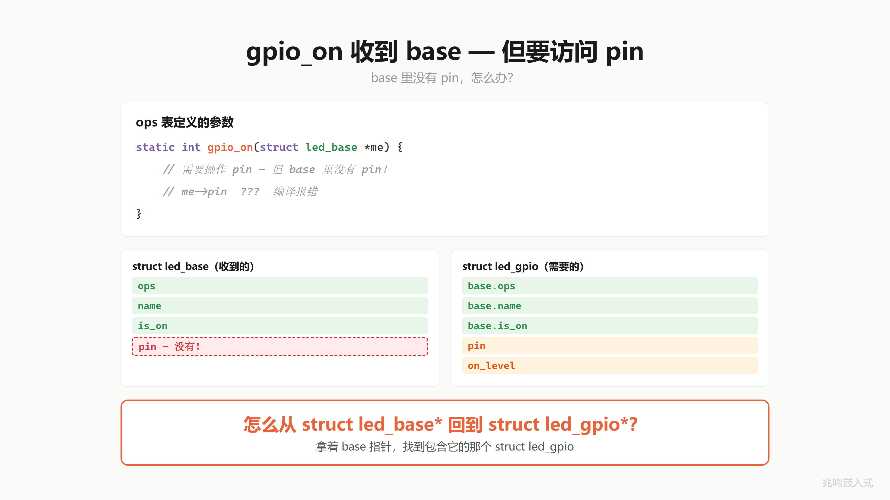
13.2 偏移量这件事
你需要的不是“假设 base 在第一个“，是“不管 base 在第几个，都对“。
仔细看，问题里有两个已知量：
- me 的地址（base 字段在内存里的位置）
- base 字段在 struct led_gpio 里的偏移
未知量：struct led_gpio 的起始地址。
只要把已知 1 减去已知 2，就是未知量。
struct led_gpio 起始地址 = base 地址 - base 在 struct 里的偏移
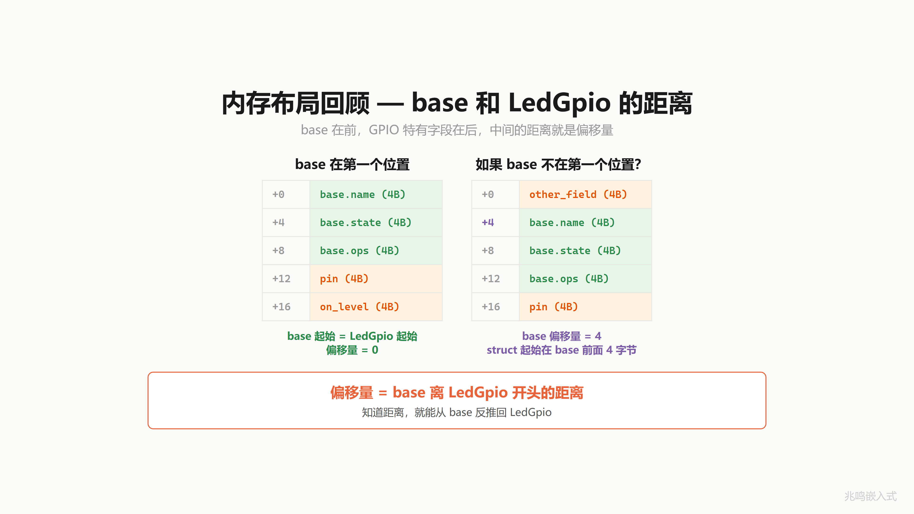
类比生活：你走在一条路上，看见路牌写“离起点 300 米“。退 300 米，回到起点。
13.3 编译期算偏移：offsetof
C 标准库（stddef.h）有一个宏专门干这件事：
#include <stddef.h>
size_t off = offsetof(struct led_gpio, base);
offsetof(T, m) 返回成员 m 在结构体 T 里的字节偏移。
它怎么知道？编译器知道每个 struct 怎么排（每个字段大小、对齐、padding 都是编译器算出来的），所以这个宏在编译期就能展开成一个常量。常见实现是：
#define offsetof(T, m) ((size_t)&(((T *)0)->m))
假装地址 0 处放了一个 T，看 m 在哪个位置。从 0 数起的距离就是偏移量。整个表达式编译期算完，运行时是一个立即数。
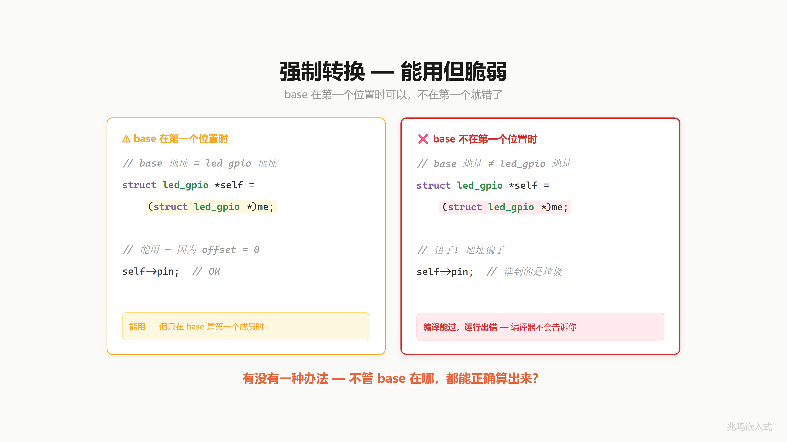
13.4 把它串起来：container_of
有了 offsetof，把“成员地址减偏移“这一招包成一个宏：
#define container_of(ptr, type, member) \
((type *)((char *)(ptr) - offsetof(type, member)))
三步：
(char *)(ptr)：转成字节指针，让减法按字节算（int *减 1 减的是 4 字节）。- offsetof(type, member)：减去成员在外层 struct 里的偏移，退回 struct 起点。(type *)：把结果按外层 struct 的类型解读。
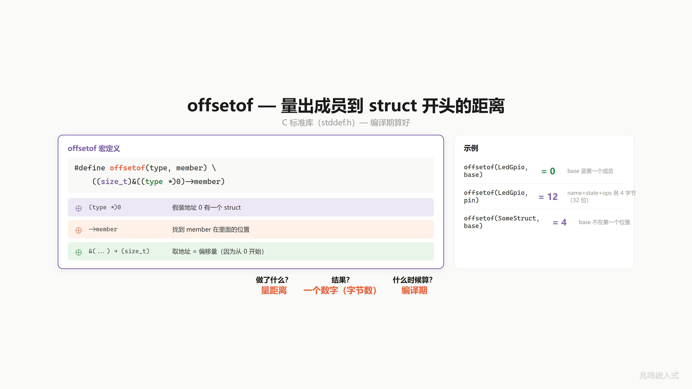
container_of 不在 C 标准里。它是 Linux 内核自己写的宏，用 offsetof 构造出来。完整版定义在 Linux 内核 v6.6 LTS include/linux/container_of.h 第 18-23 行（如何获取内核源码做参考阅读见附录 D）：
#define container_of(ptr, type, member) ({ \
void *__mptr = (void *)(ptr); \
static_assert(__same_type(*(ptr), ((type *)0)->member) || \
__same_type(*(ptr), void), \
"pointer type mismatch in container_of()"); \
((type *)(__mptr - offsetof(type, member))); })
内核版用 GNU C 的 statement expression（({ ... })）多包了一层。这一节把它每一行展开看。
第一行 void *__mptr = (void *)(ptr); 把传进来的 ptr 抓到一个局部 void 指针变量。两个理由：
- 避免重求值。如果你写
container_of(get_next_base(), struct led_gpio, base)，get_next_base()是函数调用。最小版那个三步宏会把(ptr)展开两次（一次进 char 强转、一次进 type 强转），等于调两次get_next_base()，第二次返回值可能完全不一样。statement expression 把 ptr 求值一次，存进__mptr，后面的步骤都用__mptr不再碰 ptr。 - 统一指针类型。后面要做减法，
__mptr用 void * 类型，让 GCC 把它当字节指针算（GCC 扩展里void *算术合法），写起来比(char *)干净。
第二行的 static_assert + __same_type：
static_assert(__same_type(*(ptr), ((type *)0)->member) ||
__same_type(*(ptr), void),
"pointer type mismatch in container_of()");
static_assert 是 C11 的关键字（C++11 也有），编译期断言。__same_type 是 GCC 扩展，比较两个表达式的类型是不是一致。整行字面意思：编译期检查 ptr 指向的类型和 ((type *)0)->member 的类型一致。
为什么必要？看个错例：
struct led_gpio {
struct led_base base;
uint8_t pin;
};
struct led_pwm {
struct led_base base;
uint8_t channel;
};
void f(struct led_base *me)
{
struct led_gpio *self = container_of(me, struct led_pwm, base);
/* 笔误，写成了 led_pwm */
self->pin = 99; /* 但 led_pwm 没有 pin 字段 */
}
老的最小版 container_of 这个错要等到链接报错才发现（甚至有时候不会报）。内核版的 static_assert 在你写 container_of 这一行就编译失败：*(ptr) 是 struct led_base，((struct led_pwm *)0)->base 也是 struct led_base，看起来相同。但如果你写的是 container_of(some_int_ptr, struct led_gpio, base)，*(some_int_ptr) 是 int，((struct led_gpio *)0)->base 是 struct led_base，不同，立刻报 pointer type mismatch in container_of()。
把“传错指针“挡在编译期，是这个 static_assert 的核心价值。第二个 OR 条件 __same_type(*(ptr), void) 是放行 void * 入参（少数代码这么用）。
第三行才是真正的减法：
((type *)(__mptr - offsetof(type, member)));
statement expression 的“返回值“是最后一条语句的值，整个 ({ ... }) 求值结果就是这条减法表达式的结果。
PC 上不依赖 GNU C 扩展的最小可用版就是 13.4 节开头那个三步宏，本书配套代码 pc/container_of.h 里就是这一份。逻辑等价，编译期约束少一点，PC 上跑没影响。但生产代码里我推荐用内核版，那个 static_assert 能在 commit 前帮你抓住 90% 的低级错。
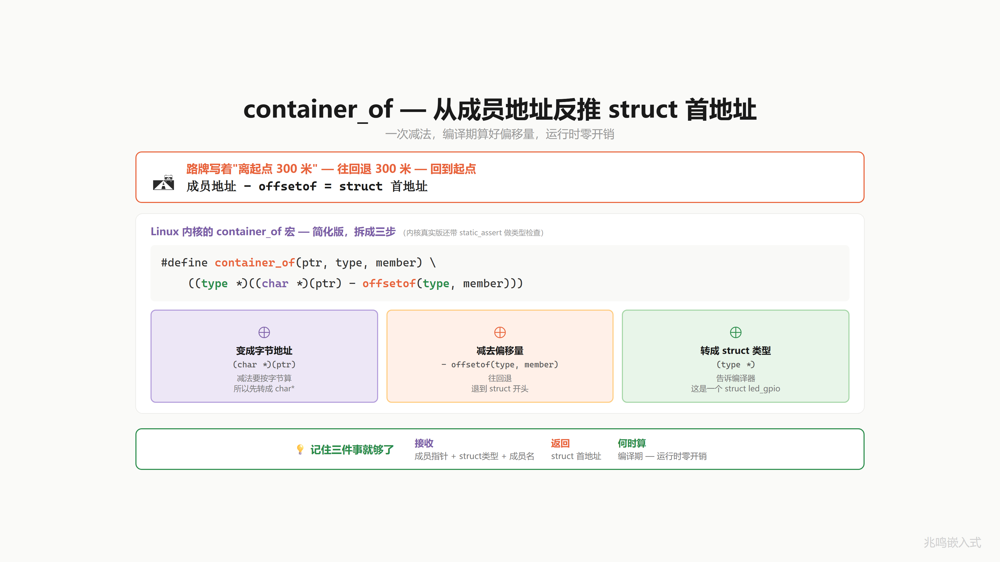
13.5 在 gpio_on 里用一下
把第 12 章的 gpio_on 改成 container_of 版本：
#include "container_of.h"
static int gpio_on(struct led_base *me)
{
struct led_gpio *self = container_of(me, struct led_gpio, base);
platform_gpio_write(self->pin, self->on_level);
me->is_on = true;
return 0;
}
注意第三个参数 base，是成员名，不是变量名。这一行字面意思：“给我从 me 出发，找到那个把 me 当作 base 字段的 struct led_gpio 对象”。
PWM、I2C 子类同套路，每个实现函数第一行都是 container_of。
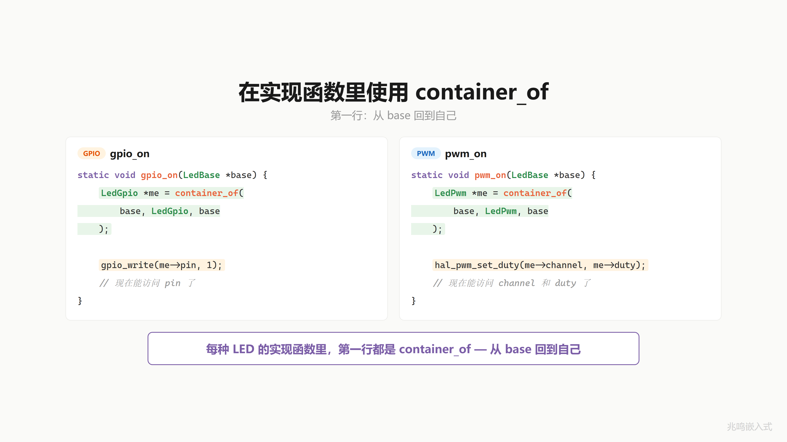
13.6 现在 base 想放哪就放哪
为了证明这一招与位置无关，配套代码故意把 GPIO 子类的 base 挪到第二个位置：
struct led_gpio {
uint16_t magic;
struct led_base base;
uint8_t pin;
bool on_level;
};
跑一下 ./demo：
offsetof(struct led_gpio, base) = 4
offsetof(struct led_pwm, base) = 0
offsetof(struct led_i2c, base) = 0
[GPIO] Pin10 init as OUTPUT
...
--- toggle ERR ---
[GPIO] Pin10 -> HIGH
[ERR] GPIO Pin10 ON (magic=0xCAFE)
[GPIO] Pin10 -> LOW
[ERR] GPIO Pin10 OFF
GPIO 的 base 在偏移 4，但 gpio_on 还是正确还原了 magic = 0xCAFE、pin = 10、on_level = true。container_of 和位置无关。
如果把 container_of 换回第 12 章的 (struct led_gpio *)me，magic 立刻变成乱码，self 的位置算错了 4 字节。
13.7 这个东西叫什么
你刚才做的这件事，拿到一个父类指针，反推回原本的子类对象，计算机科学里叫 向下转型（downcasting）。
C++ 的对应物是 dynamic_cast：
LedBase *base = ...;
LedGpio *gpio = dynamic_cast<LedGpio *>(base);
if (gpio) {
gpio->pin = ...;
}
dynamic_cast 干两件事：
- 编译期检查
LedBase和LedGpio之间真有继承关系（不然报错）。 - 运行时查 RTTI（Run-Time Type Information）表，确认 base 指针指向的是不是真的
LedGpio对象，不是就返回 nullptr。
C++ 给你一张安全网。代价是：每个含 virtual 函数的类要带上 type_info 元数据，每次 dynamic_cast 调用都要查表。
container_of 没有安全网，但代价是零：
container_of 一旦编译完，就是一条减法指令。零运行时开销。
C 用编译期数学解决了 C++ 用运行时类型信息解决的同一个问题。
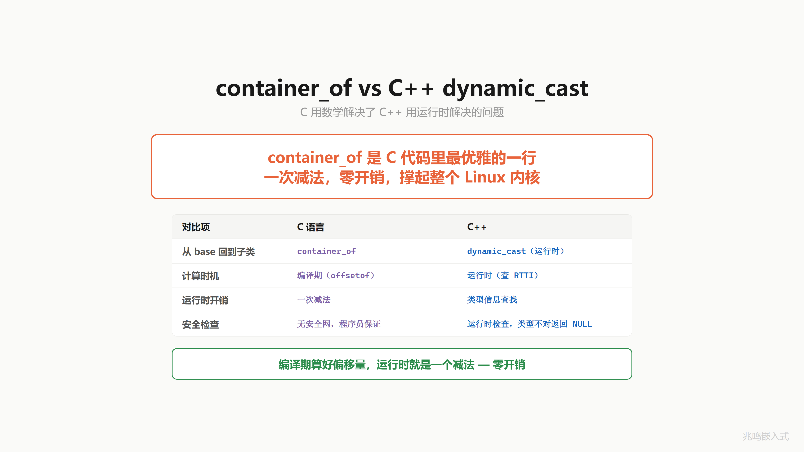
13.8 视频里没讲透的几个细节
13.8.1 编译器算偏移的过程
struct led_gpio {
uint16_t magic; /* 偏移 0，2 字节 */
struct led_base base; /* 偏移 4 */
uint8_t pin;
bool on_level;
};
为什么 base 不在偏移 2 而在偏移 4？因为 struct led_base 第一个成员是 const struct led_ops *ops，指针在 32 位机器上对齐 4 字节，所以编译器在 magic 后面塞 2 字节 padding，让 base 落到 4 的倍数。
offsetof(struct led_gpio, base) 在编译期算出 4，编进 container_of 宏。运行时就是一句 sub r0, r0, #4。
13.8.2 const 属性会丢
Linux 内核版 container_of 注释里特意写了：
WARNING: any const qualifier of @ptr is lost.
const struct led_base *me = ...;
struct led_gpio *self = container_of(me, struct led_gpio, base);
self->pin = 99; /* 编译过，但破坏了 me 的 const 承诺 */
container_of 的实现里有一步 (char *)(ptr)，强转之后 const 就没了。Linux 内核 6.5 之后引入了 container_of_const 用 _Generic 保住 const，但老代码到处都在用裸的 container_of。需要严格 const-correctness 时手动检查一下。
13.8.3 ptr 表达式不要有副作用
如果你写：
struct led_gpio *self = container_of(get_next_base(), struct led_gpio, base);
PC 版那个最小宏是 (type *)((char *)(ptr) - offsetof(...))，ptr 只出现一次。但内核版用 statement expression，提前把 ptr 抓进 __mptr 局部变量再用。如果你的项目 container_of 是宏 + 多次展开 ptr 的版本，get_next_base() 会被调多次，行为不可预测。
写 container_of 时尽量用一个已经求值好的指针变量当 ptr。这是 Linux 内核 commit 历史里反复出现的坑。
13.8.4 container_of 在内核里出现多少次
整个 Linux 内核源码 git grep -c container_of 大概 4-5 万处。从字符设备到网络栈到块层到内存管理子系统，到处都是这一行。
它撑起了 Linux 整套“基类（subsystem 的 struct）+ 子类（驱动 driver 的 struct）“模式。第 16 章会展开 GPIO 子系统，那里 container_of(desc->gdev->chip, struct gpio_chip_xxx, chip) 这种用法会反复出现。
13.8.5 一句话给自己一个三件套
如果你刚看完 13.4 节觉得头疼，正常。我当年第一次看 container_of 也琢磨了一段时间。
不需要现在就完全理解每一步。记住三件事就够：
- 入：成员指针 + 外层 struct 类型 + 成员名。
- 出：外层 struct 的指针。
- 代价：编译期算偏移，运行时一条减法。
后面写代码用几次，自然就懂了。
13.9 你现在的代码在 STM32 上长什么样
container_of 在 STM32 上是同一个宏，编译产物就是 ARM Cortex-M 的 SUB Rd, Rn, #imm。STM32 工程里你直接 #include <linux/types.h> 不行（那是内核头），但 STM32CubeIDE 的 arm-none-eabi-gcc 自带 <stddef.h>，offsetof 一直可用。把 13.4 节的三步宏放进 utility 头文件就能用。
完整 STM32 snippet 见 oop-in-c/code/13-container-of/stm32-snippet/。
13.10 你现在的代码在 Linux 用户态长什么样
Linux 用户态可以直接借 <stddef.h> 的 offsetof。绝大多数 user-space 项目自定义自己的 container_of 宏，比如 systemd / gobject / libnl 都各写一份，逻辑都一样。在 Linux 用户态写 OOP 风格 C 代码，container_of 这一招几乎是入场券。
完整 Linux 用户态 snippet 见 oop-in-c/code/13-container-of/linux-snippet/。
13.11 工业代码里的 container_of 长什么样
工业控制板 driver 里：
/* drivers/encoder/encoder.h */
struct encoder_base;
struct encoder_ops {
int (*read)(struct encoder_base *me, int32_t *count);
int (*reset)(struct encoder_base *me);
};
struct encoder_base {
const struct encoder_ops *ops;
const char *name;
};
/* drivers/encoder/encoder_quad.c */
struct encoder_quad {
struct encoder_base base;
int32_t count;
uint8_t a_pin;
uint8_t b_pin;
};
static int quad_read(struct encoder_base *me, int32_t *count)
{
struct encoder_quad *self = container_of(me, struct encoder_quad, base);
*count = self->count;
return 0;
}
整个工业项目里，10 多个 driver 模块，每个子类实现函数第一行都是 container_of。这一行已经稳定到所有同事看一眼就知道意思，不需要解释。
读完这一章你拿到内核源码、读到 driver 源码、读到 GObject 源码，第一行的 container_of 不会再让你头疼。
13.12 完整源码清单
把下面的代码块分别保存到对应的文件，目录结构和 oop-in-c/code/13-container-of/pc/ 一致。make && ./demo 即可跑通。
common/platform.h 和 common/platform_pc.c 跟 ch01 一字不变，本章 Makefile 通过 -I../../common 引用。完整代码见 ch01 末尾完整源码清单。
文件 1：main.c（60 行）
应用层。三个子类对象 g_err / g_stat / g_net 在 main 里声明，循环 toggle，故意把 GPIO 子类的 base 放到第二个位置，证明 container_of 与位置无关。
/* SPDX-License-Identifier: MIT */
/*
* main.c - container_of 演示
*
* GPIO 子类故意把 base 放到第二个位置，证明 container_of 与位置无关。
* 强转 (struct led_gpio *)me 在这种布局下会算错，container_of 一直对。
*/
#include "led.h"
#include "container_of.h"
#include <stddef.h>
#include <stdio.h>
static struct led_gpio g_err = {0};
static struct led_pwm g_stat = {0};
static struct led_i2c g_net = {0};
int main(void)
{
printf("=========================================\n");
printf(" ch13 - container_of\n");
printf("=========================================\n");
/* 让大家看一眼偏移量。GPIO 的 base 故意不在 0 位 */
printf("offsetof(struct led_gpio, base) = %u\n",
(unsigned)offsetof(struct led_gpio, base));
printf("offsetof(struct led_pwm, base) = %u\n",
(unsigned)offsetof(struct led_pwm, base));
printf("offsetof(struct led_i2c, base) = %u\n",
(unsigned)offsetof(struct led_i2c, base));
led_gpio_init(&g_err, "ERR", 10, true);
led_pwm_init (&g_stat, "STAT", 1, 50);
led_i2c_init (&g_net, "NET", 0, 0x20);
struct led_base *handles[] = {
&g_err.base,
&g_stat.base,
&g_net.base,
};
for (int i = 0; i < 3; i++) {
printf("\n--- toggle %s ---\n", handles[i]->name);
led_on(handles[i]);
led_off(handles[i]);
}
printf("\n--- breath stat ---\n");
led_set_brightness(handles[1], 60);
led_set_brightness(handles[1], 0);
printf("\n=========================================\n");
printf(" base offset != 0 still works\n");
printf("=========================================\n");
printf("\nPress Enter to exit...\n");
getchar();
return 0;
}
文件 2：container_of.h（30 行）
container_of 宏的最小可用版（PC 友好版）。三步：转字节指针、减偏移、转回外层 struct 指针。Linux 内核版多了 __same_type 编译期类型检查，最小版去掉这一层方便 PC 上任何 C99 编译器跑通。
/* SPDX-License-Identifier: MIT */
/*
* container_of.h - Linux 内核 container_of 宏的最小可用版本
*
* 完整版见 Linux 内核 include/linux/container_of.h，本文件保留同样的
* 三步语义、去掉 GCC 专属的类型检查（用 static_assert），便于 PC 上
* 用任何 C99 编译器跑通。
*/
#ifndef MY_CONTAINER_OF_H
#define MY_CONTAINER_OF_H
#include <stddef.h> /* offsetof */
/**
* container_of - 从成员指针反推外层 struct 起始地址
* @ptr: 指向某个成员的指针
* @type: 外层 struct 的类型
* @member: 该成员在外层 struct 里的名字
*
* 三步：
* 1. 把 ptr 转成字节指针（char *），让减法按字节算
* 2. 减去 member 在 type 里的偏移
* 3. 把结果转回 type *
*/
#define container_of(ptr, type, member) \
((type *)((char *)(ptr) - offsetof(type, member)))
#endif /* MY_CONTAINER_OF_H */
文件 3：led.h（66 行）
LED 父类 + 三个子类的声明。和 ch12 的差别：GPIO 子类前面塞了一个 uint16_t magic 字段，让 base 故意不在偏移 0。container_of 还能反推回去。
/* SPDX-License-Identifier: MIT */
/*
* led.h - led_base + 子类（ch13 版）
*
* 和 ch12 唯一的差别：子类实现里用 container_of 反推自己。
* base 不一定要在第一个位置，本章故意把 base 挪到中间，证明
* container_of 与位置无关。
*/
#ifndef LED_H
#define LED_H
#include <stdint.h>
#include <stdbool.h>
struct led_base;
struct led_ops {
int (*on)(struct led_base *me);
int (*off)(struct led_base *me);
int (*set_brightness)(struct led_base *me, uint8_t brightness);
};
struct led_base {
const struct led_ops *ops;
const char *name;
bool is_on;
};
int led_on(struct led_base *me);
int led_off(struct led_base *me);
int led_set_brightness(struct led_base *me, uint8_t brightness);
/* GPIO 子类：base 故意不放第一个位置 */
struct led_gpio {
uint16_t magic; /* 故意挡在前面，让 base 的偏移不为 0 */
struct led_base base;
uint8_t pin;
bool on_level;
};
void led_gpio_init(struct led_gpio *me, const char *name,
uint8_t pin, bool on_level);
/* PWM 子类 */
struct led_pwm {
struct led_base base;
uint8_t channel;
uint8_t duty;
};
void led_pwm_init(struct led_pwm *me, const char *name,
uint8_t channel, uint8_t duty);
/* I2C 子类 */
struct led_i2c {
struct led_base base;
uint8_t bus;
uint8_t addr;
};
void led_i2c_init(struct led_i2c *me, const char *name,
uint8_t bus, uint8_t addr);
#endif /* LED_H */
文件 4：led.c（163 行，和 ch12 比改了 6 处）
父类统一接口和 ch12 一字不变。子类实现里六处把 (struct led_xxx *)me 强转换成 container_of(me, struct led_xxx, base)。GPIO 子类 init 里多了一行 me->magic = 0xCAFE 用于演示。
/* SPDX-License-Identifier: MIT */
/*
* led.c - 子类实现里用 container_of 反推自己
*
* 和 ch12 的差别只有一处：(struct led_xxx *)me 强转换成
* container_of(me, struct led_xxx, base);
*
* GPIO 子类的 base 故意不在第一个位置，container_of 照样对。
*/
#include "led.h"
#include "container_of.h"
#include "platform.h"
#include <assert.h>
#include <stdio.h>
/* ============== 父类统一接口 ============== */
int led_on(struct led_base *me)
{
if (!me)
return -1;
/* on 是 LED 的核心能力，子类必须实现。调试构建里 assert 抓到
* 忘填的子类立刻 abort，Release 构建定义 NDEBUG 后 assert 整行
* 消失，0 运行时开销。 */
assert(me->ops && me->ops->on &&
"led_on: subclass must implement on()");
return me->ops->on(me);
}
int led_off(struct led_base *me)
{
if (!me)
return -1;
assert(me->ops && me->ops->off &&
"led_off: subclass must implement off()");
return me->ops->off(me);
}
int led_set_brightness(struct led_base *me, uint8_t brightness)
{
if (!me || !me->ops)
return -1;
/* set_brightness 是选填字段，子类没实现就走父类默认行为
* （这里默认 = 安静返回 0）。 */
if (!me->ops->set_brightness)
return 0;
return me->ops->set_brightness(me, brightness);
}
/* ============== 子类一：GPIO LED ============== */
static int gpio_on(struct led_base *me)
{
struct led_gpio *self = container_of(me, struct led_gpio, base);
platform_gpio_write(self->pin, self->on_level);
me->is_on = true;
printf(" [%s] GPIO Pin%u ON (magic=0x%04X)\n",
me->name, (unsigned)self->pin, (unsigned)self->magic);
return 0;
}
static int gpio_off(struct led_base *me)
{
struct led_gpio *self = container_of(me, struct led_gpio, base);
platform_gpio_write(self->pin, !self->on_level);
me->is_on = false;
printf(" [%s] GPIO Pin%u OFF\n", me->name, (unsigned)self->pin);
return 0;
}
static const struct led_ops gpio_ops = {
.on = gpio_on,
.off = gpio_off,
};
void led_gpio_init(struct led_gpio *me, const char *name,
uint8_t pin, bool on_level)
{
me->magic = 0xCAFE;
me->base.ops = &gpio_ops;
me->base.name = name;
me->base.is_on = false;
me->pin = pin;
me->on_level = on_level;
platform_gpio_init(pin, GPIO_MODE_OUTPUT);
platform_gpio_write(pin, !on_level);
}
/* ============== 子类二：PWM LED ============== */
static int pwm_on(struct led_base *me)
{
struct led_pwm *self = container_of(me, struct led_pwm, base);
printf(" [%s] PWM ch%u duty=%u%%\n",
me->name, (unsigned)self->channel, (unsigned)self->duty);
me->is_on = true;
return 0;
}
static int pwm_off(struct led_base *me)
{
struct led_pwm *self = container_of(me, struct led_pwm, base);
printf(" [%s] PWM ch%u duty=0%%\n",
me->name, (unsigned)self->channel);
me->is_on = false;
return 0;
}
static int pwm_set_brightness(struct led_base *me, uint8_t brightness)
{
struct led_pwm *self = container_of(me, struct led_pwm, base);
if (brightness > 100)
brightness = 100;
self->duty = brightness;
printf(" [%s] PWM ch%u duty=%u%%\n",
me->name, (unsigned)self->channel, (unsigned)brightness);
me->is_on = (brightness > 0);
return 0;
}
static const struct led_ops pwm_ops = {
.on = pwm_on,
.off = pwm_off,
.set_brightness = pwm_set_brightness,
};
void led_pwm_init(struct led_pwm *me, const char *name,
uint8_t channel, uint8_t duty)
{
me->base.ops = &pwm_ops;
me->base.name = name;
me->base.is_on = false;
me->channel = channel;
me->duty = duty;
}
/* ============== 子类三：I2C LED ============== */
static int i2c_on(struct led_base *me)
{
struct led_i2c *self = container_of(me, struct led_i2c, base);
printf(" [%s] I2C bus%u addr=0x%02X reg=0x01\n",
me->name, (unsigned)self->bus, (unsigned)self->addr);
me->is_on = true;
return 0;
}
static int i2c_off(struct led_base *me)
{
struct led_i2c *self = container_of(me, struct led_i2c, base);
printf(" [%s] I2C bus%u addr=0x%02X reg=0x00\n",
me->name, (unsigned)self->bus, (unsigned)self->addr);
me->is_on = false;
return 0;
}
static const struct led_ops i2c_ops = {
.on = i2c_on,
.off = i2c_off,
};
void led_i2c_init(struct led_i2c *me, const char *name,
uint8_t bus, uint8_t addr)
{
me->base.ops = &i2c_ops;
me->base.name = name;
me->base.is_on = false;
me->bus = bus;
me->addr = addr;
}
文件 5：Makefile（19 行）
# Makefile - ch13 container_of (PC)
CC = gcc
CFLAGS = -Wall -Wextra -std=c99 -I../../common
TARGET = demo
SRCS = main.c led.c ../../common/platform_pc.c
.PHONY: all clean run
all: $(TARGET)
$(TARGET): $(SRCS)
$(CC) $(CFLAGS) -o $(TARGET) $(SRCS)
run: $(TARGET)
./$(TARGET)
clean:
rm -f $(TARGET) $(TARGET).exe
跑一遍
cd oop-in-c/code/13-container-of/pc
make
./demo
期望输出
=========================================
ch13 - container_of
=========================================
offsetof(struct led_gpio, base) = 4
offsetof(struct led_pwm, base) = 0
offsetof(struct led_i2c, base) = 0
[GPIO] Pin10 init as OUTPUT
[GPIO] Pin10 -> LOW (OFF)
--- toggle ERR ---
[GPIO] Pin10 -> HIGH (ON)
[ERR] GPIO Pin10 ON (magic=0xCAFE)
[GPIO] Pin10 -> LOW (OFF)
[ERR] GPIO Pin10 OFF
--- toggle STAT ---
[STAT] PWM ch1 duty=50%
[STAT] PWM ch1 duty=0%
--- toggle NET ---
[NET] I2C bus0 addr=0x20 reg=0x01
[NET] I2C bus0 addr=0x20 reg=0x00
--- breath stat ---
[STAT] PWM ch1 duty=60%
[STAT] PWM ch1 duty=0%
=========================================
base offset != 0 still works
=========================================
Press Enter to exit...
13.13 跑一遍
cd oop-in-c/code/13-container-of/pc
make
./demo
输出节选：
offsetof(struct led_gpio, base) = 4
offsetof(struct led_pwm, base) = 0
offsetof(struct led_i2c, base) = 0
[GPIO] Pin10 init as OUTPUT
--- toggle ERR ---
[GPIO] Pin10 -> HIGH
[ERR] GPIO Pin10 ON (magic=0xCAFE)
magic = 0xCAFE 这一行证明 container_of 准确还原了原始 struct led_gpio 对象。
13.14 视频回放
下一章
类型机制完整了：上转下转都能干。
但还有一个洞：如果某种 LED 的 ops 表里 on 没填呢？应用层调 led_on(handle) 内部走到 me->ops->on(me)，NULL 被当函数地址跳过去，程序直接崩。
下一章：虚函数不实现会怎样。
下一篇：第 14 章 · 虚函数不实现会怎样 · 纯虚与抽象类
第 14 章 · 虚函数不实现会怎样 · 纯虚与抽象类
配套代码：oop-in-c/code/14-pure-virtual/
类型机制完整了，上转下转都能干。但 ops 表里有一颗雷你可能没意识到：如果某种 LED 在 init 的时候，ops->on 没填呢？
14.1 NULL 函数指针的崩溃
第 11 章演化出来的 led_on 长这样：
int led_on(struct led_base *me)
{
return me->ops->on(me);
}
如果某个子类 ops 表少填了 on：
static const struct led_ops broken_ops = {
.off = my_off,
/* on 忘了填 */
};
C 标准说静态存储的对象未显式初始化的字段会被零初始化，所以 broken_ops.on 是 NULL。
应用层调 led_on(handle)，进到 me->ops->on(me)，把 NULL 当函数地址跳过去。在 STM32 上一般是 0 地址（向量表起点），跳进去取出“函数指针“再跳，行为不可预测，多半是 HardFault 死循环。在 Linux 用户态收到 SIGSEGV，进程当场死。
编译器一句话不说就让你过了。它觉得你是故意填 NULL 的。
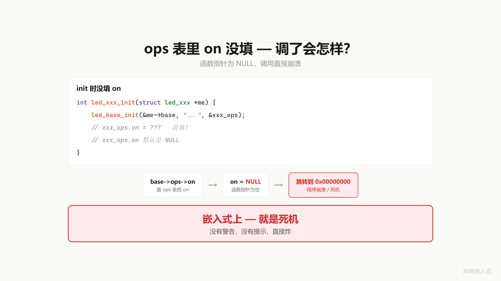
14.2 必填：调用前检查
第一种做法：在统一接口里加一行检查。
int led_on(struct led_base *me)
{
if (!me)
return -1;
assert(me->ops && me->ops->on &&
"led_on: subclass must implement on()");
return me->ops->on(me);
}
assert 在调试构建里直接 abort，告诉你哪个文件哪一行触发了。Release 构建把 NDEBUG 打开，assert 编译产物直接消失，0 开销。
调试期就抓住“忘记实现“的子类。这一类操作叫 必填，子类不实现，整个对象无效。
灯的 on 和 off 就是必填。一颗灯不能开、不能关，那还叫什么灯？合同里的必填项，不填合同无效。
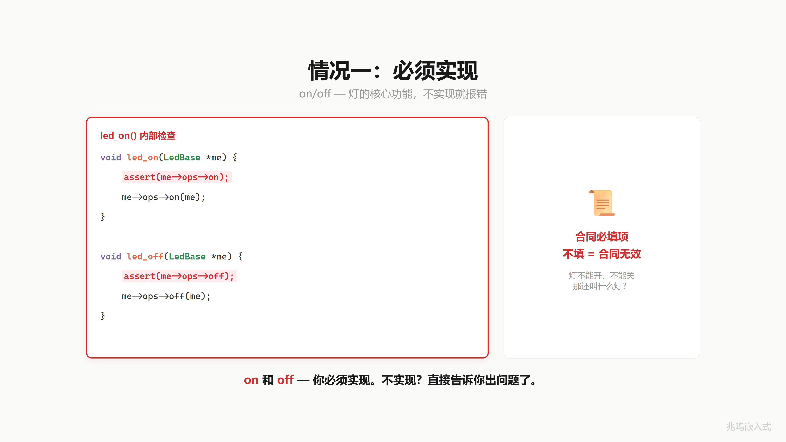
14.3 选填：父类提供默认行为
但有些操作不是每种子类都需要自己实现。
set_brightness：PWM 灯支持调光，GPIO 灯不支持。GPIO 灯只有“开“和“关“，没有亮度概念。
如果让 led_set_brightness 也走 assert 必填策略，GPIO 子类就得写一个空函数：
static int gpio_set_brightness(struct led_base *me, uint8_t b)
{
(void)me;
(void)b;
return 0; /* 啥都不做 */
}
每个不支持调光的子类都得写一个空函数，烦。
更好的做法：把“安静跳过“的默认行为放到统一接口里：
int led_set_brightness(struct led_base *me, uint8_t brightness)
{
if (!me || !me->ops)
return -1;
if (!me->ops->set_brightness) {
/* 默认行为：这种 LED 不支持调光，安静跳过 */
return 0;
}
return me->ops->set_brightness(me, brightness);
}
子类填了 set_brightness 就走子类。子类没填，统一接口走默认。ops 表本身从来不改，NULL 就是 NULL，处理这个 NULL 的责任落在父类的统一接口上。
这一类操作叫 选填。合同里的选填项，不填用默认条款，但合同主体没改过。
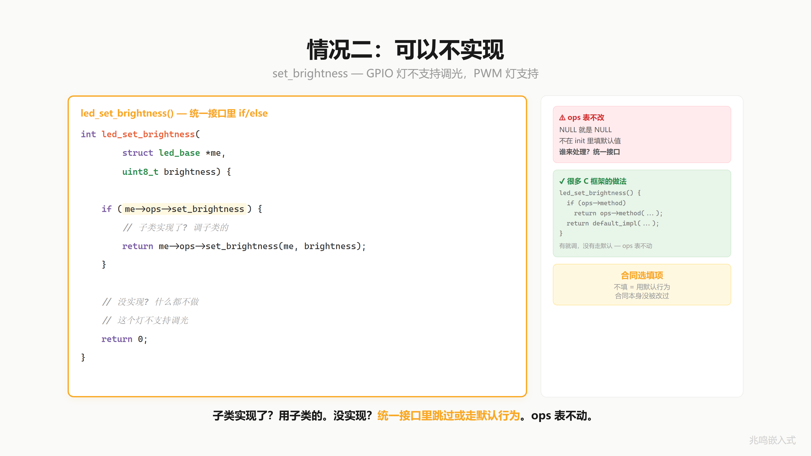
14.4 全必填：接口（interface）
把策略推到极致：如果一张 ops 表里每一个 op 都是必填呢？
struct sensor_ops {
int (*read)(struct sensor *me, int32_t *out);
int (*calibrate)(struct sensor *me);
int (*self_test)(struct sensor *me);
};
int sensor_read(struct sensor *me, int32_t *out)
{
assert(me->ops && me->ops->read);
return me->ops->read(me, out);
}
int sensor_calibrate(struct sensor *me)
{
assert(me->ops && me->ops->calibrate);
return me->ops->calibrate(me);
}
int sensor_self_test(struct sensor *me)
{
assert(me->ops && me->ops->self_test);
return me->ops->self_test(me);
}
三个 op 全部 assert。任何 sensor 子类要加进这套体系，三件套必须全填。少一个，调试期立刻爆。
这种“全是必填的 ops 表“，软件工程里叫 接口（interface）。一份只有规格、没有实现的合同。
真实工业项目里，传感器、电机、通讯模块这种“加入体系就要完整实现“的对象，ops 表都是接口风格。LED 这种“有些操作可有可无“的对象，是必填 + 选填混合。
14.5 三种策略一张表
把刚才三种放一起看：
| 策略 | C 里的写法 | C++ 里的写法 | 子类不填的后果 |
|---|---|---|---|
| 必填 | 统一接口里 assert | 纯虚函数 virtual void f()=0; | 调试期 assert 失败 / C++ 编译器拒绝实例化子类 |
| 选填 | 统一接口里检查 NULL，提供默认 | 虚函数有默认实现 virtual void f() {...} | 子类继承父类默认行为 |
| 全必填 | ops 表所有字段都走必填 | 全是纯虚函数的抽象类（“接口”） | 子类必须实现每一个 |
C++ 里编译器替你把这三种区分开。C 里你自己在统一接口里实现这套区分。底下逻辑一样。
Linux 内核的 struct file_operations 就是混合策略的代表。read、write 这种关键操作必填，unlocked_ioctl、mmap 这些选填，文件系统不支持就 NULL，VFS 层走默认行为。第 16 章会展开 file_operations 的实例。
14.6 C 对比 C++
class LedBase {
public:
virtual int on() = 0; /* 纯虚（必填） */
virtual int off() = 0; /* 纯虚 */
virtual int set_brightness(uint8_t b) { /* 虚（选填，有默认） */
(void)b;
return 0;
}
};
class LedGpio : public LedBase {
public:
int on() override { /* ... */ return 0; }
int off() override { /* ... */ return 0; }
/* set_brightness 不实现，继承父类默认 */
};
C++ 编译器看到子类没实现 on、off，编译期拒绝让你 LedGpio gpio_led;：抽象类不能直接实例化。
C 里编译器一句话不说，运行时 assert 才发现。区别只在出错的时机。
14.7 视频里没讲透的几个细节
14.7.1 assert 不是生产代码的最终防线
assert 在 release 构建里被 NDEBUG 关掉。生产代码里如果你只靠 assert，关掉之后那一行就成了空语句，NULL 又能打过来了。
更稳的做法：assert + 错误返回值并存。
int led_on(struct led_base *me)
{
if (!me)
return -1;
assert(me->ops && me->ops->on);
if (!me->ops || !me->ops->on)
return -2; /* release 构建的最后一道闸 */
return me->ops->on(me);
}
调试期 assert 帮你定位问题，生产期错误码兜底。两个都不能少。
14.7.2 为什么 ops 表用 const
工业项目里 ops 表都是这样定义：
static const struct led_ops gpio_ops = {
.on = gpio_on,
.off = gpio_off,
};
static const 意味着这个表在编译期就确定，链接到 .rodata 段（只读）。运行时任何修改都会触发段错误。
为什么要 const？两个理由：
- 安全：跑飞的代码可能踩到 ops 表，把
on改成野指针。const + .rodata 让这种踩踏立刻爆出来，比静默崩好。 - 缓存：所有相同子类的对象共享一份 ops 表（一个 ops 实例服务全部 GPIO LED 对象），只读段对 cache 友好。
14.7.3 接口还是混合：怎么选
什么时候用全必填的接口风格，什么时候用必填 + 选填混合？
如果 ops 里的每一个 op，子类都必须自己实现才有意义，那就是接口。例子：sensor 模块的 read/calibrate/self_test，每一个传感器都得自己提供。
如果 ops 里有些 op 是“通用默认行为可用、子类需要的话覆写“，那就是混合。例子：LED 的 set_brightness，大部分 LED 默认走“不支持调光“是合理的。
判据：没有合理的默认行为 → 必填 → 接口风格。有合理默认 → 选填 → 混合。
工业代码里两种都常见。读源码遇到一个 ops 表先看父类的统一接口怎么处理 NULL：每一个 NULL 都 assert，那是接口；有些 NULL 走默认行为，那是混合。
14.7.4 头文件里的那个分号（C++ 纯虚的 = 0）
virtual int on() = 0; /* 纯虚 */
C++ 这个 = 0 不是赋值。它是一个语法占位，告诉编译器“这个函数没实现，子类必须实现“。底层做法是给虚函数表的对应槽位填一个特殊地址（一般是 __cxa_pure_virtual），子类没覆写就调到这个特殊函数，运行时报“pure virtual function called“。
C 里你手动让 ops 表的对应字段保持 NULL，再在统一接口里 assert，做的是同一件事。C++ 把这一招用语法藏起来，C 让你看见齿轮。
14.7.5 默认行为长什么样最好
led_set_brightness 的默认是“安静跳过“。但默认也可以是别的。比如：
int led_set_brightness(struct led_base *me, uint8_t brightness)
{
if (!me || !me->ops)
return -1;
if (me->ops->set_brightness)
return me->ops->set_brightness(me, brightness);
/* 默认：用 on/off 模拟 brightness */
if (brightness > 50)
return me->ops->on(me);
else
return me->ops->off(me);
}
GPIO 灯虽然不支持真调光，亮度大于 50% 就开、小于就关，也是一种合理默认。
默认行为是父类设计的责任。子类要的“非默认“才填 ops 字段。
14.7.6 一个 C 里的接口经典案例：LinkedList ADT
如果你做过数据结构题，会写过这种东西：
/* 一份 LinkedList 接口 */
struct list_ops {
int (*push_front)(struct list *me, void *value);
int (*push_back) (struct list *me, void *value);
int (*pop_front) (struct list *me, void **out);
int (*pop_back) (struct list *me, void **out);
size_t (*size) (const struct list *me);
};
struct list {
const struct list_ops *ops;
};
任何想成为 list 的子类都得实现这 5 个 op 才上得了体系。
/* 单链表实现 */
struct sllist {
struct list base;
struct sllist_node *head;
size_t count;
};
/* 双链表实现 */
struct dllist {
struct list base;
struct dllist_node *head;
struct dllist_node *tail;
size_t count;
};
/* 数组列表实现 */
struct arraylist {
struct list base;
void **buf;
size_t capacity;
size_t count;
};
三种实现，时间复杂度不同（单链表 push_back O(n)，双链表 O(1)，数组 amortized O(1)），但对外暴露同一个 struct list 接口。应用层换实现一行不改。
这就是 C 里“接口“的标准案例，和你这一章学的全必填 ops 表机制完全一样。Java 的 java.util.List 接口、C++ STL 的容器适配器，骨架都是这一套。
整个 C 标准库（stdlib.h 的 qsort）也用这一招：你把比较函数（一个函数指针）作为参数传给 qsort，qsort 不知道你比的是 int、string、struct，只通过那个函数指针调你的实现。这是“参数化的接口“，单 op 版。
ops 表 + 必填策略不是 LED 专属。任何“我有多种实现，要让上层无感切换“的场景，都用这一招。
14.7.7 接口分离
如果一个 ops 表里既有“所有人必须做的事“，又有“少数人才做的事“，可以拆成两张表：
struct led_basic_ops { /* 所有 LED 必填 */
int (*on)(struct led_base *me);
int (*off)(struct led_base *me);
};
struct led_dim_ops { /* 仅可调光的 LED 填 */
int (*set_brightness)(struct led_base *me, uint8_t brightness);
};
struct led_base {
const struct led_basic_ops *basic; /* 必有 */
const struct led_dim_ops *dim; /* 可为 NULL */
const char *name;
};
GPIO 灯：basic 填、dim 留 NULL。PWM 灯：两个都填。
这是 SOLID 五原则里的“接口隔离原则“（ISP）的 C 写法。比单 ops 表混合更显式，但代价是父类多一个指针字段。Linux 内核里 file_operations 那张大表没拆，因为历史包袱；后出的子系统倾向于拆得更细。
14.8 你现在的代码在 STM32 上长什么样
assert 在 STM32 上要小心：默认实现会调 __assert_func，里面常常是 printf("..."); abort()。printf 在 MCU 上要 retarget UART，abort 默认会跑 _exit 死循环。生产代码倾向于把 assert 替换成项目自己的错误日志 + 复位机制：
#define ASSERT(cond) \
do { \
if (!(cond)) { \
error_log(__FILE__, __LINE__, #cond); \
system_reset(); \
} \
} while (0)
错误日志写到非易失存储，下次开机能拉出来看哪一行炸了。完整 STM32 snippet 见 oop-in-c/code/14-pure-virtual/stm32-snippet/。
14.9 你现在的代码在 Linux 用户态长什么样
Linux 用户态 assert 直接走 glibc 的实现，会把诊断信息打到 stderr 然后 abort。core dump 如果 ulimit 开了，gdb 拉出来能看到完整调用栈。
完整 Linux 用户态 snippet 见 oop-in-c/code/14-pure-virtual/linux-snippet/。
14.10 工业代码里的策略选择
工业控制板的 led 模块用混合策略（on/off 必填，set_brightness 选填），和本章 14.3 节一致。motor 模块就不一样，motor_base 的 ops 表有 24 个 op，全部必填：
struct motor_ops {
int (*init)(struct motor_base *me, const struct motor_cfg *cfg);
int (*deinit)(struct motor_base *me);
int (*enable)(struct motor_base *me);
int (*disable)(struct motor_base *me);
int (*set_target_position)(struct motor_base *me, int32_t pos);
int (*get_current_position)(struct motor_base *me, int32_t *pos);
int (*set_target_speed)(struct motor_base *me, int32_t speed);
int (*emergency_stop)(struct motor_base *me);
/* ... 还有 16 个 ... */
};
电机这种安全相关、行为复杂的对象，每一个 op 子类都必须明确表态，能做就实现，不能做就报错返回。没有“合理默认“。motor_ops 是接口风格的典型。
判据回到 14.7.3：有没有合理的默认。没有，全必填，做成接口。有，混合。
14.11 完整源码清单
把下面的代码块分别保存到对应的文件，目录结构和 oop-in-c/code/14-pure-virtual/pc/ 一致。make && ./demo 即可跑通。
common/platform.h 和 common/platform_pc.c 跟 ch01 一字不变，本章 Makefile 通过 -I../../common 引用。完整代码见 ch01 末尾完整源码清单。
文件 1：main.c（90 行）
应用层。在 main 里展示三种策略：GPIO 灯 set_brightness 走默认行为不崩；PWM 灯三件套全填；temp_sensor 是一个完整接口实现，三件套都进子类。
/* SPDX-License-Identifier: MIT */
/*
* main.c - 演示三种 ops 表策略
*
* 1. GPIO 灯不支持调光：set_brightness 选填，调到走默认行为，不崩
* 2. PWM 灯三件套全填：每个调用都走子类实现
* 3. sensor 三件套全必填：演示 sensor_read 调到一个完整子类的情形
*
* 故意演示一段"忘了填 on" 的代码（注释保留），打开 NDEBUG 没开的话会触发 assert。
*/
#include "led.h"
#include <stdio.h>
/* 一个完整的 sensor 子类：温度传感器 */
struct temp_sensor {
struct sensor base;
int32_t last_value;
};
static int temp_read(struct sensor *me, int32_t *out)
{
struct temp_sensor *self = (struct temp_sensor *)me;
self->last_value = 25;
*out = self->last_value;
printf(" [%s] read = %d C\n", me->name, *out);
return 0;
}
static int temp_calibrate(struct sensor *me)
{
printf(" [%s] calibrate\n", me->name);
return 0;
}
static int temp_self_test(struct sensor *me)
{
printf(" [%s] self_test\n", me->name);
return 0;
}
static const struct sensor_ops temp_ops = {
.read = temp_read,
.calibrate = temp_calibrate,
.self_test = temp_self_test,
};
int main(void)
{
struct led_gpio g_led_err;
struct led_pwm g_led_stat;
struct temp_sensor g_temp;
led_gpio_init(&g_led_err, "ERR", 10, true);
led_pwm_init (&g_led_stat, "STAT", 1, 50);
g_temp.base.ops = &temp_ops;
g_temp.base.name = "TEMP";
g_temp.last_value = 0;
printf("\n=========================================\n");
printf(" ch14 - pure virtual / virtual / interface\n");
printf("=========================================\n");
printf("\n--- 1. GPIO LED, no dimming support ---\n");
led_on(&g_led_err.base);
led_off(&g_led_err.base);
/* set_brightness 没填，统一接口走默认行为，不崩 */
led_set_brightness(&g_led_err.base, 50);
printf("\n--- 2. PWM LED, full ops ---\n");
led_on(&g_led_stat.base);
led_set_brightness(&g_led_stat.base, 70);
led_off(&g_led_stat.base);
printf("\n--- 3. sensor, all required ---\n");
int32_t v = 0;
sensor_self_test(&g_temp.base);
sensor_calibrate(&g_temp.base);
sensor_read(&g_temp.base, &v);
printf("\n=========================================\n");
printf(" 3 strategies: required / optional / contract\n");
printf("=========================================\n");
printf("\nPress Enter to exit...\n");
getchar();
return 0;
}
文件 2：container_of.h（11 行）
container_of 宏的最小可用版。和 ch13 同源，缩写一些注释。
/* SPDX-License-Identifier: MIT */
#ifndef MY_CONTAINER_OF_H
#define MY_CONTAINER_OF_H
#include <stddef.h>
#define container_of(ptr, type, member) \
((type *)((char *)(ptr) - offsetof(type, member)))
#endif
文件 3：led.h（75 行）
LED 父类（必填 + 选填混合）+ sensor 接口（全必填）。注释把每一个 op 标了“必填“ / “选填”，看一眼就知道策略。
/* SPDX-License-Identifier: MIT */
/*
* led.h - 三种 ops 表策略：必填 / 选填 / 全必填
*
* 必填（纯虚函数）：on / off。子类不填，led_on 内部 assert 失败。
* 选填（带默认行为的虚函数）：set_brightness。子类不填，统一接口默认跳过。
* 全必填（接口）：示例 struct sensor_ops，三个 op 全是必填。
*/
#ifndef LED_H
#define LED_H
#include <stdint.h>
#include <stdbool.h>
struct led_base;
struct led_ops {
int (*on)(struct led_base *me); /* 必填 */
int (*off)(struct led_base *me); /* 必填 */
int (*set_brightness)(struct led_base *me, /* 选填 */
uint8_t brightness);
};
struct led_base {
const struct led_ops *ops;
const char *name;
bool is_on;
};
int led_on(struct led_base *me);
int led_off(struct led_base *me);
int led_set_brightness(struct led_base *me, uint8_t brightness);
/* GPIO 子类：只填 on / off，set_brightness 留空（不支持调光） */
struct led_gpio {
struct led_base base;
uint8_t pin;
bool on_level;
};
void led_gpio_init(struct led_gpio *me, const char *name,
uint8_t pin, bool on_level);
/* PWM 子类：三件套全填 */
struct led_pwm {
struct led_base base;
uint8_t channel;
uint8_t duty;
};
void led_pwm_init(struct led_pwm *me, const char *name,
uint8_t channel, uint8_t duty);
/* ============== 接口（全必填）示例 ============== */
struct sensor;
struct sensor_ops {
int (*read)(struct sensor *me, int32_t *out); /* 全必填 */
int (*calibrate)(struct sensor *me); /* 全必填 */
int (*self_test)(struct sensor *me); /* 全必填 */
};
struct sensor {
const struct sensor_ops *ops;
const char *name;
};
int sensor_read(struct sensor *me, int32_t *out);
int sensor_calibrate(struct sensor *me);
int sensor_self_test(struct sensor *me);
#endif /* LED_H */
文件 4：led.c（166 行）
父类统一接口实现：led_on / led_off 走必填策略（assert + 错误返回）；led_set_brightness 走选填策略（NULL 检查 + 默认跳过）；sensor_read / calibrate / self_test 走全必填策略（每一个都 assert）。三种策略合在一份文件里看。
/* SPDX-License-Identifier: MIT */
/*
* led.c - 父类统一接口实现（必填 + 选填）
*
* led_on / led_off：必填。ops 没填或为 NULL，立刻 assert 报错并返回错误码。
* 这一类对应 C++ 的纯虚函数。
* led_set_brightness：选填。ops 没填，安静返回 0。这一类对应 C++ 的虚函数
* （父类提供默认行为）。
*
* sensor_xxx 三件套：全必填，每一个都 assert。这是接口（interface）的形态。
*/
#include "led.h"
#include "container_of.h"
#include "platform.h"
#include <assert.h>
#include <stdio.h>
/* ============== 父类统一接口（必填 + 选填混合） ============== */
int led_on(struct led_base *me)
{
if (!me)
return -1;
assert(me->ops && me->ops->on && "led_on: subclass must implement on()");
return me->ops->on(me);
}
int led_off(struct led_base *me)
{
if (!me)
return -1;
assert(me->ops && me->ops->off && "led_off: subclass must implement off()");
return me->ops->off(me);
}
int led_set_brightness(struct led_base *me, uint8_t brightness)
{
if (!me || !me->ops)
return -1;
if (!me->ops->set_brightness) {
/* 默认行为：这种 LED 不支持调光，安静跳过 */
printf(" [%s] no dimming support, skip (brightness=%u)\n",
me->name, (unsigned)brightness);
return 0;
}
return me->ops->set_brightness(me, brightness);
}
/* ============== GPIO 子类：只填 on / off ============== */
static int gpio_on(struct led_base *me)
{
struct led_gpio *self = container_of(me, struct led_gpio, base);
platform_gpio_write(self->pin, self->on_level);
me->is_on = true;
printf(" [%s] GPIO Pin%u ON\n", me->name, (unsigned)self->pin);
return 0;
}
static int gpio_off(struct led_base *me)
{
struct led_gpio *self = container_of(me, struct led_gpio, base);
platform_gpio_write(self->pin, !self->on_level);
me->is_on = false;
printf(" [%s] GPIO Pin%u OFF\n", me->name, (unsigned)self->pin);
return 0;
}
/* set_brightness 故意不填，GPIO 不支持调光 */
static const struct led_ops gpio_ops = {
.on = gpio_on,
.off = gpio_off,
};
void led_gpio_init(struct led_gpio *me, const char *name,
uint8_t pin, bool on_level)
{
me->base.ops = &gpio_ops;
me->base.name = name;
me->base.is_on = false;
me->pin = pin;
me->on_level = on_level;
platform_gpio_init(pin, GPIO_MODE_OUTPUT);
}
/* ============== PWM 子类：三件套全填 ============== */
static int pwm_on(struct led_base *me)
{
struct led_pwm *self = container_of(me, struct led_pwm, base);
printf(" [%s] PWM ch%u duty=%u%%\n",
me->name, (unsigned)self->channel, (unsigned)self->duty);
me->is_on = true;
return 0;
}
static int pwm_off(struct led_base *me)
{
struct led_pwm *self = container_of(me, struct led_pwm, base);
printf(" [%s] PWM ch%u duty=0%%\n",
me->name, (unsigned)self->channel);
me->is_on = false;
return 0;
}
static int pwm_set_brightness(struct led_base *me, uint8_t brightness)
{
struct led_pwm *self = container_of(me, struct led_pwm, base);
if (brightness > 100)
brightness = 100;
self->duty = brightness;
printf(" [%s] PWM ch%u duty=%u%%\n",
me->name, (unsigned)self->channel, (unsigned)brightness);
me->is_on = (brightness > 0);
return 0;
}
static const struct led_ops pwm_ops = {
.on = pwm_on,
.off = pwm_off,
.set_brightness = pwm_set_brightness,
};
void led_pwm_init(struct led_pwm *me, const char *name,
uint8_t channel, uint8_t duty)
{
me->base.ops = &pwm_ops;
me->base.name = name;
me->base.is_on = false;
me->channel = channel;
me->duty = duty;
}
/* ============== sensor 接口：三件套全必填 ============== */
int sensor_read(struct sensor *me, int32_t *out)
{
if (!me || !out)
return -1;
assert(me->ops && me->ops->read &&
"sensor.read is part of the interface contract");
return me->ops->read(me, out);
}
int sensor_calibrate(struct sensor *me)
{
if (!me)
return -1;
assert(me->ops && me->ops->calibrate &&
"sensor.calibrate is part of the interface contract");
return me->ops->calibrate(me);
}
int sensor_self_test(struct sensor *me)
{
if (!me)
return -1;
assert(me->ops && me->ops->self_test &&
"sensor.self_test is part of the interface contract");
return me->ops->self_test(me);
}
文件 5：Makefile（19 行）
# Makefile - ch14 pure virtual (PC)
CC = gcc
CFLAGS = -Wall -Wextra -std=c99 -I../../common
TARGET = demo
SRCS = main.c led.c ../../common/platform_pc.c
.PHONY: all clean run
all: $(TARGET)
$(TARGET): $(SRCS)
$(CC) $(CFLAGS) -o $(TARGET) $(SRCS)
run: $(TARGET)
./$(TARGET)
clean:
rm -f $(TARGET) $(TARGET).exe
跑一遍
cd oop-in-c/code/14-pure-virtual/pc
make
./demo
期望输出
[GPIO] Pin10 init as OUTPUT
=========================================
ch14 - pure virtual / virtual / interface
=========================================
--- 1. GPIO LED, no dimming support ---
[GPIO] Pin10 -> HIGH (ON)
[ERR] GPIO Pin10 ON
[GPIO] Pin10 -> LOW (OFF)
[ERR] GPIO Pin10 OFF
[ERR] no dimming support, skip (brightness=50)
--- 2. PWM LED, full ops ---
[STAT] PWM ch1 duty=50%
[STAT] PWM ch1 duty=70%
[STAT] PWM ch1 duty=0%
--- 3. sensor, all required ---
[TEMP] self_test
[TEMP] calibrate
[TEMP] read = 25 C
=========================================
3 strategies: required / optional / contract
=========================================
Press Enter to exit...
14.12 跑一遍
cd oop-in-c/code/14-pure-virtual/pc
make
./demo
输出节选：
--- 1. GPIO LED, no dimming support ---
[GPIO] Pin10 -> HIGH
[ERR] GPIO Pin10 ON
[GPIO] Pin10 -> LOW
[ERR] GPIO Pin10 OFF
[ERR] no dimming support, skip (brightness=50)
--- 2. PWM LED, full ops ---
[STAT] PWM ch1 duty=50%
[STAT] PWM ch1 duty=70%
[STAT] PWM ch1 duty=0%
--- 3. sensor, all required ---
[TEMP] self_test
[TEMP] calibrate
[TEMP] read = 25 C
GPIO 灯调 set_brightness 走默认行为（“no dimming support, skip”），不崩。PWM 灯三件套全填，每次都走子类。sensor 三件套全必填，调过去都能进子类实现。
如果你想体验“忘了填 on“的崩溃：把 led_gpio_init 里的 me->base.ops = &gpio_ops; 改成 me->base.ops = NULL;，再编译跑，led_on 里的 assert 立刻报错。
14.13 视频回放
下一章
封装、继承、多态、向上转型、向下转型、纯虚 / 虚 / 接口，C 里做 OOP 的全套武器你都见过了。
但你还没见过它们组装在一起在一个真实项目里跑的样子。下一章把武器全部组装起来，演示一套完整的 LED 框架，换硬件应用层 0 改动。
下一篇：第 15 章 · 换硬件不改应用 · Platform 抽象到底
第 15 章 · 换硬件不改应用 · Platform 抽象到底
配套代码：oop-in-c/code/15-platform/
封装、继承、多态、向上转型、向下转型、纯虚 / 选填 / 接口，C 里做 OOP 的全部武器你都见过了。
这一章不引入任何新概念。把武器全部组装起来，演示一套完整的 LED 框架。同一份应用代码，运行时切换 PC、STM32、Linux 三种 platform，零修改。
这是 platform 层 ops 化的高潮章。
15.1 四层架构
打开配套代码 oop-in-c/code/15-platform/pc/ 你会看到这些文件：
pc/
├── platform_ops.h, platform_ops_pc.c
├── platform_ops_stm32_mock.c
├── platform_ops_linux_mock.c
├── led.h, led.c
├── leds.h, board_init.c
├── app.h, app.c
├── main.c
└── Makefile
按调用方向从上往下分四层：
应用层 app.c alarm_blink / status_breathe / power_on_test
LED 驱动层 led.c led_base + led_gpio / led_pwm / led_i2c
板级层 board_init.c 实例化、绑定全局句柄
平台层 platform_*.c GPIO / I2C 物理操作
每一层只调用下一层。每一层只关心自己。
15.2 父类层：led_base + 必填选填
led.h / led.c 是父类层：
struct led_ops {
int (*on)(struct led_base *me);
int (*off)(struct led_base *me);
int (*set_brightness)(struct led_base *me, uint8_t brightness);
};
struct led_base {
const struct led_ops *ops;
const char *name;
bool is_on;
};
统一接口分两种处理：
int led_on(struct led_base *me)
{
if (!me)
return -1;
/* 必填：on 是 LED 的核心能力，子类必须实现 */
assert(me->ops && me->ops->on &&
"led_on: subclass must implement on()");
return me->ops->on(me);
}
int led_set_brightness(struct led_base *me, uint8_t b)
{
if (!me || !me->ops)
return -1;
if (!me->ops->set_brightness) { /* 选填，默认跳过 */
printf(" [%s] no dimming, skip\n", me->name);
return 0;
}
return me->ops->set_brightness(me, b);
}
on / off 是必填，子类不实现就 assert 报错。set_brightness 是选填，子类不实现就走默认行为。
15.3 子类层：三种硬件
子类把 base 嵌在第一个字段（或任意位置，配套代码 ch13 已经证明 container_of 不挑位置），后面追加自己的字段：
struct led_gpio {
struct led_base base;
uint8_t pin;
bool on_level;
};
struct led_pwm {
struct led_base base;
uint8_t channel;
uint8_t duty;
};
struct led_i2c {
struct led_base base;
uint8_t bus;
uint8_t addr;
};
每个子类的实现函数第一行都是 container_of：
static int gpio_on(struct led_base *me)
{
struct led_gpio *self = container_of(me, struct led_gpio, base);
platform_gpio_write(self->pin, self->on_level);
me->is_on = true;
return 0;
}
注意 platform_gpio_write，子类不直接碰寄存器，调 platform 层的封装函数。封装函数内部走的是 ops 分发（下一节展开），但驱动层这里只见普通函数。
GPIO 子类只填 on / off，set_brightness 留空，GPIO 灯没有调光能力。PWM 子类三件套全填。I2C 子类填 on / off。
static const struct led_ops gpio_ops = { .on = gpio_on, .off = gpio_off };
static const struct led_ops pwm_ops = {
.on = pwm_on,
.off = pwm_off,
.set_brightness = pwm_set_brightness,
};
static const struct led_ops i2c_ops = { .on = i2c_on, .off = i2c_off };
15.4 板级层：唯一认识硬件的文件
board_init.c，整个工程里唯一认识硬件的文件：
static struct led_gpio s_led_err; /* 文件作用域，外部不可见 */
static struct led_pwm s_led_status;
static struct led_i2c s_led_net;
struct led_base *g_led_error;
struct led_base *g_led_status;
struct led_base *g_led_network;
void board_init(void)
{
led_gpio_init(&s_led_err, "ERR", 10, true);
led_pwm_init (&s_led_status, "STAT", 1, 50);
led_i2c_init (&s_led_net, "NET", 0, 0x20);
g_led_error = &s_led_err.base;
g_led_status = &s_led_status.base;
g_led_network = &s_led_net.base;
}
报警灯用 GPIO，状态灯用 PWM，网络灯挂在 I2C 扩展芯片上。三种不同硬件，通过同一个 struct led_base * 对外暴露。
15.5 应用层：grep 零硬件字样
app.c：
#include "leds.h"
void alarm_blink(void)
{
led_on(g_led_error);
led_off(g_led_error);
}
void status_breathe(void)
{
led_set_brightness(g_led_status, 30);
led_set_brightness(g_led_status, 80);
led_set_brightness(g_led_status, 0);
}
void power_on_test(void)
{
led_on(g_led_error); led_off(g_led_error);
led_on(g_led_status); led_off(g_led_status);
led_on(g_led_network); led_off(g_led_network);
}
打开终端：
grep -n "led_gpio\|led_pwm\|led_i2c" app.c # 0
grep -n "gpio_write\|HAL_GPIO\|sysfs" app.c # 0
grep -n "BSRR\|0x[0-9A-F]" app.c # 0
应用层一个硬件字样都没有。
15.6 platform 层的内部演化：从直接实现到 ops 分发
到这里应用层、led 驱动层、板级层全部 ops 化了。还差一层：platform 层。
ch01 到 ch10 platform 层是直接实现，没有 ops 表：
/* common/platform.h - 对外接口 */
void platform_gpio_init(uint8_t pin, uint8_t mode);
void platform_gpio_write(uint8_t pin, bool value);
bool platform_gpio_read(uint8_t pin);
/* common/platform_pc.c - 直接实现 */
void platform_gpio_write(uint8_t pin, bool value)
{
printf("[GPIO] Pin%u -> %s\n", pin, value ? "HIGH" : "LOW");
}
这一版有一个硬限制：链 platform_pc.c 这份目标文件就跑 PC 实现，链 platform_stm32.c 就跑 STM32 实现。运行时切换不了。
但工业项目里有一个高频需求：同一个二进制文件，启动期或测试期决定用哪一套 GPIO 实现。比如 unit test 要在 CI 流水线里跑，模拟环境用 PC 实现，回到真机用 STM32 实现，源码 0 改、binary 0 改、只换一个全局指针。
这一节就把 platform 层重新组织成 ops 分发版。
15.6.1 关键不变量：对外接口一字不改
/* common/platform.h - 这一份从 ch01 到 ch20 一字不改 */
void platform_gpio_init(uint8_t pin, uint8_t mode);
void platform_gpio_write(uint8_t pin, bool value);
bool platform_gpio_read(uint8_t pin);
驱动层、应用层调的就是这几个普通 C 函数。从 ch01 起到 ch15、到附录 B 的真实 STM32 工程，签名 0 变化。
这是 SOLID 接口隔离原则在 platform 层的落地：上层不知道也不该知道下层是直接实现还是 ops 分发。
pin 编码：把 port 藏进单参数
platform_gpio_write(uint8_t pin, bool value) 这个签名只有一个 pin 参数。但真实 MCU 上 GPIO 是 port (A/B/C/D…) + 引脚号 (0-15) 两层结构。怎么用一个参数表达？
工业代码里 pin 是个编码值。最简单的编码：
/* 高 4 位放 port 索引（A=0, B=1, C=2, D=3, ...），低 4 位放引脚号 */
#define PIN(port, num) (((port) << 4) | ((num) & 0xF))
#define PIN_PORT(pin) (((pin) >> 4) & 0xF)
#define PIN_NUM(pin) ((pin) & 0xF)
#define PORT_A 0
#define PORT_B 1
#define PORT_C 2
#define PORT_D 3
调用方写：
platform_gpio_write(PIN(PORT_D, 12), true); /* PD12 高 */
platform_gpio_write(PIN(PORT_A, 5), false); /* PA5 低 */
platform 层内部解码：
static void stm32_gpio_write(uint8_t pin, bool value)
{
GPIO_TypeDef *gpio = port_to_gpio(PIN_PORT(pin)); /* 0 -> GPIOA */
uint16_t mask = (1u << PIN_NUM(pin));
HAL_GPIO_WritePin(gpio, mask,
value ? GPIO_PIN_SET : GPIO_PIN_RESET);
}
这一招让接口永远只有一个 pin 参数，无论底下是单 port 的小芯片还是 12 个 port 的大芯片。port 信息只在 platform 层内部解码，上层完全感知不到。
工业级落地：
| 项目 | 接口签名 | port 处理 |
|---|---|---|
| 本书 / 附录 B | platform_gpio_write(uint8_t pin, bool) | PIN(port, num) 编码 |
| Linux 内核 | gpio_set_value(unsigned int gpio, int) | gpio 是全局编号，gpiochip 注册时 base + offset |
| 工业控制板 | platform_pin_write(int32_t pin, int32_t) | GET_PIN(PORTx, PIN) 编码（位移 + 端口宏） |
| Zephyr | gpio_pin_set_dt(spec, value) | spec 是设备树编译出的句柄，包含 port + pin |
| STM32 HAL（反例） | HAL_GPIO_WritePin(GPIO_TypeDef*, uint16_t, ...) | 暴露 GPIO_TypeDef 指针给驱动层 |
前四个都把 port 藏起来了，HAL 是反例。这就是为什么直接基于 HAL 写驱动很难做跨芯片移植。这本书 + Linux + 工业控制板都站在“封装 port“这一边。
15.6.2 platform 层内部三个文件
ch15 把 platform 层拆成三块：
platform_ops.h 内部 ops 表 + 三个 const 实例的声明
platform_dispatch.c 封装函数实现（platform_gpio_xxx）+ 切换 API
platform_ops_pc.c PC 实例
platform_ops_stm32_mock.c STM32 实例
platform_ops_linux_mock.c Linux 实例
platform_ops.h 是 platform 层内部头文件，只有 platform 层自己 include。驱动层永远 include platform.h（封装函数声明），永远不 include platform_ops.h。
/* platform_ops.h - 只给 platform 层自己用 */
struct platform_ops {
const char *name;
void (*gpio_init)(uint8_t pin, uint8_t mode);
void (*gpio_write)(uint8_t pin, bool value);
bool (*gpio_read)(uint8_t pin);
void (*gpio_deinit)(uint8_t pin);
};
extern const struct platform_ops platform_pc;
extern const struct platform_ops platform_stm32_mock;
extern const struct platform_ops platform_linux_mock;
void platform_select(const struct platform_ops *p);
const char *platform_name(void);
15.6.3 platform_dispatch.c：封装函数走 ops 分发
platform_dispatch.c 维护 platform 层内部的 ops 指针，并实现对外的封装函数：
/* platform_dispatch.c */
#include "platform.h"
#include "platform_ops.h"
static const struct platform_ops *g_platform_ops = &platform_pc;
void platform_select(const struct platform_ops *p)
{
if (p) {
g_platform_ops = p;
printf(">>> platform switched to: %s\n", p->name);
}
}
const char *platform_name(void)
{
return g_platform_ops ? g_platform_ops->name : "(unset)";
}
void platform_gpio_write(uint8_t pin, bool value)
{
if (g_platform_ops && g_platform_ops->gpio_write)
g_platform_ops->gpio_write(pin, value);
}
/* platform_gpio_init / read / deinit 同套路 */
g_platform_ops 是 platform 层的私有状态，文件作用域，外部链接不到。换平台只改这一个指针。
15.6.4 三个 ops 实例
ch15 同时编译进三个 platform_ops 实例。三份骨架完全一致，只是函数体不同。
PC 版（platform_ops_pc.c）：
static void pc_gpio_write(uint8_t pin, bool value)
{
printf(" [PC] Pin%u <- %s\n", (unsigned)pin,
value ? "HIGH" : "LOW");
}
const struct platform_ops platform_pc = {
.name = "PC",
.gpio_init = pc_gpio_init,
.gpio_write = pc_gpio_write,
.gpio_read = pc_gpio_read,
};
PC 实例文件里只定义这一个 const 实例，不维护任何全局状态。“默认指向 PC“这件事在 platform_dispatch.c 里完成（g_platform_ops = &platform_pc）。
STM32 mock 版（platform_ops_stm32_mock.c）打印 BSRR 寄存器写入动作：
static void stm32_gpio_write(uint8_t pin, bool value)
{
/* 真机上这里就是：
* GPIOA->BSRR = value ? (1u << pin) : (1u << (pin + 16));
* BSRR 一次 32 位 store，原子。 */
printf(" [STM32] BSRR <- 0x%08X (Pin%u %s)\n",
value ? (1u << pin) : (1u << (pin + 16)),
(unsigned)pin, value ? "HIGH" : "LOW");
}
const struct platform_ops platform_stm32_mock = {
.name = "STM32",
.gpio_init = stm32_gpio_init,
.gpio_write = stm32_gpio_write,
.gpio_read = stm32_gpio_read,
};
Linux mock 版（platform_ops_linux_mock.c）打印 sysfs 文件写入动作：
static void linux_gpio_write(uint8_t pin, bool value)
{
printf(" [LINUX] echo %d > /sys/class/gpio/gpio%u/value\n",
value ? 1 : 0, (unsigned)pin);
}
const struct platform_ops platform_linux_mock = {
.name = "LINUX",
.gpio_init = linux_gpio_init,
.gpio_write = linux_gpio_write,
.gpio_read = linux_gpio_read,
};
三个实例都是 const，存在 .rodata 段。运行时切换只是改 platform 层内部的 g_platform_ops 指针指向（platform_select 实现见 15.6.3）。
15.6.5 工业纪律：上层永远调封装函数
回头看 led 子类的实现：
static int gpio_on(struct led_base *me)
{
struct led_gpio *self = container_of(me, struct led_gpio, base);
platform_gpio_write(self->pin, self->on_level); /* 普通 C 函数调用 */
me->is_on = true;
return 0;
}
驱动层调的是 platform_gpio_write(pin, value)，不是 g_platform_ops->gpio_write(pin, value)。封装函数内部走 ops 分发是 platform 层的实现细节，对驱动层不可见。
这条纪律和 ch01 1.10 节 led_on(green_led) 同源：应用层永远只见普通函数，看不到 ops 表。两者放一起就是这本书的核心工业纪律：
| 层 | 调用形态 | 内部 |
|---|---|---|
| 应用层 | led_on(handle) | 父类封装函数走 led ops 分发到子类 |
| 驱动层 | platform_gpio_write(pin, val) | platform 封装函数走 platform ops 分发到具体平台 |
| platform 层 / led 父类 | 内部维护 ops 指针 + dispatch | 私有状态，外部链接不到 |
| ops 实例 | const struct xxx_ops 在 .rodata | 直接实现，不再有第二层间接 |
每一层只见下一层暴露的封装函数。ops 表只在自己这一层内部用，永远不跨层暴露。
这是 SOLID 接口隔离（ISP）+ 依赖倒置（DIP）在 C 里的工程化表达。Linux 内核的 gpio_request / gpio_set_value / Linux drivers 的 i2c_transfer / Zephyr 的 gpio_pin_set_dt 全部是这个形态：对外是普通 C 函数，内部是各家芯片厂的 ops 实例。
15.7 main.c：同一份业务跑三遍
int main(void)
{
board_init(); /* 一次构造，三种 platform 通用 */
printf("\n========== run on PC ==========\n");
platform_select(&platform_pc);
power_on_test();
alarm_blink();
status_breathe();
printf("\n========== run on STM32 ==========\n");
platform_select(&platform_stm32_mock);
power_on_test();
alarm_blink();
status_breathe();
printf("\n========== run on LINUX ==========\n");
platform_select(&platform_linux_mock);
power_on_test();
alarm_blink();
status_breathe();
return 0;
}
输出节选：
========== run on PC ==========
>>> platform switched to: PC
--- alarm_blink ---
[PC] Pin10 <- HIGH
[ERR] led_on -> platform=PC
[PC] Pin10 <- LOW
========== run on STM32 ==========
>>> platform switched to: STM32
--- alarm_blink ---
[STM32] BSRR <- 0x00000400 (Pin10 HIGH)
[ERR] led_on -> platform=STM32
[STM32] BSRR <- 0x04000000 (Pin10 LOW)
========== run on LINUX ==========
>>> platform switched to: LINUX
--- alarm_blink ---
[LINUX] echo 1 > /sys/class/gpio/gpio10/value
[ERR] led_on -> platform=LINUX
[LINUX] echo 0 > /sys/class/gpio/gpio10/value
应用层代码、led 驱动层代码、board 层代码，全部 0 修改。换的只有 platform 全局指针指向的那个 ops 实例。
15.8 换硬件 diff
真实场景：周五下午老板进来，客户改要求，报警灯要能调光，从 GPIO 换成 PWM。
打开 board_init.c，改 3 行：
/* 改前 */
static struct led_gpio s_led_err;
led_gpio_init(&s_led_err, "ERR", 10, true);
g_led_error = &s_led_err.base;
/* 改后 */
static struct led_pwm s_led_err;
led_pwm_init(&s_led_err, "ERR", 2, 80);
g_led_error = &s_led_err.base;
app.c 0 改动。led.c 0 改动。platform_*.c 0 改动。
如果是换底层芯片（比如从 STM32 换到瑞萨 RA），platform_ops_stm32.c 替换成 platform_ops_ra.c，上面三层全部 0 改动。
15.9 Before / After
最初你的代码是这样：
void red_led_on(void) { HAL_GPIO_WritePin(GPIOA, GPIO_PIN_13, GPIO_PIN_SET); }
void red_led_off(void) { HAL_GPIO_WritePin(GPIOA, GPIO_PIN_13, GPIO_PIN_RESET); }
void green_led_on(void) { ... }
void green_led_off(void) { ... }
/* 8 个 LED 乘 4 个函数 = 32 个几乎一模一样的函数 */
应用层和 HAL 库直接耦合。换硬件？认真考虑辞职。
现在你的代码：
/* app.c */
led_on(g_led_error);
led_set_brightness(g_led_status, 80);
四层架构。每一层只关心自己。换硬件改 board_init 三行，应用 0 修改。
代码行数从 300 多行（重复的 HAL 调用）压到应用层 60 行。
但真正重要的不是行数少，是改一处全生效。
15.10 视频里没讲透的几个细节
15.10.1 ops 分发版的间接代价
封装函数 platform_gpio_write(pin, value) 在 ch15 这一版的实现是：
void platform_gpio_write(uint8_t pin, bool value)
{
if (g_platform_ops && g_platform_ops->gpio_write)
g_platform_ops->gpio_write(pin, value);
}
调用方调一次普通函数，函数体内多两次 load + 一次间接跳：
1. 取 g_platform_ops 全局变量的当前值（一次 load）
2. 取 g_platform_ops->gpio_write 字段的值（一次 load）
3. 间接跳到那个函数地址
ARM Cortex-M 上多两条指令，约 2 个周期。和 ch01 到 ch10 的“直接实现版“相比，单次调用慢 2 个周期。换到的是运行时切换平台 + 同一份 binary 跑测试 platform + 真机 platform 的能力。
如果你的项目永远不切换平台，直接实现版也够用（ch01 到 ch10 一直在用）。但读到这一章的工程师多半不是教学项目，能在 CI 流水线里跑 unit test 会让你受益匪浅。
15.10.2 platform_ops 一定要 const + .rodata
const struct platform_ops platform_pc = {
.gpio_init = pc_gpio_init,
/* ... */
};
const 让这个实例进 .rodata 段（只读）。两个理由：
- 崩溃定位：如果有错代码踩到这个实例（比如把
gpio_write改成野指针），立刻段错误，比静默崩好。 - 平台并存：三个实例都在 .rodata 里，互不干扰。
platform_select只改 platform 层内部g_platform_ops指针的指向。
15.10.3 子类层不知道 platform 是谁
注意 gpio_on 里这一行：
platform_gpio_write(self->pin, self->on_level);
子类层调的是封装函数 platform_gpio_write，从来不引用 platform_pc / platform_stm32 等具体实例，也不知道封装函数内部走的是 ops 分发还是直接实现。子类只知道有一个名叫 platform_gpio_write 的普通 C 函数在 platform.h 里声明着，至于背后是谁、怎么实现，不关心。
这一招不仅让 platform 可换，还让子类层自动跨平台。led_gpio.c 在 PC、STM32、Linux 上都能编译运行，源码 0 修改。
15.10.4 板级初始化 vs platform 选择的边界
board_init.c 决定 LED 接什么硬件（GPIO / PWM / I2C）。platform_select 决定 GPIO 物理操作落在哪里（PC printf / STM32 BSRR / Linux sysfs）。
两个职责不重合：
- 同一块板子（同一份 board_init），可以在 PC 跑测试、在 STM32 跑硬件版，只换 platform。
- 同一个 platform（比如 STM32），可以服务多种板子（不同 board_init），多产品线共享一份 platform 层。
这是 1×N 变 N+M 的关键。
15.10.5 platform 切换的线程安全
如果项目里有多个线程同时调 platform_gpio_write，主线程突然 platform_select(other)，封装函数体里那一行 g_platform_ops->gpio_write(...) 会不会和别的线程的 gpio_write 调用打架？
C 标准里指针赋值不保证原子（虽然在主流 32 位 / 64 位平台上对齐的指针读写都是原子的）。生产代码里要么：
- 启动期一次性选定 platform，运行时不再换。
- 加锁或用
_Atomic（C11）保护g_platform_ops指针。
多数 RTOS 项目走方案 1：开机 platform 选定，之后整个项目不再切换。“运行时切换“主要是开发期 unit test 用（同一份代码在 PC 模拟环境和真机间切换）。
15.10.6 1×N vs N×N 的算账
第 16 章会展开这个图，先放结论：
- 没有 platform 层：3 种设备驱动 × 5 家芯片 = 15 份代码。加一家芯片再写 3 份。
- 有 platform 层：3 种设备驱动 + 5 家 platform 适配 = 8 份代码。加一家芯片只写 1 份 platform 适配，驱动 0 改。
乘法变加法。Linux 内核几万个驱动能在不同芯片上跑，就是这一招的工业级展开。
15.10.7 板级配置文件：设备树的雏形
board_init.c 这个文件回答的问题是：“这块板子上有几颗 LED？分别什么类型？接在哪个引脚？”
把它的“硬件描述“部分单拎出来看：
/* board_init.c 节选，硬件描述部分 */
static struct led_gpio s_led_err; /* 报警灯：GPIO 类型，pin 10 */
static struct led_pwm s_led_status; /* 状态灯：PWM 类型，channel 1 */
static struct led_i2c s_led_net; /* 网络灯：I2C，bus 0 addr 0x20 */
这些信息（“哪个角色挂哪个硬件”）有一个共性：和应用层无关，和 platform 层无关，只描述这块板子上插了什么。
工业项目上做大了之后，这些信息会被抽到一个独立的“板级配置目录“：
component_cfg/
├── led_cfg.h /* LED 角色 → 硬件参数映射 */
├── motor_cfg.h /* Motor 角色 → 硬件参数映射 */
├── sensor_cfg.h /* 传感器角色 → 硬件参数映射 */
└── board_init.c /* 引用上面的 cfg 实例化 */
每块板子一份 component_cfg/。换板子（同 SoC、不同硬件方案），改 component_cfg/ 这一个目录，其它代码 0 改。
这就是 Linux / Zephyr 用的设备树（device tree）的雏形。设备树进一步把这些 cfg 信息从 C 代码挪到一个文本文件（.dts），编译期编进 ROM，启动期内核解析这棵树，逐节点找到驱动并挂上 ops。换硬件不改 C 代码、只改 .dts。这本书 ch16 会再展开一次。
裸机或 RTOS 项目还没必要做到 dts 那么彻底，但“硬件描述独立成一个目录“这一招值得现在就开始。component_cfg/ 是工程师能写出来的、最早一版“设备树“。
15.10.8 设备的注册与查找：platform_device_register / find
ch12 / ch15 你写的 g_led_error、g_led_status 这种全局句柄，到了项目规模够大之后会变得难管：
- 项目里有 50 个全局句柄，每个都得在
leds.h里extern一份。 - 加一个新设备就改
leds.h，leds.h越来越胖。 - 主从板项目里需要“运行时动态加挂设备“，全局句柄不够用。
工业项目和 Linux 内核走的是另一条路：设备注册到一张表里，调用方按名字查找。
/* drivers/led/led_register.h（伪代码风格） */
int led_register(const char *name, struct led_base *handle);
struct led_base *led_find(const char *name);
board_init.c 改成：
void board_init(void)
{
led_gpio_init(&s_led_err, "ERR", 10, true);
led_pwm_init (&s_led_status, "STAT", 1, 50);
led_i2c_init (&s_led_net, "NET", 0, 0x20);
led_register("error", &s_led_err.base);
led_register("status", &s_led_status.base);
led_register("network", &s_led_net.base);
}
应用层不再需要 extern 任何句柄：
/* app.c */
struct led_base *led = led_find("error");
if (led) led_on(led);
按名字而非全局变量取设备，这是 Linux 内核 platform_device_register / device_find_child_by_name / bus_find_device_by_name 这一族 API 的精神。一张设备注册表，按字符串 key 查询。
代价是多了一层间接（每次调用前先 find 一次），多数项目把 find 结果缓存在静态变量里抹平这个开销。
何时升级到这一招？项目里全局句柄超过 20 个、或者设备需要运行时动态加挂（USB 设备热插拔、I2C 探测）的时候。本书早期章节用全局句柄，是教学简化。真实工业代码里 led_register / led_find 风格更常见。
15.10.9 设备驱动 + 中间件：四层之间还有一层
到目前为止你看到的四层是“应用 / LED 驱动 / 板级 / Platform“。但工业项目里“驱动“和“应用“之间通常还有一层：中间件（middleware）。
例子：
- 状态指示器中间件：报警灯、状态灯、网络灯三盏 LED 的高级行为（呼吸、闪烁、组合编码），不是直接在 app.c 里写
led_on(g_led_error); sleep(100); led_off(g_led_error);，而是放进indicator/：
/* middleware/indicator/indicator.h */
void indicator_set_alarm(enum alarm_state state); /* OK / WARN / ERROR / FAULT */
void indicator_set_network(bool connected);
void indicator_run_self_test(void);
indicator.c 内部知道要操作哪些 LED、什么节奏、用 PWM 还是 GPIO。app.c 调用的是“业务语义“（“报警”、“网络断连”），不是“硬件操作“（“点亮 / 熄灭”）。
- 存储中间件：
storage_write(key, value)内部决定写到 EEPROM 还是 SPI Flash 还是文件系统。 - 通讯中间件：
comm_send(msg)内部决定走 UART 还是 CAN 还是 Ethernet。
中间件层的存在让分层完整：
应用层 app.c 业务流程，决策"什么时候报警"
中间件层 indicator.c 业务到硬件的桥梁，决策"报警 = 红灯 PWM 50% 1Hz 闪烁"
LED 驱动层 led.c 多态 dispatch，操作单颗 LED
板级层 board_init.c 实例化、注册
Platform 层 platform_*.c 物理操作
5 层。每一层只调下一层。这就是工业代码里“业务和硬件解耦得彻底“的做法。
中间件不是凭空多出来的“过度设计“。它的判据是：当业务语义和硬件操作不是一对一映射的时候，中间件就值得引入。“报警 → 三盏灯协同（红灯主报、绿灯熄灭、蜂鸣器响 1 秒）“是一对多映射，写在 app 里 app 就有了硬件知识，写在 led.c 里 led.c 就有了业务知识，都不对。中间件吸收这个错配。
ch15 的配套代码没有中间件层（教学简化），ch19 的工业实战章会展开一个完整的 indicator 中间件案例。
15.10.10 platform_ops 的字段规模
本章 platform_ops 只有 4 个字段（init / write / read / name）。真实工业项目里规模大很多：
struct platform_ops {
const char *name;
/* GPIO */
void (*gpio_init)(uint8_t pin, uint8_t mode);
void (*gpio_write)(uint8_t pin, bool value);
bool (*gpio_read)(uint8_t pin);
/* I2C */
int (*i2c_transfer)(uint8_t bus, uint8_t addr,
const uint8_t *tx, size_t tx_len,
uint8_t *rx, size_t rx_len);
/* SPI */
int (*spi_transfer)(uint8_t bus, const uint8_t *tx,
uint8_t *rx, size_t len);
/* UART */
int (*uart_write)(uint8_t port, const uint8_t *buf, size_t len);
int (*uart_read)(uint8_t port, uint8_t *buf, size_t max);
/* PWM */
void (*pwm_set_duty)(uint8_t channel, uint8_t duty);
/* ADC */
int (*adc_read)(uint8_t channel, uint16_t *value);
/* timing */
void (*delay_us)(uint32_t us);
uint32_t (*get_tick_ms)(void);
};
20-30 个字段。每家芯片提供一份完整实现。
字段太多了拆不拆？看你项目。SOLID 接口隔离原则会建议拆成 gpio_ops / i2c_ops / spi_ops / ... 多个小表。Linux 内核走的就是这条路（没有一个大 platform_ops，而是一堆 subsystem 各自的 ops 表）。本书 ch16 会展开 Linux 的多个 ops 表。
15.11 你现在的代码在 STM32 上长什么样
stm32-snippet/platform_ops_stm32.c 是真实硬件版的 platform_ops 实例：
static void stm32_gpio_write(uint8_t pin, bool value)
{
HAL_GPIO_WritePin(GPIOA, (uint16_t)(1U << pin),
value ? GPIO_PIN_SET : GPIO_PIN_RESET);
}
const struct platform_ops platform_stm32 = {
.name = "STM32-real",
.gpio_init = stm32_gpio_init,
.gpio_write = stm32_gpio_write,
.gpio_read = stm32_gpio_read,
};
启动期 main 调一次 platform_select(&platform_stm32)，platform 层内部 g_platform_ops 指向这个实例，之后所有 platform_gpio_write(...) 调用都落到 stm32_gpio_write。
HAL_GPIO_WritePin 调到底就是写 BSRR 寄存器：
GPIOx->BSRR = (uint32_t)GPIO_Pin; /* SET */
GPIOx->BSRR = (uint32_t)GPIO_Pin << 16; /* RESET */
应用层、led 驱动层、board 层一字不改。封装函数 platform_gpio_write 的签名一字不改。
15.12 你现在的代码在 Linux 用户态长什么样
linux-snippet/platform_ops_linux.c 是真实 Linux 用户态版本，sysfs 写文件：
static void linux_gpio_write(uint8_t pin, bool value)
{
char path[64];
snprintf(path, sizeof(path),
"/sys/class/gpio/gpio%u/value", (unsigned)pin);
int fd = open(path, O_WRONLY);
if (fd >= 0) {
write(fd, value ? "1" : "0", 1);
close(fd);
}
}
const struct platform_ops platform_linux = {
.name = "LINUX-real",
/* ... */
};
启动期 main 调 platform_select(&platform_linux) 选定即可。更现代的方案是 libgpiod，附录 C 会展开。
15.13 工业代码里的 platform 层长什么样
工业控制板项目里 platform 层就是 ops 分发，跨 5 套产品共用一份抽象。对外暴露的是普通封装函数：
/* drivers/platform/platform.h - 上层只 include 这一份 */
void platform_gpio_init(uint8_t pin, const struct gpio_cfg *cfg);
void platform_gpio_write(uint8_t pin, bool value);
bool platform_gpio_read(uint8_t pin);
int platform_i2c_transfer(uint8_t bus, uint8_t addr,
const uint8_t *tx, size_t tx_len,
uint8_t *rx, size_t rx_len);
int platform_adc_read(uint8_t channel, uint16_t *value);
uint32_t platform_get_tick_ms(void);
ops 表是 platform 层内部细节，放在 platform 自己的 internal 头里：
/* drivers/platform/platform_ops.h - 只给 platform 层自己用 */
struct platform_ops {
void (*gpio_init)(uint8_t pin, const struct gpio_cfg *cfg);
void (*gpio_write)(uint8_t pin, bool value);
bool (*gpio_read)(uint8_t pin);
int (*i2c_transfer)(uint8_t bus, uint8_t addr,
const uint8_t *tx, size_t tx_len,
uint8_t *rx, size_t rx_len);
int (*adc_read)(uint8_t channel, uint16_t *value);
uint32_t (*get_tick_ms)(void);
/* ... */
};
每一款主控芯片提供一份 platform 实现：
drivers/platform/
├── platform.h /* 对外封装函数声明 */
├── platform_ops.h /* 内部 ops 结构 + 实例 extern */
├── platform_dispatch.c /* 封装函数实现，内部走 ops 分发 */
├── stm32f4/platform_stm32f4.c /* 一款主控的 ops 实例 */
├── stm32h7/platform_stm32h7.c /* 另一款主控的 ops 实例 */
└── pc_sim/platform_pc.c /* PC 单元测试用 */
5 套产品（不同板型）、3 款主控芯片，driver 模块（led / motor / encoder / sensor / eeprom）写一遍跨产品共享。换板子换芯片只改 platform 这一层的 ops 实例。
这是 platform 抽象在工业项目里的最终形态：对外是普通 C 函数，对内是 ops 分发，平台 + 业务双向解耦。
15.14 完整源码清单
把下面的代码块分别保存到对应的文件，目录结构和 oop-in-c/code/15-platform/pc/ 一致。make && ./demo 即可跑通。
本章引入了三个 platform_ops 实例 + platform_dispatch.c 封装函数 + platform_ops.h 内部头文件，全部 11 个文件贴齐。
文件 1：main.c（49 行）
应用层入口。board_init 调一次，三种 platform（PC / STM32 mock / Linux mock）轮流跑同一份业务流。
/* SPDX-License-Identifier: MIT */
/*
* main.c - 运行时切换 platform 演示
*
* 同一份业务代码，跑三次，分别在 PC / STM32 / Linux 三种 platform 下执行。
* 应用层、led 驱动层、board 层一字不改，只换 platform 全局指针。
*
* 这是 ch15 的核心：分层抽象的高潮。
*/
#include "app.h"
#include "leds.h"
#include "platform_ops.h"
#include <stdio.h>
int main(void)
{
printf("=========================================\n");
printf(" ch15 - platform abstraction climax\n");
printf("=========================================\n");
board_init(); /* 一次构造，三种 platform 通用 */
printf("\n========== run on PC ==========\n");
platform_select(&platform_pc);
power_on_test();
alarm_blink();
status_breathe();
printf("\n========== run on STM32 ==========\n");
platform_select(&platform_stm32_mock);
power_on_test();
alarm_blink();
status_breathe();
printf("\n========== run on LINUX ==========\n");
platform_select(&platform_linux_mock);
power_on_test();
alarm_blink();
status_breathe();
printf("\n=========================================\n");
printf(" same app/led/board, 3 platforms\n");
printf("=========================================\n");
printf("\nPress Enter to exit...\n");
getchar();
return 0;
}
文件 2：app.h（9 行）
应用层三个业务函数声明。
/* SPDX-License-Identifier: MIT */
#ifndef APP_H
#define APP_H
void alarm_blink(void);
void status_breathe(void);
void power_on_test(void);
#endif
文件 3：app.c（34 行）
三个业务函数实现。grep 这一份文件 gpio_write / pwm_ / i2c_ / HAL_ / sysfs，结果都是 0。
/* SPDX-License-Identifier: MIT */
/*
* app.c - 应用层
*
* 三个业务函数。整个文件里 grep gpio_write / pwm_ / i2c_ / HAL_ / sysfs：
* 全部 0。应用层不认识硬件，硬件是谁它都不问。
*/
#include "leds.h"
#include <stdio.h>
void alarm_blink(void)
{
printf("\n--- alarm_blink ---\n");
led_on(g_led_error);
led_off(g_led_error);
}
void status_breathe(void)
{
printf("\n--- status_breathe ---\n");
led_set_brightness(g_led_status, 30);
led_set_brightness(g_led_status, 80);
led_set_brightness(g_led_status, 0);
}
void power_on_test(void)
{
printf("\n--- power_on_test ---\n");
led_on(g_led_error); led_off(g_led_error);
led_on(g_led_status); led_off(g_led_status);
led_on(g_led_network); led_off(g_led_network);
}
文件 4：leds.h（13 行）
板级对外暴露的全局 LED 句柄声明。
/* SPDX-License-Identifier: MIT */
#ifndef LEDS_H
#define LEDS_H
#include "led.h"
extern struct led_base *g_led_error;
extern struct led_base *g_led_status;
extern struct led_base *g_led_network;
void board_init(void);
#endif
文件 5：board_init.c（28 行）
整个工程里唯一认识硬件的文件。三种 LED 子类对象在文件作用域定义，board_init 跑各自构造函数 + 把 &xxx.base 赋给全局父类句柄。
/* SPDX-License-Identifier: MIT */
/*
* board_init.c - 板级硬件配置
*
* 唯一认识硬件的文件。三种子类混搭。
*/
#include "leds.h"
static struct led_gpio s_led_err;
static struct led_pwm s_led_status;
static struct led_i2c s_led_net;
struct led_base *g_led_error;
struct led_base *g_led_status;
struct led_base *g_led_network;
void board_init(void)
{
led_gpio_init(&s_led_err, "ERR", 10, true);
led_pwm_init (&s_led_status, "STAT", 1, 50);
led_i2c_init (&s_led_net, "NET", 0, 0x20);
g_led_error = &s_led_err.base;
g_led_status = &s_led_status.base;
g_led_network = &s_led_net.base;
}
文件 6：led.h（62 行）
LED 父类 + 三个子类的声明。这一版字段定型，整本书 ch12+ 都用这一版。
/* SPDX-License-Identifier: MIT */
/*
* led.h - LED 驱动层（ch15 完整版）
*
* 应用层只用 led_base 句柄。led_gpio / led_pwm / led_i2c 是子类。
* 子类实现里调 platform_gpio_xxx 封装函数，从来不直接碰寄存器。
*
* 这一层只关心"GPIO 能写吗、I2C 能传吗"，硬件细节交给 platform 层。
*/
#ifndef LED_H
#define LED_H
#include <stdint.h>
#include <stdbool.h>
struct led_base;
struct led_ops {
int (*on)(struct led_base *me);
int (*off)(struct led_base *me);
int (*set_brightness)(struct led_base *me, uint8_t brightness);
};
struct led_base {
const struct led_ops *ops;
const char *name;
bool is_on;
};
int led_on(struct led_base *me);
int led_off(struct led_base *me);
int led_set_brightness(struct led_base *me, uint8_t brightness);
/* GPIO 子类 */
struct led_gpio {
struct led_base base;
uint8_t pin;
bool on_level;
};
void led_gpio_init(struct led_gpio *me, const char *name,
uint8_t pin, bool on_level);
/* PWM 子类 */
struct led_pwm {
struct led_base base;
uint8_t channel;
uint8_t duty;
};
void led_pwm_init(struct led_pwm *me, const char *name,
uint8_t channel, uint8_t duty);
/* I2C 子类 */
struct led_i2c {
struct led_base base;
uint8_t bus;
uint8_t addr;
};
void led_i2c_init(struct led_i2c *me, const char *name,
uint8_t bus, uint8_t addr);
#endif /* LED_H */
文件 7：led.c（172 行）
LED 驱动层实现。父类必填 + 选填 + 三个子类。子类只调 platform_gpio_xxx 等封装函数，从来不引用 g_platform_ops 内部指针。日志里 platform_name() 让你看到“同一行业务代码、三种 platform 出三种格式“。
/* SPDX-License-Identifier: MIT */
/*
* led.c - LED 驱动层实现
*
* 注意：这一层永远只调 platform 层的封装函数（platform_gpio_write /
* platform_gpio_init 等）。从来不直接碰 platform_ops 字段。
*
* 切换平台的能力由 platform 层内部完成（platform_dispatch.c 的
* g_platform_ops 指针），驱动层一字不知。这一层在 PC、STM32、Linux
* 上都能编译运行，源码 0 修改。
*
* 这是工业代码里"对外稳定、对内可换"的纪律：上层永远调封装函数，
* 内部分发是 platform 层的实现细节。
*/
#include "led.h"
#include "container_of.h"
#include "platform.h"
#include "platform_ops.h"
#include <assert.h>
#include <stdio.h>
/* ============== 父类统一接口（必填 + 选填） ============== */
int led_on(struct led_base *me)
{
if (!me)
return -1;
/* on 是必填：子类必须实现。调试构建里 assert 抓到忘填的子类
* 立刻 abort 给行号；Release 构建定义 NDEBUG 后 assert 整行消失，
* 零运行时开销。 */
assert(me->ops && me->ops->on &&
"led_on: subclass must implement on()");
return me->ops->on(me);
}
int led_off(struct led_base *me)
{
if (!me)
return -1;
assert(me->ops && me->ops->off &&
"led_off: subclass must implement off()");
return me->ops->off(me);
}
int led_set_brightness(struct led_base *me, uint8_t brightness)
{
if (!me || !me->ops)
return -1;
if (!me->ops->set_brightness) {
printf(" [%s] no dimming, skip\n", me->name);
return 0;
}
return me->ops->set_brightness(me, brightness);
}
/* ============== GPIO 子类 ============== */
static int gpio_on(struct led_base *me)
{
struct led_gpio *self = container_of(me, struct led_gpio, base);
platform_gpio_write(self->pin, self->on_level);
me->is_on = true;
printf(" [%s] led_on -> platform=%s\n", me->name, platform_name());
return 0;
}
static int gpio_off(struct led_base *me)
{
struct led_gpio *self = container_of(me, struct led_gpio, base);
platform_gpio_write(self->pin, !self->on_level);
me->is_on = false;
return 0;
}
static const struct led_ops gpio_ops = {
.on = gpio_on,
.off = gpio_off,
};
void led_gpio_init(struct led_gpio *me, const char *name,
uint8_t pin, bool on_level)
{
me->base.ops = &gpio_ops;
me->base.name = name;
me->base.is_on = false;
me->pin = pin;
me->on_level = on_level;
platform_gpio_init(pin, GPIO_MODE_OUTPUT);
}
/* ============== PWM 子类 ============== */
static int pwm_on(struct led_base *me)
{
struct led_pwm *self = container_of(me, struct led_pwm, base);
printf(" [%s] led_on -> platform=%s, pwm ch%u duty=%u%%\n",
me->name, platform_name(),
(unsigned)self->channel, (unsigned)self->duty);
me->is_on = true;
return 0;
}
static int pwm_off(struct led_base *me)
{
struct led_pwm *self = container_of(me, struct led_pwm, base);
printf(" [%s] led_off -> platform=%s, pwm ch%u duty=0%%\n",
me->name, platform_name(), (unsigned)self->channel);
me->is_on = false;
return 0;
}
static int pwm_set_brightness(struct led_base *me, uint8_t brightness)
{
struct led_pwm *self = container_of(me, struct led_pwm, base);
if (brightness > 100)
brightness = 100;
self->duty = brightness;
printf(" [%s] set_brightness -> platform=%s, pwm ch%u duty=%u%%\n",
me->name, platform_name(),
(unsigned)self->channel, (unsigned)brightness);
me->is_on = (brightness > 0);
return 0;
}
static const struct led_ops pwm_ops = {
.on = pwm_on,
.off = pwm_off,
.set_brightness = pwm_set_brightness,
};
void led_pwm_init(struct led_pwm *me, const char *name,
uint8_t channel, uint8_t duty)
{
me->base.ops = &pwm_ops;
me->base.name = name;
me->base.is_on = false;
me->channel = channel;
me->duty = duty;
}
/* ============== I2C 子类 ============== */
static int i2c_on(struct led_base *me)
{
struct led_i2c *self = container_of(me, struct led_i2c, base);
printf(" [%s] led_on -> platform=%s, i2c bus%u addr=0x%02X\n",
me->name, platform_name(),
(unsigned)self->bus, (unsigned)self->addr);
me->is_on = true;
return 0;
}
static int i2c_off(struct led_base *me)
{
struct led_i2c *self = container_of(me, struct led_i2c, base);
printf(" [%s] led_off -> platform=%s, i2c bus%u addr=0x%02X\n",
me->name, platform_name(),
(unsigned)self->bus, (unsigned)self->addr);
me->is_on = false;
return 0;
}
static const struct led_ops i2c_ops = {
.on = i2c_on,
.off = i2c_off,
};
void led_i2c_init(struct led_i2c *me, const char *name,
uint8_t bus, uint8_t addr)
{
me->base.ops = &i2c_ops;
me->base.name = name;
me->base.is_on = false;
me->bus = bus;
me->addr = addr;
}
文件 8：container_of.h（11 行）
container_of 宏的最小可用版。和 ch13 / ch14 同源。
/* SPDX-License-Identifier: MIT */
#ifndef MY_CONTAINER_OF_H
#define MY_CONTAINER_OF_H
#include <stddef.h>
#define container_of(ptr, type, member) \
((type *)((char *)(ptr) - offsetof(type, member)))
#endif
文件 9：platform_ops.h（44 行）
platform 层内部头文件。struct platform_ops 定义、三个实例的 extern 声明、platform_select / platform_name 切换 + 查询 API。驱动层不 include 这一份，只 platform 层自己 include。
/* SPDX-License-Identifier: MIT */
/*
* platform_ops.h - platform 层内部 ops 表
*
* 这一份是 platform 层的内部细节，对外不暴露给驱动层。驱动层只调
* platform_gpio_init / platform_gpio_write / platform_gpio_read
* 这一组封装函数（在 platform.h 里声明）。
*
* 三个 platform_ops 实例（PC 模拟 / STM32 模拟 / Linux 模拟）共存，
* 启动期或测试期通过 platform_select(&platform_xxx) 切换内部 ops 指针。
* 封装函数体内部走 ops dispatch，自动落到当前选定的实现。
*
* 这是 ch11 之后 platform 层"内部"演化的最终形态。对外接口（封装函数
* 的签名）从 ch01 起没动过，这是工业代码里"对外稳定、对内可换"的
* 标准做法。
*/
#ifndef PLATFORM_OPS_H
#define PLATFORM_OPS_H
#include <stdint.h>
#include <stdbool.h>
struct platform_ops {
const char *name;
void (*gpio_init)(uint8_t pin, uint8_t mode);
void (*gpio_write)(uint8_t pin, bool value);
bool (*gpio_read)(uint8_t pin);
void (*gpio_deinit)(uint8_t pin);
};
/* 三个具体实例（在各自的实现文件里定义） */
extern const struct platform_ops platform_pc;
extern const struct platform_ops platform_stm32_mock;
extern const struct platform_ops platform_linux_mock;
/* 切换内部 ops 实例 */
void platform_select(const struct platform_ops *p);
/* 当前 platform 名字（封装函数，给日志打印用） */
const char *platform_name(void);
#endif /* PLATFORM_OPS_H */
文件 10：platform_dispatch.c（69 行）
platform 层封装函数实现 + 内部 ops 分发。g_platform_ops 是文件作用域的内部指针，外部链接不到。platform_select 切换它指向哪个实例。platform_gpio_xxx 封装函数内部走 ops dispatch，自动落到当前选定平台。
/* SPDX-License-Identifier: MIT */
/*
* platform_dispatch.c - platform 层封装函数 + 内部 ops 分发
*
* 这个文件做两件事：
*
* 1. 实现 common/platform.h 里声明的封装函数：
* platform_gpio_init / platform_gpio_write /
* platform_gpio_read / platform_gpio_deinit
* 封装函数体内部走 g_platform_ops->xxx(...) dispatch，自动落到
* 当前选定的平台实现。
*
* 2. 实现 platform_ops.h 里声明的切换 + 查询 API：
* platform_select / platform_name
*
* 驱动层、应用层永远只调封装函数，看不到 g_platform_ops 这个内部指针。
* 这是工业代码里的标准做法："对外是普通 C 函数，对内可以是任何实现"。
*/
#include "platform.h"
#include "platform_ops.h"
#include <stdio.h>
/*
* 内部 ops 指针。文件作用域，外部不可见。默认指向 PC 实例，
* main.c 启动后通过 platform_select 切换。
*/
static const struct platform_ops *g_platform_ops = &platform_pc;
void platform_select(const struct platform_ops *p)
{
if (p) {
g_platform_ops = p;
printf(">>> platform switched to: %s\n", p->name);
}
}
const char *platform_name(void)
{
return g_platform_ops ? g_platform_ops->name : "(unset)";
}
/* ============== 封装函数：内部走 ops dispatch ============== */
void platform_gpio_init(uint8_t pin, uint8_t mode)
{
if (g_platform_ops && g_platform_ops->gpio_init)
g_platform_ops->gpio_init(pin, mode);
}
void platform_gpio_write(uint8_t pin, bool value)
{
if (g_platform_ops && g_platform_ops->gpio_write)
g_platform_ops->gpio_write(pin, value);
}
bool platform_gpio_read(uint8_t pin)
{
if (g_platform_ops && g_platform_ops->gpio_read)
return g_platform_ops->gpio_read(pin);
return false;
}
void platform_gpio_deinit(uint8_t pin)
{
if (g_platform_ops && g_platform_ops->gpio_deinit)
g_platform_ops->gpio_deinit(pin);
}
文件 11：platform_ops_pc.c（42 行）
PC 模拟版 platform_ops 实例。打印动作到屏幕，标记 [PC]。
/* SPDX-License-Identifier: MIT */
/*
* platform_ops_pc.c - PC 模拟版 platform_ops 实例
*
* 这个文件只定义一个 const 实例，不维护任何全局状态。切换实例的逻辑
* 在 platform_dispatch.c 里。这是 ch15 的"对外封装、对内 ops"分层。
*/
#include "platform_ops.h"
#include <stdio.h>
static void pc_gpio_init(uint8_t pin, uint8_t mode)
{
const char *s = (mode == 0) ? "OUTPUT" : "INPUT";
printf(" [PC] Pin%u init as %s\n", (unsigned)pin, s);
}
static void pc_gpio_write(uint8_t pin, bool value)
{
printf(" [PC] Pin%u <- %s\n", (unsigned)pin,
value ? "HIGH" : "LOW");
}
static bool pc_gpio_read(uint8_t pin)
{
(void)pin;
return false;
}
static void pc_gpio_deinit(uint8_t pin)
{
printf(" [PC] Pin%u released\n", (unsigned)pin);
}
const struct platform_ops platform_pc = {
.name = "PC",
.gpio_init = pc_gpio_init,
.gpio_write = pc_gpio_write,
.gpio_read = pc_gpio_read,
.gpio_deinit = pc_gpio_deinit,
};
文件 12：platform_ops_stm32_mock.c（52 行）
STM32 平台的“假装版“。在 PC 上为了演示运行时切换，只打印 BSRR 寄存器写入动作（真机上这一步就是 GPIOA->BSRR = (1u << pin)）。
/* SPDX-License-Identifier: MIT */
/*
* platform_ops_stm32_mock.c - STM32 平台的"假装版"
*
* 真正 STM32 上这一份会调 HAL_GPIO_WritePin。在 PC 上为了演示
* "运行时切换平台"，它只是把动作打到屏幕，标记 [STM32]。
*
* 真实 STM32 工程的对应版本见 stm32-snippet/。两份的接口完全一样，
* 应用层 / led 层 / board 层一字不改。
*/
#include "platform_ops.h"
#include <stdio.h>
static void stm32_gpio_init(uint8_t pin, uint8_t mode)
{
const char *s = (mode == 0) ? "OUTPUT" : "INPUT";
printf(" [STM32] Pin%u init as %s (config GPIOA MODER)\n",
(unsigned)pin, s);
}
static void stm32_gpio_write(uint8_t pin, bool value)
{
/*
* 真机上这里就是：
* GPIOA->BSRR = value ? (1u << pin) : (1u << (pin + 16));
* BSRR 一次 32 位 store，原子。
*/
printf(" [STM32] BSRR <- 0x%08X (Pin%u %s)\n",
value ? (1u << pin) : (1u << (pin + 16)),
(unsigned)pin, value ? "HIGH" : "LOW");
}
static bool stm32_gpio_read(uint8_t pin)
{
(void)pin;
return false;
}
static void stm32_gpio_deinit(uint8_t pin)
{
printf(" [STM32] Pin%u config back to analog\n", (unsigned)pin);
}
const struct platform_ops platform_stm32_mock = {
.name = "STM32",
.gpio_init = stm32_gpio_init,
.gpio_write = stm32_gpio_write,
.gpio_read = stm32_gpio_read,
.gpio_deinit = stm32_gpio_deinit,
};
文件 13：platform_ops_linux_mock.c（48 行）
Linux 用户态“假装版“。在 PC 上打印 sysfs 文件写入动作（真机上这一步就是 echo 1 > /sys/class/gpio/gpioN/value）。
/* SPDX-License-Identifier: MIT */
/*
* platform_ops_linux_mock.c - Linux 用户态"假装版"
*
* 真机上这一份会写 /sys/class/gpio/gpioN/value。在 PC 上为了演示
* "运行时切换平台"，它只是把动作打到屏幕，标记 [LINUX]。
*
* 真实 Linux 工程的对应版本见 linux-snippet/。
*/
#include "platform_ops.h"
#include <stdio.h>
static void linux_gpio_init(uint8_t pin, uint8_t mode)
{
const char *dir = (mode == 0) ? "out" : "in";
printf(" [LINUX] echo %u > /sys/class/gpio/export\n",
(unsigned)pin);
printf(" [LINUX] echo %s > /sys/class/gpio/gpio%u/direction\n",
dir, (unsigned)pin);
}
static void linux_gpio_write(uint8_t pin, bool value)
{
printf(" [LINUX] echo %d > /sys/class/gpio/gpio%u/value\n",
value ? 1 : 0, (unsigned)pin);
}
static bool linux_gpio_read(uint8_t pin)
{
(void)pin;
return false;
}
static void linux_gpio_deinit(uint8_t pin)
{
printf(" [LINUX] echo %u > /sys/class/gpio/unexport\n",
(unsigned)pin);
}
const struct platform_ops platform_linux_mock = {
.name = "LINUX",
.gpio_init = linux_gpio_init,
.gpio_write = linux_gpio_write,
.gpio_read = linux_gpio_read,
.gpio_deinit = linux_gpio_deinit,
};
文件 14：Makefile（21 行）
注意 ch15 不再链接 common/platform_pc.c。本章 platform 层完全自己实现（platform_dispatch.c + 三个 ops 实例文件），编进的就是这一套。common/platform.h 还在被 include（提供封装函数声明 + GPIO_MODE_OUTPUT 等常量）。
# Makefile - ch15 platform climax (PC)
CC = gcc
CFLAGS = -Wall -Wextra -std=c99 -I../../common
TARGET = demo
SRCS = main.c app.c led.c board_init.c \
platform_dispatch.c \
platform_ops_pc.c platform_ops_stm32_mock.c platform_ops_linux_mock.c
.PHONY: all clean run
all: $(TARGET)
$(TARGET): $(SRCS)
$(CC) $(CFLAGS) -o $(TARGET) $(SRCS)
run: $(TARGET)
./$(TARGET)
clean:
rm -f $(TARGET) $(TARGET).exe
跑一遍
cd oop-in-c/code/15-platform/pc
make
./demo
期望输出
=========================================
ch15 - platform abstraction climax
=========================================
[PC] Pin10 init as OUTPUT
========== run on PC ==========
>>> platform switched to: PC
--- power_on_test ---
[PC] Pin10 <- HIGH
[ERR] led_on -> platform=PC
[PC] Pin10 <- LOW
[STAT] led_on -> platform=PC, pwm ch1 duty=50%
[STAT] led_off -> platform=PC, pwm ch1 duty=0%
[NET] led_on -> platform=PC, i2c bus0 addr=0x20
[NET] led_off -> platform=PC, i2c bus0 addr=0x20
--- alarm_blink ---
[PC] Pin10 <- HIGH
[ERR] led_on -> platform=PC
[PC] Pin10 <- LOW
--- status_breathe ---
[STAT] set_brightness -> platform=PC, pwm ch1 duty=30%
[STAT] set_brightness -> platform=PC, pwm ch1 duty=80%
[STAT] set_brightness -> platform=PC, pwm ch1 duty=0%
========== run on STM32 ==========
>>> platform switched to: STM32
--- power_on_test ---
[STM32] BSRR <- 0x00000400 (Pin10 HIGH)
[ERR] led_on -> platform=STM32
[STM32] BSRR <- 0x04000000 (Pin10 LOW)
[STAT] led_on -> platform=STM32, pwm ch1 duty=0%
[STAT] led_off -> platform=STM32, pwm ch1 duty=0%
[NET] led_on -> platform=STM32, i2c bus0 addr=0x20
[NET] led_off -> platform=STM32, i2c bus0 addr=0x20
--- alarm_blink ---
[STM32] BSRR <- 0x00000400 (Pin10 HIGH)
[ERR] led_on -> platform=STM32
[STM32] BSRR <- 0x04000000 (Pin10 LOW)
--- status_breathe ---
[STAT] set_brightness -> platform=STM32, pwm ch1 duty=30%
[STAT] set_brightness -> platform=STM32, pwm ch1 duty=80%
[STAT] set_brightness -> platform=STM32, pwm ch1 duty=0%
========== run on LINUX ==========
>>> platform switched to: LINUX
--- power_on_test ---
[LINUX] echo 1 > /sys/class/gpio/gpio10/value
[ERR] led_on -> platform=LINUX
[LINUX] echo 0 > /sys/class/gpio/gpio10/value
[STAT] led_on -> platform=LINUX, pwm ch1 duty=0%
[STAT] led_off -> platform=LINUX, pwm ch1 duty=0%
[NET] led_on -> platform=LINUX, i2c bus0 addr=0x20
[NET] led_off -> platform=LINUX, i2c bus0 addr=0x20
--- alarm_blink ---
[LINUX] echo 1 > /sys/class/gpio/gpio10/value
[ERR] led_on -> platform=LINUX
[LINUX] echo 0 > /sys/class/gpio/gpio10/value
--- status_breathe ---
[STAT] set_brightness -> platform=LINUX, pwm ch1 duty=30%
[STAT] set_brightness -> platform=LINUX, pwm ch1 duty=80%
[STAT] set_brightness -> platform=LINUX, pwm ch1 duty=0%
=========================================
same app/led/board, 3 platforms
=========================================
Press Enter to exit...
15.15 跑一遍
cd oop-in-c/code/15-platform/pc
make
./demo
输出会看到三段：PC、STM32、LINUX，每段跑一次完整业务流。应用层代码 / led 驱动 / board 层完全相同。
15.16 视频回放
一句金句
好的架构不是让你写更多代码，是让你改更少代码。
下一章
LED 框架隔离了主板的变化（同一份应用，不同板型）。Platform 层隔离了芯片的变化（同一份 driver，不同芯片）。
但这一招的威力远不止这两层。Linux 内核就是这一招放大几万倍的产物，所以人们说“Linux 复杂“，实际上是因为不知道它就用了这几招。
下一章揭穿：为什么 Linux 一点都不难。
第 16 章 · 为什么 Linux 一点都不难
配套代码：oop-in-c/code/16-linux-style/
做嵌入式 11 年，我发现 Linux 一点都不难。
是有人故意让你觉得它难。
这一章给你戳穿。前提是你已经懂了 ch15 的 platform 抽象。
16.1 上一章隔离了主板，但芯片层呢
ch15 的 LED 框架隔离了主板：换主板方案，应用层 0 改动。
但 gpio_on 里头调的是 platform_gpio_write 这个封装函数，封装函数内部走 ops 分发到当前选定的 platform 实例（PC 版 / STM32 版 / Linux 版），platform 实例本身就是写寄存器、写 sysfs 的具体代码。换芯片呢？从 STM32 换到瑞萨，BSRR 寄存器换名字了，platform_ops_stm32.c 里的实现要重写。
主板的变化你的 LED 层隔离了。芯片的变化，谁来隔离？

16.2 同一招用第二次：再加一层
答案，再加一层。Platform 层。
不看寄存器，看功能。
每家芯片的 GPIO 都能干什么？设方向、写电平、读电平。功能一样，寄存器不同。
每家芯片的 I2C 都能干什么？发起传输、接收数据。功能一样，寄存器不同。
UART、SPI 也一样，每家芯片提供同一组功能（产生时序、收发字节），实现不同。
所以不看实现，按功能定义接口：
struct gpio_ops {
int (*direction_output)(struct gpio_chip *gc, unsigned int offset, int value);
int (*get)(struct gpio_chip *gc, unsigned int offset);
void (*set)(struct gpio_chip *gc, unsigned int offset, int value);
};
任何一家芯片都能实现这套接口。功能一样。

16.3 四层架构
应用层 只认 LED 接口 换主板方案不改
LED 驱动层 只认 Platform 接口 换芯片不改
Platform 层 对接具体芯片 芯片 A、B、C 各一份
具体硬件 寄存器 芯片厂卖给你的
应用层调 led_on，led 驱动层调 platform 的写引脚接口，platform 层调具体芯片的寄存器。每一层只调下一层。
LED 层隔离主板变化（同一份 led 代码，跑在 GPIO / PWM / I2C 三种灯上）。Platform 层隔离芯片变化（同一份 platform 接口，跑在不同 SoC 上）。
同一招，隔离变化，用了两次。站的层次不同，机制完全相同。

16.4 1×N vs N+M：乘法变加法
来算一笔账。
没有 platform 层：你有 3 种设备驱动（LED / sensor / motor），要跑在 5 家 SoC 上。每种驱动对每家 SoC 写一份。
driver × chip = 3 × 5 = 15 份代码
加一家 SoC？再写 3 份。15 → 18。
有 platform 层：3 种设备驱动只写一次，通过 platform 接口调用。5 家 SoC 各写一份 platform 适配。
driver + chip = 3 + 5 = 8 份代码
加一家 SoC？写 1 份 platform 适配就够。8 → 9。设备驱动一行不动。
从乘法变成了加法。3 × 5 = 15，3 + 5 = 8。

而且这 3 份设备驱动写出来，谁都能用。换芯片不影响。这就是 Linux 内核几万个驱动能在不同 SoC 上跑的原因。
16.5 Linux GPIO 子系统：真实代码
打开 Linux 内核 drivers/gpio/gpiolib.c 第 3245 行：
void gpiod_set_value(struct gpio_desc *desc, int value)
{
VALIDATE_DESC_VOID(desc);
WARN_ON(desc->gdev->chip->can_sleep);
gpiod_set_value_nocheck(desc, value);
}
EXPORT_SYMBOL_GPL(gpiod_set_value);
调到底是同一个 gpiolib.c 第 3051 行的 gpiod_set_raw_value_commit：
static void gpiod_set_raw_value_commit(struct gpio_desc *desc, bool value)
{
struct gpio_chip *gc;
gc = desc->gdev->chip;
trace_gpio_value(desc_to_gpio(desc), 0, value);
gc->set(gc, gpio_chip_hwgpio(desc), value);
}
最后一行 gc->set(gc, gpio_chip_hwgpio(desc), value)，
这就是你 ch11 / ch15 学的多态 dispatch。gc 是 struct gpio_chip *，gc->set 是函数指针。每家芯片的 set 字段指向自己的 set 实现。同一行 gc->set(...)，红灯走 vendorA 的 set，绿灯走 vendorB 的 set。
驱动作者一行不改。
/* drivers/leds/leds-gpio.c 的简化版 */
static void gpio_led_set(struct led_classdev *led_cdev,
enum led_brightness value)
{
struct gpio_led_data *led_dat =
container_of(led_cdev, struct gpio_led_data, cdev);
gpiod_set_value(led_dat->gpiod, !!value);
}
这一行 container_of 你 ch13 学过。这一行 gpiod_set_value 你刚刚见到，它内部走 gc->set 多态 dispatch 到具体 SoC。
整个 leds-gpio.c 文件 200 多行，跨所有 SoC 通吃。芯片厂的工作只是写自己那份 gc->set 实现，driver 作者一行不动。

16.6 struct gpio_chip 真身
打开 Linux 内核 include/linux/gpio/driver.h 第 415 行：
struct gpio_chip {
const char *label;
struct gpio_device *gpiodev;
struct device *parent;
struct fwnode_handle *fwnode;
struct module *owner;
int (*request)(struct gpio_chip *gc,
unsigned int offset);
void (*free)(struct gpio_chip *gc,
unsigned int offset);
int (*get_direction)(struct gpio_chip *gc,
unsigned int offset);
int (*direction_input)(struct gpio_chip *gc,
unsigned int offset);
int (*direction_output)(struct gpio_chip *gc,
unsigned int offset, int value);
int (*get)(struct gpio_chip *gc,
unsigned int offset);
int (*get_multiple)(struct gpio_chip *gc,
unsigned long *mask,
unsigned long *bits);
void (*set)(struct gpio_chip *gc,
unsigned int offset, int value);
/* ... 还有 30 多个字段 ... */
};
你看：
- 第一段是元数据（
label、parent、owner），相当于struct led_base里的name。 - 中间一大堆函数指针，就是你的
struct led_ops，只是字段更多。 - 后面还有更多字段（中断、热插拔、debug、节点管理）省略了。
这就是 ch11 你演化出来的 struct led_base + struct led_ops，放大成工业级的样子。
整个 GPIO 子系统骨架，就这一招。
16.7 file_operations：另一组同样的招
打开 Linux 内核 include/linux/fs.h 第 1852 行：
struct file_operations {
struct module *owner;
loff_t (*llseek) (struct file *, loff_t, int);
ssize_t (*read) (struct file *, char __user *, size_t, loff_t *);
ssize_t (*write) (struct file *, const char __user *, size_t, loff_t *);
__poll_t (*poll) (struct file *, struct poll_table_struct *);
long (*unlocked_ioctl) (struct file *, unsigned int, unsigned long);
int (*mmap) (struct file *, struct vm_area_struct *);
int (*open) (struct inode *, struct file *);
int (*flush) (struct file *, fl_owner_t id);
int (*release) (struct inode *, struct file *);
/* ... 30 多个字段 ... */
} __randomize_layout;
这是 Linux 字符设备 / 块设备 / 网络套接字 / 文件系统都用的统一接口。你打开一个 /dev/xxx，VFS 层调 f_op->read(file, buf, size, pos)，f_op 就是这张表，挂在每个设备实例的 struct file 里。read 字段指向哪里？指向具体设备驱动的 read 实现。
read 是必填，write 是必填，unlocked_ioctl 是选填，文件系统支持就填，不支持留 NULL，VFS 层走默认行为或返回 -ENOTTY。这就是你 ch14 学的必填 + 选填混合策略。
整个 Linux 文件子系统骨架，还是这一招。
16.7.1 三个不同子系统都用同一个 file_operations
一份 struct file_operations 实例代表一个具体设备的字符接口。Linux 内核里随便挑三个子系统看：
字符设备：随机数生成器 drivers/char/random.c
const struct file_operations random_fops = {
.read = random_read_iter,
.write = random_write_iter,
.poll = random_poll,
.unlocked_ioctl = random_ioctl,
.fasync = random_fasync,
.llseek = noop_llseek,
};
/dev/random 这个文件背后挂的就是这一张表。cat /dev/random 时 VFS 层调 f_op->read(file, buf, size, pos)，转到 random_read_iter。
块设备：通用块层 block/fops.c
const struct file_operations def_blk_fops = {
.open = blkdev_open,
.release = blkdev_release,
.read_iter = blkdev_read_iter,
.write_iter = blkdev_write_iter,
.iopoll = iocb_bio_iopoll,
.mmap = blkdev_mmap,
.fsync = blkdev_fsync,
/* ... */
};
/dev/sda 这种磁盘文件背后挂的是 def_blk_fops。
procfs：内核状态导出 fs/proc/inode.c
static const struct file_operations proc_reg_file_ops = {
.llseek = proc_reg_llseek,
.read = proc_reg_read,
.write = proc_reg_write,
.poll = proc_reg_poll,
.unlocked_ioctl = proc_reg_unlocked_ioctl,
.mmap = proc_reg_mmap,
.open = proc_reg_open,
.release = proc_reg_release,
};
/proc/cpuinfo、/proc/meminfo、/proc/version 这些路径背后挂的是 proc_reg_file_ops。
三个完全不同的子系统（随机数生成器是字符设备、磁盘是块设备、proc 是虚拟文件系统）。三张完全不同的 struct file_operations 实例。但 VFS 层调用方式都是同一行：f_op->read(file, buf, size, pos)。VFS 不知道也不需要知道背后是哪种设备。
这就是 ch15 你看到的 platform_gpio_write(...) 同一招放大到内核全局：上层只见普通封装函数，封装函数内部走 ops 分发到当前实例。同一个调用点，不同的子类，多态 dispatch 自动找对实现。
16.8 到处都是 ops 表
spi_controller .transfer / .setup / ... SPI 控制器
gpio_chip .set / .get / .request / ... GPIO 控制器
i2c_algorithm .master_xfer / ... I2C 控制器
net_device_ops .ndo_start_xmit / ... 网卡
ethtool_ops .get_link / ... 网卡管理
file_operations .read / .write / ... 字符设备 / 文件系统
inode_operations .lookup / .create / ... 文件系统节点
super_operations .alloc_inode / ... 文件系统超级块
v4l2_ioctl_ops .vidioc_querycap / ... V4L2（摄像头）
snd_pcm_ops .open / .hw_params / ... ALSA 声卡
整个 Linux 内核 4000 万行，骨架就是这几招，struct 装数据、ops 表装函数指针、不同的子类填不同的实现、container_of 反推、initcall 自注册。
读完这一章你打开内核源码，会发现 90% 的代码都是这几招的展开。

16.9 一个驱动跨所有芯片：at24 案例
Linux 内核里有一个文件 drivers/misc/eeprom/at24.c。I2C EEPROM 的驱动。一个文件，支持几十种 EEPROM 型号（AT24C01、AT24C02、24C16、24C512……），跑在任何家 SoC 上，只要芯片厂的 I2C platform 层做好了。
你不需要自己写 EEPROM 驱动。社区已经写好了。同样：I2C 扩展 IO、SPI 屏幕驱动、PWM 电机控制器，大部分都有现成的内核驱动。
你以为自己要写的那些设备驱动，多数是在反复造轮子。
没有 platform 层的时候，你给每家 SoC 写一份 EEPROM 驱动。有了 platform 层，一份 at24.c，到处用。
16.10 Platform 层你不用自己写
但 platform 层本身要不要写？
不需要。
Linux 内核：半导体厂商已经把 platform 层写好了。你买一颗 SoC，BSP 包里 GPIO / I2C / SPI / UART，全部 ready。
RT-Thread 也一样：PIN 设备、I2C 设备、SPI 设备，统一框架，芯片厂适配。
Zephyr 同样：device tree binding + driver model，芯片厂提供 gpio_dw.c / i2c_nrfx_twim.c 这种文件。
所以你的项目只需要关心：
- 设备驱动层（多数从社区拿现成的）
- 应用层（你自己写）
Platform 层？芯片厂做好了。设备驱动？大部分社区已经有了。
这就是为什么用 Linux 开发比裸机 MCU 还简单，不是 Linux 简单，是有人替你把难的部分做完了。前提是你得理解这种分层设计，知道每一层解决什么问题。

16.11 视频里没讲透的几个细节
16.11.1 trace_gpio_value 这一行干什么
第 16.5 节贴的 gpiod_set_raw_value_commit 里有一行：
trace_gpio_value(desc_to_gpio(desc), 0, value);
这是内核 ftrace 框架的钩子。打开 ftrace 之后，每一次 GPIO 写入都会被记录到 trace buffer，开发期 debug 极方便。生产构建里 trace 框架可以彻底关掉，那一行编译期消失。
这是 Linux 内核常见的“埋点 + 可关闭“模式。本书 ch14 讲 assert 时提过类似思路（assert 在 release 关掉零开销）。
16.11.2 EXPORT_SYMBOL_GPL 是什么
gpiod_set_value 函数末尾这一行：
EXPORT_SYMBOL_GPL(gpiod_set_value);
它做了两件事：
- 把
gpiod_set_value这个符号加到内核的导出符号表，让 loadable module 能链接到。 - 标记
_GPL，意思是只有 GPL 兼容许可证的 module 才能用。
这和 ch17 要讲的 initcall 机制同源，都是用 __attribute__((section())) 把信息塞进特殊段，运行时遍历。
16.11.3 RT-Thread / Zephyr 同源
打开 RT-Thread components/drivers/include/drivers/pin.h：
struct rt_pin_ops {
void (*pin_mode)(struct rt_device *device, rt_base_t pin, rt_uint8_t mode);
void (*pin_write)(struct rt_device *device, rt_base_t pin, rt_uint8_t value);
rt_int8_t (*pin_read)(struct rt_device *device, rt_base_t pin);
rt_err_t (*pin_attach_irq)(struct rt_device *device, rt_int32_t pin,
rt_uint32_t mode, void (*hdr)(void *args), void *args);
rt_err_t (*pin_detach_irq)(struct rt_device *device, rt_int32_t pin);
rt_err_t (*pin_irq_enable)(struct rt_device *device, rt_base_t pin,
rt_uint32_t enabled);
rt_base_t (*pin_get)(const char *name);
};
Zephyr 的 gpio_driver_api：
struct gpio_driver_api {
int (*pin_configure)(const struct device *port, gpio_pin_t pin, gpio_flags_t flags);
int (*port_get_raw)(const struct device *port, gpio_port_value_t *value);
int (*port_set_masked_raw)(const struct device *port, gpio_port_pins_t mask,
gpio_port_value_t value);
/* ... */
};
字段名稍有不同，机制完全一致。三个项目（Linux 内核、RT-Thread、Zephyr）都是 C 写的，都用 ops 表 + 函数指针。读完本书你打开任何一个项目源码不会陌生。
16.11.4 device tree：怎么把硬件树挂上 ops 表
这个细节本章不展开。简单说：device tree 是 Linux / Zephyr 用来描述硬件拓扑的文本文件（比如 “GPIO bank A 在地址 0x40020000，连了 16 个引脚”）。启动期 device tree 被解析成 struct device 节点，每个节点根据 compatible 字符串找到对应的驱动，挂上 ops 表。
device tree 解决的是“如何把 ops 表上挂的 chip 实例和实际硬件连起来“。本章你只要知道：注册（从静态全局 → device tree 动态）这一步，和 ops 表本身的机制无关。
16.11.5 不要把 HAL 库当 platform 层
ST 的 HAL 库（HAL_GPIO_WritePin 那一套）经常被人当作 platform 抽象的例子。其实不是。HAL 库是“绑死 STM32 一家 + 函数式包装“，HAL_GPIO_WritePin(GPIOA, ...) 里的 GPIOA 是 STM32 寄存器布局的 typedef，绑得死死的。换到瑞萨 RA 上 GPIOA 这个符号都不存在。
真正的 platform 层是抽象到“任何 SoC 都能实现“的程度。ops 表才是 platform 层的标准形态。HAL 库是 platform 层下面、绑死单家的实现，你用的时候只是 platform 层的一个具体子类。
16.11.6 AI 时代的位置
有人说 AI 时代不需要学架构了，AI 能写代码。
AI 能帮你写 gpio_on，能帮你写 platform 层适配，能从零生成一个 I2C 驱动。
但决定“这里该用 ops 表还是 if-else“、“这层该抽象到什么程度”、“这个接口够不够稳定”，这一类问题不是 AI 给你答案，是你给 AI 答案，AI 才能照你的骨架往下写。
而且 AI 是看你的代码仓库学习你的风格的。你的代码有分层，AI 输出就有分层。你的代码是一坨，AI 输出也是一坨。
这就是 AI 时代你的核心竞争力，你的架构能力，决定了 AI 能帮你放大多少。

16.12 你现在的代码在 STM32 上长什么样
ch16 是工程哲学章，没有“STM32 snippet“，你已经会的 ch15 platform_ops 就是 STM32 端的样子。
如果你想把本章 pc/ 里山寨的 gpio_chip 框架移植到 STM32 裸机上，做法是：
- 把
vendor_a_set里的 printf 替换成真实的 BSRR 写入。 - 启动期（或 ch17 的 initcall）调一次
gpiochip_add(&vendor_a_chip)。 - led 驱动一行不改。
效果就是“一份 leds-gpio.c 跑在不同 SoC 上“，这就是 Linux 内核的工作模式。
详见 oop-in-c/code/16-linux-style/stm32-snippet/。
16.13 你现在的代码在 Linux 上长什么样
本章整章就是讲 Linux 内核怎么用 OOP 风格组织自己。Linux 端的“snippet“就是内核源码本身（如何获取内核源码做本地参考见附录 D，下面是 v6.6 LTS 的关键路径）：
include/linux/gpio/driver.h第 415 行：struct gpio_chip真身drivers/gpio/gpiolib.c第 3245 行：gpiod_set_valueinclude/linux/fs.h第 1852 行：struct file_operationsinclude/linux/container_of.h第 18 行：container_of真身
读完本章 pc/ 山寨版再去读这四个内核源文件，你会发现“原来就是这一招“。
16.14 工业代码里的对照
工业控制板项目里没有 Linux 内核（裸机 + RTOS），但用的是同一套思路：
/* drivers/gpio/gpio_chip.h */
struct gpio_chip {
const char *name;
const struct gpio_chip_ops *ops;
uint32_t base;
uint32_t ngpio;
};
struct gpio_chip_ops {
int (*request)(struct gpio_chip *gc, uint32_t offset);
void (*set)(struct gpio_chip *gc, uint32_t offset, bool value);
bool (*get)(struct gpio_chip *gc, uint32_t offset);
};
5 套产品，3 款主控芯片，driver 模块（led / motor / encoder / sensor / eeprom）跨产品共享。每款芯片提供一份 gpio_chip 实现 + 注册一次 gpiochip_add。
跟 Linux 内核 90% 一致。这套架构是“工业总结的最佳工程实践“，不是某个项目独创的。
16.15 完整源码清单
把下面的代码块分别保存到对应的文件，目录结构和 oop-in-c/code/16-linux-style/pc/ 一致。make && ./demo 即可跑通。
文件 1：main.c（43 行）
启动入口。注册两家芯片，然后用同一份 leds-gpio 驱动接口分别点亮两家芯片上的灯。
/* SPDX-License-Identifier: MIT */
/*
* main.c - 山寨内核启动 + 同一份 leds-gpio 跑两家芯片
*/
#include "gpio_chip.h"
#include <stdio.h>
#include <stdlib.h>
void vendor_a_probe(void);
void vendor_b_probe(void);
void led_gpio_brightness_set(struct gpio_desc *desc, int value);
int main(void)
{
printf("=========================================\n");
printf(" ch16 - linux-style gpio subsystem\n");
printf("=========================================\n");
/* 启动期注册 chip。真实内核里走 module_init。 */
vendor_a_probe();
vendor_b_probe();
/* leds-gpio 驱动通过 chip + offset 拿到 desc */
struct gpio_desc *led_red = gpio_get_desc("vendorA-gpio", 5);
struct gpio_desc *led_green = gpio_get_desc("vendorB-gpio", 2);
printf("\n--- leds-gpio drives both chips ---\n");
led_gpio_brightness_set(led_red, 1);
led_gpio_brightness_set(led_green, 1);
led_gpio_brightness_set(led_red, 0);
led_gpio_brightness_set(led_green, 0);
printf("\n>>> same gpiod_set_value() dispatches to two vendors <<<\n");
free(led_red);
free(led_green);
printf("\nPress Enter to exit...\n");
getchar();
return 0;
}
文件 2：leds_gpio.c（24 行）
设备驱动层。它只调一行 gpiod_set_value，不知道也不需要知道底下是哪家 SoC 的 GPIO 控制器。这就是真实内核 drivers/leds/leds-gpio.c 的山寨版。
/* SPDX-License-Identifier: MIT */
/*
* leds_gpio.c - 内核里的 leds-gpio 驱动山寨版
*
* 真实内核版定义在 drivers/leds/leds-gpio.c。它就调一行 gpiod_set_value，
* 不关心底下是哪家 SoC 的 GPIO 控制器。
*
* 这就是 Linux 内核驱动作者的世界：通过 ops 表 + 抽象接口，写一份代码
* 服务所有芯片。
*/
#include "gpio_chip.h"
#include <stdio.h>
void led_gpio_brightness_set(struct gpio_desc *desc, int value)
{
/*
* 这一行内部走 gc->set ， 多态 dispatch。
* vendorA 走 vendor_a_set，vendorB 走 vendor_b_set。
* 这个驱动不知道也不需要知道。
*/
gpiod_set_value(desc, value);
}
文件 3：gpio_chip.h（49 行）
基类接口。struct gpio_chip 是每家芯片要实现的“模板“，struct gpio_desc 是 consumer 拿到的句柄。
/* SPDX-License-Identifier: MIT */
/*
* gpio_chip.h - "山寨" 一份 Linux 内核 gpio_chip
*
* 把 ch15 的 platform_ops 改个名字、改成"按 chip 分组"的形态，
* 你就得到了一份和 Linux 内核 GPIO 子系统 90% 相像的接口。
*
* 真实内核版定义在 include/linux/gpio/driver.h 第 415 行起，
* 字段比这里多得多（中断、热插拔、debug 等），但骨架就是这样。
*/
#ifndef GPIO_CHIP_H
#define GPIO_CHIP_H
#include <stdint.h>
#include <stdbool.h>
struct gpio_chip {
const char *label;
uint32_t base;
uint32_t ngpio;
int (*request)(struct gpio_chip *gc, unsigned int offset);
void (*free)(struct gpio_chip *gc, unsigned int offset);
int (*direction_output)(struct gpio_chip *gc,
unsigned int offset, int value);
int (*get)(struct gpio_chip *gc, unsigned int offset);
void (*set)(struct gpio_chip *gc, unsigned int offset, int value);
void *driver_data; /* 给具体 chip 实现挂自己的 context */
};
/* 内核态 gpio consumer 接口（简化版） */
struct gpio_desc {
struct gpio_chip *gc;
unsigned int offset;
};
void gpiod_set_value(struct gpio_desc *desc, int value);
int gpiod_get_value(struct gpio_desc *desc);
/* 注册 chip（真正内核里叫 gpiochip_add_data） */
int gpiochip_add(struct gpio_chip *gc);
/* 通过 chip + offset 拿 desc（真正内核走 device tree） */
struct gpio_desc *gpio_get_desc(const char *chip_label, unsigned int offset);
#endif /* GPIO_CHIP_H */
文件 4：gpiolib.c（66 行）
“内核“侧的注册表 + dispatch。gpiod_set_value 最后一行 desc->gc->set(...) 就是 16.5 节内核源码的山寨版。
/* SPDX-License-Identifier: MIT */
/*
* gpiolib.c - "山寨" 内核 gpiolib 的最小内核态
*
* 注册一组 gpio_chip，通过 desc 反向找到 chip，调 chip->set / chip->get。
* 真实内核版见 drivers/gpio/gpiolib.c 第 3245 行 gpiod_set_value。
*
* 内核里那段关键调用是这样：
* gpiod_set_value -> gpiod_set_value_nocheck -> gpiod_set_raw_value_commit
* -> gc->set(gc, gpio_chip_hwgpio(desc), value);
*
* 最后一行 gc->set 就是你 ch11 学的多态 dispatch。
*/
#include "gpio_chip.h"
#include <stdio.h>
#include <string.h>
#include <stdlib.h>
#define MAX_CHIPS 8
static struct gpio_chip *s_chips[MAX_CHIPS];
static int s_num_chips;
int gpiochip_add(struct gpio_chip *gc)
{
if (s_num_chips >= MAX_CHIPS)
return -1;
s_chips[s_num_chips++] = gc;
printf("[gpiolib] chip '%s' registered (base=%u, ngpio=%u)\n",
gc->label, gc->base, gc->ngpio);
return 0;
}
struct gpio_desc *gpio_get_desc(const char *chip_label, unsigned int offset)
{
for (int i = 0; i < s_num_chips; i++) {
if (strcmp(s_chips[i]->label, chip_label) == 0) {
struct gpio_desc *d = malloc(sizeof(*d));
d->gc = s_chips[i];
d->offset = offset;
return d;
}
}
return NULL;
}
void gpiod_set_value(struct gpio_desc *desc, int value)
{
if (!desc || !desc->gc)
return;
/* 这一行是 Linux 内核 drivers/gpio/gpiolib.c L3057 的山寨版：
* gc->set(gc, gpio_chip_hwgpio(desc), value);
* 把 desc->offset 当 hwgpio 直接传过去。
*/
desc->gc->set(desc->gc, desc->offset, value);
}
int gpiod_get_value(struct gpio_desc *desc)
{
if (!desc || !desc->gc)
return -1;
return desc->gc->get(desc->gc, desc->offset);
}
文件 5：gpio_vendor_a.c（68 行）
厂商 A 的 gpio_chip 实现。每家芯片厂提供一份这样的文件，内核里对应 drivers/gpio/gpio-rockchip.c / gpio-mxc.c 这一族。
/* SPDX-License-Identifier: MIT */
/*
* gpio_vendor_a.c - 厂商 A 的 gpio_chip 驱动
*
* 假装这是某家 SoC 的 GPIO 控制器实现。把 chip->set 指向自己的
* 寄存器操作。在 PC 上用 printf 模拟。
*
* 真实 Linux 内核里的等价物：drivers/gpio/gpio-mxc.c、gpio-rockchip.c
* 等等。每家芯片厂提供一份这样的文件。
*/
#include "gpio_chip.h"
#include <stdio.h>
static int vendor_a_request(struct gpio_chip *gc, unsigned int offset)
{
printf(" [vendorA] request offset=%u (write reg PORT_EN)\n",
offset);
(void)gc;
return 0;
}
static void vendor_a_free(struct gpio_chip *gc, unsigned int offset)
{
printf(" [vendorA] free offset=%u\n", offset);
(void)gc;
}
static int vendor_a_direction_output(struct gpio_chip *gc,
unsigned int offset, int value)
{
printf(" [vendorA] direction_output offset=%u (write reg DIR)\n",
offset);
(void)gc;
(void)value;
return 0;
}
static int vendor_a_get(struct gpio_chip *gc, unsigned int offset)
{
(void)gc;
(void)offset;
return 0;
}
static void vendor_a_set(struct gpio_chip *gc, unsigned int offset, int value)
{
printf(" [vendorA] set offset=%u value=%d (DR_REG <- 0x%08X)\n",
offset, value, value ? (1u << offset) : 0);
(void)gc;
}
static struct gpio_chip vendor_a_chip = {
.label = "vendorA-gpio",
.base = 0,
.ngpio = 32,
.request = vendor_a_request,
.free = vendor_a_free,
.direction_output = vendor_a_direction_output,
.get = vendor_a_get,
.set = vendor_a_set,
};
void vendor_a_probe(void)
{
gpiochip_add(&vendor_a_chip);
}
文件 6：gpio_vendor_b.c（66 行）
厂商 B 的 gpio_chip 实现。同样的接口，不同的寄存器风格（BSRR 模式，类似 STM32）。
/* SPDX-License-Identifier: MIT */
/*
* gpio_vendor_b.c - 厂商 B 的 gpio_chip 驱动
*
* 同样的接口，不同的内部实现（不同寄存器布局）。这一份是为了演示
* 同一份 gpiod_set_value 在不同芯片下走到不同实现。
*/
#include "gpio_chip.h"
#include <stdio.h>
static int vendor_b_request(struct gpio_chip *gc, unsigned int offset)
{
printf(" [vendorB] request offset=%u (clear reg LOCK)\n", offset);
(void)gc;
return 0;
}
static void vendor_b_free(struct gpio_chip *gc, unsigned int offset)
{
printf(" [vendorB] free offset=%u\n", offset);
(void)gc;
}
static int vendor_b_direction_output(struct gpio_chip *gc,
unsigned int offset, int value)
{
printf(" [vendorB] direction_output offset=%u (set reg MODE)\n",
offset);
(void)gc;
(void)value;
return 0;
}
static int vendor_b_get(struct gpio_chip *gc, unsigned int offset)
{
(void)gc;
(void)offset;
return 0;
}
static void vendor_b_set(struct gpio_chip *gc, unsigned int offset, int value)
{
/* 厂商 B 用 SET / CLR 两个寄存器（类似 STM32 BSRR） */
uint32_t reg = value ? (1u << offset) : (1u << (offset + 16));
printf(" [vendorB] set offset=%u value=%d (BSRR <- 0x%08X)\n",
offset, value, reg);
(void)gc;
}
static struct gpio_chip vendor_b_chip = {
.label = "vendorB-gpio",
.base = 32,
.ngpio = 16,
.request = vendor_b_request,
.free = vendor_b_free,
.direction_output = vendor_b_direction_output,
.get = vendor_b_get,
.set = vendor_b_set,
};
void vendor_b_probe(void)
{
gpiochip_add(&vendor_b_chip);
}
文件 7：Makefile（19 行）
# Makefile - ch16 linux-style (PC)
CC = gcc
CFLAGS = -Wall -Wextra -std=c99
TARGET = demo
SRCS = main.c gpiolib.c gpio_vendor_a.c gpio_vendor_b.c leds_gpio.c
.PHONY: all clean run
all: $(TARGET)
$(TARGET): $(SRCS)
$(CC) $(CFLAGS) -o $(TARGET) $(SRCS)
run: $(TARGET)
./$(TARGET)
clean:
rm -f $(TARGET) $(TARGET).exe
跑一遍
cd oop-in-c/code/16-linux-style/pc
make
./demo
期望输出
=========================================
ch16 - linux-style gpio subsystem
=========================================
[gpiolib] chip 'vendorA-gpio' registered (base=0, ngpio=32)
[gpiolib] chip 'vendorB-gpio' registered (base=32, ngpio=16)
--- leds-gpio drives both chips ---
[vendorA] set offset=5 value=1 (DR_REG <- 0x00000020)
[vendorB] set offset=2 value=1 (BSRR <- 0x00000004)
[vendorA] set offset=5 value=0 (DR_REG <- 0x00000000)
[vendorB] set offset=2 value=0 (BSRR <- 0x00040000)
>>> same gpiod_set_value() dispatches to two vendors <<<
led_gpio_brightness_set 这个驱动函数对两个 LED 调同一行 gpiod_set_value。红灯走 vendorA 的寄存器（DR_REG），绿灯走 vendorB 的寄存器（BSRR 风格）。驱动一行不改。
这就是 Linux 内核驱动作者每天的工作模式。
16.16 视频回放
下一章
驱动注册这一步在本章 main 里手写：vendor_a_probe(); vendor_b_probe();。Linux 内核几千个驱动是怎么注册的？也是手写一长串调用？
不是。Linux 内核的 main 函数（你叫它 start_kernel）从来不改。加一个新驱动只写一行 module_init(my_init)，启动期自动挂上来。
下一章揭穿这一招：链接器收卡片，启动时按号码拨。
下一篇：第 17 章 · 4000 万行一招写完 · 链接自动初始化
第 17 章 · 4000 万行一招写完 · 链接自动初始化
配套代码：oop-in-c/code/17-initcall/
ch16 给你看了 Linux 内核 GPIO 子系统的骨架：ops 表 + 多态 dispatch。但有一件事 ch16 没解释，几千个驱动是怎么注册到 gpiolib 的？
不是手写一长串 vendor_a_probe(); vendor_b_probe(); vendor_c_probe(); ... 在 start_kernel 里。
Linux 内核的 start_kernel 从来不改。加一个新驱动，只写一行 module_init(my_init)。
这一章揭穿这个魔法。
17.1 main 越写越长
裸机或者教学项目里，启动期初始化是这样：
int main(void)
{
led_init();
uart_init();
i2c_init();
spi_init();
encoder_init();
motor_init();
temp_sensor_init();
/* ... 又一个新驱动 ... */
new_driver_init();
while (1) { /* 业务循环 */ }
}
每加一个驱动，main 里加一行。文件越来越长，main 越来越胖。
更糟的是，main 必须知道有哪些驱动。这违反一个最基本的设计原则：
开闭原则（Open / Closed Principle）：对扩展开放，对修改关闭。
加新驱动是“扩展“，本来不应该改 main。但你不得不改 main。每改一次 main 都是一次回归测试机会。
Linux 内核几千个驱动如果每加一个都要改一次 start_kernel，早就乱了。
17.2 module_init 是个魔法吗
打开 Linux 内核任何一个驱动文件 drivers/leds/leds-gpio.c 末尾，你会看到：
static int __init gpio_led_init(void)
{
return platform_driver_register(&gpio_led_driver);
}
module_init(gpio_led_init);
就一行 module_init(gpio_led_init)。
然后这个驱动作者不写 main。内核启动的时候，gpio_led_init 自己就被调到了。
魔法？不是。是编译器 + 链接器 + 启动代码三方配合的机制。
module_init(fn) 这一行，做了一件事，把 fn 这个函数指针的地址，塞进了一个特殊的地方。
17.3 宏展开真相
把 module_init 这个宏展开看看。打开 Linux 内核 include/linux/init.h：
第 316 行：#define __initcall(fn) device_initcall(fn)，并且第 318 行附近 module_init 等价于 __initcall。
第 311 行：#define device_initcall(fn) __define_initcall(fn, 6)
第 282 行：#define __define_initcall(fn, id) ___define_initcall(fn, id, .initcall##id)
第 268 行（关键展开）：
#define ____define_initcall(fn, __unused, __name, __sec) \
static initcall_t __name __used \
__attribute__((__section__(__sec))) = fn;
最终展开成（简化）：
static initcall_t __initcall_gpio_led_init __used
__attribute__((__section__(".initcall6.init"))) = gpio_led_init;
一行。
这一行做的事：
static initcall_t __initcall_gpio_led_init：定义一个静态函数指针变量。= gpio_led_init：让它指向gpio_led_init这个函数。__attribute__((__section__(".initcall6.init")))：告诉编译器，把这个变量放到.initcall6.init段。__used：告诉编译器，这个变量虽然没人显式引用，也不要优化掉。
这个 .initcall6.init 段是关键。每个驱动文件写一行 module_init，编译后每个 .o 文件里都有一个函数指针变量、放在 .initcall6.init 段。
为什么是 6？看 include/linux/init.h 第 296-313 行，内核分了 8 级 initcall：
0 pure 最早，纯逻辑初始化
1 core 核心子系统
2 postcore 核心子系统之后
3 arch 架构相关
4 subsys 子系统
5 fs 文件系统
6 device 设备驱动（默认级别，module_init 落在这里）
7 late 最晚
不同级别让你控制初始化顺序。module_init 走第 6 级（device），适合大多数普通驱动。
17.4 链接器收集
编译完，几百个 .o 文件，每个都有自己的 .initcall6.init 段。
接下来链接器上场。
Linux 内核链接脚本 include/asm-generic/vmlinux.lds.h 第 908-925 行：
#define INIT_CALLS_LEVEL(level) \
__initcall##level##_start = .; \
KEEP(*(.initcall##level##.init)) \
KEEP(*(.initcall##level##s.init))
#define INIT_CALLS \
__initcall_start = .; \
KEEP(*(.initcallearly.init)) \
INIT_CALLS_LEVEL(0) \
INIT_CALLS_LEVEL(1) \
INIT_CALLS_LEVEL(2) \
INIT_CALLS_LEVEL(3) \
INIT_CALLS_LEVEL(4) \
INIT_CALLS_LEVEL(5) \
INIT_CALLS_LEVEL(rootfs) \
INIT_CALLS_LEVEL(6) \
INIT_CALLS_LEVEL(7) \
__initcall_end = .;
字面意思：把所有 .o 文件里的 .initcall0.init、.initcall1.init…….initcall7.init 段，按级别合并到一起。__initcall_start 标记数组开头，__initcall_end 标记结尾。KEEP(*(...)) 防止 LTO 优化把“没人显式引用“的变量裁掉。
合并之后，整个内核 ROM 里有一片连续的内存，里面是几千个驱动 init 函数的指针，按 level 排好。
17.5 启动时遍历
内核启动到一定阶段，会调一个函数 do_initcalls。打开 init/main.c 第 1297 行：
static void __init do_initcalls(void)
{
int level;
size_t len = saved_command_line_len + 1;
char *command_line;
command_line = kzalloc(len, GFP_KERNEL);
if (!command_line)
panic("%s: Failed to allocate %zu bytes\n", __func__, len);
for (level = 0; level < ARRAY_SIZE(initcall_levels) - 1; level++) {
/* Parser modifies command_line, restore it each time */
strcpy(command_line, saved_command_line);
do_initcall_level(level, command_line);
}
kfree(command_line);
}
initcall_levels[] 在第 1252 行：
static initcall_entry_t *initcall_levels[] __initdata = {
__initcall0_start,
__initcall1_start,
__initcall2_start,
__initcall3_start,
__initcall4_start,
__initcall5_start,
__initcall6_start,
__initcall7_start,
__initcall_end,
};
按级别循环，每一级调 do_initcall_level，里面就是一个 for 循环遍历该级数组（init/main.c 第 1282 行）：
static void __init do_initcall_level(int level, char *command_line)
{
initcall_entry_t *fn;
/* ... parse command line ... */
for (fn = initcall_levels[level]; fn < initcall_levels[level+1]; fn++)
do_one_initcall(initcall_from_entry(fn));
}
就这么简单。
调用者从头到尾不知道有哪些驱动。它只管按级别遍历这片内存，挨个调过去。
加一个新驱动，你只写 module_init(xxx) 一行。链接器自动把你塞进数组，启动时自动调到你。
start_kernel 一行不改。
17.6 在 PC 上山寨一份
配套代码 pc/initcall.h 把这一招砍到最小：
typedef int (*initcall_t)(void);
#define MODULE_INIT(fn) \
static initcall_t __initcall_##fn \
__attribute__((used, section("my_initcall"))) = fn
extern initcall_t __start_my_initcall[];
extern initcall_t __stop_my_initcall[];
void do_initcalls(void);
只有一个级别（不分 0-7），段名叫 my_initcall。GCC 在 ELF/PE 平台上为合法 C 标识符段名（不以点开头）自动生成 __start_<sec> / __stop_<sec> 符号，所以这里不需要自己写链接脚本。
do_initcalls 实现极简（pc/initcall.c）：
void do_initcalls(void)
{
initcall_t *fn;
for (fn = __start_my_initcall; fn < __stop_my_initcall; fn++) {
(*fn)();
}
}
然后给 4 个驱动文件 drv_led.c / drv_uart.c / drv_i2c.c / drv_spi.c 各加一行：
/* drv_led.c */
static int led_init(void)
{
printf("[led] led_init: register LED driver\n");
return 0;
}
MODULE_INIT(led_init);
main.c 里只调一次 do_initcalls()：
int main(void)
{
do_initcalls();
return 0;
}
main 里没有任何 led_init / uart_init / i2c_init / spi_init 的字样。main 不知道有哪些驱动。
跑 ./demo：
[do_initcalls] sweep .my_initcall section from 0040b000 to 0040b010
[do_initcalls] call 004015e1
[led] led_init: register LED driver
[do_initcalls] call 00401625
[uart] uart_init: register UART driver
[do_initcalls] call 00401669
[i2c] i2c_init: register I2C driver
[do_initcalls] call 004016ad
[spi] spi_init: register SPI driver
[do_initcalls] done, 4 initcalls
4 个驱动全部被调到，main 一字不动。
加第 5 个驱动？新建 drv_temp.c：
#include "initcall.h"
#include <stdio.h>
static int temp_init(void)
{
printf("[temp] temp_init\n");
return 0;
}
MODULE_INIT(temp_init);
加到 Makefile 的 SRCS。main.c 0 改动。这就是开闭原则的工业级落地。
17.7 RT-Thread / Zephyr / 裸机一样能用
有的朋友会问，我用 RT-Thread、用 FreeRTOS、用 Zephyr，这一招用得了吗？
用得了。机制完全一样，只是宏的名字不同。
RT-Thread（include/rtdef.h）：
INIT_BOARD_EXPORT(fn) /* 段名 .rti_fn.1 */
INIT_DEVICE_EXPORT(fn) /* 段名 .rti_fn.3 */
INIT_COMPONENT_EXPORT(fn) /* 段名 .rti_fn.4 */
INIT_ENV_EXPORT(fn) /* 段名 .rti_fn.5 */
INIT_APP_EXPORT(fn) /* 段名 .rti_fn.6 */
完全一样的 __attribute__((section())) + 链接脚本合并 + 启动遍历。rt_components_init() 是它的 do_initcalls。
Zephyr：SYS_INIT(fn, level, priority)，level 取 PRE_KERNEL_1 / PRE_KERNEL_2 / POST_KERNEL / APPLICATION，机制同源。
裸机 STM32：自己定义 section + 链接脚本里加几行（详见 oop-in-c/code/17-initcall/stm32-snippet/），main 里调一次 do_initcalls()。
这不是 Linux 独有的魔法。这是 C 语言 + 链接器就能做到的事，任何 C 项目都能用。
17.8 C 对比 C++：全局对象自动构造
C++ 有一个特性：全局对象的构造函数会在 main 之前自动跑：
class LedDriver {
public:
LedDriver() {
register_with_kernel(); // 启动期自动跑
}
};
LedDriver g_led_driver; // 全局对象，构造函数 main 之前调
你可能觉得这是黑魔法。其实 C++ 编译器做的事和你刚才学的 module_init 一模一样：
- 把每个全局对象的构造函数地址，塞进一个特殊段叫
.init_array（或.ctors）。 - C 运行时启动代码（crt0）启动期遍历
.init_array，挨个调用。 - 调完了才进 main。
__initcall6.init 段 ↔ .init_array 段。
module_init(fn) ↔ 全局对象的构造函数。
do_initcalls() ↔ crt0 的启动代码遍历。
C 里你亲手写 MODULE_INIT(fn) + section attribute + 链接脚本，C++ 编译器自动做同一招。
你以为 C++ 全局对象自动构造是黑魔法。你写过 module_init 你就明白：底下就是这一招。
17.9 视频里没讲透的几个细节
17.9.1 KEEP(*) 防止 LTO 裁掉
Linux 内核链接脚本里 KEEP(*(.initcall6.init)) 这一行的 KEEP，是告诉链接器“哪怕没人显式引用这个段里的内容，也不要把它优化掉“。
LTO（Link-Time Optimization）会做“死代码消除“，没人引用的变量直接丢。你的 __initcall_xxx 变量本来就没人显式引用（它是被链接器收集的），LTO 一开就把它整段干掉了。
__used attribute 在编译期保留，KEEP 在链接期保留。两条都不能少。
17.9.2 PE / ELF 平台的差异
Linux 内核是 ELF。ELF 平台上 GCC + ld 自动给“以 C 标识符开头的 section“生成 __start_<sec> / __stop_<sec> 符号。
PC 上 MinGW 用 PE 格式，但 GCC 端的处理一致。所以 ch17 PC 版能直接用 __start_my_initcall / __stop_my_initcall，不需要写链接脚本。
注意：section 名字必须不以点开头才是合法 C 标识符（Linux 内核里用 .initcall6.init 走自己的链接脚本，绕过这个限制）。
17.9.3 段名带点是怎么处理的
Linux 内核段名 .initcall6.init 带点，链接器不会自动给它生成 __start__initcall6.init 这种符号（C 标识符里不能有点）。所以内核自己在 vmlinux.lds.h 里手动写 __initcall6_start = .; 和后面的标记。
如果你给 STM32 项目自己写 initcall，建议两条路二选一：
- 段名用合法 C 标识符（
my_initcall不带点），让 GCC 自动生成边界符号。 - 段名带点，自己在 .ld 里手写
__my_initcall_start = .;标记。
走哪条都行，习惯就好。
17.9.4 级别（level）什么时候有用
简单项目就一个级别够用，复杂项目分级别。例子：
- I2C 总线驱动必须在 I2C 设备驱动之前 init（不然设备 init 时找不到总线）。给总线 level=2，设备 level=4，启动期总线先跑。
Linux 内核的 8 级（pure / core / postcore / arch / subsys / fs / device / late）和裸机 / RTOS 项目的 7 级是同一个思路在不同复杂度的版本：
| 级别（工业 7 级） | 段名 | 跑什么 | Linux 内核对应 |
|---|---|---|---|
| BOARD | INIT_BOARD_EXPORT | 板级硬件配置（GPIO 复用、时钟、电源） | core / arch |
| PREV_DEVICE | INIT_PREV_EXPORT | 设备前置（总线、I2C 控制器、SPI 控制器） | postcore / subsys |
| DEVICE | INIT_DEVICE_EXPORT | 具体设备（LED、EEPROM、传感器、电机） | device |
| COMPONENT | INIT_COMPONENT_EXPORT | 组件级（文件系统、网络栈） | fs / device |
| ENV | INIT_ENV_EXPORT | 环境变量初始化（参数加载、上次断电恢复） | late |
| APP | INIT_APP_EXPORT | 应用层模块（业务状态机、任务） | (用户态 init) |
| SYSTEM_READY | INIT_SYSREADY_EXPORT | 全部就绪后的最后通知（喂狗、点亮 ready 灯） | (用户态 init) |
设计原理就一句：基础设施在前，上层依赖在后。GPIO 没初始化好的时候让 LED 驱动 probe 是会崩的，所以 LED 必须晚于 GPIO；I2C 控制器没初始化好的时候让 I2C 设备驱动 probe 也会崩，所以 I2C 设备必须晚于控制器。级别的存在就是把这种“前后依赖“显式写出来，不用驱动作者去 main 里手排顺序。
裸机项目可以从简单 1 级版本起步（本章 PC demo 就是一级），项目复杂度起来再加级别。RT-Thread 那 6 级（board / prev / device / component / env / app）够多数嵌入式项目用。
17.9.5 同一级别内部的顺序
同级别内部的初始化顺序，由链接顺序决定（.o 文件在 gcc xxx.c yyy.c zzz.c 命令行里的顺序）。理论上不应该依赖这个顺序，同级别的驱动应该没有相互依赖。如果有，提级别。
LTO 模式下编译器会换顺序，所以 Linux 内核 include/linux/init.h 里有专门的 CONFIG_LTO_CLANG 分支处理（第 223 行起），强制保序。
17.9.6 失败处理
每个 initcall 函数返回 int。失败返回非 0。Linux 内核 do_one_initcall（init/main.c 第 1222 行）：
int __init_or_module do_one_initcall(initcall_t fn)
{
int count = preempt_count();
char msgbuf[64];
int ret;
if (initcall_blacklisted(fn))
return -EPERM;
do_trace_initcall_start(fn);
ret = fn();
do_trace_initcall_finish(fn, ret);
/* ... 抢占计数检查、IRQ 检查 ... */
return ret;
}
它会抓住返回值，但不会因为一个驱动失败就停整个启动。日志里记一行 “initcall xxx returned with -ENODEV”，继续跑下一个。
为什么不 panic？内核启动期 1000 多个 initcall，少一个驱动的硬件没插不应该让整机起不来，工程上的“宽容启动“思路。裸机 / RTOS 项目的 do_initcalls 可以根据需要决定：失败立刻 panic 还是只记日志继续。生产代码里大多是后者，方便边出 bug 边迭代。
17.9.7 模块自卸载
本章只讲 module_init。Linux 内核还有 module_exit(fn)，把 fn 塞进 .exitcall 段。卸载模块时遍历这个段调过去。
裸机不需要这一招（设备开机用到关机，不卸载）。RTOS 偶尔用（动态加载脚本插件之类）。
17.10 你现在的代码在 STM32 上长什么样
STM32 工程比 PC 多一步：链接脚本（.ld）里要手动加段定义。打开 CubeMX 生成的 STM32xxx_FLASH.ld，在 .text 段后面加：
SECTIONS
{
/* ... 已有的 .isr_vector / .text / .rodata 等 ... */
.my_initcall : ALIGN(4)
{
__start_my_initcall = .;
KEEP(*(my_initcall*))
__stop_my_initcall = .;
} > FLASH
}
要点：
KEEP(...)防止链接器 LTO 优化把“没人显式引用“的 initcall 段裁掉。__start_my_initcall/__stop_my_initcall是手写边界符号（PC 上 GCC 自动生成，STM32 链接脚本里要手写）。- 段挂在
> FLASH，函数指针表存在 ROM 里，不占 RAM。
驱动文件写法和 PC 版完全一样：
/* drv_led_stm32.c */
#include "initcall.h"
static int led_stm32_init(void)
{
/* 真机上这里调 HAL_GPIO_Init 等 */
register_my_led_driver();
return 0;
}
MODULE_INIT(led_stm32_init);
main 里启动期 do_initcalls() 调一次。每加一个新驱动就多一份 .c + 一行 MODULE_INIT，main 0 改动，链接器自动把所有驱动收集到那个段里。
完整说明见 oop-in-c/code/17-initcall/stm32-snippet/README.md。
17.11 你现在的代码在 Linux 上长什么样
Linux 用户态代码（不写内核驱动）也能用同一招。glibc 的 __attribute__((constructor)) 把函数指针塞进 .init_array 段，crt0 启动期遍历。等价于你的 MODULE_INIT：
__attribute__((constructor))
static void my_init(void)
{
printf("called before main\n");
}
效果一样，机制同源。
17.12 工业代码里的 initcall 长什么样
工业控制板项目用的就是 RT-Thread 风格的 initcall：
/* drivers/led/led_main.c */
static int led_main_init(void)
{
register_led_handle("error", &led_err_chip);
register_led_handle("status", &led_status_chip);
register_led_handle("network", &led_net_chip);
return 0;
}
INIT_DEVICE_EXPORT(led_main_init);
每个 driver 文件末尾一行 INIT_DEVICE_EXPORT。main 里只 rt_components_init() 调一次，全部驱动自动挂上。
5 套产品共用一份驱动代码，每套产品只是 board_init.c 不同，这套机制让“共享驱动 + 独立板级“成为现实。整个项目几十个驱动模块，main 只有不到 100 行。
这就是开闭原则的最终工业落地。
17.13 完整源码清单
把下面的代码块分别保存到对应的文件，目录结构和 oop-in-c/code/17-initcall/pc/ 一致。make && ./demo 即可跑通。
文件 1：main.c（33 行）
启动入口。注意 main 里没有显式调用 led_init / uart_init / i2c_init / spi_init，只调一次 do_initcalls()。
/* SPDX-License-Identifier: MIT */
/*
* main.c - 启动入口
*
* 注意 main 里没有显式调用 led_init / uart_init / i2c_init / spi_init。
* 加一个驱动文件 drv_xxx.c 写一行 MODULE_INIT(xxx_init)，main 一字不改。
*
* 这就是 Linux 内核的开闭原则：对扩展开放，对修改关闭。
*/
#include "initcall.h"
#include <stdio.h>
int main(void)
{
printf("=========================================\n");
printf(" ch17 - linker-time auto registration\n");
printf("=========================================\n");
printf("\n>>> kernel boot, run initcalls <<<\n\n");
do_initcalls();
printf("\n>>> all drivers ready <<<\n");
printf("\n=========================================\n");
printf(" main never references any drv_* function\n");
printf("=========================================\n");
printf("\nPress Enter to exit...\n");
getchar();
return 0;
}
文件 2：initcall.h（48 行）
机制核心。MODULE_INIT(fn) 宏把函数指针塞进 .my_initcall 段，启动期遍历。
/* SPDX-License-Identifier: MIT */
/*
* initcall.h - 山寨 Linux 内核 initcall 机制
*
* 核心三件套：
* 1. __attribute__((section(...)))：把函数指针塞进特殊段
* 2. 链接器 / 链接脚本把所有这种段合并到一起
* 3. 启动代码遍历这个段，挨个调用
*
* 真实内核版定义在 include/linux/init.h 第 268 行起：
* #define ____define_initcall(fn, __unused, __name, __sec) \
* static initcall_t __name __used \
* __attribute__((__section__(__sec))) = fn;
*
* 书里的 PC 版砍掉级别（内核分 8 级），就一个级别 ".my_initcall"。
*/
#ifndef INITCALL_H
#define INITCALL_H
typedef int (*initcall_t)(void);
/*
* MODULE_INIT(fn)：把 fn 的地址塞进 .my_initcall 段
*
* GCC 的 section attribute 把变量放到指定段。
* 链接器自动收集所有 .my_initcall 段的内容到一起。
*
* __used 告诉编译器：这个变量虽然没人显式引用，也不要优化掉。
* 内核里的 __used 和这一招同源。
*/
#define MODULE_INIT(fn) \
static initcall_t __initcall_##fn \
__attribute__((used, section("my_initcall"))) = fn
/*
* 启动代码用这两个标记找到段的边界。
* GCC 在 ELF / PE 平台上会为合法 C 标识符段名（不以点开头）自动生成
* __start_<sec> / __stop_<sec> 符号。Linux 内核里也用同源机制，
* 不过内核自己写链接脚本生成 __initcall_start / __initcall_end。
*/
extern initcall_t __start_my_initcall[];
extern initcall_t __stop_my_initcall[];
void do_initcalls(void);
#endif /* INITCALL_H */
文件 3：initcall.c（39 行）
启动期遍历 .my_initcall 段，挨个调过去。这就是 Linux 内核 do_initcalls 砍到最小的版本。
/* SPDX-License-Identifier: MIT */
/*
* initcall.c - 启动期遍历 .my_initcall 段
*
* 真实内核的 do_initcalls 在 init/main.c 第 1297 行：
*
* static void __init do_initcalls(void)
* {
* int level;
* ...
* for (level = 0; level < ARRAY_SIZE(initcall_levels) - 1; level++) {
* ...
* do_initcall_level(level, command_line);
* }
* }
*
* 书里的版本砍掉级别和命令行，直接遍历从 __start 到 __stop。
*/
#include "initcall.h"
#include <stdio.h>
void do_initcalls(void)
{
initcall_t *fn;
printf("[do_initcalls] sweep .my_initcall section "
"from %p to %p\n",
(void *)__start_my_initcall, (void *)__stop_my_initcall);
for (fn = __start_my_initcall; fn < __stop_my_initcall; fn++) {
printf("[do_initcalls] call %p\n", (void *)*fn);
(*fn)();
}
printf("[do_initcalls] done, %ld initcalls\n",
(long)(__stop_my_initcall - __start_my_initcall));
}
文件 4：drv_led.c（21 行）
LED 驱动模块。文件里没有任何对 main 或别人的函数引用，通过 MODULE_INIT 把自己注册到段里。
/* SPDX-License-Identifier: MIT */
/*
* drv_led.c - LED 驱动模块
*
* 这个文件里没有任何对 main 或别人的函数引用，它通过 MODULE_INIT
* 注册自己。启动期 do_initcalls 会扫到 led_init 并调到。
*
* Linux 内核的 module_init(fn) 宏，最终也展开到这个机制。
*/
#include "initcall.h"
#include <stdio.h>
static int led_init(void)
{
printf(" [led] led_init: register LED driver\n");
return 0;
}
MODULE_INIT(led_init);
文件 5：drv_uart.c（12 行）
UART 驱动模块。和 drv_led.c 同构，只是函数名不同。
/* SPDX-License-Identifier: MIT */
#include "initcall.h"
#include <stdio.h>
static int uart_init(void)
{
printf(" [uart] uart_init: register UART driver\n");
return 0;
}
MODULE_INIT(uart_init);
文件 6：drv_i2c.c（12 行）
I2C 驱动模块。
/* SPDX-License-Identifier: MIT */
#include "initcall.h"
#include <stdio.h>
static int i2c_init(void)
{
printf(" [i2c] i2c_init: register I2C driver\n");
return 0;
}
MODULE_INIT(i2c_init);
文件 7：drv_spi.c（12 行）
SPI 驱动模块。
/* SPDX-License-Identifier: MIT */
#include "initcall.h"
#include <stdio.h>
static int spi_init(void)
{
printf(" [spi] spi_init: register SPI driver\n");
return 0;
}
MODULE_INIT(spi_init);
文件 8：Makefile（25 行）
# Makefile - ch17 initcall (PC)
#
# 注意：__start_my_initcall / __stop_my_initcall 这两个符号是 GNU ld 在
# ELF 平台自动生成的（任何独立 section 都会有）。MinGW 的 PE 链接器同样支持。
#
# 书里额外在 drv_dummy.c 里准备一份 fallback，确保即使链接器没有给你
# 自动生成边界符号，也能跑通。
CC = gcc
CFLAGS = -Wall -Wextra -std=c99
TARGET = demo
SRCS = main.c initcall.c drv_led.c drv_uart.c drv_i2c.c drv_spi.c
.PHONY: all clean run
all: $(TARGET)
$(TARGET): $(SRCS)
$(CC) $(CFLAGS) -o $(TARGET) $(SRCS)
run: $(TARGET)
./$(TARGET)
clean:
rm -f $(TARGET) $(TARGET).exe
跑一遍
cd oop-in-c/code/17-initcall/pc
make
./demo
期望输出
=========================================
ch17 - linker-time auto registration
=========================================
>>> kernel boot, run initcalls <<<
[do_initcalls] sweep .my_initcall section from 0040b000 to 0040b010
[do_initcalls] call 004015e1
[led] led_init: register LED driver
[do_initcalls] call 00401625
[uart] uart_init: register UART driver
[do_initcalls] call 00401669
[i2c] i2c_init: register I2C driver
[do_initcalls] call 004016ad
[spi] spi_init: register SPI driver
[do_initcalls] done, 4 initcalls
>>> all drivers ready <<<
=========================================
main never references any drv_* function
=========================================
main.c 里没有任何 led_init / uart_init / i2c_init / spi_init 字样。它不知道有这些驱动，但它们全部被调到了。
加第 5 个驱动？新建一个 drv_temp.c，加到 Makefile 的 SRCS 里。main 0 改动。
17.14 视频回放
一句话
调用者不需要知道有哪些模块，模块自己注册。
这才是真正的开闭原则，对扩展开放，对修改关闭。
下一章
封装、继承、多态、向上转型、向下转型、纯虚 / 选填 / 接口、Platform 抽象、Linux 内核映射、链接自动初始化，18 章一路走下来，C 里做 OOP 的全套武器你都见过了。
下一章不引入新概念。它把 19 期视频走过的路在书里串一遍，让你看清楚一颗 LED 是怎么从“三份重复代码“演化到“4000 万行内核都用同一套机制“的。
下一篇：第 18 章 · 全书地图回顾 · 一颗 LED 走过的演化路径
第 18 章 · 全书地图回顾 · 一颗 LED 走过的演化路径
配套代码：oop-in-c/code/18-roadmap/
ch01 到 ch17 走完了。这一章不引入任何新概念，只做一件事，把一颗 LED 走过的演化路径在书里串一遍。
18.1 三层缝在一起
市面上讲 C 语法的书不少，讲 C++ 面向对象的也很多，讲 Linux 内核的也有。单独都能找到。
但真正讲透 C 怎么实现 OOP 底层机制的，我看到的不多。把这套机制和 C++ 编译器自动帮你做的对应起来，更少。再和 Linux 内核驱动模型里的真实使用对应起来，我个人是真没找到合适的。
这本书想做的是把这三件事缝在一起：
C 怎么手写 OOP 底层
↓ 一一对应
C++ 编译器自动帮你做的
↓ 一一对应
Linux 内核里的真实使用
从一颗 LED 一路推到内核。

18.2 为什么是一颗 LED 讲 18 章
LED 简单，门槛低。但它足够完整，从一个寄存器，能一路走到 Linux 内核。
每一章你拿到的不是我自己想出来的东西，都是我在 Linux 内核、一线工业项目里长期看到的共通做法，用一颗 LED 串起来。
学完这本书你同时拿到 3 样东西：
第一·Linux 内核的设计思想。ops 表、container_of、Platform 驱动、分层架构、module_init 模块自注册，这些都是内核里反复使用的招。
第二·面向对象的核心原则。封装、继承、多态、向上转型、向下转型、虚函数 / 纯虚 / 接口，C 语言也能做，而且做得很干净。
第三·C 底层实现 + C++ 语法糖对应。每一章末尾都给了对应的 C++ 写法。头文件拆分对应接口隔离。static 对应 private。函数指针对应虚函数。ops 表对应 vtable。ops 指针随身带对应 vptr。container_of 对应 dynamic_cast。
C 里亲手推一遍的，C++ 一个语法糖自动帮你做。一颗 LED，C 和 C++ 同时掌握。

18.3 演化路径全景
回头看走过的路。
第一阶段：封装篇（ch01 - ch05）
ch01 三份函数 → struct + me 指针 封装的最朴素形态
ch02 struct 字段从 .h 移到 .c 信息隐藏 / static
ch03 led_init / led_deinit 命名前缀 手搓 class
ch04 数据三级分类（auto/static/heap） 数据归位
ch05 HAL 库源码漫游 验证课，看真实 HAL 是同一招
到 ch05，你已经知道：你写过 int sum(int *arr, int len)，你就在做封装。封装不是高级特性，是你已经在做的事。
第二阶段：继承篇（ch06）
ch06 共性提取 → struct led_base { name, is_on }
struct led_gpio { struct led_base base; uint8_t pin; ... };
把所有 LED 共有的“状态层“字段（name、is_on）抽到一个共同基类，硬件字段（pin 等）下沉到子类。继承在 C 里就是 “把基类当字段嵌进子类”。
第三阶段：多态篇（ch07 - ch11）
ch07 函数指针入门：on_func 字段
ch08 函数指针传参：注册 / 拆解 callback
ch09 ops 表：struct led_ops { on / off / toggle }
ch10 ops 放进对象：const struct led_ops *ops 字段
ch11 多态完整：led->ops->on(led) runtime dispatch
到 ch11 末尾，struct led_base 长这样：
struct led_base {
const struct led_ops *ops; /* 虚函数表指针 */
const char *name;
bool is_on;
};
第四阶段：工程威力篇（ch12 - ch17）
ch12 向上转型：struct led_base * 句柄，应用层零硬件字样
ch13 向下转型：container_of 反推子类，编译期算偏移
ch14 必填 / 选填 / 接口：纯虚、虚、interface 的 C 实现
ch15 Platform 抽象：3 个 platform_ops 实例运行时切换
ch16 Linux 内核映射：file_operations / gpio_chip / i2c_algorithm 同源
ch17 链接自动初始化：MODULE_INIT 一行，main 不动
第五阶段：终章（本章）
ch18 不引入新概念。把走过的路在书里 replay 一遍。

18.4 演化路径 replay：一颗 LED 的简史
配套代码 oop-in-c/code/18-roadmap/pc/main.c 把这条路在屏幕上 replay 一遍。
Stage 1：三份独立函数
static void s1_red_on(void) { write_reg(13, 1); }
static void s1_green_on(void) { write_reg(14, 1); }
static void s1_blue_on(void) { write_reg(15, 1); }
3 个 LED，3 份代码。每个函数体 1 行，但有 3 份。加 5 个 LED？复制 5 遍。痛点的起点。
Stage 2：struct + me 指针
struct s2_led {
uint8_t pin;
bool is_on;
};
static void s2_led_on(struct s2_led *me)
{
me->is_on = true;
write_reg(me->pin, 1);
}
3 个 LED 共用一份 s2_led_on，传不同的 me 指针。封装最朴素的形态。
Stage 3：继承 + ops 表 + 多态
struct s3_led_ops {
void (*on)(struct s3_led_base *me);
};
struct s3_led_base {
const struct s3_led_ops *ops;
const char *name;
};
struct s3_led_gpio {
struct s3_led_base base;
uint8_t pin;
};
struct s3_led_pwm {
struct s3_led_base base;
uint8_t channel;
uint8_t duty;
};
/* 父类统一接口：一行 dispatch */
static void s3_led_on(struct s3_led_base *me)
{
me->ops->on(me); /* 多态 dispatch */
}
/* 两种子类各自的 on 实现 */
static void s3_gpio_on(struct s3_led_base *me)
{
struct s3_led_gpio *self = (struct s3_led_gpio *)me;
printf(" s3_gpio_on [%s]: write reg(%u) = 1\n",
me->name, (unsigned)self->pin);
}
static void s3_pwm_on(struct s3_led_base *me)
{
struct s3_led_pwm *self = (struct s3_led_pwm *)me;
printf(" s3_pwm_on [%s]: PWM ch=%u duty=%u%%\n",
me->name, (unsigned)self->channel, (unsigned)self->duty);
}
/* 两份 ops 表，一份服务 GPIO 子类，一份服务 PWM 子类 */
static const struct s3_led_ops gpio_ops = { .on = s3_gpio_on };
static const struct s3_led_ops pwm_ops = { .on = s3_pwm_on };
GPIO 灯和 PWM 灯共享 s3_led_on 接口，背后走不同的实现。多态通过 ops 表实现。
Stage 4：向上转型 + 全局句柄
static struct s3_led_gpio g_gpio;
static struct s3_led_pwm g_pwm;
static struct s3_led_base *g_led_red;
static struct s3_led_base *g_led_status;
static void board_init(void)
{
/* 子类对象构造：填 ops 字段 + 自己的硬件参数 */
g_gpio.base.ops = &gpio_ops;
g_gpio.base.name = "RED";
g_gpio.pin = 13;
g_pwm.base.ops = &pwm_ops;
g_pwm.base.name = "STAT";
g_pwm.channel = 1;
g_pwm.duty = 100;
g_led_red = &g_gpio.base; /* 向上转型 */
g_led_status = &g_pwm.base;
}
/* 应用层调用 */
s3_led_on(g_led_red); /* 走 s3_gpio_on */
s3_led_on(g_led_status); /* 走 s3_pwm_on */
应用层只见 struct s3_led_base * 句柄，调同一个 s3_led_on(handle)。换硬件改 board_init 里那几行字段赋值，应用 0 修改。
Stage 5：链接自动注册
/* drv_led.c */
static int led_init(void)
{
printf(" [led] led_init: register LED driver\n");
return 0;
}
MODULE_INIT(led_init); /* 一行宏代替 main 里的手写调用 */
/* MODULE_INIT 宏的实现（来自 ch17）：
* 把 fn 的地址塞进 .my_initcall 段，链接器自动收集。
*/
#define MODULE_INIT(fn) \
static initcall_t __initcall_##fn \
__attribute__((used, section("my_initcall"))) = fn
/* 启动代码遍历该段 */
extern initcall_t __start_my_initcall[];
extern initcall_t __stop_my_initcall[];
void do_initcalls(void)
{
for (initcall_t *fn = __start_my_initcall;
fn < __stop_my_initcall; fn++)
(*fn)();
}
/* main.c 里 */
int main(void)
{
do_initcalls(); /* 不知道有哪些 init，但都会被调到 */
while (1) { /* 业务循环 */ }
}
main 函数 0 引用 led_init。链接器收集所有 MODULE_INIT 段，启动期遍历。加新驱动写一行宏，main 不动。这就是 ch17 的完整 demo。
跑 oop-in-c/code/18-roadmap/pc/demo：
[stage 1] ch01 - 3 LEDs, 3 copies
s1_red_on: write reg(13) = 1
s1_green_on: write reg(14) = 1
s1_blue_on: write reg(15) = 1
[stage 2] ch01 - struct + me pointer
s2_led_on(pin=13): write reg = 1
s2_led_on(pin=14): write reg = 1
s2_led_on(pin=15): write reg = 1
[stage 3] ch06-ch11 - inheritance + ops + polymorphism
s3_gpio_on [RED]: write reg(13) = 1
s3_pwm_on [STAT]: PWM ch=1 duty=100%
[stage 4] ch12-ch15 - upcasting + handle + board_init
s3_gpio_on [RED]: write reg(13) = 1
s3_pwm_on [STAT]: PWM ch=1 duty=100%
[stage 5] ch17 - linker auto registration
main never references *_init, drivers register themselves
一颗 LED，5 个阶段，5 行代码风格的演化。一路走到 Linux 内核风格的全套架构。
18.5 全系列概念到 Linux 内核的映射
把每一章学到的招，映射到 Linux 内核里的对应物：
| 你学过的 | Linux 内核里 |
|---|---|
struct led_base | struct device / struct file |
me 指针 | dev / file / i2c_client / spi_device 等指针参数 |
| static 信息隐藏 | 内核函数大量 static，跨文件用 EXPORT_SYMBOL |
命名前缀 led_ | 内核子系统前缀 gpio_ / i2c_ / dev_ |
| init / deinit | probe / remove |
struct led_base 嵌入子类 | struct gpio_chip 嵌入 driver-private 结构 |
struct led_ops | struct file_operations / struct gpio_chip 字段 |
me->ops->on(me) | f_op->read(file, ...) / gc->set(gc, offset, value) |
| container_of | container_of（同名同源） |
| 必填 + 选填 + 接口 | file_operations 混合策略，read/write 必填，ioctl 选填 |
| 全局句柄 | extern struct device *some_device; |
board_init | arch_init_call / device tree |
| Platform 抽象 | struct platform_driver / platform_device |
MODULE_INIT(fn) | module_init(fn) / device_initcall(fn) |
| 链接器自动收集 | __attribute__((__section__(".initcall6.init"))) |
do_initcalls() | do_initcalls()（同名） |
每一行你学过的东西，内核里都有对应。分层一模一样，每一项一模一样。
18.6 C 对比 C++ 的全套对照
每一章末尾给了 C 对比 C++ 的局部对照。这里把全套放一起：
| C（你亲手写） | C++（编译器替你做） |
|---|---|
struct led { ... } + int led_on(struct led *me) | class Led { void on(); } |
me 指针 | this 指针 |
| 头文件拆 .h / .c | private / public 关键字 |
struct led_base 嵌入子类 | class Led : public LedBase {} 继承 |
struct led_ops | vtable |
const struct led_ops *ops 字段 | vptr |
me->ops->on(me) | me->on() |
&gpio_led.base | 隐式 LedBase * 转换 |
container_of | dynamic_cast |
| 统一接口里 assert NULL | 纯虚函数 virtual void on() = 0 |
| 统一接口里走默认 | 虚函数有默认实现 |
| 全 ops 必填 | 全纯虚抽象类（接口） |
MODULE_INIT(fn) | 全局对象构造函数 |
__section__("my_initcall") | .init_array 段 |
do_initcalls() | crt0 启动代码 |
每一对，C++ 编译器自动做的，你亲手推了一遍。
你不再是背面向对象的名词。你知道底下发生了什么。
18.7 4000 万行的骨架
Linux 内核 4000 万行代码，骨架就是这几招：
- struct 装数据（
struct led/struct file/struct device） - 函数指针装行为（ops 表）（
struct led_ops/struct file_operations/struct gpio_chip） - 嵌入式继承（子类把父类放在第一个或任意字段，C 没有
extends关键字，靠字段嵌入） - container_of 反推（成员地址 - offsetof = 外层 struct 起点）
- 多态 dispatch（
me->ops->op(me)，一行 dispatch 到具体子类实现） - 必填 + 选填 + 接口策略（assert NULL / 父类提供默认 / 全 op 必填的接口）
- 板级初始化分离硬件配置（component_cfg + board_init.c，硬件描述独立成目录，往设备树演化）
- Platform 抽象隔离芯片变化（一份 driver + N 份 platform 适配 = N+M 不再 N×M）
- 链接自动初始化（
__attribute__((section()))+ 链接器收集 + 启动期遍历，加新驱动 main 一字不动）
剩下的 3999 万行？是各种设备、各种协议、各种场景，但骨架，就是你学的这九招。
19 期前你打开内核源码，看到的是天书。
今天你打开同一段代码，你看到的是 struct，是 ops 表，是 container_of。
你能读了。
不是代码变简单了，是你变强了。
不是因为你聪明，是因为它就用了这几招。
18.8 OOP 三种能力
学完这本书你带走的不只是 OOP 的几个名词，是 3 种能力：
第一·看代码的眼睛。打开 Linux 源码，能把“原理“和“实现“分开看。
第二·提问的能力。你能问“这里为什么这样设计“，而不是只能问“这个函数怎么用“。
第三·迁移的能力。LED 里的 container_of，你在 Linux 网络栈里能认出来，在文件系统里能认出来，在驱动子系统里也能认出来。
这一本书之后，你带走的不只是 OOP 的几个概念，是一种看代码的方式。

18.9 工程师版图：你停在哪一层
第一层 · 普通工程师 写功能、调 bug、配寄存器
第二层 · 高级工程师 写架构、识别屎山、主导设计
第三层 · 技术领导 定方向、给规范、影响团队
这本书能帮你从第一层往第二层走。这一步跨起来挺难的，但走完这本书，你会有路径感。
18.10 为什么不直接讲 C++
你可能问，为什么花这么多篇幅用 C 推 OOP，不直接讲 C++ 一了百了？
C++ 我项目里也在用，应用层很顺手。但用 C 讲 OOP，有它自己的理由。
直接上 C++、Java、Python，你能用，但你看不见底层。虚函数怎么实现的、多态怎么调度，这些在 C++ 里都被语法糖盖住了。用 C 手推一遍，你能拆开看见每一个齿轮，回头再用 C++，那些“魔法“你心里都有数。
更关键的一点，嵌入式里几个绕不开的大块头：Linux 内核、Zephyr、RT-Thread，全是 C 写的。你不懂 C 怎么做 OOP，打开源码看到 ops 表、看到 container_of，只能照抄，不知道为什么这么设计。
而嵌入式工程师有一个天然的优势，汇编、计算机原理、编译器和链接器、操作系统底层，这些上层语言出身的工程师摸不到的东西，你都能从底往上串成一条线。
这本书是从底往上推。等你看明白底层，C++ 那些机制只是把你手推的东西换了语法糖。
18.11 AI 时代
AI 时代了，写代码这件事确实越来越快。
但能不能给 AI 一个好骨架，让它一直能写下去，这是工程师的事。
AI 帮你写代码，参考的就是你项目里已有的代码，你写得清楚，AI 才能写得清楚；你给一坨屎山，它就接着生一坨屎山。
这就是 AI 时代你的核心竞争力，你的架构能力，决定了 AI 能帮你放大多少。
18.12 一句金句
19 章讲了一件事，但有一句话比我讲得更好。是 Linus Torvalds 说的，Linux 内核的作者：
Bad programmers worry about the code. Good programmers worry about data structures and their relationships.
差的程序员琢磨代码。好的程序员琢磨数据结构，和它们之间的关系。
Linus Torvalds, Git mailing list, 2006
整本书 17 章一直在写 struct，也一直在画 struct 之间的关系。
把这句话截图保存吧。

18.13 18 期合集封面墙
视频版的合集走过 18 期，每一期对应这本书的一个章节（ch01-ch17 + 终章）。

18.14 完整源码清单
把下面的代码块分别保存到对应的文件，目录结构和 oop-in-c/code/18-roadmap/pc/ 一致。make && ./demo 即可跑通。
本章配套代码不引入新机制，只把 ch01 → ch17 一颗 LED 走过的演化路径在屏幕上 replay 一遍。一份 main.c 包揽全部 5 个阶段的代码（每段对应书里的一个章节，前面 18.4 节里贴的就是它的片段）。
文件 1：main.c（164 行）
5 个阶段：复制粘贴 → struct + me 指针 → 继承 + ops 表 + 多态 → 向上转型 + 全局句柄 → 链接自动注册（说明性占位，真实机制见 ch17）。
/* SPDX-License-Identifier: MIT */
/*
* main.c - 一颗 LED 演化路径全景
*
* 这个文件不教新东西。它把 ch01 → ch17 一颗 LED 走过的演化路径
* 在屏幕上 replay 一遍，让读者看见自己走过的路。
*
* 每一段对应书里的一个章节。每一段都能跑（虽然有些段刻意保留了
* "原始痛点"，比如 stage 1 的三份独立函数）。
*/
#include <stdint.h>
#include <stdbool.h>
#include <stdio.h>
/* ======================== Stage 1: ch01 ========================
* 三个 LED 三份代码 - 复制粘贴
*/
static void s1_red_on(void)
{
printf(" s1_red_on: write reg(13) = 1\n");
}
static void s1_green_on(void)
{
printf(" s1_green_on: write reg(14) = 1\n");
}
static void s1_blue_on(void)
{
printf(" s1_blue_on: write reg(15) = 1\n");
}
/* ======================== Stage 2: ch01 ========================
* 一份函数 + me 指针。封装的最朴素形态。
*/
struct s2_led {
uint8_t pin;
bool is_on;
};
static void s2_led_on(struct s2_led *me)
{
me->is_on = true;
printf(" s2_led_on(pin=%u): write reg = 1\n", (unsigned)me->pin);
}
/* ======================== Stage 3: ch06 - ch11 ========================
* 继承 + ops 表 + 多态 dispatch
*/
struct s3_led_base;
struct s3_led_ops {
void (*on)(struct s3_led_base *me);
};
struct s3_led_base {
const struct s3_led_ops *ops;
const char *name;
};
struct s3_led_gpio {
struct s3_led_base base;
uint8_t pin;
};
struct s3_led_pwm {
struct s3_led_base base;
uint8_t channel;
};
static void s3_gpio_on(struct s3_led_base *me)
{
struct s3_led_gpio *self = (struct s3_led_gpio *)me;
printf(" s3_gpio_on [%s]: write reg(%u) = 1\n",
me->name, (unsigned)self->pin);
}
static void s3_pwm_on(struct s3_led_base *me)
{
struct s3_led_pwm *self = (struct s3_led_pwm *)me;
printf(" s3_pwm_on [%s]: PWM ch=%u duty=100%%\n",
me->name, (unsigned)self->channel);
}
static void s3_led_on(struct s3_led_base *me)
{
me->ops->on(me); /* 多态 dispatch */
}
/* ======================== Stage 4: ch12 - ch15 ========================
* 向上转型 + 全局句柄 + 板级初始化
*/
static struct s3_led_gpio g_gpio;
static struct s3_led_pwm g_pwm;
static struct s3_led_base *g_led_red;
static struct s3_led_base *g_led_status;
static const struct s3_led_ops gpio_ops = { .on = s3_gpio_on };
static const struct s3_led_ops pwm_ops = { .on = s3_pwm_on };
static void s4_board_init(void)
{
g_gpio.base.ops = &gpio_ops;
g_gpio.base.name = "RED";
g_gpio.pin = 13;
g_pwm.base.ops = &pwm_ops;
g_pwm.base.name = "STAT";
g_pwm.channel = 1;
g_led_red = &g_gpio.base; /* 向上转型 */
g_led_status = &g_pwm.base;
}
/* ======================== Replay ======================== */
int main(void)
{
printf("=========================================\n");
printf(" ch18 - the road one LED has walked\n");
printf("=========================================\n");
printf("\n[stage 1] ch01 - 3 LEDs, 3 copies\n");
s1_red_on();
s1_green_on();
s1_blue_on();
printf("\n[stage 2] ch01 - struct + me pointer\n");
struct s2_led red = { .pin = 13, .is_on = false };
struct s2_led green = { .pin = 14, .is_on = false };
struct s2_led blue = { .pin = 15, .is_on = false };
s2_led_on(&red);
s2_led_on(&green);
s2_led_on(&blue);
printf("\n[stage 3] ch06-ch11 - inheritance + ops + polymorphism\n");
struct s3_led_gpio g = { .base = {.ops = &gpio_ops, .name = "RED"}, .pin = 13 };
struct s3_led_pwm p = { .base = {.ops = &pwm_ops, .name = "STAT"}, .channel = 1 };
s3_led_on(&g.base);
s3_led_on(&p.base);
printf("\n[stage 4] ch12-ch15 - upcasting + handle + board_init\n");
s4_board_init();
s3_led_on(g_led_red);
s3_led_on(g_led_status);
printf("\n[stage 5] ch17 - linker auto registration (see 17-initcall)\n");
printf(" main never references *_init, drivers register themselves\n");
printf("\n=========================================\n");
printf(" one LED, 17 chapters, 4000 lines covered\n");
printf("=========================================\n");
printf("\nPress Enter to exit...\n");
getchar();
return 0;
}
文件 2：Makefile（19 行）
# Makefile - ch18 roadmap recap (PC)
CC = gcc
CFLAGS = -Wall -Wextra -std=c99
TARGET = demo
SRCS = main.c
.PHONY: all clean run
all: $(TARGET)
$(TARGET): $(SRCS)
$(CC) $(CFLAGS) -o $(TARGET) $(SRCS)
run: $(TARGET)
./$(TARGET)
clean:
rm -f $(TARGET) $(TARGET).exe
跑一遍
cd oop-in-c/code/18-roadmap/pc
make
./demo
期望输出
=========================================
ch18 - the road one LED has walked
=========================================
[stage 1] ch01 - 3 LEDs, 3 copies
s1_red_on: write reg(13) = 1
s1_green_on: write reg(14) = 1
s1_blue_on: write reg(15) = 1
[stage 2] ch01 - struct + me pointer
s2_led_on(pin=13): write reg = 1
s2_led_on(pin=14): write reg = 1
s2_led_on(pin=15): write reg = 1
[stage 3] ch06-ch11 - inheritance + ops + polymorphism
s3_gpio_on [RED]: write reg(13) = 1
s3_pwm_on [STAT]: PWM ch=1 duty=100%
[stage 4] ch12-ch15 - upcasting + handle + board_init
s3_gpio_on [RED]: write reg(13) = 1
s3_pwm_on [STAT]: PWM ch=1 duty=100%
[stage 5] ch17 - linker auto registration (see 17-initcall)
main never references *_init, drivers register themselves
=========================================
one LED, 17 chapters, 4000 lines covered
=========================================
一颗 LED，5 个阶段，5 行代码风格的演化。看自己一路走过的路。
18.15 不止于这 18 章 OOP 主体（外加工业实战 2 章）
封装、继承、多态，这本书 18 章 OOP 主体是面向对象的基本功。
工业级嵌入式架构还有几座山：分层架构、层次化状态机、事件驱动 + 发布订阅、非阻塞驱动框架。
这些不是 PPT 上的名词。是真正能让 11 万行业务代码保持清醒的工具。
这本书是这套思想的入门。后面的山一座一座去做，做好了在 GitHub Issues 或 Gitee Issues 第一时间告诉你。
18.16 视频回放
写在最后
走完这本书，你再看任何 C 代码，眼里都是设计。
不管你刚入行，还是已经做了 5 年、10 年，能走到这里，你已经在路上了。
第 19 章 · 工业控制板主控案例
参考代码：industrial/led_basic/ 是 LED 驱动的最小骨架，本章其它驱动（温度传感器、EEPROM、风扇）的关键代码段全部内联在正文里。
前面 18 章一颗 LED 一步步演化出来的所有抽象，到这一章你会看到它们在真实工业项目里实际长什么样。
代码来自我参与开发的工业控制板项目。两块板：主控板和子控板，合起来约 80K 行 C 代码。本章讲主控板，下一章讲子控板。
主控板站在系统上层。它跟外面的 Host 主机通过 TCP/IP 通信，跟内部的子控板通过串口通信，自己直接管的外设包括 LED、EEPROM、风扇、激光、蜂鸣器、温度传感器、湿度传感器、屏蔽门检测、电压采样等十几路。本章挑四个最能说明问题的驱动来看：LED（最小继承范例）、EEPROM（多回调与 POSIX 风格返回值）、温度传感器（两层继承 + 多种芯片类型）、风扇（无 ops 表的 struct + me 形态）。
为了让你从“驱动“看到“整块板的工程组织“，本章后半段还会展开三件工业级机制：设备如何被全局命名（设备句柄注册表）、驱动如何自动按依赖顺序启动（initcall 7 级）、主控板用了哪些中间件（环形缓冲、命令行 shell、日志系统）。这三件事是真实工业代码和教学版之间最具体的差距。
19.1 LED 驱动：最小继承范例
挂号单一路推到工业代码会怎样？看这一段（节选自工业项目 app/drivers/led/led_base.h）：
struct led_base_ops;
typedef struct {
struct led_base_ops *ops;
} led_base_t;
typedef struct led_base_ops {
void (*led_on)(led_base_t *me);
void (*led_off)(led_base_t *me);
} led_base_ops_t;
void led_on(led_base_t *me);
void led_off(led_base_t *me);
第 11 章你推出来的 struct led_base + struct led_ops + ops 字段 三件套，工业代码里一字不差。差别只有一处：工业代码用了 typedef（led_base_t 而不是 struct led_base）。这是这家公司的内部规范，和 Linux 内核风格不一样。书里用 Linux 内核风格，第 1 章 1.7.3 节解释过为什么。两种写法跑起来一模一样。
led_base_t 是基类。它只放公共字段：一个指向 ops 表的指针。任何具体的 LED（GPIO 拉线的、PWM 调亮度的、I²C 寄存器写的）都可以子类化它。
led_base.c 实现就两行：
void led_on(led_base_t *me)
{
return me->ops->led_on(me);
}
void led_off(led_base_t *me)
{
return me->ops->led_off(me);
}
这是第 11 章的多态完整图景。me->ops->led_on(me) 一行，背后是 vtable 查表加间接跳转。
GPIO 类型的子类（节选自工业项目 app/drivers/led/led_gpio.h）：
typedef struct {
led_base_t base; /* 基类放在第一个字段 */
int32_t pin_num;
bool light_level; /* 高电平点亮还是低电平点亮 */
} led_gpio_t;
platform_err_t led_gpio_init(led_gpio_t *me,
const char *pin_name,
bool light_level);
子类实现（节选自 led_gpio.c）：
static void led_gpio_on(led_base_t *me)
{
led_gpio_t *led_gpio = (led_gpio_t *)me;
platform_pin_write(led_gpio->pin_num, led_gpio->light_level);
}
static void led_gpio_off(led_base_t *me)
{
led_gpio_t *led_gpio = (led_gpio_t *)me;
platform_pin_write(led_gpio->pin_num, !led_gpio->light_level);
}
static led_base_ops_t ops = {
.led_on = led_gpio_on,
.led_off = led_gpio_off,
};
platform_err_t led_gpio_init(led_gpio_t *me,
const char *pin_name,
bool light_level)
{
if (!me || !pin_name)
return PLATFORM_EINVAL;
int32_t pin_num = platform_pin_get(pin_name);
if (pin_num < 0)
return PLATFORM_EINVAL;
platform_pin_mode(pin_num, PIN_MODE_OUTPUT);
platform_pin_write(pin_num, !light_level);
me->pin_num = pin_num;
me->light_level = light_level;
me->base.ops = &ops;
return PLATFORM_EOK;
}
四个细节值得注意。
一，基类放在第一个字段。 led_gpio_t 的第一个字段是 led_base_t base。这样 (led_base_t *)led_gpio 强转是合法的（地址相同），向上转型代价为零。这是第 12 章你已经推过的事。
二，子类向下转型用 (led_gpio_t *)me。 因为 base 在第一个字段，子类指针和基类指针的数值地址相同。如果 base 不在第一个字段，就必须用 container_of。第 13 章讲过。
三，ops 表是 static。 static led_base_ops_t ops = { ... } 全局唯一一份，所有 led_gpio_t 实例共享。这就是 C++ 编译器为每个 class 偷偷生成的 vtable，工业代码里手动写出来。
四，light_level 这个字段是工程实践才会有的。 教学版只想“点亮 LED“，工业版要面对一个事实：硬件设计上，有的 LED 是高电平点亮（push-pull），有的是低电平点亮（共阳极接法）。light_level = true 表示高电平点亮。同一份 led_gpio_on 函数，靠这个字段服务两种硬件设计。
配置代码长什么样。 led_gpio_t 实例不是在 main 里定义的，是在专门的配置文件里。节选自 app/environment_cfg/led_cfg.c：
#include "platform/platform_module_export.h"
#include "led/led_gpio.h"
led_base_t *green_led = NULL;
led_base_t *red_led = NULL;
static led_gpio_t green_led_instance;
static led_gpio_t red_led_instance;
static void led_cfg(void)
{
platform_err_t ret;
ret = led_gpio_init(&green_led_instance, "PI.12", 0);
if (ret != PLATFORM_EOK) {
log_e("green led init failed");
return;
}
green_led = (led_base_t *)&green_led_instance;
ret = led_gpio_init(&red_led_instance, "PI.14", 0);
if (ret != PLATFORM_EOK) {
log_e("red led init failed");
return;
}
red_led = (led_base_t *)&red_led_instance;
}
INIT_ENV_EXPORT(led_cfg);
应用层调用（在 environment_cfg/environment_export.h 里 extern 句柄之后）：
extern led_base_t *green_led;
extern led_base_t *red_led;
led_on(green_led);
led_off(red_led);
green_led 和 red_led 都是 led_base_t * 类型。应用层不需要知道它们是 GPIO 类型还是 PWM 类型还是 I²C 类型。这是第 12 章的向上转型威力：一个基类指针指所有 LED。
INIT_ENV_EXPORT(led_cfg) 是 19.6 节会展开的 initcall 注册宏，这里你先记一句话：链接器会把所有 INIT_ENV_EXPORT 的函数收集到一个段里，系统启动时自动调用。main() 不需要写一行 led_gpio_init。
教学版（oop-in-c/code/01-three-leds/）和工业版的对比：
| 维度 | 教学版 ch01 | 工业版 |
|---|---|---|
| 基类 | struct led { uint8_t pin; ... } | led_base_t { ops* } |
| 子类 | 没有 | led_gpio_t { base, pin_num, light_level } |
| 接口 | 直接调用 led_on(&red_led) | led_on(red_led) 内部 vtable 派发 |
| 拉线方向 | 假设高电平点亮 | 字段 light_level 运行时区分 |
| 引脚号类型 | uint8_t | 字符串 "PI.15" 经 platform_pin_get 查表 |
| 实例定义 | main() 里手动 struct led red; | *_cfg.c 文件里 static led_gpio_t red_instance; |
| 启动顺序 | main() 里手动调 init | INIT_ENV_EXPORT(led_cfg) 自动收集 |
教学版到这里就停了。工业版还要继续走：通过 ops 表，可以把 PWM 调亮度的 LED 子类、I²C 寄存器写的 LED 子类挂到同一个基类下，应用层一行不改。
19.2 EEPROM：POSIX 风格的随机访问接口
LED 简单。它没有“事件“，只有“操作“。但凡涉及外设有自主行为（写入完成、数据上来了、出错了），就需要回调。
EEPROM 是介于两者之间的过渡例子（节选自 app/drivers/eeprom/eeprom_base.h）：
struct eeprom_ops;
typedef struct {
struct eeprom_ops *ops;
} eeprom_base_t;
typedef struct eeprom_ops {
int32_t (*eeprom_read)(eeprom_base_t *dev, uint32_t pos,
uint8_t *buffer, uint32_t size);
int32_t (*eeprom_write)(eeprom_base_t *dev, uint32_t pos,
const uint8_t *buffer, uint32_t size);
} eeprom_ops_t;
int32_t eeprom_read(eeprom_base_t *dev, uint32_t pos,
uint8_t *buffer, uint32_t size);
int32_t eeprom_write(eeprom_base_t *dev, uint32_t pos,
const uint8_t *buffer, uint32_t size);
骨架和 LED 一样：基类只放 ops，所有具体芯片（DS2433 1-Wire EEPROM、I²C EEPROM、SPI EEPROM）都子类化 eeprom_base_t。区别在 ops 表里多了 pos 和 size 参数：随机访问、可读可写。
为什么 read/write 返回 int32_t 不是 bool？返回值约定如下：
| 返回值 | 含义 |
|---|---|
| >= 0 | 实际读 / 写的字节数 |
| < 0 | 错误码（PLATFORM_EINVAL 等） |
这个约定借鉴 POSIX read(2) / write(2) 系统调用。教学版会写 bool ok = eeprom_write(...)，工业版必须区分“写了多少“，原因有三个。
第一，写跨页的情况。DS2433 这颗 EEPROM 一页 32 字节。应用层想从地址 30 写 50 字节，物理上跨两页，需要拆成两次硬件写。如果中间一次失败，已经写了多少必须告诉上层，让上层决定回滚还是重试。
第二，写到容量边界。DS2433 总容量 4096 比特（512 字节）。从地址 500 写 50 字节，到 511 就到底了。底层只能写 12 字节，剩下 38 字节扔掉。返回 12 让上层知道实际成功的字节数。
第三，写比读慢。EEPROM 写一次要几毫秒（比读慢 100 倍）。底层支持“超时返回“，写到一半超时就返回已写入的字节数。教学版的 bool 接口没法表达这种部分成功。
int32_t 的负数空间留给错误码。PLATFORM_EINVAL = -1、PLATFORM_EIO = -2、PLATFORM_ETIMEOUT = -3 等。应用层模式：
int32_t n = eeprom_read(sn_eeprom, 0, buf, 32);
if (n < 0) {
log_e("eeprom read failed: %d", n);
return -1;
}
if ((uint32_t)n < 32) {
log_w("eeprom read short: %d of 32", n);
}
/* 用前 n 字节 */
应用层句柄声明（environment_cfg/environment_export.h）：
extern eeprom_base_t *sn_eeprom;
sn_eeprom 用来存板级序列号。底层接的是 DS2433（1-Wire EEPROM 芯片），但应用层不知道也不需要知道。如果将来某一版硬件换成 I²C EEPROM，只要再写一个子类 eeprom_i2c_t，让 sn_eeprom 指过去，应用层一行不动。这是第 15 章“换硬件不改应用“在工业项目里的具体落地。
19.3 温度传感器：两层继承 + 同基类下挂多种芯片
LED 的子类只有一种（led_gpio_t）。EEPROM 的子类有两种（DS2433、I²C），但项目里只用了一种实现，没真正体现“多个子类共用基类“的威力。温度传感器是主控板上第一个真正多子类的驱动。
第一层：基类 节选自 app/drivers/temp_sensor/temp_sensor_base.h：
struct temp_sensor_ops;
typedef struct {
struct temp_sensor_ops *ops;
} temp_sensor_base_t;
typedef struct temp_sensor_ops {
platform_err_t (*temp_read)(temp_sensor_base_t *dev,
float *temp_out);
} temp_sensor_ops_t;
platform_err_t temp_sensor_read(temp_sensor_base_t *dev,
float *temp_out);
基类极简：一个 ops 字段，一个 temp_read 虚方法。这反映温度传感器抽象层面的本质：给一个度数出来，单位摄氏度。所有温度传感器芯片，不管 I²C、SPI、单总线，本质都是这一件事。
基类实现（节选自 temp_sensor_base.c）：
platform_err_t temp_sensor_read(temp_sensor_base_t *dev, float *temp_out)
{
platform_err_t ret = PLATFORM_EOK;
if ((NULL == dev) || (NULL == temp_out)) {
ret = PLATFORM_EINVAL;
goto exit;
}
if ((NULL == dev->ops) || (NULL == dev->ops->temp_read)) {
ret = PLATFORM_ENOSYS;
goto exit;
}
ret = dev->ops->temp_read(dev, temp_out);
exit:
return ret;
}
注意基类做了两层校验：先校验 dev / temp_out 是不是 NULL，再校验 ops 和 ops->temp_read 是不是 NULL。教学版只写第一层 if (!me) return -1;，工业版多写第二层是因为子类构造函数可能没赋 ops（编程错误），多走一层校验在出错时给出明确的 PLATFORM_ENOSYS（“没这个虚方法”），调试时一眼定位。
第二层：max31827 子类 节选自 app/drivers/temp_sensor/max31827.h：
#include "temp_sensor_base.h"
#include "platform/platform_i2c.h"
typedef struct {
temp_sensor_base_t base;
uint8_t dev_addr;
platform_i2c_bus_device_t *i2c_bus;
} max31827_t;
platform_err_t max31827_init(max31827_t *dev,
const char *i2c_bus_name,
uint8_t dev_addr);
MAX31827 是 Analog Devices（原 Maxim）一颗 I²C 接口的数字温度传感器，12 位分辨率（LSB 0.0625 度），量程 -40 度到 +125 度。子类只多两个字段：I²C 总线句柄 + 设备地址。这就是“具体芯片要的额外信息“。
子类实现（节选自 max31827.c）：
#define TEMP_RESOLUTION_FOR_12_BIT (0.0625f)
#define TEMPERATURE_MASK (0x0FFF)
static platform_err_t
max31827_temp_read(temp_sensor_base_t *dev, float *temp_out);
static temp_sensor_ops_t max31827_ops = {
.temp_read = max31827_temp_read,
};
platform_err_t
max31827_init(max31827_t *dev, const char *i2c_bus_name,
uint8_t dev_addr)
{
if ((NULL == dev) || (NULL == i2c_bus_name))
return PLATFORM_EINVAL;
dev->i2c_bus = platform_i2c_bus_device_find(i2c_bus_name);
if (NULL == dev->i2c_bus)
return PLATFORM_EIO;
dev->dev_addr = dev_addr;
dev->base.ops = &max31827_ops;
return PLATFORM_EOK;
}
static platform_err_t
max31827_temp_read(temp_sensor_base_t *dev, float *temp_out)
{
uint8_t tx_buf[1] = {0x00}; /* 寄存器地址：温度寄存器 */
uint8_t rx_buf[2] = {0x00, 0x00};
platform_i2c_msg_t msg[2];
float temp;
max31827_t *self = (max31827_t *)dev; /* 向下转型 */
msg[0].addr = self->dev_addr;
msg[0].buf = tx_buf;
msg[0].len = 1;
msg[0].flags = PLATFORM_I2C_WR;
msg[1].addr = self->dev_addr;
msg[1].buf = rx_buf;
msg[1].len = 2;
msg[1].flags = PLATFORM_I2C_RD;
if (platform_i2c_transfer(self->i2c_bus, msg, 2) != 2)
return PLATFORM_EIO;
uint16_t raw_data = (rx_buf[0] << 8) | rx_buf[1];
/* 第 16 位是符号位，负温度走二的补码 */
if (raw_data & (1 << 15)) {
raw_data = (raw_data ^ 0xFFFF) + 1;
temp = -(float)raw_data * TEMP_RESOLUTION_FOR_12_BIT;
} else {
raw_data &= TEMPERATURE_MASK;
temp = (float)raw_data * TEMP_RESOLUTION_FOR_12_BIT;
}
*temp_out = temp;
return PLATFORM_EOK;
}
这一份子类完整体现了所有教学版没讲透的工程细节，逐个看。
一，向下转型在第一行就发生。 max31827_t *self = (max31827_t *)dev; 是 ch12-ch13 讲过的“基类指针拿回子类指针“。因为 temp_sensor_base_t base 是 max31827_t 的第一个字段，地址相同，强转合法。如果不放第一个字段，就必须用 container_of。
二，I²C 协议被压成两条 message。 I²C 读外设寄存器的标准流程是“先写寄存器地址、再读 N 字节“。把这两步打包成 platform_i2c_msg_t 数组传给 platform_i2c_transfer，底层一次性发出，省去用户层处理 START / STOP / RESTART 的细节。返回值是“成功传输的 message 数“，等于 2 就成功。
三，原始数据是 16 位定点数。 MAX31827 的温度寄存器格式：高字节先来，低字节后来，最高位是符号位，剩下 15 位中只有低 12 位有效（分辨率 0.0625 = 1/16，意味着最低 4 位表示小数部分，但寄存器格式把它编码到高位，所以读出来直接乘 0.0625 就得到摄氏度）。负数走二的补码：取反加一，再加上负号。
四，子类的 ops 是 static。 static temp_sensor_ops_t max31827_ops = { .temp_read = max31827_temp_read }; 全局唯一一份。即便系统里挂了 8 颗 MAX31827，也共用这一份 ops 表。这是 vtable 在工业代码里的标准写法。
配置代码 节选自 app/environment_cfg/temp_sensor_cfg.c：
#include "platform/platform_module_export.h"
#include "temp_sensor/max31827.h"
temp_sensor_base_t *temp_board = NULL;
static void temperature_sensor_cfg(void)
{
static max31827_t max31827_dev;
platform_err_t ret = max31827_init(&max31827_dev, "i2c4", 0x5A);
if (ret != PLATFORM_EOK) {
log_e("max31827 init failed");
return;
}
temp_board = (temp_sensor_base_t *)&max31827_dev;
}
INIT_ENV_EXPORT(temperature_sensor_cfg);
temp_board 在 environment_export.h 里 extern 出来，应用层用：
float t = 0.0f;
if (temp_sensor_read(temp_board, &t) == PLATFORM_EOK) {
if (t > 70.0f)
log_w("board overheating: %.2f", t);
}
应用层只调基类接口 temp_sensor_read。它不知道底下接的是 MAX31827，也不知道走的是 I²C bus 4。
为什么不直接两层都合并到一层？ 这个问题最容易问。“反正现在只有一颗 MAX31827，我直接写 max31827_read(dev, &t) 不就好了，何必套个基类？”
答案在硬件演化。同一块板第二版可能换 SHT31（带温湿度的 I²C 传感器），第三版可能换 NCT75（更便宜的 I²C 传感器），第四版可能为了高精度场合换 MAX31875（19 位精度）。每换一颗芯片，应用层（“过 70 度报警“那段逻辑）一行不动。新增子类挂上去，cfg 文件里 temp_board 指向新子类即可。
教学版常见的错是看到只有一颗芯片就不抽基类，第二颗芯片来的时候发现应用层每个用到温度的地方都要改一遍，最后变成复制粘贴。基类抽象的成本是“多一层指针跳转“，收益是“任何时候硬件方案换芯片不改应用层“。工业项目里这笔账 99% 是值得做的。
和教学版 struct led 的差距详细对比。 把这一节的 struct max31827_t 和 ch01 的 struct led 摆一起，能数出教学版到工业版具体多了什么：
| # | 维度 | 教学版 struct led | 工业版 max31827_t |
|---|---|---|---|
| 1 | 是否有继承层级 | 没有 | 两层（base + max31827） |
| 2 | 是否有虚函数表 | 没有 | 有 temp_sensor_ops_t |
| 3 | 字段数 | 3（pin/brightness/is_on） | 3（base/dev_addr/i2c_bus）但语义层级不同 |
| 4 | 接口暴露范围 | 一颗具体 LED | 整类温度传感器 |
| 5 | 错误处理 | return -1 | platform_err_t 共 10+ 种错误码 |
| 6 | 总线抽象 | 直接 platform_gpio_write | 经 platform_i2c_bus_device_find 查表后 platform_i2c_transfer |
| 7 | 设备地址 | 引脚号 uint8_t | I²C 地址 + bus 句柄 |
| 8 | 数据解码 | 无（写 1 / 0） | 16 位定点数解析 + 符号位 + 二的补码 |
| 9 | 实例创建 | struct led red; 全局 | static max31827_t dev; 在 cfg 文件里 |
| 10 | 句柄暴露 | 直接 extern struct led red; | extern temp_sensor_base_t *temp_board; |
| 11 | 启动注册 | main() 里调 init | INIT_ENV_EXPORT(cfg_func) 自动 |
这 11 件事单独看每一件都不复杂。挤在一起就是教学到工业的全部差距。
19.4 风扇驱动：状态机与状态变化回调
风扇控制比 LED 复杂在它有状态机。三档转速（低、中、高）加上停转状态，加上风扇本身可能因为外部原因失速。风扇驱动需要把状态变化主动告诉上层。
节选自 app/drivers/fan/fan.h：
struct fan;
typedef void (*fan_status_change_cb_t)(struct fan *me, uint32_t status);
typedef struct fan {
platform_device_t uart_dev;
fan_status_change_cb_t status_change_cb;
uint32_t status;
} fan_t;
void fan_init(fan_t *me, const char *uart_name);
platform_err_t fan_ctrl(fan_t *me, uint32_t level);
uint32_t fan_status_get(fan_t *me);
void fan_status_change_cb_register(fan_t *me, fan_status_change_cb_t cb);
注意三件事。
一，没有 ops 表。 这个项目里风扇只接一种型号（UART 串口控制的智能风扇），没有第二种实现，所以没必要套虚函数表。OOP 不是规则，是工具。能简单解决的问题就别上多态。教学版常见的错误是“把所有 driver 都套上 ops 表“，工业代码不会这么干。这条规则反过来说也成立：将来真的多了一种风扇（比如 PWM 直驱的简单风扇），再把这个 fan_t 升级成 fan_base_t + 子类，迁移成本可控。
二，仍然是 struct + me。 fan_t 有自己的字段（uart 设备句柄、回调指针、当前状态），所有函数第一个参数都是 fan_t *me。这就是第 1 章的封装基本盘，没有 ops 表也是封装。
三，状态变化回调。 fan_status_change_cb_register 让上层注册一个函数：风扇档位变化时被调用。教学版思路是 if (last_status != cur_status) printf(...) 写在风扇内部，工业版是“我变了我告诉你，怎么处理是你的事“。这是依赖反转的最朴素形态。风扇模块不依赖具体的上层（应用层、状态机、日志系统），它只负责把变化事件喷出来。
应用层注册：
static void on_fan_status_changed(struct fan *me, uint32_t status)
{
(void)me;
switch (status) {
case FAN_STATUS_OFF: log_i("fan stopped"); break;
case FAN_STATUS_LOW: log_i("fan low"); break;
case FAN_STATUS_MID: log_i("fan mid"); break;
case FAN_STATUS_HIGH: log_i("fan high"); break;
case FAN_STATUS_FAULT: log_e("fan fault!"); break;
default: break;
}
}
fan_status_change_cb_register(fan_dev, on_fan_status_changed);
风扇驱动内部的事件喷射逻辑（节选）：
static void fan_status_update_internal(fan_t *me, uint32_t new_status)
{
if (me->status == new_status)
return; /* 没变化不喷 */
me->status = new_status;
if (me->status_change_cb)
me->status_change_cb(me, new_status);
}
if (me->status_change_cb) 这一行的工程意义比看起来重要：上层没注册回调就不调用，避免空指针解引用。教学版常忘这一行，是工业代码 NULL 检查里最容易漏的。
19.5 设备句柄注册：environment_export.h 这一份“全局名片夹“
驱动有了，应用层怎么找到具体的实例？教学版通常在 main.c 里 struct led red_led; 直接定义全局变量。工业项目几十个驱动几百个实例，全堆在 main.c 行不通。
主控板项目用的方法是：每个驱动实例在自己的 *_cfg.c 文件里定义、在 environment_cfg/environment_export.h 里 extern 出来。节选：
/* environment_cfg/environment_export.h */
extern led_base_t *green_led;
extern led_base_t *red_led;
extern eeprom_base_t *sn_eeprom;
extern fan_t *fan_dev;
extern laser_base_t *laser;
extern temp_sensor_base_t *temp_board;
应用层写：
#include "environment_cfg/environment_export.h"
led_on(green_led);
fan_ctrl(fan_dev, 2);
temp_sensor_read(temp_board, &t);
不需要知道这些设备在哪里被构造、用什么参数构造。environment_export.h 是一份“全局名片夹“，所有跨模块共享的对象都在这里登记一次。
注意类型：led_base_t *、eeprom_base_t *、temp_sensor_base_t *，全部是基类指针。应用层只能调基类接口（led_on、eeprom_read、eeprom_write、temp_sensor_read），不能调子类特有的方法。这是面向接口编程。
19.5.1 这一套机制是 Linux 设备树的精神同款
读到这里你可能觉得这个 *_cfg.c 加 extern *_base_t *handle; 的写法很眼熟。它跟 Linux 设备树（Device Tree）和 Zephyr 的 DEVICE_DT_INST_DEFINE 是同一个解决思路的不同实现。
Linux 设备树是一个 .dts 文本文件（编译成二进制 .dtb），描述系统里有哪些设备、各自挂哪条总线、什么参数。比如树莓派的某段 dts：
i2c1: i2c@7e804000 {
compatible = "brcm,bcm2835-i2c";
status = "okay";
clock-frequency = <100000>;
temp@5a {
compatible = "maxim,max31827";
reg = <0x5a>;
};
};
启动时内核解析 dtb，看到一颗“挂在 i2c1 上、地址 0x5a、型号 max31827 的温度传感器“，就调 max31827 驱动的 probe 函数把它实例化出来。
Zephyr 类似，但是 dts 在编译期被预处理器宏展开（DEVICE_DT_INST_DEFINE），运行时不再有解析过程。
主控板项目没用设备树（项目当年用的 RTOS 不支持），但用的是另一种方法表达同样的东西：
| 维度 | Linux 设备树 | Zephyr DT 宏 | 主控板项目 |
|---|---|---|---|
| 描述形式 | .dts 文本文件 | .dts 编译期展开 | *_cfg.c C 文件 |
| 解析时机 | 启动时运行时解析 dtb | 编译期 | 启动时调 cfg 函数 |
| 描述内容 | compatible / reg / 总线 | 同左 | bus name 字符串 + 设备地址 |
| 句柄获取 | device_get_binding(...) | DEVICE_DT_GET(...) | extern *_base_t *xxx; |
| 加新设备 | 改 dts 重新编译 | 改 dts 重新编译 | 加 *_cfg.c 文件 |
三种方案的本质是同一件事：把“系统里有哪些设备 + 各自参数“从代码里抽出来，放到一份独立的描述文件里。这样换板子（甚至换芯片）只动这份描述文件，应用层和驱动层都不动。
主控板项目的 *_cfg.c 比 Linux 设备树多了一点灵活性：它就是 C 代码，可以放任何初始化逻辑（比如根据 ADC 的某个引脚电平决定挂 EEPROM 子类 A 还是子类 B）。少了一点：纯文本 dts 可以不重新编译就改硬件配置（特别是 Linux 系统），*_cfg.c 改了就要重新编译固件。两边都对，是不同语境（Linux 桌面 / 服务器 vs 嵌入式 RTOS 单板）下的取舍。
读完这一节，你拿起任何一份 Linux 内核驱动代码，看到 of_match_table 和 compatible 字符串，心里就清楚：这是工业项目 *_cfg.c 文件的内核版变体。骨架完全一样。
19.5.2 platform_device_register / find：底层注册表机制
green_led 这个变量是怎么“全局可见“的？答案是：定义在 led_cfg.c 里、extern 在 environment_export.h 里、应用层 include 后 link 时由链接器解析。这是普通的 C 全局变量。
但有一类设备走更通用的注册表机制：UART、I²C、SPI、ADC 这些总线设备。它们不在 cfg 文件里直接 extern，而是用一份运行时注册表。
节选自 app/platform/platform_device.h：
struct platform_device {
const char* name; /* "uart3" / "i2c4" */
uint32_t dev_id;
uint8_t ref_count;
uint16_t flag;
uint16_t open_flag;
platform_sys_mutex_t dev_mutex;
platform_err_t (*rx_indicate)(platform_device_t dev, uint32_t size);
platform_err_t (*tx_complete)(platform_device_t dev, void *buffer);
const struct platform_device_ops *ops;
void *user_data;
};
extern platform_err_t
platform_device_register(platform_device_t dev, const char *name,
uint16_t flags);
extern platform_device_t
platform_device_find(const char *name);
每个 UART 实例在 board 初始化时调一次：
platform_device_register((platform_device_t)&uart3_dev, "uart3", FLAG);
底下 platform_device_register 的实现是把这个设备挂到一份全局链表 / 数组里。应用层（或者驱动层）找设备：
platform_device_t uart3 = platform_device_find("uart3");
if (uart3) {
uart_open(uart3);
uart_write(uart3, 0, data, len);
}
uart_open / uart_write 是 platform_uart.c 里的封装函数（和 1.10 节的 led_on 一样），内部走 uart->ops->open(uart) / uart->ops->write(uart, ...) dispatch 到具体 UART 控制器实现。应用层看到的就是普通函数调用。
这就是 Linux 内核 bus_register / device_add / bus_find_device 的精简版。设备名字（字符串）作为唯一 ID，运行时按名字查找。
为什么 LED 不走这个机制，UART 要走？因为 LED 的句柄是“应用层早就知道哪几个 LED“（设计阶段定的），而 UART 的句柄是“驱动层要按名字找具体硬件资源“（运行期解耦）。前者用 extern 全局变量更直接，后者用注册表更灵活。两种机制并存于工业项目里，按场景选。
这是教学版到工业版第 12 件具体差距。
19.6 initcall：让所有驱动自动按顺序启动
green_led 这个变量哪里被构造？什么时候被构造？这是工业项目特别讲究的事。
教学版的做法是 main() 里手动调一长串 init：
int main(void)
{
platform_init();
led_gpio_init(&green_led_obj, "PI.15", true);
led_gpio_init(&red_led_obj, "PI.14", true);
eeprom_ds2433_init(&sn_eeprom_obj, ...);
fan_init(&fan_obj, "uart3");
max31827_init(&temp_sensor_obj, "i2c4", 0x5A);
/* ... 几十行 ... */
app_main();
}
随着驱动增多，这个 main 越来越长，每加一个驱动 main 改一次。更糟糕的是依赖关系会乱：A 依赖 B，调换顺序就崩。
主控板项目用的是分级自动初始化机制（参考 RT-Thread 的 INIT_xxx_EXPORT 宏）。节选自 app/platform/platform_module_export.h：
typedef struct {
void (*func)(void);
} module_export_t;
#define INIT_EXPORT(_func, level) \
__attribute__((used)) const module_export_t \
module_int##_func \
__attribute__((section("moduleExport" level))) = \
{ .func = _func, }
#define INIT_BOARD_EXPORT(fn) INIT_EXPORT(fn, "1")
#define INIT_PREV_EXPORT(fn) INIT_EXPORT(fn, "2")
#define INIT_DEVICE_EXPORT(fn) INIT_EXPORT(fn, "3")
#define INIT_COMPONENT_EXPORT(fn) INIT_EXPORT(fn, "4")
#define INIT_ENV_EXPORT(fn) INIT_EXPORT(fn, "5")
#define INIT_APP_EXPORT(fn) INIT_EXPORT(fn, "6")
#define INIT_SYSTEM_READY_EXPORT(fn) INIT_EXPORT(fn, "7")
每个驱动在自己的 cfg 文件里写一个 init 函数，挂上对应级别的 EXPORT 宏：
/* environment_cfg/led_cfg.c (示意，简化) */
static led_gpio_t green_led_obj;
led_base_t *green_led = (led_base_t *)&green_led_obj;
static void green_led_setup(void)
{
led_gpio_init(&green_led_obj, "PI.15", true);
}
INIT_DEVICE_EXPORT(green_led_setup);
这个 INIT_DEVICE_EXPORT(green_led_setup) 展开后会在 ELF 文件里产生一个特殊段 moduleExport3，里面只有一个元素：指向 green_led_setup 的函数指针。
链接器（linker）把所有 moduleExport3 段合并成一段连续的内存区域，放在固件镜像里。系统启动时，遍历这个区域，依次调用每个函数指针：
/* 节选自 app/platform/platform_module_export.c (GCC 工具链版本) */
extern const unsigned int moduleExport3_start;
extern const unsigned int moduleExport3_end;
#define MODULE_EXPORT_EXEC(section) \
do { \
module_export_t *base = (module_export_t *) \
(&moduleExport##section##_start); \
uint32_t cnt = ((unsigned int)(&moduleExport##section##_end) \
- (unsigned int)(&moduleExport##section##_start)) \
/ sizeof(module_export_t); \
for (uint32_t i = 0; i < cnt; i++) \
base[i].func(); \
} while (0)
void platform_module_export_exec(void)
{
MODULE_EXPORT_EXEC(1); /* INIT_BOARD_EXPORT */
MODULE_EXPORT_EXEC(2); /* INIT_PREV_EXPORT */
MODULE_EXPORT_EXEC(3); /* INIT_DEVICE_EXPORT */
MODULE_EXPORT_EXEC(4); /* INIT_COMPONENT_EXPORT */
MODULE_EXPORT_EXEC(5); /* INIT_ENV_EXPORT */
MODULE_EXPORT_EXEC(6); /* INIT_APP_EXPORT */
MODULE_EXPORT_EXEC(7); /* INIT_SYSTEM_READY_EXPORT */
}
这就是 Linux 内核 4000 万行代码里所有驱动自动启动的同款机制（第 17 章详细讲过）。__moduleExport3_start / _end 这两个符号不是程序员写的，是链接脚本（.ld 文件或 .sct）告诉链接器“在 moduleExport3 段开头放一个 start、结尾放一个 end“，运行时就能把整段区域 walk 一遍。
主控板的 7 级层次大致对应：
| 级别 | 名字 | 干什么 | 主控板上的例子 |
|---|---|---|---|
| 1 | INIT_BOARD_EXPORT | 板级初始化（时钟、Flash、外设引脚复用） | STM32 时钟树配置、PINMUX 表 |
| 2 | INIT_PREV_EXPORT | 纯软件预初始化（内存池、日志系统） | EasyLogger init、内存池 init |
| 3 | INIT_DEVICE_EXPORT | 设备驱动初始化（UART / I²C / SPI 总线） | platform_uart_register(“uart3”…) |
| 4 | INIT_COMPONENT_EXPORT | 组件初始化（状态机框架、Shell、协议栈） | Shell 初始化、协议栈初始化 |
| 5 | INIT_ENV_EXPORT | 环境配置（具体外设实例：LED、EEPROM、温度传感器） | led_cfg、temp_sensor_cfg、fan_cfg |
| 6 | INIT_APP_EXPORT | 应用层模块（业务逻辑订阅事件、注册回调） | 报警阈值订阅、Host 通信注册 |
| 7 | INIT_SYSTEM_READY_EXPORT | 系统就绪检查 | 看门狗启动、上电完成提示 |
注意区分第 3 级和第 5 级。第 3 级注册的是“总线层级“的设备（UART、I²C、SPI），第 5 级注册的是“挂在总线上的具体外设“（LED、温度传感器）。具体外设依赖总线先 ready，所以必须排在后面。
为什么必须分级？因为依赖。LED 驱动依赖 platform_pin（板级），所以 LED 必须在 BOARD 之后。温度传感器依赖 I²C 总线（设备级），所以 ENV 必须在 DEVICE 之后。状态机订阅传感器事件，所以 APP 必须在 ENV 之后。
加新驱动只要写一行 INIT_ENV_EXPORT(my_new_driver_setup)。不动 main，不动任何已有文件。这是开闭原则在 C 工程里最干净的落地。
19.6.1 initcall 演进的三个阶段
主控板用到的这套 7 级分级注册机制，不是凭空出现的。它是 C 工程界几十年逐步演化出来的形态。教学版到工业版之间，工程师走过的路一般是这三步：
阶段一：main 里手动堆。 项目刚起步、只有几个驱动时，main 函数里依次调 init。代码长这样：
int main(void)
{
clock_init();
gpio_init();
led_init(&red_led, 13);
led_init(&green_led, 14);
app_main();
}
3 个驱动以内这样写没问题。10 个以上 main 开始变得难读、容易漏改、依赖顺序靠注释维护。
阶段二：手动分级 + 函数指针数组。 工程师意识到分组的价值，开始这样写：
typedef void (*init_fn_t)(void);
static init_fn_t board_inits[] = { clock_init, gpio_init, NULL };
static init_fn_t device_inits[] = { led_init_all, eeprom_init, NULL };
static init_fn_t app_inits[] = { app_state_machine_init, NULL };
int main(void)
{
for (int i = 0; board_inits[i]; i++) board_inits[i]();
for (int i = 0; device_inits[i]; i++) device_inits[i]();
for (int i = 0; app_inits[i]; i++) app_inits[i]();
}
进步在于“分组 + 顺序“被显式表达。问题在于：每加一个驱动要改这份数组（违反开闭原则），且数组定义和驱动实现在不同文件，新人很难找。
阶段三：链接器收集 + 7 级分组。 借助 GCC __attribute__((section(...))) 和链接器的“段合并“能力，让每个驱动自己声明自己属于哪一级，main 一行不写：
INIT_ENV_EXPORT(led_cfg); /* led 驱动自带这一行 */
INIT_ENV_EXPORT(temp_sensor_cfg); /* 温度传感器自带这一行 */
链接器在编译期把所有 INIT_ENV_EXPORT 函数收集到 moduleExport5 段，运行时遍历这个段。这就是 Linux 内核、RT-Thread、各家工业项目 2010 年之后走的路。
为什么要走完这三阶段才到工业版？因为前两个阶段的痛只有写过的人才理解。直接给新人讲 “用 __attribute__((section))” 他听不懂为什么要这样绕。第 17 章用了一整章铺垫，才把这条路走通。
19.6.2 如果某一级有 10 个驱动，调用顺序谁决定？
这是 initcall 机制最容易问的问题。答案是：链接器决定。
INIT_ENV_EXPORT(led_cfg) 把一份函数指针放进 moduleExport5 段。同样 INIT_ENV_EXPORT(temp_sensor_cfg) 也放进同一段。两份函数指针在段里的相对顺序，取决于链接器处理 .o 文件的顺序，通常是 Makefile 里 OBJS 变量的列出顺序。
也就是说，同一级内部的顺序你不能强保证。你只能保证 BOARD 在 PREV 之前、PREV 在 DEVICE 之前。
实际工程里这不是大问题：同一级的驱动通常是平行的（不互相依赖）。如果同一级的两个驱动有先后依赖（比如 LED 必须在蜂鸣器之前），那就把它们拆到不同级，或者在 cfg 里手动调。
Linux 内核里也有同款问题，处理方式：在级别名后面加 _sync 子级（device_initcall_sync），或者通过 late_initcall 把那种“必须最后跑“的事情挂到第 7 级。主控板项目目前没有这种细分，是因为依赖关系简单到 7 级就足够。
19.7 中间件：主控板用的几个开源库
主控板项目里的 driver 不是孤立的。每个 driver 底下都用到几个中间件库吸收掉重复劳动。这一节列出最重要的几个，让你知道工业项目的中间件栈大概长什么样。
lwrb（lightweight ring buffer）。 轻量级环形缓冲区。用在 ADC 长时间采样场景：定时器中断里把 ADC 读数推进环形缓冲，应用层定期取走分析。固定大小，写满覆盖最旧。比手写 float buf[N]; int idx; 多两个能力：原子操作（无锁单生产单消费）、写满策略可配。这一类库 GitHub 上几十个，核心代码 200 行左右，工业项目随便选一个稳定版本扔进 third_party/ 就用。
Letter Shell（字母 shell）。 嵌入式命令行解释器。在 UART 上敲 temp_get 能立刻打印当前温度，敲 led_on green 能立刻点绿灯。开发期方便联调，量产期用 #ifdef 关掉。比自己写 UART 接收 + 命令解析省几百行代码。用法是把 shell 命令注册成宏：
static void cmd_temp_get(int argc, char *argv[])
{
(void)argc; (void)argv;
float t = 0;
temp_sensor_read(temp_board, &t);
printf("temp = %.2f C\n", t);
}
SHELL_EXPORT_CMD(SHELL_CMD_PERMISSION(0), temp_get,
cmd_temp_get, "get board temperature");
注意这个 SHELL_EXPORT_CMD 宏：它和 INIT_ENV_EXPORT 是同一个机制（链接器收集段）。Letter Shell 把所有命令塞进 shell_cmd 段，shell 启动时 walk 一遍这个段就拿到所有命令的列表。OOP 见过的所有抽象，跑一辈子嵌入式都在反复见同样的几招。
EasyLogger（elog）。 嵌入式日志系统。log_d / log_i / log_w / log_e 四级日志，输出到 UART 或 RAM 或 Flash。比 printf 多三个能力：分级过滤（运行期改级别）、模块标签（每个文件 #define LOG_TAG "led_cfg"）、异步写出（写日志不阻塞业务线程）。前面 19.1 节 / 19.3 节配置代码里的 log_d / log_e 就是这个库。
MultiButton。 按键去抖与事件库。把硬件按键的电平变化抽成“按下 / 抬起 / 长按 / 双击“事件。第 20 章会看到子控板把电机故障检测引脚也当作 button 用，硬件电平变化就是一种按键事件。这是教学版从来想不到的复用。
这些中间件加起来大概占主控板代码量的 15%~20%，覆盖“重复劳动 80%“。工业项目和教学项目的另一个差距，就是工业项目敢用第三方库。教学版总倾向“什么都自己写”，工业版的态度是“凡是有成熟开源库的事，自己写就是浪费时间和给项目埋 bug“。
中间件不是这本书的主题，这一节只是让你看见它存在。每个具体库的细节，附录 D 会列入参考资料。
19.8 教学版到工业版的 12 个差距
把整章看下来，从 ch01 教学版的 struct led + led_on 走到工业版主控板，加进来的工程纪律可以列成下面这张表：
| # | 维度 | 教学版 | 工业版 |
|---|---|---|---|
| 1 | 错误处理 | return -1 | platform_err_t 含 EINVAL/EIO/ENOSYS/ETIMEOUT 等 10+ 种 |
| 2 | NULL 校验 | if (!me) return -1; | 多层级深度校验（dev、ops、ops 表里的虚方法） |
| 3 | 总线访问 | 直接 platform_gpio_write | 经 platform_i2c_bus_device_find 查表后 platform_i2c_transfer |
| 4 | 引脚标识 | uint8_t pin | 字符串 "PI.15" 经 platform_pin_get 查表 |
| 5 | 句柄类型 | extern struct led red_led; | extern led_base_t *red_led; 基类指针 |
| 6 | 实例创建位置 | main() 里全局变量 | 独立 *_cfg.c 文件里 static 实例 |
| 7 | 启动 | main() 手动调 init | INIT_xxx_EXPORT 宏，链接器自动收集 |
| 8 | 启动顺序 | 靠程序员记忆 | 7 级分组（BOARD → PREV → DEVICE → COMPONENT → ENV → APP → READY） |
| 9 | 多 callback | 单 cb 或没有 | 多事件独立 cb（风扇状态变化 / EEPROM 读写错） |
| 10 | 数据解码 | 简单 0/1 | 16 位定点数解析、二的补码、跨页拆分 |
| 11 | 中间件 | 全部自己写 | lwrb / Letter Shell / EasyLogger / MultiButton 等成熟库 |
| 12 | 设备发现 | hardcoded 全局 | platform_device_register/find 注册表（按字符串名查找） |
这 12 件事单独看每件都不复杂，挤在一份代码里就是工业级和教学级的全部差距。看懂的关键：每一件都不是凭空多出来的复杂度，都对应一个具体的工程问题。
读这一章读到这里，你应该有一种感觉：这些代码每一行你都能 follow。差距不在概念，差距只在“工业项目要面对的问题更多“。这就是这本书的目的。
19.9 驱动模块完整代码索引
这一章不是“抄一份就能 make && ./demo“的工程章。前 18 章每一章都有 oop-in-c/code/<chapter>/pc/ 配套小工程，本章不一样：本章讲的是真实主控板（约 80K 行 C 代码 + RTOS + 厂家 HAL + 中间件栈）的样貌示意，没办法把整块板的一份子工程裁出来塞进 PC 模拟。
但章节正文里散落的代码片段是不是“凭记忆写的“？不是。它们来自两份位置：
第一，本仓库 industrial/ 目录下整理后的 OOP 骨架文件（MIT License、可阅读、可改写）。
第二，章节正文里已经按段落贴出来的实现节选。
这一节把本章每个驱动模块“完整代码“对应到具体来源，让你读完后知道每段代码可以在哪里看到原貌。
19.9.1 LED 驱动（19.1 节）
完整文件位于 industrial/led_basic/：
| 文件 | 角色 | 章节正文里贴过的对应节选 |
|---|---|---|
led_base.h | 基类接口（ops 表 + 基类 struct） | 19.1 节“挂号单一路推到工业代码会怎样“代码块 |
led_base.c | 基类派发实现（穿过 vptr） | 19.1 节“led_base.c 实现就两行“ |
led_gpio.h | GPIO 子类接口 | 19.1 节“GPIO 类型的子类“ |
led_gpio.c | GPIO 子类实现（含 light_level 字段） | 19.1 节“子类实现“ |
led_cfg.c 不在 industrial/led_basic/ 里。原因是它在工业项目里属于“环境配置“层，依赖 INIT_ENV_EXPORT 宏（位于 industrial/platform_layer/platform_module_export.h）和工业项目的整套 board init 流程。19.1 节正文里贴的 led_cfg.c 节选已经包含全部关键行（实例定义、led_gpio_init 调用、句柄赋值、INIT_ENV_EXPORT 注册）。
19.9.2 EEPROM 驱动（19.2 节）
19.2 节贴的是 eeprom_base.h 接口骨架 + 应用层使用模式。完整 .c 实现（eeprom_ds2433.c / eeprom_i2c.c）没有放进本仓库。原因是 DS2433 1-Wire 协议实现涉及大量时序细节，这些细节是芯片驱动级的工程问题，跟本书的 OOP 教学主线关系不大。
19.2 节正文已经把 OOP 角度想讲的事讲完：
- 基类只放 ops 字段
- ops 表的
read / write接口为什么返回int32_t（POSIX 风格） - 跨页 / 边界 / 超时三种“短读短写“场景为什么要返回实际字节数
- 应用层判断
n < 0（错误） /n < size（部分成功） /n == size（完整成功）的标准模式
这些信息足以让你拿任何一颗 EEPROM 芯片自己写一份子类实现。
19.9.3 温度传感器驱动（19.3 节）
19.3 节正文里已经把温度传感器模块完整贴齐：
| 文件 | 在章节里的位置 |
|---|---|
temp_sensor_base.h | 19.3 节“第一层：基类“代码块 |
temp_sensor_base.c | 19.3 节“基类实现“代码块（含 NULL / ops 双层校验） |
max31827.h | 19.3 节“第二层：max31827 子类“代码块 |
max31827.c | 19.3 节“子类实现“代码块（含 I²C transfer + 16 位定点数解码） |
temp_sensor_cfg.c | 19.3 节“配置代码“代码块 |
读完 19.3 节这五个代码块，等于读完温度传感器在工业项目里的完整样貌。
19.9.4 风扇驱动（19.4 节）
19.4 节贴的是 fan.h 接口 + 应用层注册回调样例 + 内部 fan_status_update_internal 函数。完整 fan.c 实现没有放进本仓库。原因和 EEPROM 类似：UART 串口控制智能风扇的协议解析是芯片驱动级细节，对 OOP 教学价值有限。
19.4 节正文已经把 OOP 角度的全部要点讲完：
- 单实现的驱动可以不上 ops 表（
struct + me就够） - 状态变化用回调通知上层（依赖反转）
- 注册前 NULL 校验回调指针（最容易漏的工业纪律）
19.9.5 设备注册表 + initcall（19.5 节 / 19.6 节）
完整骨架位于 industrial/platform_layer/：
| 文件 | 章节正文对应节 |
|---|---|
platform_module_export.h | 19.6 节 INIT_xxx_EXPORT 宏定义代码块 |
platform_uart.h | 第 20 章 20.6 节会展开（UART 抽象同总线设备注册表同构） |
platform_module_export.c（initcall 调度的 7 级 MODULE_EXPORT_EXEC 循环）以及 platform_device.c（platform_device_register / find 链表实现）这两份文件没有单独放进 industrial/ 子目录，但完整代码片段已经在 19.6 节正文（GCC 工具链版本宏展开 + 7 级遍历调用）和 19.5.2 节正文（platform_device struct + _register / _find 接口）里贴出来。把这些片段抄到自己的工程里再加一份连接脚本（.ld 或 .sct）声明 7 个 moduleExport 段的起止符号，就是一份能跑的最小 initcall 实现。
附录 B（STM32 完整工程）和附录 C（Linux 完整工程）里有更可移植的精简版 initcall（基于 Linux 用户态 __attribute__((constructor)) + ELF section），可以直接 make && ./demo 跑通。读 19.6 节读到链接器收集机制不太顺时，可以跳过去先看附录 C 的实现。
19.9.6 中间件（19.7 节）
lwrb / Letter Shell / EasyLogger / MultiButton 都是公开的开源项目，本仓库不重复打包。每个库的 GitHub 仓库链接见附录 D 参考资料索引。
一句话总结
本章不是“抄完代码 make && ./demo“的章节，是“看清楚工业代码长什么样“的章节。每个驱动模块对应到 industrial/ 目录下的真实骨架文件 + 章节正文里的实现节选，两者合起来就是这块主控板上 LED / EEPROM / 温度传感器 / 风扇 / 注册表 / initcall 这六件事的完整 OOP 设计图。如果你想看一份完整可跑的小工程，从前 18 章任何一章的 oop-in-c/code/<chapter>/pc/ 入手，那里每一章都有 make && ./demo。
19.10 下一章
主控板讲完，下一章是子控板。子控板控两路电机的运动，整个工程的核心是一个 24 个虚方法的电机驱动加一套完整的 Platform 抽象层加跨芯片移植清单。这一章你看到的 LED / 温度传感器 / 风扇是工业 OOP 的入门曲线，下一章的电机驱动是工业 OOP 的高潮。
第 20 章 · 工业控制板子控案例
参考代码：industrial/motor_24vfuncs/ 是水平电机 + 垂直电机驱动的脱敏骨架，industrial/platform_layer/ 是 UART / I²C / SPI 统一抽象层。两份骨架跟章节正文里贴的接口字节级对应。完整可 build 的小工程参考附录 B / C 的 industrial/stm32_full/ 和 industrial/linux_full/。
上一章讲主控板，它管的是相对简单的外设：开关型的 LED、读写型的 EEPROM、读温度的传感器、状态机带回调的风扇。这一章讲子控板，它管的是真正复杂的事：两路电机的运动控制。
电机驱动是工业项目里 OOP 抽象能力最被考验的地方。原因有三个：
第一，电机品种多。同一块板可能既要驱动伺服电机（通过 UART 走厂家私有命令协议），又要驱动直流电机（H 桥 PWM 控制）。两种电机能力差距巨大但应用层接口必须统一。
第二，电机的控制接口不是“开“和“关“两个动作，是 24 个独立动作（启动、停止、速度模式、相对移动、绝对定位、回零、加减速度、限位、跟随误差、I²t 保护 …）。
第三，电机有大量异步事件（位置变化、状态变化、错误中断），必须支持多回调。
子控板项目里水平电机驱动 h_motor 把这三件事一次性解决。下面围绕它展开整章，再把垂直电机 v_motor 作为对照，把 Platform 抽象层 UART/I²C/SPI 三栈看一遍，最后给出跨 MCU 移植清单。
20.1 24 个虚方法的 ops 表
节选自子控板项目 app/drivers/h_motor/h_motor_base.h：
typedef struct {
void (*motor_stop)(struct h_motor_base *me);
void (*motor_start)(struct h_motor_base *me);
void (*move_velocity_mode)(struct h_motor_base *me,
h_motor_base_move_dir_t dir);
void (*move_relative_mode)(struct h_motor_base *me, double move_mm);
void (*move_absolute_mode)(struct h_motor_base *me, double pos_mm);
void (*velocity_set)(struct h_motor_base *me, int32_t velocity);
void (*acce_dece_set)(struct h_motor_base *me,
uint32_t acce, uint32_t dece);
void (*manual_mode)(struct h_motor_base *me, bool is_manual);
void (*status_get)(struct h_motor_base *me);
bool (*status_get_sync)(struct h_motor_base *me,
h_motor_base_status_t *status);
void (*cur_pos_get)(struct h_motor_base *me);
void (*enable)(struct h_motor_base *me, bool enable);
void (*home)(struct h_motor_base *me);
void (*home_set)(struct h_motor_base *me, double offset_mm);
void (*positive_limit)(struct h_motor_base *me, uint32_t limit_mm);
void (*negative_limit)(struct h_motor_base *me, int32_t limit_mm);
void (*fault_clear)(struct h_motor_base *me);
void (*following_err_enable)(struct h_motor_base *me, bool enable);
void (*following_err_limit_set)(struct h_motor_base *me,
double limit_mm);
void (*encoder_ratio_set)(struct h_motor_base *me, double cnt_per_mm);
void (*i2t_fault_enable)(struct h_motor_base *me, bool enable);
void (*i2t_peak_current_set)(struct h_motor_base *me,
uint16_t current_001a);
void (*i2t_continuous_current_set)(struct h_motor_base *me,
uint16_t current_001a);
void (*i2t_peak_time_set)(struct h_motor_base *me,
uint16_t time_ms);
} h_motor_base_ops_t;
24 个函数指针。这是这本书里你看到的最大的 ops 表。
逐组看这些方法在解决什么问题：
| 组 | 方法 | 解决什么 |
|---|---|---|
| 启停 | motor_start / motor_stop / enable | 上电、断电、安全停止 |
| 三种运动模式 | move_velocity_mode / move_relative_mode / move_absolute_mode | 速度模式（持续转动）、相对移动（再走 100mm）、绝对定位（去到 500mm） |
| 运动参数 | velocity_set / acce_dece_set | 速度、加减速度 |
| 状态查询 | status_get / status_get_sync / cur_pos_get | 异步触发 + 同步阻塞 + 读位置 |
| 回零 | home / home_set | 寻找零点开关、设置零点偏移 |
| 限位 | positive_limit / negative_limit | 软件限位 |
| 故障 | fault_clear | 清除故障状态 |
| 跟随误差 | following_err_enable / following_err_limit_set | 实际位置和命令位置差超过阈值时报错 |
| 编码器 | encoder_ratio_set | 编码器脉冲数 / 毫米的比例 |
| I²t 保护 | i2t_fault_enable / i2t_peak_current_set / i2t_continuous_current_set / i2t_peak_time_set | 电机过载保护 |
这些方法不是凭空想出来的。它们是真正的工业控制板对电机驱动的全部需求。在 ACM 伺服电机上，每个虚方法对应一次“把命令打包成厂家私有协议帧、推进工作队列、由工作线程异步走 UART 发出去“的过程：
/* 节选自 h_motor_acm.c 内部，简化示意 */
typedef struct {
uint8_t cmd; /* 厂家私有命令字节, 例如速度 / 位置 / I2T 限流 */
int32_t arg;
} acm_work_t;
static void acm_velocity_set(h_motor_base_t *me, int32_t velocity)
{
h_motor_acm_t *self = (h_motor_acm_t *)me;
acm_work_t work = {
.cmd = ACM_CMD_VELOCITY_SET,
.arg = velocity,
};
osMessageQueuePut(self->work_queue, &work, 0, 0);
}
static void acm_following_err_limit_set(h_motor_base_t *me, double limit_mm)
{
h_motor_acm_t *self = (h_motor_acm_t *)me;
int32_t limit_cnt = (int32_t)(limit_mm * self->encoder_cnt_per_mm);
acm_work_t work = {
.cmd = ACM_CMD_FOLLOWING_ERR_SET,
.arg = limit_cnt,
};
osMessageQueuePut(self->work_queue, &work, 0, 0);
}
static void acm_i2t_peak_current_set(h_motor_base_t *me,
uint16_t current_001a)
{
h_motor_acm_t *self = (h_motor_acm_t *)me;
acm_work_t work = {
.cmd = ACM_CMD_I2T_PEAK_SET,
.arg = current_001a,
};
osMessageQueuePut(self->work_queue, &work, 0, 0);
}
每个虚方法只做一件事：把命令打包推进工作队列，立刻返回。真正的串口字节流由 acm_work_thread 内部按厂家协议组帧后从 UART 发出。这就是“代码长什么样的“在工业项目里的最终形态：应用层调一个 h_motor_velocity_set(h_motor_dev, 200)，进到基类层封装函数内部走 me->ops->velocity_set(me, 200) ops dispatch，跳转到 acm_velocity_set，把命令推进工作队列就返回。工作线程异步把命令组帧、走 UART 总线、收响应、必要时回调通知应用层。应用层永远只见普通函数 h_motor_velocity_set(...)，看不到 ops 字段、看不到工作队列、看不到 UART。这一连串操作书前面 18 章每一章都铺垫过。
24 个 ops 在基类层并不是同一种约束。看一眼仓库里的 h_motor_base.c：核心动作（motor_stop / motor_start / move_velocity_mode / move_relative_mode / move_absolute_mode / velocity_set / acce_dece_set / status_get / cur_pos_get / enable / home / home_set / positive_limit / fault_clear / manual_mode）是纯虚——基类封装函数派发前先 platform_assert(me->ops->xxx != NULL)，子类构造函数忘了挂钩上电立刻 assert fail 把低级 bug 砸到台面上。剩下一组（negative_limit / following_err_enable / following_err_limit_set / encoder_ratio_set / i2t_*）是可空——基类用 if (me->ops->xxx) me->ops->xxx(me, ...); 兜底，老固件子类如果没这能力直接留 NULL，应用层调一下就 no-op 不会崩。status_get_sync 还有第三种处理：状态机关键路径上必须不会崩，所以走完整 NULL 校验后返回 false，让上层有机会按“读不到“分支降级。一张 ops 表里同时存在三种约束级别——纯虚 / 可空 / 软失败——每一种都对应一类真实工程权衡。
20.1.1 24 个虚方法是怎么长出来的
第一次读到 24 个虚方法你可能本能地觉得“太多了“。这一节讲清楚：每个虚方法都是工程演化逼出来的，没有一个是装饰。
最早的版本只有 4 个方法：start / stop / move / enable。这能驱动玩具电机，跑工业场景一周就崩。下面这张表对照着写出哪个方法是因为踩了什么坑加上来的：
| 加上的方法 | 对应的工程问题 |
|---|---|
move_velocity_mode / move_relative_mode / move_absolute_mode | 早期 move(速度, 距离) 一个接口表达不清三种语义。“持续转 vs 走指定距离 vs 去指定坐标“必须分开 |
velocity_set 单独抽出 | 运动中要动态改速度，把 velocity 从 move 参数里抽出来变成独立 setter |
acce_dece_set | 加速度过大伺服报警，必须能配加减速曲线 |
home / home_set | 上电不知道电机当前位置，必须找零点开关；零点不是绝对零，要支持偏移 |
positive_limit / negative_limit | 软件限位，超出范围拒绝运动 |
following_err_enable / following_err_limit_set | 跟随误差监控（命令位置 vs 实际位置差），是伺服系统标配的安全机制 |
i2t_fault_enable / i2t_peak_current_set / i2t_continuous_current_set / i2t_peak_time_set | I²t 过载保护：短时大电流 + 长时小电流的电机损坏阈值 |
status_get / status_get_sync 两份 | 异步状态查询（不阻塞）和同步状态查询（必须立刻拿到）业务上都要 |
cur_pos_get 异步 | 位置读取频率高，避免阻塞业务线程 |
manual_mode | 上位机要切到手动操作模式，电机要从自动控制切到外部按键控制 |
fault_clear | 故障锁定后要主动清除才能继续动作 |
encoder_ratio_set | 不同机械传动比，编码器脉冲数和实际位移之间要标定 |
每加一行 ops 都来自实际现场的需求或事故。这就是工业接口为什么“看起来比教学版臃肿“的原因。
20.2 子类 h_motor_acm：把异步操作翻译成阻塞接口
电机驱动里最棘手的不是 24 个虚方法本身，而是它们底下都是异步操作。
伺服电机通过 UART 走厂家私有协议下命令。下完命令到电机响应，中间有几毫秒的等待。期间应用层不能干等。但应用层调用 h_motor_velocity_set(h_motor_dev, 200) 这一行写起来必须像同步的（基类层封装函数内部走 me->ops->velocity_set(me, 200) 把命令推进队列）。
工业代码的解法是：每个电机实例自带一个工作线程加消息队列。所有 ops 调用先把命令推进队列，立刻返回；工作线程把队列里的命令一条条取出来，按厂家协议组帧、从 UART 发出去、等响应，必要时通过回调通知应用层。
节选自 app/drivers/h_motor/h_motor_acm.h：
typedef struct {
h_motor_base_t base; /* 基类放在第一字段 */
platform_device_t uart_dev;
int32_t clutch_pin;
int32_t rev_en_pin;
int32_t en_pin;
int32_t fwd_pin;
int32_t fault_detect_pin;
osMessageQueueId_t work_queue; /* 命令队列 */
osMessageQueueId_t rx_queue;
osThreadId_t work_thread; /* 工作线程 */
osThreadId_t rx_thread;
h_motor_acm_rx_buf_t rx_buf;
uint32_t rcv_last_byte_ticks;
Button fault_detect_btn;
h_motor_base_status_t status;
double encoder_cnt_per_mm;
int32_t max_following_error;
int16_t max_motor_current;
int16_t max_i2t_sum;
bool i2t_reg_unsupported;
uint8_t debug_print_cnt;
uint32_t last_work_id;
} h_motor_acm_t;
注意几个工程实践的细节。
base 字段放第一位。 子类 struct 的第一个字段是基类对象 h_motor_base_t base，向上转型零代价（ch12 已讲透）。命名上整个项目（教学版的 led_basic / v_motor、工业版的 h_motor）统一叫 base，避免读者读到这一段时还要在脑里切换“哦这块叫 super 那块叫 base“——Linux 内核里也常见 dev / parent / super 等变体写法，叫什么不重要，一个项目内部一致才是工程纪律。
两个工作线程加两个消息队列。 work_queue + work_thread 处理“应用层下来的命令“，rx_queue + rx_thread 处理“电机串口响应数据“。两套独立避免死锁（命令线程在等响应时不会卡死接收线程）。
fault_detect_btn。 故障检测引脚被当成“按键“对待。Button 来自 MultiButton 库，专门做去抖动加长按 / 短按 / 双击事件。把硬件故障引脚的电平变化也当作“按键事件“统一处理。这是教学版从来想不到的细节。
最大值字段（max_following_error / max_motor_current / max_i2t_sum）。 运行期间持续记录峰值。出问题时这些字段是黄金调试信息，能告诉你“电机最大跟随误差到多少“、“瞬时电流多大”。教学版不会写这种东西，工业版离了就是黑盒。
i2t_reg_unsupported 标志位。 适配同型号但不同固件版本的伺服电机：旧固件没有 I²t 寄存器，标志位置 true 后 ops 里相关函数变 no-op。教学版常忽略“同一颗芯片不同固件“这种工业现实。
last_work_id。 命令排序号。把命令推进 work_queue 时打一个 id，处理完一条响应一条。配合 debug_print_cnt 调试时能精确知道“哪条命令响应丢了“。
构造函数（节选）：
typedef struct {
const char *uart_name;
const char *clutch_pin_name;
const char *rev_en_pin_name;
const char *en_pin_name;
const char *fwd_pin_name;
const char *fault_detect_pin_name;
} h_motor_acm_init_param_t;
void h_motor_acm_init(h_motor_acm_t *me,
h_motor_acm_init_param_t *init_param);
构造参数全是字符串引脚名（“PE.0”、“PE.1” 等）。具体引脚号通过 platform_pin_get(name) 查表得到。这是 platform 抽象的核心：上层代码不写“PE_0 = 0x4801080C“，只写字符串名字。换芯片只改 platform 层的引脚名表。
20.3 v_motor 子类：同一个基类指针指两种完全不同的电机
子控板上还有一路垂直电机。它和水平电机硬件方案完全不同：水平电机是 ACM 伺服电机（UART + 厂家私有命令协议），垂直电机是 IFX007T H 桥 PWM 控制的直流电机。控制方式天差地别。
垂直电机基类（节选自 app/drivers/v_motor/v_motor_base.h）：
typedef enum {
V_MOTOR_BASE_MOVE_DOWN = 0,
V_MOTOR_BASE_MOVE_UP,
V_MOTOR_BASE_MOVE_STOP,
} v_motor_base_dir_t;
typedef struct {
void (*motor_stop)(struct v_motor_base *me);
void (*motor_move)(struct v_motor_base *me,
v_motor_base_dir_t dir);
void (*fault_clear)(struct v_motor_base *me);
} v_motor_base_ops_t;
typedef struct v_motor_base {
const v_motor_base_ops_t *ops;
v_motor_base_dir_t move_state;
v_motor_move_status_changed v_motor_move_status_changed_cb;
v_motor_err_cb_t err_cb;
} v_motor_base_t;
只有 3 个 ops 方法（停 / 走 / 清故障），加 2 个回调（状态变化 / 错误）。比水平电机简单一个量级。原因是直流电机没有“绝对定位“的概念，能力域窄得多。
IFX007T 子类的教学最小内核（节选自 v_motor_ifx007t.h）：
typedef struct {
v_motor_base_t base; /* 基类放在第一字段 */
int32_t ctrl_1_pin;
int32_t ctrl_2_pin;
int32_t sleep1_pin;
int32_t sleep2_pin;
} v_motor_ifx007t_t;
IFX007T 是英飞凌一颗 H 桥驱动芯片。两个控制引脚 + 两个使能引脚。motor_move(UP) 在子类里就是把 ctrl_1_pin 拉高、ctrl_2_pin 拉低、两个 sleep 拉高使能；motor_move(DOWN) 反过来；motor_move(STOP) 把两个 ctrl 都拉低。简单到几行 GPIO 操作就完成。
仓库里
v_motor_ifx007t.h是产品级版本，子类 struct 字段更多（两路 PWM 设备 + 两个减速区限位开关 + 一路 IS 电流采样 ADC + 工作线程 + 周期定时器 + 软启动 / 加减速 / 故障检测的运行时状态），上面这块代码是把它压成“OOP 抽象骨架“的教学最小核。产品代码里ctrl_1/ctrl_2走的是 PWM 调速而不是 GPIO 推挽，但抽象层面就是控制 H 桥两路高边臂——子类内部具体怎么斩波怎么爬坡，基类层一字看不见。完整产品级实现在 § 20.10.2 里展开。
应用层接口风格完全统一：
/* environment_cfg/environment_export.h */
extern h_motor_base_t *h_motor_dev;
extern v_motor_base_t *v_motor_dev; /* 同样是 *_base 类型 */
/* 应用层调封装函数，看不到 ops 表 */
h_motor_move_absolute(h_motor_dev, 1500.0);
v_motor_move(v_motor_dev, V_MOTOR_BASE_MOVE_UP);
h_motor_move_absolute / v_motor_move 是 h_motor.c / v_motor.c 里的封装函数（同 ch01 1.10 节 led_on 套路），内部走 me->ops->move_absolute_mode(me, ...) / me->ops->motor_move(me, ...) dispatch 到具体电机实现（ACM 伺服 / IFX007T H 桥）。
垂直电机是另一组 base + ops 表（接口比水平电机简单，因为直流电机的能力域窄）。两个基类不互相继承，是平行的。
这反映一个 OOP 设计原则：继承沿“能力 / 接口的相似度“建，不沿“硬件的相似度“建。水平电机和垂直电机在硬件层面相似度最低，但因为它们都得“被应用层用同一种方式驱动“,所以各自有一个独立的 base 接口。教学版常犯的错是看到“这两个东西都是电机“就硬塞到一个基类里，最后发现各种“水平电机的方法垂直电机不需要“、“垂直电机的方法水平电机不支持”，被迫加 if (motor_type == HORIZONTAL) ... else ...，多态退化成手动派发。
子控板项目这一招让水平电机的 24 虚方法和垂直电机的 3 虚方法各自独立演化，互不污染。某一天垂直电机上 PWM 调速能力，理论上只在 v_motor_base_ops_t 加一行 void (*speed_set)(...)，水平电机一行不动。这是“把变化关在它原本属于的位置“。单一职责原则在 driver 层级的体现。
实际仓库里产品级 v_motor_ifx007t.c 走的是另一条路：根本不在 ops 表新加 speed_set，而是直接把 PWM 软启动 + 加减速曲线塞进 motor_move 内部由工作线程异步跑出来。原因是直流电机的速度策略（起步占空多少、ramp 多长、什么时候踩限位降速）本身是机械相关硬编码的——上层应用层永远只说“往上走“或“停“，不需要也不应该参数化“以多少占空走“。两条路都合法：能力域真的扩出来一档独立 setter，就加 ops；能力还在“开 / 关 / 方向“原本三个虚方法的语义内，就吸收进子类内部。设计判断的依据始终是应用层视角能力是否真的多一档。
20.4 三种回调：状态、位置、错误
电机异步地往应用层喷三种事件：状态变化、位置变化、错误。每种独立一个回调。
typedef void (*status_cb_t)(h_motor_base_status_t *status,
struct h_motor_base *me);
typedef void (*cur_pos_cb_t)(double pos_mm,
struct h_motor_base *me);
typedef void (*err_cb_t)(h_motor_base_err_id_t err_id,
struct h_motor_base *me);
typedef struct h_motor_base {
h_motor_base_ops_t *ops;
status_cb_t status_cb;
cur_pos_cb_t cur_pos_cb;
err_cb_t err_cb;
} h_motor_base_t;
应用层注册：
h_motor_base_status_get_cb_register(h_motor_dev, on_motor_status);
h_motor_base_cur_pos_cb_register(h_motor_dev, on_motor_pos_update);
h_motor_base_fault_cb_register(h_motor_dev, on_motor_error);
注册之后，电机驱动内部凡是状态有变化就调 me->status_cb(...)，位置每 10ms 上来一次就调 me->cur_pos_cb(...)，发生通信故障 / 硬件故障就调 me->err_cb(...)。
为什么不像主控板上某些驱动那样有 5 种 cb？因为电机的事件类型确实就这三种。每种事件类型一个 cb，做到“刚好够用、不再多 1 个、不再少 1 个“。OOP 不是越多越好，是匹配真实需求。
回调里传基类指针 struct h_motor_base *me 让回调函数知道“我是为哪个电机被调起来“。系统里有水平电机一路 + 垂直电机一路时，同一个 on_motor_status 函数能服务两个 motor，靠 me 区分。这就是教学版 ch01 讲过的“挂号单“在事件回调场景的延伸。
20.5 编码器与位置开关：两个简单驱动作对照
不是所有驱动都需要 ops 表。看两个反面例子：编码器（encoder）和位置开关（position_switch）。
编码器。 节选自 app/drivers/encoder/encoder.h：
struct encoder;
typedef void (*encoder_cur_pos_get_cb_t)(struct encoder *me, double cur_pos);
typedef void (*encoder_fw_version_cb_t)(struct encoder *me, uint32_t ver);
typedef void (*encoder_glitch_cnt_cb_t)(struct encoder *me, uint32_t cnt);
typedef struct encoder {
platform_spi_device_t *spi_dev;
int32_t overspeed_pin;
int32_t reserved_pin0;
int32_t reserved_pin1;
encoder_cur_pos_get_cb_t cur_pos_get_cb;
encoder_fw_version_cb_t fw_ver_cb;
encoder_glitch_cnt_cb_t glitch_cnt_cb;
osMessageQueueId_t work_queue;
osThreadId_t work_thread;
} encoder_t;
void encoder_init(encoder_t *me, encoder_init_param_t *init_param);
void encoder_cur_pos_get(encoder_t *me);
void encoder_cur_pos_cb_register(encoder_t *me,
encoder_cur_pos_get_cb_t cb);
只一种实现（项目里就只有一种 SPI 编码器），没有 ops 表。但仍然是 struct + me + 三种回调 + 工作线程的完整结构。
位置开关。 节选自 app/drivers/position_switch/position_switch.h：
typedef struct position_switch {
int32_t top_stop_pin;
int32_t top_dece_pin;
int32_t bottom_stop_pin;
int32_t bottom_dece_pin;
int32_t home_pin;
position_swich_change_cb_t status_change_cb;
Button top_stop_btn;
Button top_dece_btn;
Button bottom_stop_btn;
Button bottom_dece_btn;
Button home_btn;
} position_switch_t;
5 个限位开关塞进一个 struct，每个开关用 Button 库做去抖。一个统一的 status_change_cb 把哪个开关变化了通过 enum 参数告诉上层：
typedef enum {
POSITION_SWITCH_TOP_STOP = 0,
POSITION_SWITCH_TOP_DECE,
POSITION_SWITCH_BOTTOM_STOP,
POSITION_SWITCH_BOTTOM_DECE,
POSITION_SWITCH_HOME,
} position_switch_id_t;
typedef void (*position_swich_change_cb_t)(position_switch_id_t id,
position_switch_status_t status,
struct position_switch *me);
教学版会犯的错：5 个开关写 5 份 driver 代码。或者反过来：把 5 个开关塞到 5 个 ops 函数里。两个都不对。这里的解法是“概念上属于同一个东西的多个开关“打包成一个 struct，事件类型用 enum 区分。
20.6 Platform 层：UART / I²C / SPI 的统一抽象
子控板这边的电机控制要走 UART（RS-485 物理层 + 厂家私有命令协议），编码器要走 SPI，温度传感器要走 I²C。三种总线接口完全不同，但应用层不应该感知到这些差别。Platform 层负责吸收这些差别。
app/platform/ 目录下的核心头文件：
platform_def.h # 错误码、通用类型
platform_pin.h # GPIO 抽象
platform_uart.h # UART 抽象
platform_i2c.h # I²C 抽象
platform_spi.h # SPI 抽象
platform_device.h # 设备注册表
platform_module_export.h # initcall 宏（上一章讲过）
arch/cortex_m7/... # ARM Cortex-M7 实现
board/h7_evb/... # 这块板子的引脚映射
UART 抽象的接口（节选自 platform_uart.h）：
typedef struct platform_uart_configure {
uint32_t baud_rate;
uint32_t data_bits :4;
uint32_t stop_bits :2;
uint32_t parity :2;
uint32_t bit_order :1;
uint32_t invert :1;
uint32_t flowcontrol :1;
uint32_t reserved :5;
} platform_uart_configure_t;
typedef struct platform_uart_device {
struct platform_device parent; /* 嵌入通用 device 基类 */
const struct platform_uart_ops *uart_ops;
platform_uart_configure_t configure;
} platform_uart_dev_t;
typedef struct platform_uart_ops {
platform_err_t (*open)(platform_uart_dev_t *dev);
platform_err_t (*close)(platform_uart_dev_t *dev);
uint32_t (*read)(platform_uart_dev_t *dev,
uint32_t pos, void *pbuf, uint32_t size);
uint32_t (*write)(platform_uart_dev_t *dev,
uint32_t pos, const void *pbuf, uint32_t size);
platform_err_t (*configure)(platform_uart_dev_t *dev,
platform_uart_configure_t *cfg);
} platform_uart_ops_t;
platform_err_t platform_hw_uart_register(platform_uart_dev_t *dev,
const char *name, void *pdata);
注意第一个字段 struct platform_device parent：这是两层继承。platform_uart_dev_t 继承通用 platform_device（提供 register / find / open / close 这些通用接口），自己再加 UART 特有的 uart_ops 和 configure。这就是 ch12 讲过的“基类放第一个字段“在 platform 层的应用。
应用层（或者驱动层）调用：
platform_uart_dev_t *uart3 = (platform_uart_dev_t *)
platform_device_find("uart3");
uart3->uart_ops->configure(uart3, &my_cfg);
uart3->uart_ops->open(uart3);
uart3->uart_ops->write(uart3, 0, data, len);
完全是第 11 章的多态形态：每个具体硬件 UART 实现一组 platform_uart_ops_t 函数，挂到 platform_uart_dev_t.uart_ops。SPI、I²C 同结构。
I²C 抽象用 message 数组的形式（前一章 max31827 用过）：
typedef struct {
uint16_t addr; /* 设备地址 */
uint16_t flags; /* PLATFORM_I2C_WR / PLATFORM_I2C_RD */
uint16_t len;
uint8_t *buf;
} platform_i2c_msg_t;
uint32_t platform_i2c_transfer(platform_i2c_bus_device_t *bus,
platform_i2c_msg_t *msgs, uint32_t num);
一次 platform_i2c_transfer(bus, msgs, 2) 完成“先写寄存器地址、再读两字节“的标准 I²C 序列。Linux 内核 i2c_transfer 同款 API。
SPI 抽象用 platform_spi_device_t 表示一个具体片选下的设备（不是 SPI 总线）：每个 SPI 设备绑定一根 CS 引脚 + 时钟相位 / 极性配置。一条 SPI 总线挂多个设备时，每个设备一个 platform_spi_device_t 实例。
应用层一行查表 platform_device_find("uart3") 拿到设备指针，剩下全靠 vtable 派发。换 MCU 不改一行应用层代码。这是第 15 章“换硬件不改应用“的真实落地，比 ch15 教学版的样子复杂多了，但抽象骨架完全一样。
20.7 跨 MCU 移植清单：什么会变 / 什么不会变
子控板现在跑在 STM32H743。如果要移植到 i.MX RT1170（恩智浦 Cortex-M7）或者 GD32H7（兆易创新国产 Cortex-M7），具体改什么？
一定不会变（占代码量约 85%）：
- 所有 driver（h_motor / encoder / position_switch / led 等等），它们只调 platform 层接口
- 所有应用层逻辑（状态机、协议解析、和主控通信）
- 所有 OOP 抽象（base / ops / 子类）
- 行业认证流程相关的所有代码（参数校验、错误处理、日志）
会变（占代码量约 10%）：
platform/arch/下的 ARM 体系结构相关代码（中断向量、低功耗、缓存控制），不同厂家虽然同是 Cortex-M7，外设地址映射不同platform/board/下的这块板的引脚映射、时钟树配置- 启动文件（startup.s）、链接脚本（.ld）
完全重写（占代码量约 5%）：
- HAL 库（STM32 用 STM32CubeMX 生成，i.MX 用 NXP MCUXpresso，GD32 用 GD32CubeMX），这部分是 MCU 厂家自己提供的，平台层通过函数指针把它们的差异吸收掉
具体清单：
| 文件类别 | STM32H7 → i.MX RT1170 | STM32H7 → GD32H7 |
|---|---|---|
app/drivers/*.c/.h | 不改 | 不改 |
app/actor/*.c/.h | 不改 | 不改 |
app/platform/platform_*.h（接口层） | 不改 | 不改 |
app/platform/arch/cortex_m7/cm7_irq.c 中断映射 | 部分改：i.MX 中断号不同 | 部分改：GD32 中断号不同 |
app/platform/arch/cortex_m7/cm7_cache.c D-Cache | 不改（同是 CMSIS API） | 不改 |
app/platform/board/<board>/pin_table.c | 全改：GPIO 地址映射不同 | 全改：但和 STM32 高度相似 |
app/platform/board/<board>/clock_init.c | 全改：i.MX 时钟树差异大 | 部分改：GD32 时钟树和 STM32 相似 |
Drivers/<MCU厂>_HAL/ 整目录 | 换成 NXP MCUXpresso | 换成 GD32 标准外设库 |
STM32H7xxXX_FLASH.ld 链接脚本 | 改地址（i.MX RT1170 有 SDRAM 域） | 改地址（GD32 Flash 大小不同） |
Core/Src/main.c CubeMX 生成 | 用 MCUXpresso 重新生成 | 用 GD32CubeMX 重新生成 |
startup_xxx.s 启动文件 | 换成 i.MX 启动 | 换成 GD32 启动 |
具体行级别会变的例子。 比如某个 UART 实现文件 platform_hw_uart_stm32h7.c 里：
/* STM32H7 版本 */
huart->Instance = USART3;
huart->Init.BaudRate = 115200;
HAL_UART_Init(huart);
迁移到 i.MX RT1170 这一段变成：
/* i.MX RT1170 版本 */
LPUART_GetDefaultConfig(&config);
config.baudRate_Bps = 115200;
LPUART_Init(LPUART3, &config, CLOCK_GetFreq(kCLOCK_OscRc48MDiv2));
平台层把这种差异完全吸收。platform_uart_ops_t 的 write 实现内部用哪家 HAL 函数完全不影响驱动层和应用层。
这就是为什么这本书前 18 章铺垫的所有 OOP 抽象在工业项目里真的有用：8 万行代码移植到新 MCU，只动 5%~15%。如果没有这套抽象，每次换 MCU 等于推倒重写。
20.8 子控板的 initcall 顺序
子控板用的 initcall 7 级和主控板一样（都是参考 RT-Thread 实现）。但各级里跑的具体内容不同：
| 级别 | 主控板上的代表 | 子控板上的代表 |
|---|---|---|
| 1 BOARD | STM32 时钟树 + GPIO PINMUX | 同上 |
| 2 PREV | EasyLogger init | EasyLogger init |
| 3 DEVICE | platform_uart / i2c / spi 注册 | 多了 platform_pwm（直驱直流电机用） |
| 4 COMPONENT | Letter Shell + 异步事件框架 | 多了 MultiButton 框架（位置开关用） |
| 5 ENV | LED / 温度 / 风扇 cfg | 水平电机 cfg + 垂直电机 cfg + 编码器 cfg + 位置开关 cfg |
| 6 APP | 业务状态机订阅事件 | 运动控制状态机订阅电机回调 |
| 7 READY | 看门狗启动 | 同上 |
这是同一套机制服务两块完全不同的板。骨架不变，每一级的内容按板上有什么外设填进去。
20.9 与教学版的差距小结
把第 19 章的 12 件差距延伸到子控板：
| # | 维度 | 教学版 | 工业版子控板 |
|---|---|---|---|
| 13 | ops 表规模 | 3-5 个虚函数 | 24 个虚函数（h_motor）+ 3 个虚函数（v_motor）平行 |
| 14 | 异步抽象 | 直接调函数 | 工作线程 + 消息队列把异步翻译成同步（每个电机两套队列） |
| 15 | 总线统一抽象 | 各驱动直接调 HAL | platform_uart / spi / i²c 三层 ops 表统一吸收 |
| 16 | 多平面继承 | 单一基类 | h_motor 和 v_motor 平行（不强行共基类） |
| 17 | 工程历史 | 一次写完 | 持续演化，每个字段都对应过去的某个 bug |
| 18 | 跨 MCU 移植成本 | 重写 100% | 重写 5%~15% |
加上主控板的 12 件，总共 18 件差距。每一件都不神秘，每一件都对应一个具体的工程问题。
读完这两章你应该能拿到任何一份工业项目的驱动代码，5 分钟看出它的骨架：基类、ops 表、子类层级、回调机制、initcall 注册、Platform 抽象层。剩下的“它为什么这样写“，可以慢慢读，但架构看一眼就懂。
20.10 驱动模块完整代码索引
跟第 19 章一样，本章不是“抄一份就能 make && ./demo“的工程章。子控板代码量比主控板还大，依赖 RTOS、伺服厂家私有命令协议栈、电机厂家私有寄存器映射，没办法把整块板裁出来塞进 PC 模拟。
这一节把本章每个驱动模块的“完整代码“对应到具体来源（仓库里整理后的接口骨架 + 章节正文里贴的实现节选），让你读完后知道每段代码可以在哪里看到原貌。
20.10.1 水平电机驱动 h_motor（20.1 / 20.2 / 20.4 节）
完整骨架位于 industrial/motor_24vfuncs/：
| 文件 | 角色 | 章节正文对应节选 |
|---|---|---|
h_motor_base.h | 24 虚方法 ops 表 + 三种回调 + 应用层接口（h_motor_base_velocity_set 等封装函数声明） | 20.1 节“24 个虚方法的 ops 表“代码块 + 20.4 节“三种回调“代码块 |
h_motor_acm.h | ACM 伺服电机子类 struct + 构造参数 | 20.2 节“节选自 app/drivers/h_motor/h_motor_acm.h“代码块 |
h_motor_base.c（封装函数实现，每个函数体内部走 me->ops->xxx(me, ...) dispatch）和 h_motor_acm.c（24 个虚方法的具体厂家协议实现 + 工作线程 + 消息队列）没有放进仓库。原因有两条：
第一，h_motor_acm.c 涉及伺服电机厂家的私有寄存器映射（每个寄存器地址、bit 含义、操作时序），这部分是商业敏感信息，整理后再发表的成本高于教学收益。
第二，工作线程 + 消息队列的具体实现绑定在 RTOS 上（CMSIS-RTOS2 API），脱离 RTOS 移植到 PC 模拟需要重写一遍同步原语，对 OOP 教学价值有限。
20.2 节正文已经把 OOP 角度的全部要点讲清楚：
- 子类把
h_motor_base_t base放第一字段（向上转型零代价） - 工作线程 + 消息队列把异步操作翻译成“看起来同步“的接口
- 故障检测引脚通过
Button库当成“按键事件“统一处理 - 性能监控字段（
max_following_error / max_motor_current / max_i2t_sum）持续记录峰值 i2t_reg_unsupported标志位适配同芯片不同固件- 命令排序号
last_work_id配合调试
20.1 节贴的 acm_velocity_set / acm_following_err_limit_set / acm_i2t_peak_current_set 三个函数节选示意了“虚方法 → 工作队列 → 厂家协议组帧 → UART 发送“的标准模式，照这个模式可以补出剩下 21 个虚方法。
20.10.2 垂直电机驱动 v_motor（20.3 节）
20.3 节贴的是 v_motor_base.h 基类（3 虚方法 ops 表 + 2 回调）+ v_motor_ifx007t.h 子类 struct。完整 .c 实现已经放进仓库industrial/motor_24vfuncs/v_motor_ifx007t.c，是产品级版本。
20.3 节正文用最小内核描述了行为：
motor_move(UP)在子类里就是把ctrl_1_pin拉高、ctrl_2_pin拉低、两个 sleep 拉高使能；motor_move(DOWN)反过来；motor_move(STOP)把两个 ctrl 都拉低。
这是教学版讲清楚 OOP 抽象骨架的最简形态。仓库里的产品级 v_motor_ifx007t.c 在这个骨架上多了五件工程细节：
- PWM 调速代替直接 GPIO 推挽（H 桥两路 PWM）
- 软启动（5% → 起步占空，避免上电瞬间冲击电流）
- 满速线性加速（起步占空 → 100%）
- 减速区限位 + 三层超时保护
- IS 引脚电流采样 + EMA 滤波 + 连续超阈过流故障判断
OOP 骨架完全不变：v_motor_base_t 的 3 个 ops + 1 个错误回调，子类内部把所有这些异步行为塞进工作线程 + 周期定时器。应用层永远只见 v_motor_base_move(motor, UP) 这一句普通函数调用。这就是 ch20 想讲透的核心：工程现实里“几行 GPIO“ 之上扛住的细节再多，OOP 抽象层一字不动。
20.10.3 编码器 / 位置开关（20.5 节）
20.5 节贴的是 encoder.h + position_switch.h 两个 struct 定义和回调签名。完整 .c 实现没有放进仓库。
20.5 节正文要传达的核心是反面教材：单实现驱动不要硬上 ops 表（struct + me 就够），多个相似硬件信号（5 个限位开关）要打包成一个 struct + enum 区分而不是 5 份独立 driver。这两条 OOP 原则跟具体 .c 实现无关，所以仓库里没有放完整实现。
20.10.4 Platform 层 UART / I²C / SPI（20.6 节）
UART 抽象骨架位于 industrial/platform_layer/platform_uart.h：
| 文件 | 角色 | 章节正文对应节选 |
|---|---|---|
platform_uart.h | UART ops 表 + 设备注册接口 | 20.6 节“UART 抽象的接口“代码块 |
platform_module_export.h | initcall 7 级宏（第 19 章已用过） | 第 19 章 19.6 节 |
I²C / SPI 的接口在仓库里没有单独贴出来，因为骨架跟 UART 同构（设备 struct + ops 表 + 字符串名字注册表查找）。20.6 节正文里贴的 platform_i2c_msg_t 结构和 platform_i2c_transfer 接口是 I²C 抽象的核心；SPI 抽象按 platform_spi_device_t 一句话讲过：每个具体片选下的设备一个实例，绑定 CS 引脚 + 时钟相位 / 极性。
具体硬件后端（platform_uart_stm32h7.c / platform_uart_imxrt.c 等）依赖各家 MCU 的 HAL 库，跟 OOP 教学主线无关，仓库里不放。
20.10.5 完整工程参考
如果你想看一份完整、可跑、跨 STM32 / Linux 双后端的工程（不是接口骨架而是完整可编译版本），看附录 B 和附录 C：
- 附录 B：
industrial/stm32_full/STM32F407 4 颗 LED 流水灯，跑通 ch01-ch17 全部 OOP 抽象 - 附录 C：
industrial/linux_full/树莓派 / Linux 用户态版本，core / include / drivers 三个目录跟 STM32 版字节级一致
这两个工程比 ch19/ch20 的样本简单一个量级（只有 LED，没有电机 / 编码器 / 限位开关 / 厂家私有协议栈），但是它们是完整的、可编译的、可烧到板上跑的。教学闭环在那两份工程上，工业现实在 ch19/ch20 的接口样本上。两边一起看，OOP 在嵌入式里的完整光谱就齐了。
一句话总结
本章把工业 OOP 抽象能力的天花板（24 虚方法 + 异步翻译同步 + 跨 MCU 移植）讲完了。每个驱动模块对应到 industrial/motor_24vfuncs/ 和 industrial/platform_layer/ 下的真实接口骨架 + 章节正文里的实现节选。完整可跑的小工程在附录 B / C 的 industrial/stm32_full/ 和 industrial/linux_full/，要看完整伺服电机驱动的现实形态本章正文 + industrial/motor_24vfuncs/ 已经齐全。
20.11 下一章
到这里全书五个部分讲完。接下来是四个附录：
附录 A：把这套 OOP 模式放到全球三个最大的开源项目（Linux 内核、Zephyr RTOS、GObject）里横向对照，证明它不是中国本地的发明，是世界标准模式。这是这本书的“权威性“印证：你在 ch01-ch20 学到的所有抽象，每一个都能在这三个项目里找到对应。
附录 B：完整的 STM32 工程，跑通全书所有抽象。
附录 C：完整的 Linux 用户态工程，跑通全书所有抽象。
附录 D：配套代码索引、视频清单、编译运行指南。
下一篇：附录 A · 三大开源项目对照
附录 A · 三大开源项目对照（Linux 内核 / Zephyr / GObject）
读到这里你已经看完了从 ch01 一颗 LED 到 ch20 工业控制板 24 虚方法电机的完整演化路径。所有的 OOP 抽象都在工业项目真实代码里跑过。
但你可能还有一个怀疑：这套“struct + me + ops 表 + container_of + initcall“的写法，会不会只是某家中国公司的内部规范？或者只是工业控制板项目的偶然选择？
不是。这套写法是世界标准模式。
这一附录把同一个 OOP 模式放到全球三个最有影响力的 C 开源项目里横向对照：
- Linux 内核：4000 万行 C 代码，地球上最大的工程项目
- Zephyr RTOS：Linux 基金会托管的开源 RTOS，覆盖几百种 MCU
- GObject：GTK 桌面环境与 GNOME 生态的对象系统，C 语言写的运行时
三者语境不同，但抽象骨架同构。你看完这一附录会建立起一种眼光：以后看任何 C 大型项目，几分钟就能找到它的“struct + ops 表“骨架。
A.1 同一个问题：用 C 写出可扩展的设备抽象
三个项目都要解决一个共同问题：怎么让 100 种不同的设备共用同一份上层代码？
Linux 内核要让 100 种字符设备都能 read() / write()，但每种设备底下读写的实现完全不同。Zephyr 要让 100 种 MCU 的 GPIO 都能 gpio_pin_set() 调用，但每颗 MCU 的寄存器布局完全不同。GTK 要让 100 种 GUI 控件都能响应“点击事件“，但每种控件的渲染、布局、事件分发完全不同。
它们的解法完全一致：把“差异“塞进一个 ops 表（虚函数表），把“统一接口“放在基类，应用层通过基类指针调用，运行时穿过 vptr 跳到具体实现。
下面具体看每个项目怎么做。
A.2 Linux 内核的 file_operations
Linux 内核里所有“可以被打开 / 读 / 写 / 关闭“的对象（普通文件、设备节点、pipe、socket、proc 节点 …）都通过同一个抽象 struct file_operations 表达自己。
节选自 Linux 内核 v6.6 include/linux/fs.h 第 1852 行起（如何获取内核源码见附录 D）：
struct file_operations {
struct module *owner;
loff_t (*llseek) (struct file *, loff_t, int);
ssize_t (*read) (struct file *, char __user *, size_t, loff_t *);
ssize_t (*write) (struct file *, const char __user *, size_t, loff_t *);
ssize_t (*read_iter) (struct kiocb *, struct iov_iter *);
ssize_t (*write_iter) (struct kiocb *, struct iov_iter *);
int (*iopoll)(struct kiocb *kiocb, struct io_comp_batch *,
unsigned int flags);
int (*iterate_shared) (struct file *, struct dir_context *);
__poll_t (*poll) (struct file *, struct poll_table_struct *);
long (*unlocked_ioctl) (struct file *, unsigned int, unsigned long);
long (*compat_ioctl) (struct file *, unsigned int, unsigned long);
int (*mmap) (struct file *, struct vm_area_struct *);
int (*open) (struct inode *, struct file *);
int (*release) (struct inode *, struct file *);
int (*fsync) (struct file *, loff_t, loff_t, int datasync);
/* ... 后面还有十几个 ... */
};
完整的 file_operations 有 30 多个函数指针。这就是这本书 ch20 你看到的 24 虚方法 ops 表的内核同款，只是规模更大。
具体一个字符设备驱动会这样写自己的 ops 表：
static const struct file_operations my_dev_fops = {
.owner = THIS_MODULE,
.open = my_dev_open,
.read = my_dev_read,
.write = my_dev_write,
.release = my_dev_release,
};
static const ops 全局唯一一份，所有具体设备实例共享。完全是这本书 ch10 / ch11 的写法。
应用层调用 read(fd, buf, size) 经过 system call 层转到 vfs_read(file, ...)，最终是：
file->f_op->read(file, buf, size, ppos);
f_op 就是 struct file_operations *，跟你熟悉的 me->ops->read(me, ...) 一模一样，只是 Linux 把 me 叫 file。
注意 __user 这个标记。它告诉编译器（实际是 Sparse 静态分析器）“这个指针指向的是用户空间地址，不能直接解引用，必须走 copy_from_user / copy_to_user”。这是 Linux 内核为了内核态 / 用户态隔离专门加的注解，工业代码里没有这一层（裸机或 RTOS 没有用户态）。本质还是把 void * 加了一个语义标签。
A.2.1 Linux 的 container_of 宏
第 13 章讲了 container_of 宏。现在看它在内核里的定义。节选自 Linux 内核 include/linux/container_of.h 第 18 行：
#define container_of(ptr, type, member) ({ \
void *__mptr = (void *)(ptr); \
static_assert(__same_type(*(ptr), ((type *)0)->member) || \
__same_type(*(ptr), void), \
"pointer type mismatch in container_of()"); \
((type *)(__mptr - offsetof(type, member))); })
13.x 节推过的 ((type *)((char *)ptr - offsetof(type, member))) 就是这个宏的核心。Linux 内核里加了 static_assert 类型检查，让你在编译期就发现“你给错了 member 名字“这种错误，但本质 100% 一致。
(( 开头的双括号块是 GCC 的 statement expression 扩展（不是 C 标准），可以让一组语句作为表达式返回最后一个值。这让 container_of 既能做类型检查（中间的 static_assert 语句），又能返回一个指针表达式。C 标准里宏只能返回一个表达式，没法插入语句；GCC 扩展打破了这个限制，让宏的能力接近内联函数。
container_of 在 Linux 内核里到处都是。在内核源码树里 grep -rn "container_of" 能找到几万次调用。每一次“基类指针拿回子类指针“都要走它。
最近的内核（5.x 之后）还提供了 container_of_const（同文件第 32 行），用 _Generic 关键字根据 ptr 的 const 性自动选择返回 const T * 还是 T *，更精确地保留类型限定符。这是 C11 的能力。这一层精致教学版可以忽略，知道存在就行。
A.2.2 Linux GPIO 子系统：和工业项目一模一样
为了让你看清“同构“，再看一个具体子系统。Linux 内核 GPIO 抽象，节选自 include/linux/gpio/driver.h 第 415 行起：
struct gpio_chip {
const char *label;
struct gpio_device *gpiodev;
struct device *parent;
struct fwnode_handle *fwnode;
struct module *owner;
int (*request)(struct gpio_chip *gc, unsigned int offset);
void (*free)(struct gpio_chip *gc, unsigned int offset);
int (*get_direction)(struct gpio_chip *gc, unsigned int offset);
int (*direction_input)(struct gpio_chip *gc, unsigned int offset);
int (*direction_output)(struct gpio_chip *gc, unsigned int offset,
int value);
int (*get)(struct gpio_chip *gc, unsigned int offset);
int (*get_multiple)(struct gpio_chip *gc, unsigned long *mask,
unsigned long *bits);
void (*set)(struct gpio_chip *gc, unsigned int offset, int value);
void (*set_multiple)(struct gpio_chip *gc, unsigned long *mask,
unsigned long *bits);
int (*set_config)(struct gpio_chip *gc, unsigned int offset,
unsigned long config);
int (*to_irq)(struct gpio_chip *gc, unsigned int offset);
/* ... 后面还有几十个字段（中断处理、调试输出、引脚有效性掩码等）... */
int base;
u16 ngpio;
u16 offset;
const char *const *names;
bool can_sleep;
};
这个 struct gpio_chip 就是工业项目里 platform_uart_dev_t 的 Linux 版本：基类一份，每颗 GPIO 控制器（STM32 GPIO、i.MX GPIO、树莓派 BCM283x GPIO …）派生出自己的实现实例，挂上自己的 request / direction_output / set / get。
注意基类字段顺序：先是 label / gpiodev / parent / fwnode / owner（公共元数据），然后是一大串函数指针（虚方法），最后是 base / ngpio / offset / names / can_sleep（公共数据成员）。这是 Linux 内核里大型基类的标准布局：metadata + ops + data。工业项目里的 platform_device + ops + private 也是这个结构。
A.2.3 GPIO 控制器的注册：gpiochip_add_data
具体一颗 GPIO 控制器把自己注册进系统的方式（节选自 drivers/gpio/gpiolib.c，第 737 行）：
int gpiochip_add_data_with_key(struct gpio_chip *gc, void *data,
struct lock_class_key *lock_key,
struct lock_class_key *request_key)
{
struct gpio_device *gdev;
int base = 0;
int ret = 0;
gdev = kzalloc(sizeof(*gdev), GFP_KERNEL);
if (!gdev)
return -ENOMEM;
gdev->dev.bus = &gpio_bus_type;
gdev->dev.parent = gc->parent;
gdev->chip = gc;
gc->gpiodev = gdev;
gpiochip_set_data(gc, data);
/* ... 引脚号分配、driver model 挂载、debugfs 暴露、IRQ 配置 ... */
return 0;
}
EXPORT_SYMBOL_GPL(gpiochip_add_data_with_key);
每一颗 GPIO 控制器的驱动（drivers/gpio/gpio-stm32.c、gpio-bcm-kona.c、gpio-mvebu.c 等）在自己的 probe 函数里调一次 gpiochip_add_data(...)，把自己挂进 GPIO 子系统。挂好之后这颗芯片所有的引脚就能被上层（其它驱动 / 用户空间 sysfs）按 offset 访问。
这跟工业项目里 platform_uart_register("uart3", ...) 是同一个机制：一个具体硬件实例把自己的“句柄 + ops 表“注册到全局表里，应用层按名字 / 编号查找。骨架一样，只是 Linux 多了 driver model（device / bus / driver 三件套）+ 引用计数 + sysfs 暴露这几层包装。
应用层（其它驱动）调用：
gpiod_set_value(desc, 1);
底下穿过几层抽象最终到 gc->set(gc, offset, value)，跟这本书 ch20 工业项目里 me->ops->velocity_set(me, 200) 同构。
A.2.4 Linux 的 initcall 机制
第 17 章讲过的 initcall，看内核里的定义。节选自 Linux 内核 include/linux/init.h：
typedef int (*initcall_t)(void);
#define core_initcall(fn) __define_initcall(fn, 1)
#define postcore_initcall(fn) __define_initcall(fn, 2)
#define arch_initcall(fn) __define_initcall(fn, 3)
#define subsys_initcall(fn) __define_initcall(fn, 4)
#define fs_initcall(fn) __define_initcall(fn, 5)
#define device_initcall(fn) __define_initcall(fn, 6)
#define late_initcall(fn) __define_initcall(fn, 7)
7 级排序，跟工业项目的 INIT_BOARD_EXPORT / INIT_PREV_EXPORT / INIT_DEVICE_EXPORT / … 一一对应。
具体宏展开：
#define __define_initcall(fn, id) \
___define_initcall(fn, id, .initcall##id)
把函数指针放进 ELF 的 .initcall1 / .initcall2 / … 段。系统启动时遍历这些段依次调用：
/* init/main.c 里 */
static initcall_entry_t *initcall_levels[] = {
__initcall0_start,
__initcall1_start,
__initcall2_start,
__initcall3_start,
/* ... */
};
static void do_initcall_level(unsigned int level, char *command_line)
{
initcall_entry_t *fn;
for (fn = initcall_levels[level]; fn < initcall_levels[level+1]; fn++)
do_one_initcall(initcall_from_entry(fn));
}
这就是 Linux 内核 4000 万行代码里成千上万个 module_init(my_driver_init) 的全部秘密。工业项目的 INIT_xxx_EXPORT 宏一字不差地复刻这个机制（参考 RT-Thread 实现）。
A.3 Zephyr RTOS 的 device 模型
Zephyr 是 Linux 基金会托管的开源 RTOS，专门跑在资源受限的 MCU 上（几十 KB RAM 起步）。它要解决的问题是 Linux 的微缩版：怎么让一个 RTOS 同时支持 Nordic nRF52、TI MSP430、Espressif ESP32 等几百种 MCU 的 GPIO / UART / SPI / I²C / 定时器外设。
Zephyr 的解法叫 device model。核心抽象在 include/zephyr/device.h：
struct device {
const char *name;
const void *config;
const void *api; /* 指向 driver API 结构体（ops 表）*/
void *data;
};
api 字段就是 ops 表，叫 “API”。注意四个字段的设计：name 是字符串名，config（编译期常量配置）和 data（运行期可变数据）分开存储，这是嵌入式特有的优化。config 通常放 ROM（Flash），data 通常放 RAM。教学版常把两者混在一起，工业 RTOS 把它们物理分离能节省紧张的 RAM。
GPIO 子系统的 driver API：
struct gpio_driver_api {
int (*pin_configure)(const struct device *port,
gpio_pin_t pin, gpio_flags_t flags);
int (*port_get_raw)(const struct device *port,
gpio_port_value_t *value);
int (*port_set_masked_raw)(const struct device *port,
gpio_port_pins_t mask,
gpio_port_value_t value);
int (*port_set_bits_raw)(const struct device *port,
gpio_port_pins_t pins);
int (*port_clear_bits_raw)(const struct device *port,
gpio_port_pins_t pins);
int (*port_toggle_bits)(const struct device *port,
gpio_port_pins_t pins);
int (*pin_interrupt_configure)(const struct device *port,
gpio_pin_t pin,
enum gpio_int_mode mode,
enum gpio_int_trig trig);
int (*manage_callback)(const struct device *port,
struct gpio_callback *cb, bool set);
uint32_t (*get_pending_int)(const struct device *dev);
};
11 个虚方法。比 Linux 内核 GPIO 抽象简单（嵌入式不需要那么多花样），但比这本书 ch01 教学版复杂。
应用层调用 gpio_pin_set(dev, pin, 1) 展开后：
const struct gpio_driver_api *api = dev->api;
api->port_set_bits_raw(dev, BIT(pin));
跟 Linux 的 gc->set(gc, offset, value) 同构，跟工业项目的 me->ops->velocity_set(me, 200) 同构。
A.3.1 Zephyr 的 DEVICE_DT_INST_DEFINE 宏
Zephyr 把 initcall 风格做得更工业化。一个 GPIO 驱动注册自己的方式：
DEVICE_DT_INST_DEFINE(idx,
gpio_stm32_init, /* init 函数 */
NULL, /* pm 回调 */
&gpio_stm32_data_##idx, /* 实例数据 */
&gpio_stm32_cfg_##idx, /* 实例配置 */
PRE_KERNEL_1, /* 初始化等级 */
CONFIG_GPIO_INIT_PRIORITY, /* 优先级 */
&gpio_stm32_driver_api); /* ops 表 */
DEVICE_DT_INST_DEFINE 这个宏展开后会做几件事：
- 在
.z_init_PRE_KERNEL_1_xxx段塞一个函数指针，启动时自动调用 - 在
.device_states段塞一个struct device实例 - 把
&gpio_stm32_driver_api链到dev->api
跟工业项目的 INIT_DEVICE_EXPORT(my_setup) 加全局 extern led_base_t *green_led; 是一回事。差别只在 Zephyr 用编译期模板（多个 _##idx 后缀）批量生成实例，更精致。
A.3.2 Zephyr 设备树：编译期展开式的设备描述
Zephyr 的“哪些设备存在 + 各自参数“信息来自 .dts 设备树文件，但和 Linux 不同的是：Linux 在运行时解析 dtb 二进制，Zephyr 在编译期通过宏展开把 dts 的内容变成 C 字面量。
某块板的 dts 写：
&i2c1 {
status = "okay";
clock-frequency = <I2C_BITRATE_FAST>;
temp_sensor: max31827@5a {
compatible = "maxim,max31827";
reg = <0x5a>;
};
};
Zephyr 的工具链（gen_defines.py）把这一段在编译期翻译成 C 宏：
#define DT_NODELABEL_temp_sensor_REG_0_VAL_ADDRESS 0x5a
#define DT_NODELABEL_temp_sensor_BUS DT_NODELABEL_i2c1
驱动代码用 DT_INST_REG_ADDR(idx) 这种宏在编译期就把 0x5a 嵌进函数体，运行时没有任何解析开销。这是 Zephyr 比 Linux 多走的一步：把“设备描述 + 设备实例化“完全推到编译期，运行时只剩下 ops 表派发。
这跟工业项目的 *_cfg.c 是不同实现方式但同一思想：把“系统里有什么设备“从代码里抽出来集中描述，应用层和驱动层不依赖具体描述。
A.4 GObject：把 C++ class 体系完整模拟出来
GObject 是 GTK / GNOME 桌面环境的对象系统，用纯 C 实现。它走得最远：不只支持单继承 + ops 表，还支持运行时类型识别、属性系统、信号系统，把 C++ class 体系完整模拟出来。
GObject 的核心数据结构（简化示意，真实代码在 glib-2.0/gobject/gtype.h）：
typedef struct _GObject GObject;
typedef struct _GObjectClass GObjectClass;
struct _GObject {
GTypeInstance g_type_instance; /* 实例数据 */
volatile guint ref_count;
GData *qdata;
};
struct _GObjectClass {
GTypeClass g_type_class; /* 类元信息 */
/* 虚方法 */
GObject *(*constructor)(GType type,
guint n_construct_properties,
GObjectConstructParam *construct_properties);
void (*set_property)(GObject *object, guint property_id,
const GValue *value, GParamSpec *pspec);
void (*get_property)(GObject *object, guint property_id,
GValue *value, GParamSpec *pspec);
void (*dispose)(GObject *object);
void (*finalize)(GObject *object);
/* ... */
};
GObject 是所有 GTK 控件的根基类。GObjectClass 是它的 ops 表（GObject 的术语叫“class struct“）。
具体一个控件（比如 GtkButton）的继承链：
GObject
└── GInitiallyUnowned
└── GtkWidget
└── GtkContainer
└── GtkBin
└── GtkButton
每一层都按这本书 ch12 的写法把父类塞进自己的第一个字段：
struct _GtkButton {
GtkBin parent_instance; /* 父类实例 */
/* GtkButton 自己的字段 */
gchar *label;
guint relief : 2;
guint use_underline : 1;
/* ... */
};
struct _GtkButtonClass {
GtkBinClass parent_class; /* 父类的 ops 表 */
/* GtkButton 自己的虚方法 */
void (*pressed) (GtkButton *button);
void (*released) (GtkButton *button);
void (*clicked) (GtkButton *button);
void (*activate) (GtkButton *button);
};
向上转型：
GtkButton *button = gtk_button_new_with_label("OK");
GtkWidget *widget = (GtkWidget *)button; /* 子类直接转父类 */
向下转型：
GtkWidget *widget = ...;
GtkButton *button = G_TYPE_CHECK_INSTANCE_CAST(widget,
GTK_TYPE_BUTTON,
GtkButton);
G_TYPE_CHECK_INSTANCE_CAST 这个宏背后是运行时类型检查（RTTI），底下用了一份全局的 type ID 注册表。它比单纯的 C 强转多了一道安全检查：“你确认这个 widget 真的是 GtkButton 吗？”
这是 GObject 比裸 C OOP 多的最重要一层：运行时类型系统。每个 GObject 类型在系统里注册一个 GType（实质是个 uintptr_t），父子关系存在一份全局表里。G_TYPE_CHECK_INSTANCE_CAST 在运行时按这份表检查“widget 的 GType 是不是 GtkButton 或它的子类“，是就成立，否则给 warning 并返回 NULL。
工业项目和 Linux 内核一般不做这一层，因为 RTTI 有运行时开销（几十纳秒每次转型），嵌入式资源紧张不愿付。GObject 服务的桌面 GUI 场景对类型安全的需求高过性能，所以付得起。
A.4.1 GObject 的虚函数调用
调一个虚方法：
gtk_button_clicked(button);
展开后大致是：
void gtk_button_clicked(GtkButton *button)
{
GtkButtonClass *klass = GTK_BUTTON_GET_CLASS(button);
klass->clicked(button);
}
GTK_BUTTON_GET_CLASS(button) 这个宏沿着 button->parent_instance.g_type_instance.g_class 的指针链拿到 ops 表（在 GObject 术语里叫 class struct）。
完全是 ch11 的多态：vptr 拿出 vtable，vtable 里取函数指针，间接跳转。
GObject 比这本书的 me->ops->fn(me) 多套了几层（type system + class system + property system），但抽象骨架完全一致。
A.4.2 GObject 的信号系统
GObject 还有一层这本书没讲过的能力：信号（Signal），跨对象的回调机制。注册：
g_signal_connect(button, "clicked",
G_CALLBACK(on_button_clicked), user_data);
按下按钮时，GObject 内部 emit "clicked" 信号，所有订阅者自动收到。
这跟工业项目的 fan_status_change_cb_register 是同一个东西的升级版：信号是“每个对象可以有任意多种事件，每种事件可以有任意多个订阅者“，回调注册是“每个对象固定一个事件、一个订阅者“。GObject 把这一层模式化了，写一行 g_signal_connect 就完成所有的注册 + 调度 + 解绑。
这是 OOP 模式从单一回调进化到事件总线的演化路径。工业项目 + Linux 内核里相同的模式叫 notifier chain（include/linux/notifier.h），骨架一致，命名不同。
A.5 三个项目的对照表
四套代码（这本书 + Linux 内核 + Zephyr + GObject）放在一起：
| 概念 | 书 ch10-ch11 | Linux 内核 | Zephyr | GObject |
|---|---|---|---|---|
| 基类实例 | struct led_base | struct file / struct gpio_chip | struct device | GObject |
| ops 表 | struct led_ops | struct file_operations / struct gpio_chip 内嵌 | struct gpio_driver_api | GObjectClass 中的虚方法字段 |
| ops 字段 | me->ops | file->f_op / gc->set | dev->api | instance->g_class |
| 调用 | me->ops->on(me) | f->f_op->read(f, ...) | api->port_set_bits_raw(dev, ...) | klass->clicked(button) |
| 子类嵌入基类 | struct led { struct led_base base; ... } | struct cdev { struct kobject kobj; ... } | （字段 + dt 配置组合） | struct GtkButton { GtkBin parent_instance; ... } |
| 向下转型 | (struct led *)me 或 container_of | container_of(ptr, struct cdev, kobj) | （通过 dev->data） | G_TYPE_CHECK_INSTANCE_CAST |
| initcall 等级 | INIT_DEVICE_EXPORT 等 7 级 | core/postcore/…/late 7 级 | PRE_KERNEL_1 / POST_KERNEL / APPLICATION | 编译期 + GType 注册时执行 |
| 注册机制 | extern led_base_t *green_led; | register_chrdev + module_init / gpiochip_add_data | DEVICE_DT_INST_DEFINE 宏 | g_type_register_static |
| 类型检查 | 无（裸强转） | 无（裸强转） | 无（裸强转） | RTTI（G_TYPE_CHECK_INSTANCE_CAST） |
| 事件机制 | 单 cb 字段 | callback / notifier_chain | callback 数组 | signal / property |
10 行对照下来，结构完全同构。Linux 内核、Zephyr、GObject 的 C 代码风格各有差异（缩进、命名、宏怎么写），但骨架都是 struct + me + ops 表 + 子类嵌入基类 + container_of 转型 + 链接器自动初始化。
每个项目又在标准骨架上按自己的语境加了一些扩展：Linux 加 driver model + 内核态 / 用户态隔离，Zephyr 加编译期 dts 展开，GObject 加 RTTI + signal 总线。这些扩展不是“另一套架构“，是同一套架构的细化。
A.6 这套模式的历史
这套写法不是任何单一团队发明的，是 1980 至 2000 年代 C 工程界几代人逐步沉淀出来的。
最早的形式可以追到 1980 年代 BSD UNIX 的设备驱动框架（struct cdevsw，是 file_operations 的祖先）。1990 年代 GTK / GNOME 项目把 OOP 模式系统化，催生 GObject。同期 Linux 内核 0.x 年代，Linus 把 BSD 的 cdevsw 引入 Linux 并演化成 file_operations。2000 年代各家 RTOS（FreeRTOS / RT-Thread / Zephyr 等）继承这套模式并按嵌入式资源限制做精简版。
到 2020 年代，这套模式已经是 C 大型项目的事实标准。任何想做“可扩展、可移植、可维护“的 C 项目，最后都会收敛到这种形态。区别只在每个项目按自己的语境做了微调（命名、宏的写法、是否有 RTTI 等）。
中国市面上的嵌入式书绝大多数没有讲到这一层。它们停留在“配寄存器“或“调用 HAL 函数“，没有再往上抽象。所以工程师从书里学到的代码组织方式和真实工业项目之间有断层。
这本书前 18 章铺垫的所有抽象，加 ch19-ch20 的工业代码，加这一附录的三大开源对照，目的就是把这个断层补上：让你看完之后，看 Linux 内核源码不陌生，看 Zephyr 不陌生，看 GTK 不陌生，看任何一份工业 C 代码不陌生。
A.7 怎么读这三个项目的源码
如果你想自己动手读这三个项目的源码：
Linux 内核（推荐入口）：
- 从
include/linux/fs.h看struct file_operations - 从
drivers/char/mem.c（最简单的字符设备驱动/dev/null）开始读，几百行 - 看明白后再读
drivers/gpio/gpiolib.c，看gpio_chip怎么注册和调用 - 最后看
init/main.c里do_initcalls()，看 7 级 initcall 怎么调度
Zephyr：
- 从
include/zephyr/device.h看struct device抽象 - 看
drivers/gpio/gpio_stm32.c（如果用 STM32 平台），从DEVICE_DT_INST_DEFINE入手 - 一个 driver 可以一晚上读完
GObject：
- 从
glib-2.0/gobject/gobject.h看struct _GObject - 从
glib-2.0/gobject/gtype.h看 type system 注册流程 - 难度比 Linux / Zephyr 高，但只要前两个看明白，GObject 一周能搞清
读这三个项目的诀窍：永远先找 ops 表（vtable）。ops 表里的方法名告诉你这个对象支持哪些操作。剩下的 base struct 字段都是私有数据，用得到的时候再细看。
看到一个 callback 就找它在哪里被调用、谁注册了它（通常是另一个驱动或框架核心）。
看到一个 container_of 就停下来想：这个函数被某个 framework 调用，传进来的是基类指针，但函数里要用子类字段，所以要把基类指针“翻“回子类指针。
养成这套阅读习惯，你已经超过 90% 的中国嵌入式工程师。
下一篇
附录 B · STM32 完整工程：跑通全书所有抽象
参考代码：industrial/stm32_full/。
附录 B 和附录 C 是这本书的“集大成“工程。每章配套的 PC 模拟代码已经把每个概念讲透了，但读者会有一个合理的诉求：能不能给我一个跑在真实 MCU 上的完整工程，里面所有抽象（struct + me、ops 表、container_of、platform_pin、initcall）一次跑通？
这两个附录就是给你这个工程。附录 B 是 STM32（Cortex-M 系列），附录 C 是 Linux 用户态（ARM64 SBC）。
工程参照真实工业项目（同款 STM32H7 Cortex-M7 控制板）的代码组织方式整理而成。引脚配置 / HAL 参数按 STM32F407 Discovery 这块流通最广的开发板写出，换其他 STM32 系列（H7 / F1 / L4 / G0 等）只改
arch/board/pin_board.c一份文件，应用层和驱动层一行不动。
B.1 工程概览
目标硬件：STM32F407 Discovery 板（Cortex-M4F，168 MHz，1 MB Flash，192 KB SRAM）。这是国内最容易拿到的开发板之一，淘宝几十块到一百多块。
不同 MCU 跑这个工程都是 5% 改动量。如果你用的是 STM32H7、F1、L4 系列任何一颗，照着 app/platform/arch/board/ 改一份文件就能跑。
工程实现的功能：板上 4 颗 LED（绿、橙、红、蓝）按 1 秒间隔流水灯。看起来简单，但代码里跑通了全书所有 OOP 抽象：
- ch01 封装：
struct led_base + me指针 - ch10/11 多态：
led_base_ops_t + ops表 + vptr - ch12 向上转型：
led_gpio_t { led_base_t base; ... }，(led_base_t *)led_gpio直接转 - ch13 container_of：从基类指针拿回 GPIO 子类的私有字段（base 在第一字段时简化为
(led_gpio_t *)me） - ch14 纯虚：
led_base_ops_t里led_on / led_off是 pure virtual，子类必须实现 - ch15 platform 抽象到底：
platform_pin_xxx()封装函数体内走 ops dispatch，字符串 pin 名让上层永远看不到 port 索引 - ch17 链接自动初始化：
INIT_BOARD_EXPORT/INIT_ENV_EXPORT宏注册所有初始化项，启动时按 7 级顺序自动跑
B.2 工程结构
附录 B 的工程结构脱胎于真实工业项目（脱敏后保留教学需要的最小集合）。三层信息可见性差别是工业纪律的核心：
| 层 | 看得到的内容 | 看不到的内容 |
|---|---|---|
应用层 (Core/Src/main.c / mock/main_pc.c) | led_base_t * 句柄 | 子类完整类型、ops 表、平台细节 |
驱动层 (app/drivers/led/) | led_gpio_t、platform_pin_xxx() 封装函数 | platform_pin_ops_t、寄存器、HAL |
平台层 (app/platform/、app/platform/arch/board/) | 所有 ops 表、寄存器、HAL | / |
industrial/stm32_full/
├── README.md
├── Makefile # 双模 (真机 + MOCK)
├── linker_stm32f407.ld # 链接脚本 (含 8 个 moduleExport 段)
├── startup_stm32f407xx.s # 启动汇编骨架
├── Core/ # CubeMX 风格的 MCU 启动入口
│ ├── Inc/main.h
│ └── Src/main.c # 真机 main: HAL_Init + ... + module_export_exec
├── app/ # 应用层
│ ├── project_config.h # PLATFORM_OS / PLATFORM_HEAP_ENABLE 开关
│ ├── platform/ # 平台抽象层
│ │ ├── platform_def.h # 跨编译器宏 + platform_err_t + container_of
│ │ ├── platform_pin.h / .c # PIN 框架 (字符串名 + ops 分发)
│ │ ├── platform_assert.h / .c
│ │ ├── platform_module_export.h / .c # 8 级 INIT_xxx_EXPORT (ARMCC/IAR/GCC + MOCK)
│ │ └── arch/board/
│ │ └── pin_board.c # STM32 pin 子类 (依赖 HAL)
│ ├── drivers/
│ │ └── led/
│ │ ├── led_base.h / .c
│ │ └── led_gpio.h / .c
│ └── environment_cfg/
│ └── led_cfg.c # 4 颗 LED 实例 + INIT_ENV_EXPORT
└── mock/ # PC 模拟模式
├── main_pc.c
└── pin_board_pc.c
工业纪律的硬规则：
- 驱动层
#include "platform/platform_pin.h"调封装函数（普通 C 函数），永远不直接碰 GPIO 寄存器或 HAL - 平台层框架
platform_pin.c维护static const platform_pin_ops_t *_g_ops指针，子类通过platform_pin_register(&xxx_ops)启动期填进来 - 字符串 pin 名（
"PA.5"/"PD.12"）：调用方写字面字符串，看不到 port 索引或寄存器地址。换芯片只改pin_board.c的字符串解析
B.3 关键文件
API 演化说明：教学章节 ch01-ch15 用的是
platform_gpio_init/write/read/deinit(uint8_t pin, ...)函数式 API（一组独立函数 + 数字 pin 编号），是简化形态便于教学引入。附录 B 工程演化到工业级形态：
- API 改名为
platform_pin_init/write/read(int32_t pin, ...)，跟 RT-Thread / 国内多数控制板项目命名一致- 字符串 pin 名：调用方写
"PA.5"/"PD.12"/"PI.14"，让 platform 层内部解析。换芯片只改解析表，driver 一字不动- 错误码用统一的
platform_err_t枚举（PLATFORM_EOK / PLATFORM_EINVAL / ...），所有 init 函数返回它这一组演化跟 ch15 讲的“对外封装、对内 ops“是一回事，只是从最简函数式逐步推到工业版形态。读者把附录 B 工程跟 ch15 的最终形态对比，能直观看出“工业代码长什么样“。
app/platform/platform_def.h（跨编译器宏 + 错误码 + container_of）
typedef enum
{
PLATFORM_EOK = 0, /**< 没错 */
PLATFORM_ERROR = -1, /**< 通用错误 */
PLATFORM_ETIMEOUT = -2, /**< 超时 */
PLATFORM_EFULL = -3, /**< 资源已满 */
PLATFORM_EEMPTY = -4, /**< 资源已空 */
PLATFORM_ENOMEM = -5, /**< 内存不足 */
PLATFORM_ENOSYS = -6, /**< 不支持 / 未实现 */
PLATFORM_EBUSY = -7, /**< 忙 */
PLATFORM_EIO = -8, /**< IO 错误 */
PLATFORM_EINTR = -9, /**< 系统调用被中断 */
PLATFORM_EINVAL = -10 /**< 无效参数 */
} platform_err_t;
#ifndef container_of
#define container_of(ptr, type, member) \
({ \
void *__mptr = (void *)(ptr); \
((type *)(__mptr - offsetof(type, member))); \
})
#endif
/* 跨编译器 attribute 宏 */
#if defined(__CC_ARM) || defined(__CLANG_ARM)
#define PLATFORM_SECTION(x) __attribute__((section(x)))
#define PLATFORM_USED __attribute__((used))
/* ... */
#elif defined(__IAR_SYSTEMS_ICC__)
#define PLATFORM_SECTION(x) @ x
#define PLATFORM_USED __root
/* ... */
#elif defined(__GNUC__)
#define PLATFORM_SECTION(x) __attribute__((section(x)))
#define PLATFORM_USED __attribute__((used))
/* ... */
#else
#error not supported tool chain
#endif
platform_err_t 是工程通用错误码。所有 init / register 函数返回它，调用方用 if (PLATFORM_EOK != ret) goto exit; 集中错误处理。
container_of 是 Linux 内核 1990 年代引入的标准宏（ch13 详细讲过）。这里复用同款实现。
跨编译器宏统一三大工业工具链（ARM Compiler 5/6、IAR、GCC）的 __attribute__((section/used/aligned/weak)) 拼写，让上层代码一字不改就能在三种编译器下编。
app/platform/platform_pin.h（PIN 框架对外 API）
/* PIN 电平 */
#define PIN_LOW 0x00
#define PIN_HIGH 0x01
/* PIN 工作模式 */
#define PIN_MODE_OUTPUT 0x00
#define PIN_MODE_INPUT 0x01
#define PIN_MODE_INPUT_PULLUP 0x02
/* ... */
/* ops 表抽象 (子类填写) */
typedef struct
{
void (*pin_mode)(int32_t pin, int32_t mode);
void (*pin_write)(int32_t pin, int32_t value);
int32_t (*pin_read)(int32_t pin);
/* ... IRQ ops */
int32_t (*pin_get)(const char *name);
} platform_pin_ops_t;
/* 注册接口 (子类用) */
platform_err_t platform_pin_register(const platform_pin_ops_t *ops);
/* 公共 API (上层调) */
void platform_pin_mode(int32_t pin, int32_t mode);
void platform_pin_write(int32_t pin, int32_t value);
int32_t platform_pin_read(int32_t pin);
/* "PA.5" / "PD.12" / "PI.14" -> pin_num */
int32_t platform_pin_get(const char *name);
驱动层只 include 这一份，调的是普通 C 函数。看不到 ops 字段、看不到寄存器、看不到 HAL。
app/platform/platform_pin.c（封装函数 + 内部 ops 分发）
static const platform_pin_ops_t *_g_ops = NULL;
platform_err_t platform_pin_register(const platform_pin_ops_t *ops)
{
platform_err_t ret = PLATFORM_EINVAL;
if (NULL == ops)
{
goto exit;
}
_g_ops = ops;
ret = PLATFORM_EOK;
exit:
return ret;
}
void platform_pin_mode(int32_t pin, int32_t mode)
{
platform_assert(_g_ops != NULL);
platform_assert(_g_ops->pin_mode != NULL);
_g_ops->pin_mode(pin, mode);
}
void platform_pin_write(int32_t pin, int32_t value)
{
platform_assert(_g_ops != NULL);
platform_assert(_g_ops->pin_write != NULL);
_g_ops->pin_write(pin, value);
}
int32_t platform_pin_get(const char *name)
{
int32_t ret = -1;
platform_assert(_g_ops != NULL);
platform_assert(name != NULL);
platform_assert(name[0] == 'P');
if (NULL == _g_ops->pin_get)
{
ret = PLATFORM_ENOSYS;
goto exit;
}
ret = _g_ops->pin_get(name);
exit:
return ret;
}
_g_ops 是 platform 层的私有状态（static，文件作用域），外部链接不到。这就是 ch15 讲的“对外封装、对内 ops“形态。换硬件只改一个指针，封装函数签名永远不变。
app/platform/arch/board/pin_board.c（STM32 pin 子类，节选）
子类实现 4 个 ops 函数，启动期通过 INIT_BOARD_EXPORT 自动注册：
#define PIN_NUM(port, no) (((((port) & 0xFu) << 4) | ((no) & 0xFu)))
#define PIN_PORT(pin) ((uint8_t)(((pin) >> 4) & 0xFu))
#define PIN_NO(pin) ((uint8_t)((pin) & 0xFu))
#define PIN_STPORT(pin) ((GPIO_TypeDef *)(GPIOA_BASE + (0x400u * PIN_PORT(pin))))
#define PIN_STPIN(pin) ((uint16_t)(1u << PIN_NO(pin)))
static int32_t _stm32_pin_get(const char *name)
{
/* 解析 "PA.5" / "PD.12" 这种字面字符串, 高位 port + 低位 num. */
int hw_port_num = (int)(name[1] - 'A');
int hw_pin_num = 0;
int name_len = strlen(name);
for (int i = 3; i < name_len; i++)
{
hw_pin_num *= 10;
hw_pin_num += name[i] - '0';
}
return PIN_NUM(hw_port_num, hw_pin_num);
}
static void _stm32_pin_write(int32_t pin, int32_t value)
{
if (PIN_PORT(pin) >= __STM32_PORT_MAX) goto exit;
HAL_GPIO_WritePin(PIN_STPORT(pin), PIN_STPIN(pin),
(GPIO_PinState)value);
exit:
return;
}
/* ... pin_mode / pin_read 同样基于 HAL_GPIO_xxx 实现 */
static const platform_pin_ops_t _stm32_pin_ops =
{
.pin_mode = _stm32_pin_mode,
.pin_write = _stm32_pin_write,
.pin_read = _stm32_pin_read,
.pin_get = _stm32_pin_get,
/* IRQ ops 在工业版补全, 教学版留 NULL */
};
static void _platform_hw_pin_init(void)
{
__HAL_RCC_GPIOA_CLK_ENABLE();
__HAL_RCC_GPIOB_CLK_ENABLE();
/* ... 所有 port 时钟使能 */
platform_pin_register(&_stm32_pin_ops);
}
INIT_BOARD_EXPORT(_platform_hw_pin_init);
PIN_NUM(port, num) 把 port (A=0, B=1, …) 高 4 位 + 引脚号 (0-15) 低 4 位编码成单参数 int32_t。这一招让 platform_pin_xxx 的签名永远只有一个 pin 参数，无论底下是单 port 的小芯片还是 12 个 port 的大芯片。
跟 Linux 内核 gpio_set_value(unsigned int gpio, ...)、Zephyr gpio_pin_set_dt(spec, value) 是同一种工业纪律：对外是单参数（或句柄），port 信息藏在编码里。
app/platform/platform_module_export.h（8 级 initcall 宏）
typedef struct
{
void (*func)(void);
} module_export_t;
#ifdef MOCK_PC
/* PC mock: 用 GCC ctor 直接在 main 之前自动跑 */
#define _PLATFORM_INIT_CTOR(_func, _prio) \
__attribute__((constructor(_prio))) \
static void _func##_module_init_ctor(void) { _func(); }
#define INIT_BOARD_EXPORT(fn) _PLATFORM_INIT_CTOR(fn, 101)
#define INIT_PREV_EXPORT(fn) _PLATFORM_INIT_CTOR(fn, 102)
#define INIT_DEVICE_EXPORT(fn) _PLATFORM_INIT_CTOR(fn, 103)
/* ... 共 8 级 */
#else /* 真机三大编译器 */
#define INIT_EXPORT(_func, level) \
MODULE_EXPORT_USED const module_export_t \
module_init_##_func MODULE_EXPORT_SECTION("moduleExport" level) = \
{ \
.func = _func, \
}
#define INIT_BOARD_EXPORT(fn) INIT_EXPORT(fn, "1")
#define INIT_PREV_EXPORT(fn) INIT_EXPORT(fn, "2")
#define INIT_DEVICE_EXPORT(fn) INIT_EXPORT(fn, "3")
#define INIT_COMPONENT_EXPORT(fn) INIT_EXPORT(fn, "4")
#define INIT_ENV_EXPORT(fn) INIT_EXPORT(fn, "5")
#define INIT_APP_EXPORT(fn) INIT_EXPORT(fn, "6")
#define INIT_SYSTEM_READY_EXPORT(fn) INIT_EXPORT(fn, "7")
#define UNIT_TEST_EXPORT(fn) INIT_EXPORT(fn, "8")
#endif
extern void platform_module_export_exec(void);
extern void platform_unit_test_exec(void);
7 个优先级覆盖一个工业项目从板级到应用层的所有启动顺序，第 8 级 UNIT_TEST_EXPORT 单独留给单元测试。
跨编译器（ARMCC $$Base/$$Limit、IAR __section_begin、GCC _start/_end）通过条件编译统一接口。MOCK 模式用 __attribute__((constructor(N))) 直接让 GCC 在 main 之前自动跑，应用层调 platform_module_export_exec() 在两种模式下调用形态完全一致。
app/drivers/led/led_base.h / .c（基类）
/* led_base.h */
struct led_base_ops;
typedef struct
{
struct led_base_ops *ops;
} led_base_t;
typedef struct led_base_ops
{
/* pure virtual function: 子类必须填写 */
void (*led_on)(led_base_t *me);
void (*led_off)(led_base_t *me);
} led_base_ops_t;
void led_on(led_base_t *me);
void led_off(led_base_t *me);
/* led_base.c */
#include "led/led_base.h"
void led_on(led_base_t *me)
{
me->ops->led_on(me);
}
void led_off(led_base_t *me)
{
me->ops->led_off(me);
}
led_on / led_off 是基类层封装函数，函数体只做一件事：通过 ops 表 dispatch 到子类实现。这是 ch11 讲的“基类层包装函数“形态。
app/drivers/led/led_gpio.h / .c（GPIO 子类）
/* led_gpio.h */
typedef struct
{
led_base_t base; /* 基类放第一字段, 上转直接 cast */
int32_t pin_num;
bool light_level;
} led_gpio_t;
platform_err_t led_gpio_init(
led_gpio_t *me, const char *pin_name, bool light_level);
/* led_gpio.c */
#include "led/led_gpio.h"
#include "platform/platform_pin.h"
static void _led_gpio_on(led_base_t *me);
static void _led_gpio_off(led_base_t *me);
static const led_base_ops_t _ops =
{
.led_on = _led_gpio_on,
.led_off = _led_gpio_off,
};
platform_err_t led_gpio_init(
led_gpio_t *me, const char *pin_name, bool light_level)
{
platform_err_t ret = PLATFORM_EOK;
int32_t pin_num;
if ((NULL == me) || (NULL == pin_name))
{
ret = PLATFORM_EINVAL;
goto exit;
}
pin_num = platform_pin_get(pin_name);
if (pin_num < 0)
{
ret = PLATFORM_EINVAL;
goto exit;
}
platform_pin_mode(pin_num, PIN_MODE_OUTPUT);
platform_pin_write(pin_num, !light_level);
me->pin_num = pin_num;
me->light_level = light_level;
me->base.ops = (led_base_ops_t *)&_ops;
exit:
return ret;
}
static void _led_gpio_on(led_base_t *me)
{
led_gpio_t *self = (led_gpio_t *)me;
platform_pin_write(self->pin_num, self->light_level);
}
static void _led_gpio_off(led_base_t *me)
{
led_gpio_t *self = (led_gpio_t *)me;
platform_pin_write(self->pin_num, !self->light_level);
}
子类的 ops 表 _ops 是 static const，所有 led_gpio_t 实例共享同一张表（在 Flash 里）。这是 ch10 讲的“vtable 在 Flash、vptr 在 RAM“内存布局。
(led_gpio_t *)me 直接把 base 指针转回子类，因为 base 在第一字段。等价的 Linux 内核风格写法：
static void _led_gpio_on(led_base_t *me)
{
led_gpio_t *self = container_of(me, led_gpio_t, base);
/* ... */
}
两种写法机器码一字不差。base 在第一字段时偏移 0，container_of 减去 0 等于直接 cast。
app/environment_cfg/led_cfg.c（4 颗 LED 实例配置）
#include "platform/platform_module_export.h"
#include "led/led_gpio.h"
led_base_t *led_green = NULL;
led_base_t *led_orange = NULL;
led_base_t *led_red = NULL;
led_base_t *led_blue = NULL;
static led_gpio_t _led_green_inst;
static led_gpio_t _led_orange_inst;
static led_gpio_t _led_red_inst;
static led_gpio_t _led_blue_inst;
static void _led_cfg(void)
{
platform_err_t ret;
ret = led_gpio_init(&_led_green_inst, "PD.12", true);
if (PLATFORM_EOK != ret) goto exit;
led_green = (led_base_t *)&_led_green_inst;
ret = led_gpio_init(&_led_orange_inst, "PD.13", true);
if (PLATFORM_EOK != ret) goto exit;
led_orange = (led_base_t *)&_led_orange_inst;
ret = led_gpio_init(&_led_red_inst, "PD.14", true);
if (PLATFORM_EOK != ret) goto exit;
led_red = (led_base_t *)&_led_red_inst;
ret = led_gpio_init(&_led_blue_inst, "PD.15", true);
if (PLATFORM_EOK != ret) goto exit;
led_blue = (led_base_t *)&_led_blue_inst;
exit:
return;
}
INIT_ENV_EXPORT(_led_cfg);
注意：
- 4 颗 LED 全是
led_base_t *类型对外暴露，应用层只看到接口 - 启动时
INIT_ENV_EXPORT自动调用_led_cfg，不用手动写在 main 里 - 改板子只改这一份的 4 个 pin 名字符串，应用层 main.c 一行不改
这就是这本书要教给你的开闭原则（Open/Closed Principle）：对扩展开放、对修改关闭。
Core/Src/main.c（真机入口，CubeMX 风格）
#include "main.h"
#include "led/led_base.h"
#include "platform/platform_module_export.h"
extern led_base_t *led_green;
extern led_base_t *led_orange;
extern led_base_t *led_red;
extern led_base_t *led_blue;
void SystemClock_Config(void);
static void MX_GPIO_Init(void);
static void delay_ms(uint32_t ms)
{
for (volatile uint32_t i = 0; i < ms * 16800UL; i++)
;
}
int main(void)
{
led_base_t *all[4];
uint32_t cur = 0;
HAL_Init();
SystemClock_Config();
MX_GPIO_Init();
/* 一行调用所有 INIT_xxx_EXPORT 注册的函数 */
platform_module_export_exec();
all[0] = led_green;
all[1] = led_orange;
all[2] = led_red;
all[3] = led_blue;
while (1)
{
for (uint32_t i = 0; i < 4; i++)
{
led_off(all[i]);
}
led_on(all[cur]);
cur = (cur + 1) % 4;
delay_ms(1000);
}
}
main 一共 25 行。所有“哪里初始化 LED“、“GPIO 怎么配”、“用哪个 port“的复杂度都被抽象层吸收。
linker_stm32f407.ld（链接脚本骨架）
ENTRY(Reset_Handler)
MEMORY
{
FLASH (rx) : ORIGIN = 0x08000000, LENGTH = 1024K
SRAM (rwx) : ORIGIN = 0x20000000, LENGTH = 128K
CCMRAM (rw) : ORIGIN = 0x10000000, LENGTH = 64K
}
_estack = ORIGIN(SRAM) + LENGTH(SRAM);
SECTIONS
{
.isr_vector :
{
. = ALIGN(4);
KEEP(*(.isr_vector))
} > FLASH
.text :
{
. = ALIGN(4);
*(.text*)
*(.rodata*)
. = ALIGN(4);
moduleExport1_start = .;
KEEP(*(moduleExport1))
moduleExport1_end = .;
. = ALIGN(4);
moduleExport2_start = .;
KEEP(*(moduleExport2))
moduleExport2_end = .;
/* ... 3, 4, 5, 6, 7, 8 同样 ... */
. = ALIGN(4);
_etext = .;
} > FLASH
.data : AT(_etext) { /* ... copy from Flash to SRAM ... */ } > SRAM
.bss : { /* ... clear at startup ... */ } > SRAM
}
要点：
- 8 个 moduleExport 段嵌在
.text段之后，每段对应INIT_xxx_EXPORT一个优先级 KEEP(...)防止 linker 把没人显式引用的 export 项误删（initcall 段必须完整保留）moduleExportN_start/moduleExportN_end符号是 linker 生成的边界，给platform_module_export.c的 GCC 分支用
完整 CubeMX 生成的脚本里还有 _Min_Heap_Size / _Min_Stack_Size / .preinit_array / .init_array / .ARM.exidx 等段。真机移植时把 CubeMX 生成版整段抄进来，在 .text 段后插入这 8 个 moduleExport 段即可。
B.4 编译运行步骤
PC 模拟模式（不依赖 STM32 HAL）
直接验证整套抽象的业务逻辑：
cd industrial/stm32_full
make MOCK=1
./build/firmware-pc.exe # Windows
./build/firmware-pc # Linux/macOS
预期输出（节选）：
[PC] PD.12 mode -> OUTPUT
[PC] PD.12 <- LOW
[PC] PD.13 mode -> OUTPUT
[PC] PD.13 <- LOW
[PC] PD.14 mode -> OUTPUT
[PC] PD.14 <- LOW
[PC] PD.15 mode -> OUTPUT
[PC] PD.15 <- LOW
=========================================
stm32_full PC mock: 4 LED running light
=========================================
--- step 0 ---
[PC] PD.12 <- LOW
[PC] PD.13 <- LOW
[PC] PD.14 <- LOW
[PC] PD.15 <- LOW
[PC] PD.12 <- HIGH
...
=========================================
done (3 rounds)
=========================================
3 圈流水灯（12 步）后退出。MOCK 模式下：
INIT_BOARD_EXPORT(_platform_hw_pin_init)通过__attribute__((constructor(101)))在 main 之前自动跑，注册 PC pin opsINIT_ENV_EXPORT(_led_cfg)通过constructor(105)自动跑，装配 4 颗 LED 实例- main 调
platform_module_export_exec()是 nop（ctor 已经跑过） - 调用形态、应用层代码、驱动层代码跟真机模式完全一致
真机模式（STM32F407 Discovery）
环境要求：
- arm-none-eabi-gcc 工具链（搜索引擎搜“ARM GNU Toolchain“到 ARM 官网下载）
- STM32F407 Discovery 板（或任意 STM32 板，改
pin_board.c即可） - ST-Link 调试器（板上自带）
工程准备：
# 1. 用 STM32CubeMX 生成 STM32F407VGTx 工程, 把生成的 Drivers/ 拷贝到 vendor/
cp -r ${CUBEMX_PROJECT}/Drivers/STM32F4xx_HAL_Driver vendor/
cp -r ${CUBEMX_PROJECT}/Drivers/CMSIS vendor/
# 2. 把 CubeMX 生成的 SystemClock_Config + MX_GPIO_Init 抄进 Core/Src/main.c
# 把 startup_stm32f407xx.s 替换为 CubeMX 生成版
编译 + 烧录：
make
make flash # 用 st-flash 烧到 0x08000000
预期：板上 4 颗 LED 依次亮灭，1 秒切一颗。
如果你的板子 LED 引脚不一样：改 app/environment_cfg/led_cfg.c 里 4 个 "PD.NN" 字符串。如果 LED 是低电平点亮：把 led_gpio_init(..., true) 的 true 改成 false。其他文件一字不改。
如果你换成 STM32F1 / F4 / H7 别的型号：复制 app/platform/arch/board/pin_board.c 改头文件名（stm32xxxx_hal.h）和时钟使能宏，应用层 + driver 层一字不动。
B.5 这个工程跑通了什么
按全书 18 章过一遍：
| 章节 | 抽象 | 在这个工程里的位置 |
|---|---|---|
| ch01 | struct + me | 所有 led_xxx 函数第一参数 led_base_t *me |
| ch02 | 信息隐藏 | led_gpio_t 字段定义在 led_gpio.h，应用层只看到 led_base_t * |
| ch03 | class 化 | led_gpio_init / led_on / led_off 命名前缀统一 |
| ch04 | 数据归位 | 静态实例 _led_green_inst 装板上 4 颗 LED（数量固定的全局对象选静态实例，跟 ch04 4.7.2 节“按场景选“一致） |
| ch05 | HAL 漫游 | pin_board.c 里 HAL_GPIO_WritePin 调用 |
| ch06 | 继承痛点 | led_base_t.ops 字段被两种子类（GPIO / PWM 等）共享 |
| ch07 | 函数指针 | led_base_ops_t 里的 void (*led_on)(led_base_t *) |
| ch08 | 函数指针传参 | platform_pin_register(&_stm32_pin_ops) 把整张 ops 表当参数传 |
| ch09 | ops 表雏形 | platform_pin_ops_t |
| ch10 | ops 放进对象 | led_base_t.ops 字段 |
| ch11 | 多态完整 | led_on(led_blue) 跟 led_on(led_green) 调用一字不差，底下走不同实现 |
| ch12 | 向上转型 | led_green = (led_base_t *)&_led_green_inst; |
| ch13 | container_of | _led_gpio_on 里 (led_gpio_t *)me（base 在第一字段时简化形态） |
| ch14 | 纯虚 | led_base_ops_t 里 led_on / led_off 是 pure virtual，子类必须填，不填直接崩 |
| ch15 | platform 抽象到底 | platform_pin_xxx 封装函数体内走 _g_ops dispatch，对外签名一字不变 |
| ch16 | Linux 风格 | container_of、platform_pin_register、INIT_xxx_EXPORT 全是 Linux 内核风 |
| ch17 | 链接初始化 | 8 级 INIT_xxx_EXPORT 宏配链接脚本 8 个段 |
每一章的抽象都在这个工程里有对应的代码位置。读到这一附录，你应该能拿着这份代码当作“全书的活样本“。
B.6 进阶练习
如果你跑通了流水灯，下面几个改造可以验证你对抽象的理解：
练习 1： 加一颗 PWM 接口的 LED。新增 app/drivers/led/led_pwm.c，定义 led_pwm_t，实现 led_pwm_init / _led_pwm_on / _led_pwm_off，在 environment_cfg/led_cfg.c 里加一行 led_pwm_init(...)。应用层 main.c 一行不改。这是这本书要教给你的开闭原则。
练习 2： 加一个 button 模块。button_base.h / button_base_ops_t / button_gpio_t 同样四件套。environment_cfg/button_cfg.c 装配实例 + INIT_DEVICE_EXPORT。在 main 里检测按下切换 LED 模式（流水灯 vs 全亮 vs 闪烁）。
练习 3： 换板。把整个工程移植到 STM32F103（蓝色小板）。除了 app/platform/arch/board/pin_board.c 之外，应用层和 driver 一行不改能编过。如果改了，停下来想想抽象哪里还不够干净。
B.7 已知工程性细节
工程结构完整、抽象覆盖全，PC 模拟模式 0 警告 0 错误跑通。下面几点真机移植时按 CubeMX 生成版补全：
linker_stm32f407.ld中_Min_Heap_Size/_Min_Stack_Size/.preinit_array/.init_array/.ARM.exidx段：CubeMX 生成的链接脚本里有startup_stm32f407xx.s的 80+ 中断向量：CubeMX 生成版整段抄进来Core/Src/main.c里SystemClock_Config和MX_GPIO_Init：CubeMX 生成版抄进来pin_board.c的 IRQ ops（pin_attach_irq等）：教学版留 NULL，工业版补全
这些都是 CubeMX 自动生成的工程性细节，不影响 OOP 抽象的教学价值。
下一篇
附录 C 是 Linux 用户态版本的完整工程，结构和这一附录对称。同样的 OOP 抽象在 ARM64 SBC（树莓派 / 香橙派）的 Linux 用户态跑一遍，看完两个附录你能切身感受到“换平台不改应用“的威力。
附录 C · Linux 用户态完整工程：跑通全书所有抽象
参考代码：industrial/linux_full/。
跟附录 B 严格对称，唯一变化的是 platform 子类：STM32 用 HAL，Linux 用 libgpiod / sysfs。应用层、驱动层、平台框架四组文件（led_base.[hc] / led_gpio.[hc] / platform_pin.[hc] / platform_module_export.[hc]）跟 stm32_full 字节级一致。
读完这一附录你能切身感受到“换平台不改应用“的威力：同一份 OOP 抽象骨架，下面换上 libgpiod 这一片地基，上层一行不动跑在树莓派 4B 上。
C.1 工程概览
目标硬件：树莓派 4B（ARM64 Cortex-A72，4 核 1.5 GHz，4 GB RAM，跑 Raspberry Pi OS / Ubuntu）。这是国内最容易拿到的 ARM SBC，淘宝几百块。
不同 SBC 跑这个工程都是 5% 改动量。香橙派、飞腾派、瑞芯微 RK3588、全志 H6 / H616 等任何一颗，照着 app/platform/arch/board/pin_libgpiod.c 改 GPIO_CHIP_DEV 一行就能跑。
工程功能：板上 4 颗 LED 流水灯（GPIO17 / GPIO27 / GPIO22 / GPIO23 BCM 编号，对应树莓派 4B 物理引脚 11 / 13 / 15 / 16）。硬件接法：每颗 LED 长脚串 220Ω 限流电阻接 GPIO 引脚，短脚接 GND。
跑通全书所有 OOP 抽象，对应章节同附录 B § B.1。
C.2 工程结构
industrial/linux_full/
├── README.md
├── Makefile # 三模 build (libgpiod / sysfs / MOCK)
├── src/
│ └── main.c # 真机主程序 (流水灯, signal-aware)
├── app/ # 应用层 (跟 stm32_full 同源)
│ ├── project_config.h # 跨编译器宏 + 开关
│ ├── platform/
│ │ ├── platform_def.h # platform_err_t + container_of
│ │ ├── platform_pin.h / .c # PIN 框架 (字符串名 + ops 分发)
│ │ ├── platform_assert.h / .c
│ │ ├── platform_module_export.h / .c # 8 级 INIT_xxx_EXPORT (Linux 用 ctor)
│ │ └── arch/board/
│ │ ├── pin_libgpiod.c # libgpiod 子类 (默认)
│ │ └── pin_sysfs.c # sysfs 子类 (退路)
│ ├── drivers/
│ │ └── led/
│ │ ├── led_base.h / .c # 父类接口 (跟 stm32_full 字节级一致)
│ │ └── led_gpio.h / .c # GPIO LED 子类 (跟 stm32_full 字节级一致)
│ └── environment_cfg/
│ └── led_cfg.c # 4 颗 LED 实例 + INIT_ENV_EXPORT
└── mock/ # PC 模拟模式 (跟 stm32_full 等价)
├── main_pc.c
└── pin_board_pc.c
跟 stm32_full 做 diff，以下文件字节级一致（同一份代码两个工程共用）：
app/project_config.happ/platform/platform_def.happ/platform/platform_pin.[hc]app/platform/platform_assert.[hc]app/platform/platform_module_export.[hc]app/drivers/led/led_base.[hc]app/drivers/led/led_gpio.[hc]
差异只在 app/platform/arch/board/（libgpiod / sysfs vs HAL）、app/environment_cfg/led_cfg.c（BCM 编号 vs PD 编号）、src/main.c（sleep + signal vs busy-wait + NVIC）、Makefile（三模 vs 双模）。
C.3 关键文件
app/platform/arch/board/pin_libgpiod.c（libgpiod 子类·默认）
基于 libgpiod 1.x API。Linux 内核 4.8 后官方推荐，sysfs 接口已经标记为 deprecated。
#include <gpiod.h>
#define GPIO_CHIP_DEV "gpiochip0" /* 树莓派默认控制器 */
#define MAX_LINES 64
struct line_slot {
int pin;
int mode;
struct gpiod_line *line;
};
static struct gpiod_chip *_g_chip;
static struct line_slot _g_slots[MAX_LINES];
static int _g_slot_count;
static int32_t _libgpiod_pin_get(const char *name)
{
/* "GPIO17" / "GPIO27" -> BCM 编号 */
if ((name[0] != 'G') || (name[1] != 'P') ||
(name[2] != 'I') || (name[3] != 'O'))
return PLATFORM_EINVAL;
int n = atoi(name + 4);
if ((n < 0) || (n > 53))
return PLATFORM_EINVAL;
return n;
}
static struct line_slot *_acquire_slot(int pin, int mode)
{
/* 第一次拿这个 pin 时打开 chip + request_output, 之后缓存到 slot 表 */
/* ... */
}
static void _libgpiod_pin_write(int32_t pin, int32_t value)
{
struct line_slot *slot = _find_slot(pin);
if (slot)
gpiod_line_set_value(slot->line, value ? 1 : 0);
}
static const platform_pin_ops_t _libgpiod_pin_ops = {
.pin_mode = _libgpiod_pin_mode,
.pin_write = _libgpiod_pin_write,
.pin_read = _libgpiod_pin_read,
.pin_get = _libgpiod_pin_get,
};
static void _platform_hw_pin_init(void)
{
platform_pin_register(&_libgpiod_pin_ops);
}
INIT_BOARD_EXPORT(_platform_hw_pin_init);
跟 stm32_full 的 pin_board.c 在结构上完全一致：4 个 ops 函数、platform_pin_register 注册、INIT_BOARD_EXPORT 启动期自动调。
app/platform/arch/board/pin_sysfs.c（sysfs 子类·退路）
static void _sysfs_pin_write(int32_t pin, int32_t value)
{
char path[64];
snprintf(path, sizeof(path),
"/sys/class/gpio/gpio%d/value", (int)pin);
int fd = open(path, O_WRONLY);
if (fd >= 0) {
write(fd, value ? "1" : "0", 1);
close(fd);
}
}
sysfs 接口在内核 4.8 后被官方标记为 deprecated，新工程优先用 libgpiod。这里保留 sysfs 是为了演示“切 backend 时上层一字不改“，同一个 app/drivers/led/led_gpio.c 调 platform_pin_write(self->pin_num, ...)，下面是 sysfs 写文件还是 libgpiod 调 gpiod_line_set_value，driver 一字不知。
app/environment_cfg/led_cfg.c（BCM 引脚配置）
static led_gpio_t _led_green_inst;
static led_gpio_t _led_orange_inst;
static led_gpio_t _led_red_inst;
static led_gpio_t _led_blue_inst;
led_base_t *led_green = NULL;
led_base_t *led_orange = NULL;
led_base_t *led_red = NULL;
led_base_t *led_blue = NULL;
static void _led_cfg(void)
{
led_gpio_init(&_led_green_inst, "GPIO17", true);
led_gpio_init(&_led_orange_inst, "GPIO27", true);
led_gpio_init(&_led_red_inst, "GPIO22", true);
led_gpio_init(&_led_blue_inst, "GPIO23", true);
led_green = (led_base_t *)&_led_green_inst;
led_orange = (led_base_t *)&_led_orange_inst;
led_red = (led_base_t *)&_led_red_inst;
led_blue = (led_base_t *)&_led_blue_inst;
}
INIT_ENV_EXPORT(_led_cfg);
跟 stm32_full 的 led_cfg.c 区别只在 4 个 pin 字符串："PD.12" / "PD.13" / "PD.14" / "PD.15" 换成 BCM 风格的 "GPIO17" / "GPIO27" / "GPIO22" / "GPIO23"。其他一字不动。
src/main.c（Linux 用户态主程序）
#include <signal.h>
#include <unistd.h>
#include "led/led_base.h"
#include "platform/platform_module_export.h"
extern led_base_t *led_green;
extern led_base_t *led_orange;
extern led_base_t *led_red;
extern led_base_t *led_blue;
static volatile int _g_running = 1;
static void _on_sigint(int sig) { (void)sig; _g_running = 0; }
int main(void)
{
led_base_t *all[4];
uint32_t cur = 0;
signal(SIGINT, _on_sigint);
signal(SIGTERM, _on_sigint);
platform_module_export_exec(); /* nop, ctor 已跑完 */
all[0] = led_green;
all[1] = led_orange;
all[2] = led_red;
all[3] = led_blue;
while (_g_running) {
for (uint32_t i = 0; i < 4; i++)
led_off(all[i]);
led_on(all[cur]);
cur = (cur + 1) % 4;
sleep(1);
}
/* 清退: 关掉所有 LED */
for (uint32_t i = 0; i < 4; i++)
led_off(all[i]);
return 0;
}
跟 stm32_full 的 main.c 区别：
signal()注册 SIGINT / SIGTERM，Ctrl+C 优雅退出（清退所有 LED）sleep(1)替代 busy-wait- 不需要
HAL_Init/SystemClock_Config，glibc 启动期已经搞定
Linux 用户态怎么实现 8 级 initcall
Linux 用户态有现成的机制：GCC __attribute__((constructor(N)))。所有 INIT_xxx_EXPORT 注册项被编译为 ctor 函数，ELF loader 在 main 之前自动按 priority 顺序跑完。
跟 stm32_full 的 linker section 路径相比，Linux 用户态简化得多，不需要写 linker 脚本里的 __moduleExportN_start / _end 边界符号。
platform_module_export.h 用 #ifdef MOCK_PC 切换两条路径：
- 真机 STM32 / IAR / ARMCC：linker section
- Linux 用户态 / PC mock：GCC ctor
应用层调 platform_module_export_exec() 在两条路径下行为完全一致：真机走遍 7 级 section，Linux 是 nop（ctor 在 main 之前已经跑完）。调用形态一字不变。
C.4 编译运行步骤
PC 模拟模式（不依赖 GPIO 硬件）
cd industrial/linux_full
make MOCK=1
./build/firmware-pc
预期输出（节选）：
=========================================
linux_full PC mock: 4 LED running light
=========================================
--- step 0 ---
[PC] GPIO17 <- LOW
[PC] GPIO27 <- LOW
[PC] GPIO22 <- LOW
[PC] GPIO23 <- LOW
[PC] GPIO17 <- HIGH
...
=========================================
done (3 rounds)
=========================================
libgpiod 模式（真机·树莓派 4B 推荐）
sudo apt install libgpiod-dev # Debian/Ubuntu
# 或: sudo dnf install libgpiod-devel # Fedora/RHEL
make
sudo ./build/firmware
/dev/gpiochip0 是树莓派 4B 默认 GPIO 控制器。其他 SBC 改 app/platform/arch/board/pin_libgpiod.c 的 GPIO_CHIP_DEV 字符串：
| 板子 | 控制器名 |
|---|---|
| 树莓派 4B / 5 | gpiochip0 |
| 香橙派 5 | gpiochip1 (sunxi-gpio) |
| 飞腾派 D2000 | gpiochip0 |
| RK3588 SBC | gpiochip0 / gpiochip1（看具体板） |
gpiodetect 命令可以列出板上所有 controller，挑写在板子上 LED 实际接的那一个。
sysfs 模式（退路）
make BACKEND=sysfs
sudo ./build/firmware
sysfs 在内核 4.8 后被标记为 deprecated，但仍然能用。优先选 libgpiod。这里保留 sysfs 是为了演示“切 backend 时上层一字不改“。
接线
树莓派 4B 默认 GPIO 引脚映射：
| 颜色 | BCM 编号 | 物理引脚 |
|---|---|---|
| 绿 | GPIO17 | 11 |
| 橙 | GPIO27 | 13 |
| 红 | GPIO22 | 15 |
| 蓝 | GPIO23 | 16 |
每颗 LED 长脚（正极）串 220Ω 限流电阻接 BCM 引脚，短脚（负极）接 GND（物理引脚 6 / 9 / 14 等任一 GND 都行）。
如果你的板子接法不一样，改 app/environment_cfg/led_cfg.c 4 个字符串：
led_gpio_init(&_led_green_inst, "GPIO17", true); /* 改成你板上的 BCM 编号 */
true / false 控制点亮电平：高电平点亮 → true，低电平点亮 → false。
C.5 这个工程跑通了什么
按全书 18 章过一遍：
| 章节 | 抽象 | 在这个工程里的位置 |
|---|---|---|
| ch01 | struct + me | 所有 led_xxx 函数第一参数 led_base_t *me |
| ch02 | 信息隐藏 | led_gpio_t 字段定义在 led_gpio.h，应用层只看到 led_base_t * |
| ch03 | class 化 | led_gpio_init / led_on / led_off 命名前缀统一 |
| ch04 | 数据归位 | 静态实例 _led_green_inst（数量固定的全局对象选静态实例） |
| ch05 | HAL 漫游 | pin_libgpiod.c 里 gpiod_line_set_value / pin_sysfs.c 里 sysfs 文件接口 |
| ch06 | 继承痛点 | led_gpio_t 把 led_base_t 嵌在第一字段 |
| ch07 | 函数指针 | led_base_ops_t 里的函数指针 |
| ch08 | 函数指针传参 | platform_pin_register(&_libgpiod_pin_ops) 把整张 ops 表当参数传 |
| ch09 | ops 表雏形 | platform_pin_ops_t |
| ch10 | ops 放进对象 | led_base_t.ops 字段 |
| ch11 | 多态完整 | led_on(led_blue) 跟 led_on(led_green) 调用一字不差，底下走不同实现 |
| ch12 | 向上转型 | led_green = (led_base_t *)&_led_green_inst; |
| ch13 | container_of | led_base.c 三层 platform_assert 校验后 dispatch |
| ch14 | 纯虚 | led_base_ops_t 里 led_on / led_off 是 pure virtual |
| ch15 | platform 抽象到底 | 同一份 driver 切 libgpiod / sysfs / mock 三种 backend，应用层一字不改 |
| ch16 | Linux 风格 | container_of、platform_pin_register、INIT_xxx_EXPORT 全是 Linux 内核风 |
| ch17 | 链接初始化 | INIT_xxx_EXPORT 通过 GCC ctor 自动跑 |
C.6 跟 stm32_full 的差异
读完附录 B 再读这一附录，你应该能看出整本书的核心 takeaway：换平台只动 platform 子类，应用层和驱动层一字不动。
| 维度 | stm32_full | linux_full |
|---|---|---|
| 启动 | startup_*.s + Reset_Handler + linker section initcall | ELF loader + GCC ctor initcall |
| pin 子类 | HAL_GPIO_xxx | libgpiod / sysfs |
| pin 字符串 | “PA.5” / “PD.12”（port-pin 编码） | “GPIO17” / “GPIO27”（BCM 编号） |
| 主循环延时 | busy-wait for (volatile i ...) | sleep(1) |
| 信号处理 | NVIC 中断 | SIGINT / SIGTERM signal() |
| Make 目标 | make + make flash | make + sudo ./build/firmware |
应用层、驱动层、平台框架（4 + 8 = 12 个文件）完全字节级一致。这就是这本书把“换硬件不改应用“做实的证据。
C.7 进阶练习
如果你跑通了流水灯，下面几个改造可以验证你对抽象的理解：
练习 1： 加按钮（GPIO 输入）。新增 app/drivers/button/，参照 LED 子类的写法，配 platform_pin_attach_irq 处理按下事件（libgpiod 提供 gpiod_line_event_wait 等待边沿）。在 main 里把按钮绑定到“按下切换 LED 模式“。
练习 2： 把 4 颗 LED 改成 PWM 软件控制，加 led_pwm.c 子类，主循环里跑呼吸灯效果。
练习 3： 双平台同时维护：把 stm32_full 和 linux_full 共用的 7 个文件抽到 industrial/common/，两个工程的 Makefile 都从 common/ 编。验证你对“应用层 / 驱动层平台无关“的理解。
C.8 已知工程性细节
工程结构完整、抽象覆盖全，PC 模拟模式 0 警告 0 错误跑通。下面几点真机移植时需要注意：
- libgpiod 1.x vs 2.x API 差异：本工程用 1.x（更广泛）。Debian 12 / Ubuntu 22.04 默认装的就是 1.x。如果你的发行版只有 2.x（API 改了 request builder），需要改
pin_libgpiod.c的几个调用。 - sysfs 不再默认启用：内核 6.5 之后部分发行版默认编译关闭 sysfs GPIO，只能用 libgpiod。如果
/sys/class/gpio/不存在，就是这个原因。 - ELF constructor priority 在不同 glibc 版本上的行为统一，没遇到过实际兼容问题。
下一篇
附录 D · 配套代码索引 + 视频清单 + 编译运行指南
这一附录是全书的“导航地图“。你在任何一章想找配套代码、想找对应视频、想跑某一章的代码，全在这一附录。
D.1 配套代码包索引
每一章对应一个独立目录在 oop-in-c/code/<ch>-<topic>/ 下。结构都按 ch01 模板：
oop-in-c/code/<ch>-<topic>/
├── pc/ 完整可跑的 PC 模拟版
│ ├── Makefile
│ ├── README.md
│ ├── led.h / led.c
│ ├── main.c
│ └── （根据章节，可能含 motor.h / motor.c 等）
├── stm32-snippet/ STM32 HAL 等效片段（不是完整工程）
│ └── led_stm32.c
├── linux-snippet/ Linux 用户态等效片段
│ └── led_linux.c
└── README.md
完整列表：
| 章 | 目录 | 一句话内容 |
|---|---|---|
| ch01 | 01-three-leds/ | struct + me 指针的最朴素形态，三颗 LED 共用一份代码 |
| ch02 | 02-static-hiding/ | static 关键字 + 信息隐藏，把字段从 .h 移到 .c |
| ch03 | 03-handwritten-class/ | led_init / led_deinit 命名固化，引入 motor 模块演示同套路 |
| ch04 | 04-data-classification/ | 数据三级归位（实例字段 / 模块 static / 只读 const），按场景选静态 / 池 / 动态分配 |
| ch05 | 05-hal-mapping/ | 不引入新概念，打开 ST HAL 源码漫游 BSRR 寄存器 |
| ch06 | 06-inherit-pain/ | 继承痛点，引入 struct led_base 提取共有字段 pin |
| ch07 | 07-function-pointer/ | 函数指针入门，int (*on_func)(struct led *) 字段 |
| ch08 | 08-callback/ | 函数指针传参，注册 / 拆解 callback |
| ch09 | 09-ops-table/ | ops 操作表雏形，struct led_ops { on, off, toggle } |
| ch10 | 10-vptr/ | ops 放进对象，const struct led_ops *ops 字段 |
| ch11 | 11-polymorphism/ | 多态完整图景，led->ops->on(led) runtime dispatch |
| ch12 | 12-upcasting/ | 向上转型，(struct led_base *)led 子类指针转基类 |
| ch13 | 13-container-of/ | container_of 宏，从基类指针拿回子类 |
| ch14 | 14-pure-virtual/ | 纯虚 / 抽象类，int (*on)(...); 没赋值 |
| ch15 | 15-platform/ | platform 抽象到底，PC / STM32 / Linux 三套 ops 实例运行时切换 |
| ch16 | 16-linux-style/ | Linux 内核风格，引用 struct file_operations 和 struct gpio_chip |
| ch17 | 17-initcall/ | 链接自动初始化，模仿 Linux 内核的 module_init 机制 |
| ch18 | 18-roadmap/ | 全书地图回顾，一颗 LED 18 章演化路径全景图 |
每个 pc/README.md 描述这一章演示什么、跑出来你应该看到什么。每个 pc/Makefile 一行 make 即可编译。
D.2 工业代码包索引
工业代码在 industrial/ 下：
| 目录 | 对应章节 | 内容 |
|---|---|---|
industrial/led_basic/ | ch19 19.1 | LED 最小继承范例，led_base + led_gpio |
industrial/motor_24vfuncs/ | ch20 20.1 - 20.4 | Motor 驱动 24 虚方法 + 工作线程 + 三种回调 |
industrial/platform_layer/ | ch20 20.6 | UART / I²C / SPI 统一抽象 + initcall 7 级 |
industrial/stm32_full/ | 附录 B | STM32F407 完整工程，全书所有抽象一次跑通 |
industrial/linux_full/ | 附录 C | Linux 用户态完整工程，全书所有抽象在 Linux 跑通 |
industrial/README.md 是工业代码总入口，描述“工业代码和教学版的 9 个差距“。
D.3 视频清单
每章对应一期视频，发在 B 站 / 抖音 / 视频号「兆鸣嵌入式」频道。
| 章节 | 视频标题（B 站 / 抖音 / 视频号搜「兆鸣嵌入式」） | 时长 |
|---|---|---|
| ch01 | C 语言·三个 LED 你写了三份代码 | ~3 分钟 |
| ch02 | C 语言·你同事改了一行代码 LED 全乱了 | ~3 分钟 |
| ch03 | C 语言·你用 C 手搓了一个 class | ~3 分钟 |
| ch04 | C 语言·你的全局变量该死了 | ~3 分钟 |
| ch05 | C 语言·HAL 库几千个函数就一个套路 | ~3 分钟 |
| ch06 | C 语言·你的代码一半是重复的 | ~3 分钟 |
| ch07 | C 语言·写死的函数怎么换 | ~3 分钟 |
| ch08 | C 语言·函数指针传参 | ~3 分钟 |
| ch09 | C 语言·ops 操作表 | ~3 分钟 |
| ch10 | C 语言·ops 放进对象 | ~3 分钟 |
| ch11 | C 语言·多态 | ~3 分钟 |
| ch12 | C 语言·向上转型 | ~3 分钟 |
| ch13 | C 语言·向下转型·container_of | ~3 分钟 |
| ch14 | C 语言·虚函数不实现 | ~3 分钟 |
| ch15 | C 语言·换硬件不改应用 | ~3 分钟 |
| ch16 | C 语言·Linux 不难 | ~3 分钟 |
| ch17 | C 语言·链接自动初始化 | ~3 分钟 |
| ch18（全书地图回顾） | OOP 主体 18 章演化路径终篇 + SP 合集 18 期 | ~5+10 分钟 |
视频和书互相补强。视频更直观看口播节奏和类比的现场感。书里补了视频没讲透的细节、STM32 / Linux / 工业代码对照、内存布局、汇编层面分析。
D.4 编译运行指南
D.4.1 Windows 用户
装 GCC 工具链。两个常见方案选一个：
方案 A: MinGW-w64
搜索引擎搜“MinGW-w64 官网“，下载安装包，一路 next，勾“添加到 PATH“。装完后命令行 gcc --version 看到版本号即装好。
方案 B: MSYS2
搜索引擎搜“MSYS2 官网“，下载安装包。装完后开 MSYS2 MinGW 64-bit shell：
pacman -S mingw-w64-x86_64-gcc make
之后无论 cmd / PowerShell / Git Bash 都能用 gcc、make。
方案 C: WSL2（Windows 10/11）
在 PowerShell 里 wsl --install 装 Ubuntu，进 Ubuntu 后 sudo apt install build-essential。整个开发体验和 Linux 一样。
D.4.2 Linux 用户
# Debian / Ubuntu
sudo apt install build-essential
# CentOS / RHEL
sudo yum groupinstall "Development Tools"
gcc --version 和 make --version 看到版本号即装好。
D.4.3 跑任一章配套代码
三步法（每章一样）：
cd oop-in-c/code/01-three-leds/pc # 换成你想跑的章
make
./demo
Windows 上跑出来的可执行文件叫 demo.exe，Linux 上叫 demo。
终端会滚出几十行 [GPIO] 和 [LED] 输出，跟章节正文末尾“跑一遍“那一节的预期输出一致。
D.4.4 跑出错时的常见问题
| 报错 | 原因 | 解决 |
|---|---|---|
gcc: command not found | GCC 没装或不在 PATH | 按 D.4.1 / D.4.2 重新装一遍 |
make: command not found | Windows 上 MinGW 装的是 mingw32-make | 改名或建别名，或 MSYS2 装 make 包 |
fatal error: stdio.h: No such file | GCC 装得不全 | 重装并选完整开发套件 |
| 中文路径报错 | 仓库克隆在含中文的路径 | 改克隆到纯英文路径，如 D:\code\zhaoming |
| 编译过了但运行报错 | Windows 上需要 ./demo.exe | 加 ./ 前缀或用全名 |
还是不行，到 GitHub Issues 或 Gitee Issues 提一个，附系统、GCC 版本、完整报错日志，我会回。
D.4.5 跑 STM32 工程（附录 B）
需要：
- arm-none-eabi-gcc 工具链（搜索引擎搜“ARM GNU Toolchain“到 ARM 官网下载）
- STM32F407 Discovery 板（淘宝或正点原子等渠道）
- ST-Link 调试器（板上自带 V2-A）
编译：
cd industrial/stm32_full
make
烧录：
st-flash write build/firmware.bin 0x08000000
或用 STM32CubeProgrammer GUI。
D.4.6 跑 Linux SBC 工程（附录 C）
在树莓派 / 香橙派等 SBC 上：
sudo apt install libgpiod-dev gpiod build-essential
cd industrial/linux_full
make
sudo ./build/demo
板上接 4 颗 LED + 220Ω 限流电阻到 GPIO（具体引脚见附录 C C.4 led_cfg.c）。
D.5 看哪一章解决哪种问题（速查）
如果你不是从头读，而是有具体问题来书里查：
| 你的问题 | 看哪一章 |
|---|---|
| 几颗 LED 写了几份重复代码 | ch01 |
| 想保护 struct 字段不被外面乱改 | ch02 |
| 想把 C 写得像 class 一样 | ch03 |
| 全局变量太多想清理 | ch04 |
| 想看懂 STM32 HAL 库源码 | ch05 |
| 几个驱动有大量重复代码想抽共性 | ch06 |
| 想用函数指针实现简单回调 | ch07 |
| 想注册多个回调 / 让别人替我做某件事 | ch08 |
| 一个驱动有 5+ 个操作想统一管理 | ch09 |
| 想让对象自带操作表 | ch10 |
| 同一个接口想要多种实现 | ch11 |
| 子类指针往哪转、为什么这样转 | ch12 |
| 收到基类指针想拿回子类 | ch13 |
| 想强制子类必须实现某些方法 | ch14 |
| 想做一份代码多平台跑（PC / STM32 / Linux） | ch15 |
| 想知道 Linux 内核驱动怎么写 | ch16 |
| 想做大型项目自动初始化（避免 main 一长串 init） | ch17 |
| 想看全书演化路径全景图 | ch18 |
| 想看真实工业项目代码长什么样 | ch19 / ch20 |
| 想看 Linux 内核 / Zephyr / GObject 怎么写 OOP | 附录 A |
| 想要完整可跑的 STM32 工程 | 附录 B |
| 想要完整可跑的 Linux 工程 | 附录 C |
D.6 推荐阅读顺序
有经验工程师（写过 5 年以上 C）：
跳读路径：ch01（确认基础）→ ch11（多态完整）→ ch15（platform）→ ch17（initcall）→ ch19/ch20（工业代码）→ 附录 A。两个晚上看完。
初级嵌入式工程师（写过 1-3 年 C）：
按章顺序读 ch01-ch18，每章读完跑一遍配套代码。第 11 章是分水岭，读到这里能感觉脑子里 OOP 这件事开始通了。一周到两周看完前 18 章。
大学生 / 刚学完 C 语法：
按章顺序读，每章不要跳，配套代码每行都看。读到 ch07-ch11（函数指针那一段）会觉得有点难，硬扛过去就豁然开朗。预计两到三周看完前 18 章。
只想速通某个面试题：
查 D.5 表，找对应章。每章正文 + 7 节“视频里没讲透的几个细节“是干货密度最高的部分。
D.7 反馈与勘误
发现错误 / 有改进建议 / 想贡献一章：
到 GitHub Issues 或 Gitee Issues 提 Issue，附章节、你的理解、你认为的问题。我会回。
读完哪章你觉得讲透了，哪章还差点意思，欢迎写出来。这是迭代下一版的最好材料。
D.8 这本书的全景
读到这里你已经是这本书的“完整读者“。回头看一下：
序曲 5 分钟看见你的第一个 OOP LED
（费曼"被自己说服"原则的入口）
ch01-05 封装篇 struct + me + static + 数据归位 + HAL 漫游
ch06 继承痛点 抽公因子的痛和爽
ch07-11 多态篇 函数指针 → callback → ops 表 → vptr → 多态
ch12-13 转型篇 向上转型（自动）+ 向下转型（container_of）
ch14 纯虚 / 抽象类
ch15 platform 抽象到底（高潮章·换硬件不改应用）
ch16 Linux 风格（你已经在写 Linux 风格代码）
ch17 链接自动初始化（4000 万行一招写完）
ch18 全书地图回顾
ch19-20 工业实战 工业控制板主控 + 子控的真实代码
附录 A 三大开源对照（Linux / Zephyr / GObject）·证明这套模式是世界标准
附录 B STM32 完整工程·全书所有抽象一次跑通
附录 C Linux 完整工程·跟 B 做 diff 看抽象的威力
附录 D 索引·这一份
20 章 + 4 附录加起来不到 30 万字。但读完之后，任何一份工业 C 代码摆你面前，5 分钟看出它的骨架。这就是这本书的目标：不靠堆量，靠把一件事讲透。
完结的话留给我：
我做嵌入式 11 年，一直觉得这套写法应该有人系统讲清楚。视频讲了，但视频留不住细节。书留住了。
如果你读完这本书觉得 OOP 没那么神秘，下次接手陌生项目能 5 分钟看懂骨架；如果你读完去 GitHub 给某个开源项目交了一份干净的 driver；如果你下次面试讲 container_of 能讲到底层，我就觉得这本书写得值。
GitHub / Gitee Issues 见。
如何获取 Linux 内核源码做参考阅读
书里 ch13 / ch16 / ch17 + 附录 A 多处引用 Linux 内核 v6.6 LTS 的源码，给的都是相对内核仓库根的路径，比如 include/linux/fs.h、drivers/gpio/gpiolib.c、init/main.c。
要在本地打开查看，先 clone 一份内核源码：
git clone --depth=1 --branch v6.6 https://github.com/torvalds/linux.git linux-kernel
国内访问 GitHub 慢，用清华镜像更快：
wget https://mirrors.tuna.tsinghua.edu.cn/kernel/v6.x/linux-6.6.tar.xz
tar -xJf linux-6.6.tar.xz
Linux 内核源码 1.5 GB+，不会随这本书一起发布。clone 到任何方便位置即可。之后书里写“include/linux/fs.h 第 1852 行“，进 linux-kernel/ 或 linux-6.6/ 目录就能直接打开看。
Windows 用户注意：Linux 内核里有少数文件名（如 drivers/gpu/drm/nouveau/nvkm/subdev/i2c/aux.c）触发 NTFS 保留设备名，git checkout 会报错。可以用 sparse-checkout 跳过 drivers/gpu/，或者用 WSL / Linux 虚拟机 clone。书里引用的源码都不在 drivers/gpu/ 目录下，跳过它对阅读完全没影响。
下一篇
尾声 · 致读者
写到这里要停笔了。最后想跟你说几句。
这本书干的事
一颗 LED 演化 18 章 OOP 主体，把 OOP 三大特性从概念推到工业代码。每个抽象都对照 Linux 内核、Zephyr、GObject 真实代码，给的内核引用都是精确行号，能 git checkout 跳过去看。
每章末尾“工业代码经验“段，把我自己工业控制板项目的代码组织方式公开（脱敏骨架）。这部分内容很多学校不会教，因为它来自被 bug 打过、被代码评审改过、被产品 review 否过几十次以后才长出来的工程纪律。
正文加 B 站 19 期视频加 GitHub / Gitee 配套代码三位一体。视频讲的是直觉和现场感，正文补“视频里没讲透的几个细节“，是刻意留出来给文字载体的部分。
跟市面上不一样的几个点
我自己读过几十本 C 和嵌入式书。我尽量列出我看到的、跟其他书的不一样：
不直接告诉你答案，渐进推理给你看。市面上 C 语言面向对象书绝大多数直接说“用函数指针实现多态“。这本书从 ch01 到 ch11 用 11 章演化展示“为什么演化成这样“。从三个 LED 重复代码的痛点，到结构体里的函数指针字段，到 ops 表，再到 vptr 落地，每一步都被前一步的痛点逼出来。一遍读完你会发现自己居然能跟着推下去，因为不是背答案，是在被推着思考。
每个概念都验证到 4000 万行 Linux 内核。你学的不是教学幻灯片上的简化模型，是 v6.6 内核里到处都是的 struct file_operations、struct gpio_chip、struct cdev。这种“工业级“不是吹的。
C 与 C++ 双向对照。每章末尾“C 对比 C++“子节让你看到 C++ 编译器自动做的那一步、C 里手写出来是什么样。学完你回头看 C++ 的 virtual、inheritance，全是熟脸。
作者一线嵌入式现身说法。覆盖过 Cortex-M0 / M3 / M4 / M7 几代内核（STM32F0 到 STM32H7 系列），从裸机到 RTOS 到嵌入式 Linux，参与过工业控制板的主控、子控、全栈固件项目。这本书贴的工业代码骨架来自这些真项目，脱敏后保留教学需要的最小集合。哪一招在产品线上跑了几年没出问题，哪一招出过事故被替换掉，我自己心里有数。
教判断不教教条。“嵌入式不能用 malloc“是 1990 年代留下的 dogma，现代项目动态内存常态使用，关键是生命周期管理；“不透明指针是工业级答案“看场景，跨二进制库边界用，自家应用代码没必要；“机制总是优于约定“看团队水平，靠纪律就够的时候不要给自己加负担。这本书反复说“看场景”，因为工业代码不是数学定理。
目标读者是中等水平的在职嵌入式工程师。3 到 8 年经验、卡在“会写驱动但代码组织糟“的那一群人。他们有真实工程压力，也有学新东西的动力，是这本书想说话的对象。
这本书的局限
这本书写下来的是我这些年工程经验里跟“代码组织“和“OOP 在 C 里的工业落地“这一块，是我想分享的一部分。后面我会接着分享更多内容，比如电源管理、信号完整性、PCB 设计与产线工艺、状态机框架在嵌入式系统的工程落地、嵌入式工程师在新时代的成长路径。这些主题各自需要单独成书或成期。
也因此这本书肯定有写得不够好、甚至写错了的地方。我自己重读时还在改。如果你读完发现错误、有不同观点、或者想补一段你工业项目里的对照案例，给我提个 Issue（GitHub 或 Gitee 都行），或者扫首页二维码加微信。我会把合理的反馈认真改进去。
一个人写书会盲，读者反馈是这本书唯一能进化的方式。
写在最后
C 不会消失。系统底下永远是 C。学好它，你脚下永远踩着真东西。
走完这本书，你再看任何 C 代码，眼里都是设计。你能看出一段代码哪里不好、改哪一步开始。
希望这本书对你有用。
兆鸣